Teacher Showcase
13 teachers, 13 brands — complete media portfolio

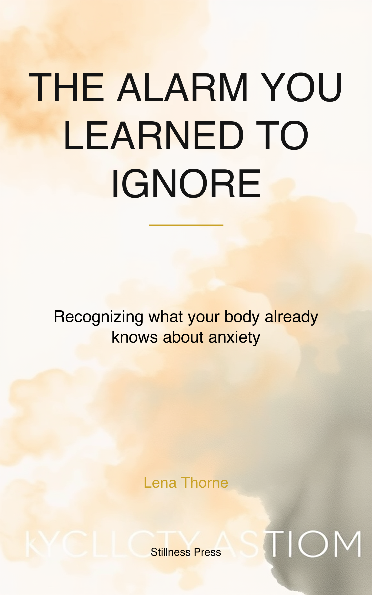
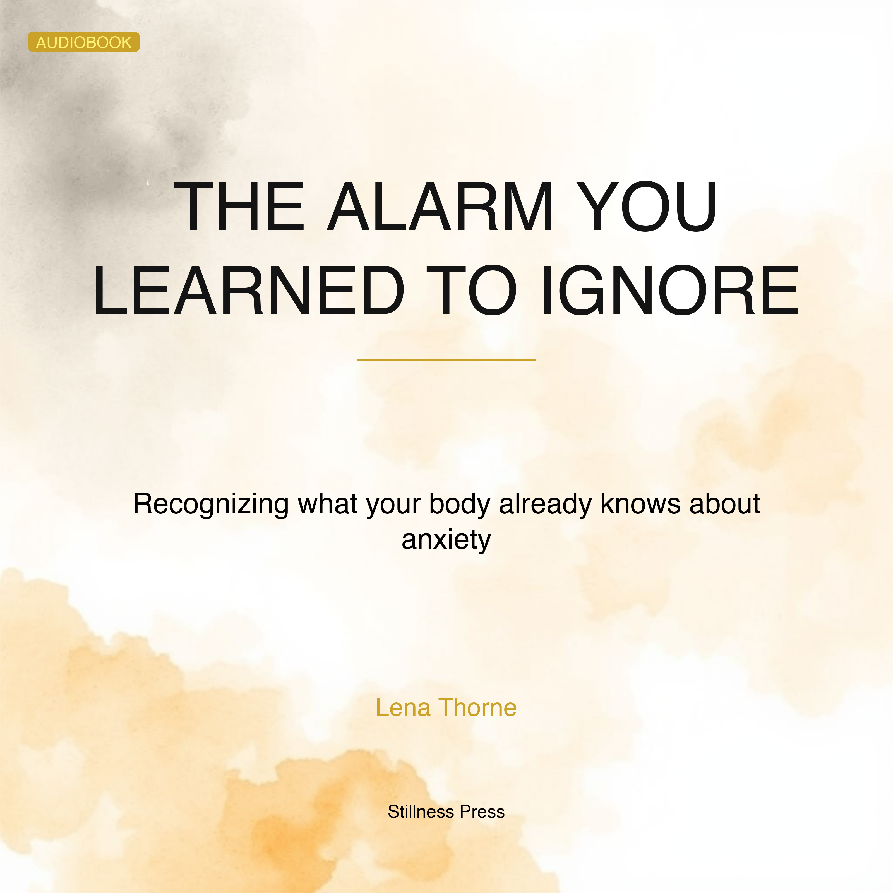
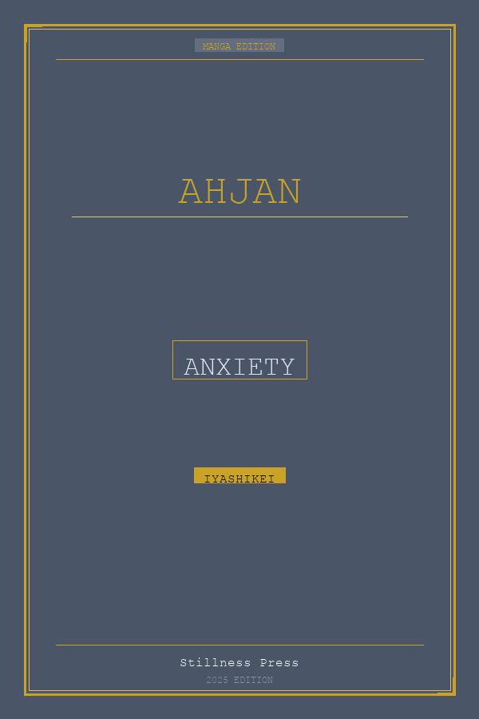

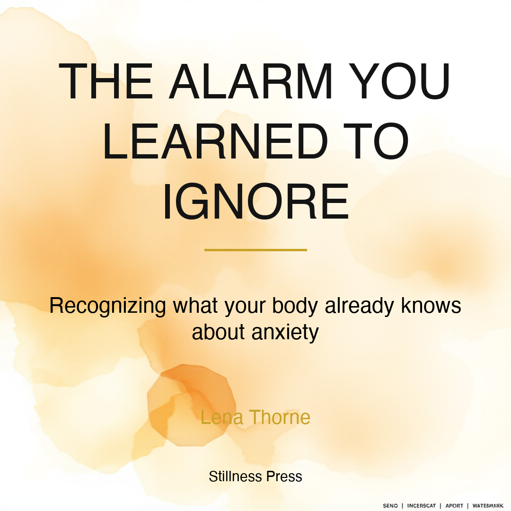
Official teacher reel · 9:16 vertical
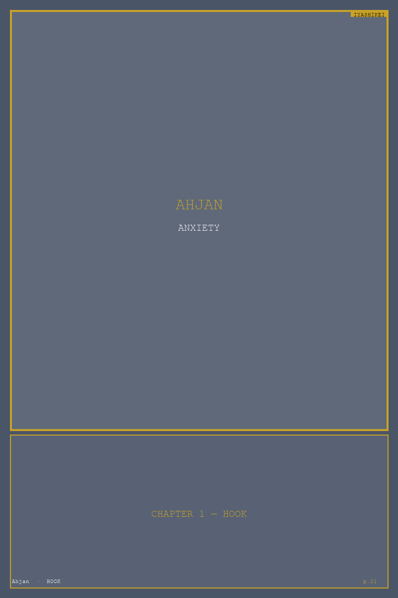
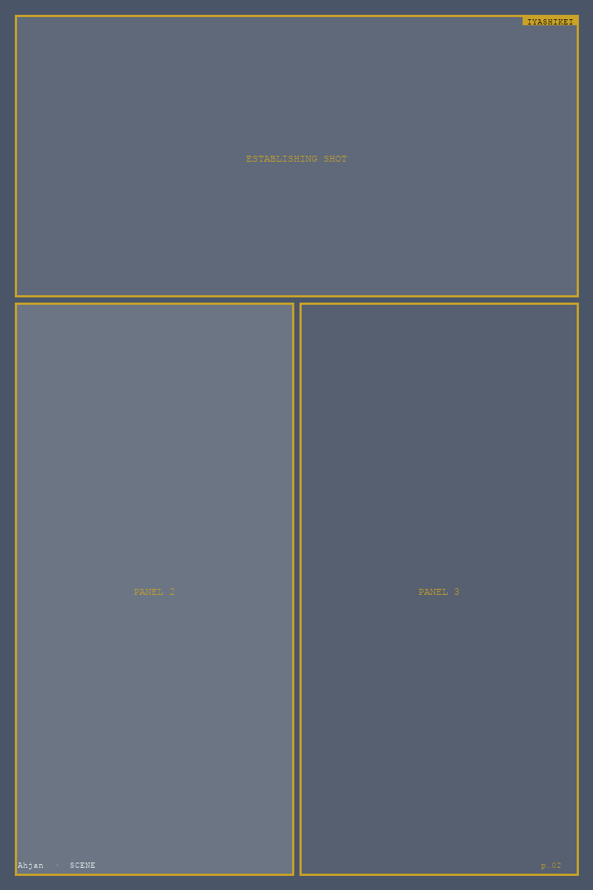
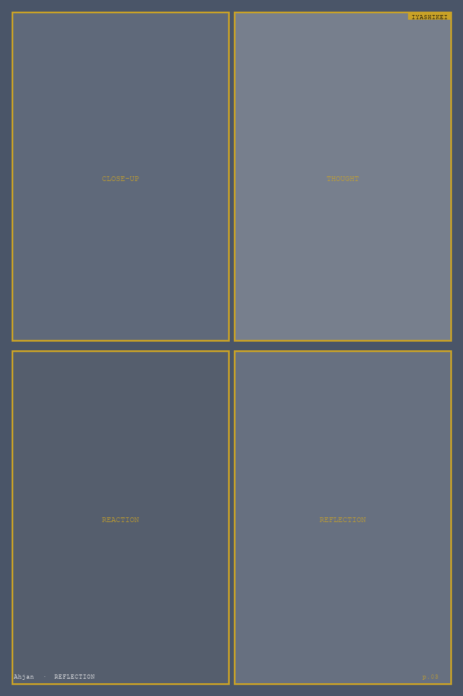
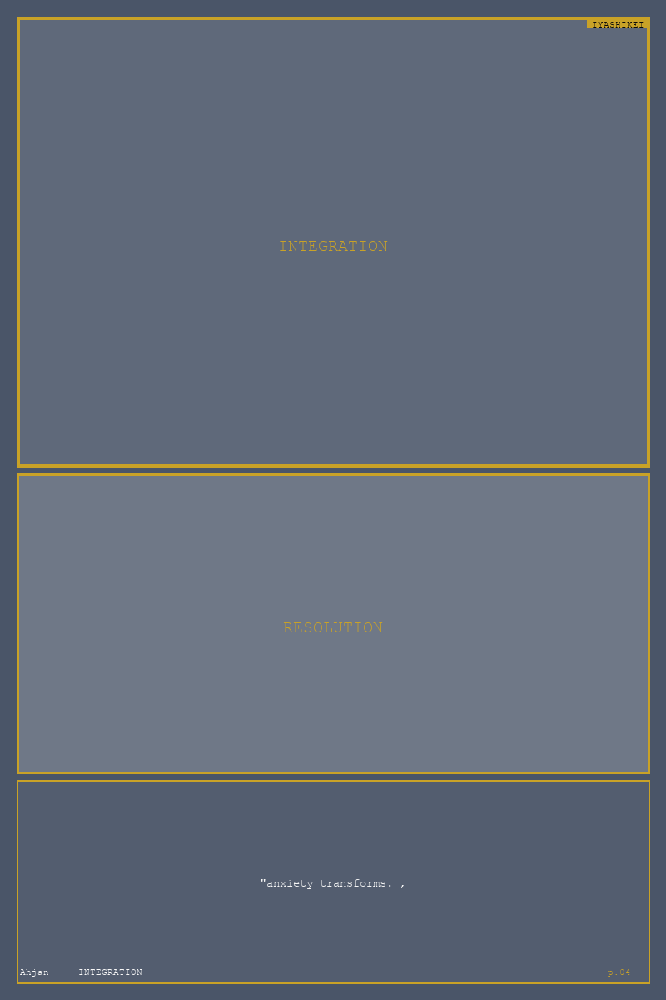
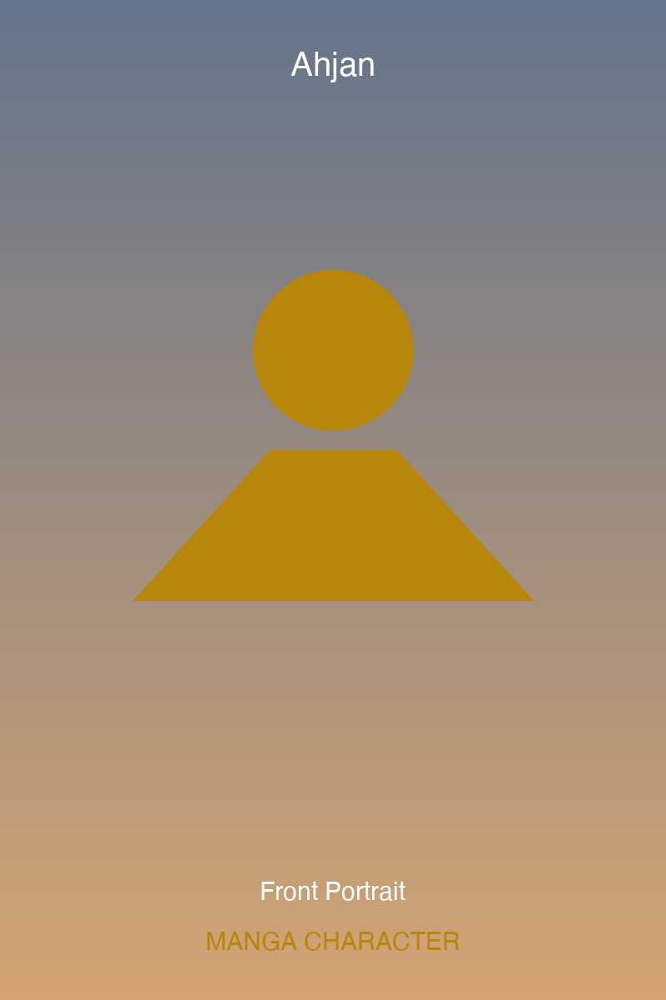
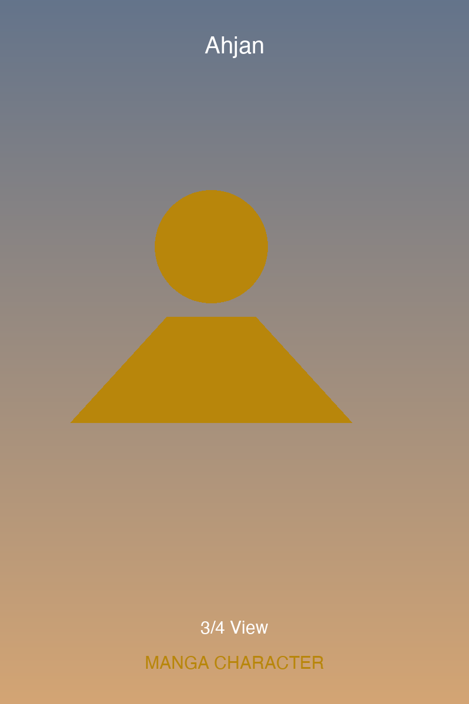
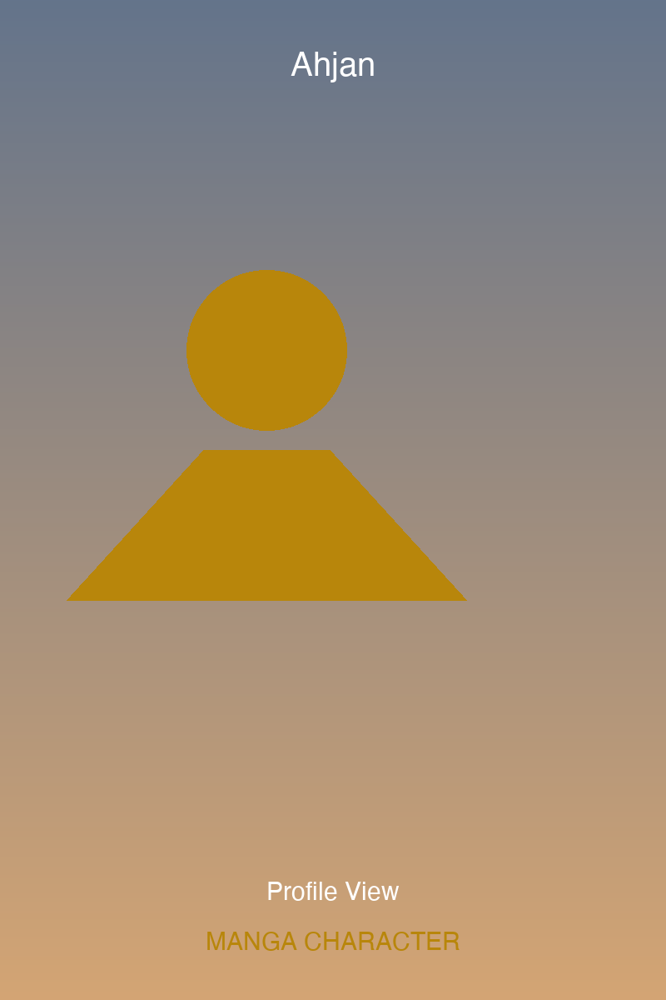

A Note on the Teachings of Ahjan
I was not a direct student of Ahjan. I encountered their work through books, talks, and publicly available teachings. What follows is not an official interpretation of Ahjan's work — it is an application. I have done my best to honor the integrity of the original teachings while translating them into practical guidance for the challenges you may be facing.
Ahjan's understanding of anxiety reshaped the way I see this subject. Their approach — rooted in contemplative / inner light; karma yoga; self-effort; Dharmakaya — offers a lens that goes beyond conventional advice. It speaks to something deeper: the patterns beneath the surface, the quiet mechanisms that keep us stuck, and the often-overlooked pathways toward genuine relief.
This book applies Ahjan's teachings to the specific experience of corporate managers navigating anxiety. It does not replace the teacher's original work. Where I have adapted exercises or frameworks, I have done so with care and transparency. Any simplification is mine, not theirs.
If something in these pages resonates with you, I encourage you to go to the source. Seek out Ahjan's own words — their talks, their writings, their direct teachings. What I offer here is a bridge, not a destination. The real work lives in the original.
Introduction
You do not need another framework. You have frameworks. What you need is to feel what anxiety is doing in your body while you are in the middle of using those frameworks.
These 20 chapters are short, practice-based, and designed for people who do not have time to read slowly. Each one gives you something you can use in a meeting, on a commute, or in the three minutes between calls when your nervous system is screaming.
This audiobook has a companion free guide with all the exercises and reflection prompts. You can get it free at PhoenixProtocolBooks.com/free/anxiety-corporate-managers-thirty-day-tracker-v1.
Chapter 1
The budget meeting is next week and your team's headcount is on the chopping block. You've been mentally preparing to fight for them. That preparation is exhausting.
The open-plan office hums. Your cubicle is the eighth one. gray light through the window through the skylights above. Conversations happen around you. Your monitor shows the same email. You have read it four times. Your cursor hovers over reply. Your fingers do not move. Someone walks past. The email is still open. The cursor still hovers.
That pause is doing more than slowing you down. It is showing you how the pattern enters, which means the chapter can name it before it hardens.
Underneath the feeling is a simple mechanism: you can act inside uncertainty without waiting for it to resolve. When the alarm runs the response, your nervous system treats uncertainty like danger and asks for impossible certainty. That is why ordinary moments feel heavy.
The point is that you can act inside uncertainty without waiting for it to resolve.
Think of something you want that you don't have. Feel the wanting. Does it feel
like urgency? Like something is wrong? Now imagine you could want this and feel
complete right now. What would change about your life if the wanting did not mean
something was broken? How would you treat yourself then?
Here is where the chapter stops talking about the pattern and lets you watch it happen.
The retreat center is three hours north of the city. Sofia drives there on a Friday
in October, leaves her phone in the car as instructed, and spends forty-eight hours
in silence. On Sunday afternoon she picks the phone back up and checks her inbox
before she reaches the main road. What she notices, later, is not that she checked.
It is how fast. Faster than hunger. Faster than the need for water. Ahjan describes
this as the mind's learned emergency: the signal that says you do not exist unless
someone has confirmed it recently.
The body responded before the mind did. A softening happened that no amount of reasoning could have produced.
Let the chapter land in the body before it turns back into explanation.
This week, practice one moment of not knowing. When you are about to react with
certainty, pause. What if you don't actually know what the other person meant? What
if you don't know what comes next? Sit in this uncertainty for a few seconds. This
opening is where wisdom lives.
Truth does not require your agreement.
The mind understood this. But understanding and living are different rooms. The hallway between them is your next work.
Chapter 2
Your direct report is looking for a new role and you know why. The anxiety about losing them is tangled with relief that they're leaving.
The the train stops between stations. Your coffee shifts in your hand. gray light through the window on the glass beside your face. The car is packed. Someone's briefcase presses your ribs. Your phone buzzes. Three messages. You do not read them. The train lurches forward again. Your coffee sloshes. Someone beside you exhales.
Stay with the moment a second longer. The pattern usually shows itself before the explanation does.
Underneath the feeling is a simple mechanism: you can act inside uncertainty without waiting for it to resolve. When the alarm runs the response, your nervous system treats uncertainty like danger and asks for impossible certainty. That is why ordinary moments feel heavy.
The point is that you can act inside uncertainty without waiting for it to resolve.
Sit and watch your breath. Notice when the mind pulls your attention away. Don't
push the thoughts out. Don't make yourself wrong for having them. Can you observe
the moment when attention leaves the breath? What is that moment made of? Is it a
battle, or just a noticing?
Attention moved from the content of the thought to the act of thinking. That single shift rearranged everything.
In practice, do not turn this into homework. Give the body one smaller, safer entry instead.
Start with the breath that shortened when the chapter turned.
In this state, the anxieties of tomorrow, the burdens of yesterday, and the constraints of self-doubt fade away.States of Mind and PerceptionStates of mind determine our perception of reality. Just as a window can offer a view of the ocean or a dark alley, our state of mind shapes how we perceive the world. Meditation, therefore, is the practice of shifting to higher and brighter states of mind.
Let the chapter land in the body before it turns back into explanation.
This week, return to one moment of clarity you have already had. Not a huge insight. A small one. Something you saw clearly without doubt. Sit with it. Remember what
that clarity felt like in your body. You have already accessed the capacity you need. You have done this before. Begin again from there.
The pattern is not your identity. It is a signal worth reading.
What you noticed here does not end with this chapter. The next layer is already forming.
Chapter 3
You're supposed to be the calm one. Your team doesn't know that your calm is performance. That the anxiety runs deeper than you let on.
The parking garage is fluorescent. Your footsteps echo. the street below is one level up. Your car is six rows back. gray light through the window drips from the ceiling. Your jacket is unzipped. Your keys are in your hand. A car alarm sounds somewhere. You keep walking. Your car is still six rows back. Your breathing is louder than the alarm.
By the time you can explain the moment, the alarm has already chosen a meaning for it. That matters because the body is already obeying the prediction.
Underneath the feeling is a simple mechanism: you can act inside uncertainty without waiting for it to resolve. When the alarm runs the response, your nervous system treats uncertainty like danger and asks for impossible certainty. That is why ordinary moments feel heavy.
The point is that you can act inside uncertainty without waiting for it to resolve.
What do you want to be true about yourself? Now observe how much time you spend
defending that image. What would happen if you let people see you as you actually
are? What are you protecting by maintaining the image? Is the protection worth what
it costs?
The familiar loop ran, but this time awareness caught it mid-cycle. The loop continued. Awareness stayed.
So when the pattern surges, the next move is not to understand more. It is to make the first move cheaper.
Start with the place in your body that lifted while you were listening. That is where the practice begins.
It is also akin to the reverence a spiritual seeker holds for an enlightened teacher, recognizing them as an embodiment of divine love and enlightenment.In Bhakti Yoga's teachings, genuine love is stripped of personal desires and attachments. Its potency resides in its capacity to elevate us beyond the confines of mundane existence, creating a connection with the divine.Integration of Love in Everyday LifeBhakti Yoga is the practice of mindful awareness of the nature of love. Love is the greatest force in the universe, a unifying power, and the inherent state of being.
Now notice what shifted before your mind starts summarizing it.
Choose one daily activity. Eating, walking, washing. Do it with full attention one
time this week. Notice the details. Let thoughts pass without following them. This is meditation embedded in life. You
don't need a cushion. You only need to pay attention.
Something quieted. But the noise will return. When it does, the practice is not silence. It is noticing the noise.
Chapter 4
The reorg announcement hits your inbox at 2 PM. You have three hours before your team asks for reassurance you can't promise. Your hands are cold before the meeting even starts.
Your badge beeps at the door. The conference room is full. the street below is visible through the window. Your hands are cold. The agenda is on the screen. Your laptop fan starts. Someone shuffles papers. The projection light is bright. Your throat is tight. You swallow.
Stay with the moment a second longer. The pattern usually shows itself before the explanation does.
Underneath the feeling is a simple mechanism: you can act inside uncertainty without waiting for it to resolve. When the alarm runs the response, your nervous system treats uncertainty like danger and asks for impossible certainty. That is why ordinary moments feel heavy.
The point is that you can act inside uncertainty without waiting for it to resolve.
What would your life look like if you believed your thoughts were just thoughts? If you acted on some and ignored others, with no struggle? What decisions would
change? Who would you become if you stopped defending against your own mind?
Here is where the chapter stops talking about the pattern and lets you watch it happen.
In the fourteenth century, Lahiri Mahasaya was a government clerk in Benares.
His desk was wood, his quill worn from morning correspondence. At midday he would
walk the same path to the river for meditation, then return to finish the afternoon's
ledgers.
His colleagues noticed nothing unusual. He filed forms correctly. He did not
speak of inner light or the clear light of reality. His attention moved between
the breath and the spreadsheet like water finding its level.
Years later, travelers spoke of enlightenment moving through him. Not because he
had abandoned his post, but because he had made the post his practice. The teaching
in this tradition says: the world itself is the path. Not the rejection of work,
but work transformed by focused attention.
Effort dropped away. Not because the situation resolved, but because the struggle against it became optional.
In practice, do not turn this into homework. Give the body one smaller, safer entry instead.
Start with the breath that shortened when the chapter turned.
Consequently, understanding the transient and dream-like nature of life is a significant step towards enlightenment.Seeking Higher States of Mind:Buddhist practitioners strive to attain higher states of mind, characterized by increased clarity, happiness, and a broader perspective on life. Through meditation, mindfulness, and compassionate action, they purify their minds, gradually ascending to more elevated states of consciousness.
Now notice what shifted before your mind starts summarizing it.
This week, practice returning. When you lose presence, return to the breath. When
you lose clarity, return to silence. When you lose ground, return to the body. The
path is not about achieving something new. It is about returning to what is already
here. Do this daily. This is the whole practice.
Observation is the only tool you need.
The clarity you touched just now will blur. That blurring is not failure. It is the next thing to observe.
Chapter 5
The project deadline is two weeks away and the scope just expanded. Your stomach dropped before you even finished reading the message.
The open-plan office hums. Your cubicle is the eighth one. gray light through the window through the skylights above. Conversations happen around you. Your monitor shows the same email. You have read it four times. Your cursor hovers over reply. Your fingers do not move. Someone walks past. The email is still open. The cursor still hovers.
That pause is doing more than slowing you down. It is showing you how the pattern enters, which means the chapter can name it before it hardens.
Underneath the feeling is a simple mechanism: you can act inside uncertainty without waiting for it to resolve. When the alarm runs the response, your nervous system treats uncertainty like danger and asks for impossible certainty. That is why ordinary moments feel heavy.
The point is that you can act inside uncertainty without waiting for it to resolve.
What would it mean to trust what you already know? To trust your own capacity to
see what is real? Most people are waiting for permission. Most people are waiting
for someone else to tell them they are ready. What if you already are? What would
you do differently?
For example, the quickest way to feel the mechanism is to watch it take hold in an ordinary moment.
There is a story of a student who came to practice with nothing left.
She had given the last three years to a project that did not survive.
She sat down and waited for the teacher to offer something.
The teacher offered nothing. Just sat. Just breathed.
After an hour the student said: I expected guidance.
The teacher said: You expected rescue. Those are different things.
The student left without clarity. But she left knowing the difference.
That is not a small thing. Ahjan teaches that exhaustion is not
a problem to be solved. It is a threshold to be crossed honestly.
Something landed differently this time. The familiar thought arrived, but the automatic agreement did not follow.
Now notice what shifted before your mind starts summarizing it.
Write down one thing you hold tightly. One thing you are afraid of losing. This
week, practice releasing it mentally each morning. Just for that day. Feel the freedom in release. At day's end, pick it back up if you choose. Notice
the pattern. Notice what happens when you are not always gripping.
The thought is not the thinker.
What you noticed here does not end with this chapter. The next layer is already forming.
Chapter 6
The email from HR about "upcoming changes" landed and nobody knows what it means. The ambiguity is worse than bad news would be.
The the train stops between stations. Your coffee shifts in your hand. gray light through the window on the glass beside your face. The car is packed. Someone's briefcase presses your ribs. Your phone buzzes. Three messages. You do not read them. The train lurches forward again. Your coffee sloshes. Someone beside you exhales.
That pause is doing more than slowing you down. It is showing you how the pattern enters, which means the chapter can name it before it hardens.
Underneath the feeling is a simple mechanism: you can act inside uncertainty without waiting for it to resolve. When the alarm runs the response, your nervous system treats uncertainty like danger and asks for impossible certainty. That is why ordinary moments feel heavy.
The point is that you can act inside uncertainty without waiting for it to resolve.
Where in your life do you run from what is difficult? Can you name one place where
you use busy-ness, distraction, or sleep to not feel something? Not to change it,
but to see it. What would happen if you stopped running for just five breaths?
Here is where the chapter stops talking about the pattern and lets you watch it happen.
Personal power has two arms: willpower and wisdom. Without wisdom, willpower alone
exhausts. You swim harder, sink deeper. You thrash against the river.
Wisdom asks: what is the shape of the situation? Where does the river bend? Where
is there a bridge?
A man with only will might force-swim a river for days. A man with only wisdom
walks upstream five minutes and finds a crossing.
The teaching is not that wisdom is better than will. It is that they work together.
Willpower without wisdom becomes stubbornness. Wisdom without willpower becomes
rumination.
Where are you forcing? This is the first question. Not: how hard should I try, but
is there something I am not seeing? Is there a bridge?
The moment you see the bridge—the moment wisdom shows itself—your willpower changes
texture. It becomes purposeful instead of desperate. This is personal power: not
the strength to overcome, but the clarity to move.
What was defended relaxed its grip. Not through willpower, but through the simple clarity of seeing what was being defended.
In practice, do not turn this into homework. Give the body one smaller, safer entry instead.
Start with the breath that shortened when the chapter turned.
Helvetica;ArialMT; ;;;;; ;; ;;;;; ;; Creating comparison videos for affiliate marketing on YouTube is an excellent strategy for beginners. It not only provides valuable information to your audience but also showcases multiple affiliate products at once. Here's a step-by-step guide on how to do it, along with a hypothetical example and potential earnings.Step 1. Choose products in the same category that you want to compare. Ensure these products are relevant to your audience and available through your affiliate programs.Example.
Your pace is not wrong. Some things reveal themselves slowly. Patience with yourself is not laziness.
Now notice what shifted before your mind starts summarizing it.
Sit quietly for five minutes. When your
mind pulls away, bring attention back. This is the entire practice. One time this week. That is your integration. The rest of the week, continue as
you normally do. Notice if anything shifts.
What you observe, you are not trapped by.
You glimpsed the difference between seeing and believing. That difference will matter most when the pressure returns.
Chapter 7
You're presenting to the executive team in two weeks. The anxiety starts now. The content is solid. Your nervous system doesn't care about content.
The parking garage is fluorescent. Your footsteps echo. the street below is one level up. Your car is six rows back. gray light through the window drips from the ceiling. Your jacket is unzipped. Your keys are in your hand. A car alarm sounds somewhere. You keep walking. Your car is still six rows back. Your breathing is louder than the alarm.
The body is already behaving like the threat is real. This is where the chapter has to begin.
Underneath the feeling is a simple mechanism: you can act inside uncertainty without waiting for it to resolve. When the alarm runs the response, your nervous system treats uncertainty like danger and asks for impossible certainty. That is why ordinary moments feel heavy.
The point is that you can act inside uncertainty without waiting for it to resolve.
What brings you fear? Name the fear. Now sit with it without trying to solve it. Notice where it lives in your body. Is the fear itself painful, or is the story
you tell about what the fear means painful? Can you have the fear without the story? What would that be like?
For example, the quickest way to feel the mechanism is to watch it take hold in an ordinary moment.
Marcus sits at his desk at 9pm. The office is empty. He is not finishing anything.
He is starting things. Opening files and closing them. Moving between tabs without
reading them. He knows this. He watches himself do it anyway. The not-finishing
is not laziness. It is the body refusing to let the mind land somewhere it cannot
defend. In Ahjan's framing, the exhausted mind does not rest. It performs the shape
of working so it does not have to face what stopping would reveal.
Let the chapter land in the body before it turns back into explanation.
Pick one person in your life. This week, observe them without judgment. Notice
three things about them you never noticed before. Not to change them. Not to
understand them better. Simply to see them. When you see another person clearly,
love grows naturally. Try this once.
Freedom is the gap between thought and reaction.
What you noticed here does not end with this chapter. The next layer is already forming.
Chapter 8
Performance review season arrives and your nervous system treats it like a threat assessment. You know your metrics. You know your team delivered. But the waiting—the not-knowing what landed and what didn't—lives in your stomach.
Your badge beeps at the door. The conference room is full. the street below is visible through the window. Your hands are cold. The agenda is on the screen. Your laptop fan starts. Someone shuffles papers. The projection light is bright. Your throat is tight. You swallow.
Stay with the moment a second longer. The pattern usually shows itself before the explanation does.
Underneath the feeling is a simple mechanism: you can act inside uncertainty without waiting for it to resolve. When the alarm runs the response, your nervous system treats uncertainty like danger and asks for impossible certainty. That is why ordinary moments feel heavy.
The point is that you can act inside uncertainty without waiting for it to resolve.
Consider someone you dislike. What story do you tell about them? What if that story
is not the whole picture? What if you are seeing only the part of them that
threatens you? What would happen if you saw them as they see themselves?
Here is where the chapter stops talking about the pattern and lets you watch it happen.
Marcus is a surgeon with reputation for precision. His training emphasized: extract
the pathology, minimize risk, close. His patients recover. His colleagues respect him.
Last month he moved into a teaching hospital and began mentoring residents. The
first time a resident hesitated during a procedure, Marcus felt his entire chest
tighten. Not frustration—something else. The hesitation was visible compassion
moving through the resident's hands.
Marcus wanted to reassert the protocol: you must move decisively. But he stopped
himself. He watched the resident complete the surgery slowly, carefully. Everything
worked.
In the hallway after, the resident said, "I am not sure I am fast enough for this."
Marcus almost told him: speed and compassion are not incompatible. Instead he said,
"Let me show you something." He showed the resident two surgeries—one his own from
five years ago, purely efficient. One from last week, where he had moved slower.
The resident studied them. Then said, "You changed. Why?"
Marcus does not have a clear answer. Something about witnessing the resident's
doubt had cracked his own certainty. Whether that crack has deepened or sealed,
he cannot yet say.
Something shifted. Not dramatically. But the frame is different now.
Now notice what shifted before your mind starts summarizing it.
Take one situation that usually triggers you. Not the biggest one. A medium one. Next time it happens, pause for three breaths before responding. During those breaths,
notice what you feel. Do not try to change it. This noticing is the
entire practice. Do this one time. See what happens.
Resistance dissolves in awareness.
You saw it once. The question now is whether you can see it again tomorrow, when the old pattern returns with fresh conviction.
Chapter 9
You've been in this role for 18 months and the honeymoon is over. Now you're just anxious every day.
The the train stops between stations. Your coffee shifts in your hand. gray light through the window on the glass beside your face. The car is packed. Someone's briefcase presses your ribs. Your phone buzzes. Three messages. You do not read them. The train lurches forward again. Your coffee sloshes. Someone beside you exhales.
Stay with the moment a second longer. The pattern usually shows itself before the explanation does.
Underneath the feeling is a simple mechanism: you can act inside uncertainty without waiting for it to resolve. When the alarm runs the response, your nervous system treats uncertainty like danger and asks for impossible certainty. That is why ordinary moments feel heavy.
The point is that you can act inside uncertainty without waiting for it to resolve.
When you feel anger, where does it live in your body? Sit with the sensation itself. Not the story about who wronged you. The physical reality of the emotion. How long
can you observe it without reacting? What does anger teach you when you don't run
from it?
Here is where the chapter stops talking about the pattern and lets you watch it happen.
Sarita works in a nonprofit's development department. She writes grant narratives
about housing-insecure families. By Tuesday her shoulders live near her ears.
She tells herself it is the writing, the hours. But beneath that—she is practicing
a kind of divided attention. In the story, she shows vulnerability. In the office,
she shows competence. The split feels legitimate: professionalism requires it.
One morning she realizes she cannot remember the last time she was whole in front
of someone. The families in her narratives are whole—their suffering is integrated,
visible, demanding. She is the one compartmentalized.
She asks a senior colleague, "Do you ever feel like the work requires you to be
incomplete?" The colleague stares at her screen and says, "That is the job." Sarita
nods. She returns to her own screen.
The next grant narrative she writes is slightly different. Not completed differently.
Simply held differently. The families' vulnerability does not require her to split.
She does not know if this shift will hold, or whether it matters.
The resistance shifted. Not gone, but visible now. Seeing it changes its weight entirely.
In practice, do not turn this into homework. Give the body one smaller, safer entry instead.
Start with the shoulders that lifted before you even noticed the cost.
This state is achieved through practices like meditation, mindfulness, and yoga, and is essential for perceiving the truth and attaining enlightenment. The clean mind is depicted as a prerequisite for spiritual purity and heightened consciousness.Physical Life as a Reflection of the MindThere is an interconnection between the physical and spiritual aspects of life. A well-ordered, disciplined physical existence reflects and reinforces a clear and focused mind.
Now notice what shifted before your mind starts summarizing it.
This week, take one action knowing that you might fail. Do it anyway. Not with
bravado. Simply do it. Notice that failure does not destroy you. Notice that the
fear was larger than the actual cost. Do this once. Let this become evidence that
you are capable of more than you thought.
The pattern is not your identity. It is a signal worth reading.
The shift happened here, in stillness. Life will test whether the shift survives motion.
Chapter 10
You're stuck between two truths: your team needs you calm and your organization is making that harder every quarter. Your body is keeping score of every uncertainty you're asked to contain.
The the train stops between stations. Your coffee shifts in your hand. gray light through the window on the glass beside your face. The car is packed. Someone's briefcase presses your ribs. Your phone buzzes. Three messages. You do not read them. The train lurches forward again. Your coffee sloshes. Someone beside you exhales.
Stay with the moment a second longer. The pattern usually shows itself before the explanation does.
Underneath the feeling is a simple mechanism: you can act inside uncertainty without waiting for it to resolve. When the alarm runs the response, your nervous system treats uncertainty like danger and asks for impossible certainty. That is why ordinary moments feel heavy.
The point is that you can act inside uncertainty without waiting for it to resolve.
Notice a moment today when you felt fully present. What were you doing? What were
you not doing? Can you feel the difference between presence and distraction? What
if you could choose presence in harder moments? What would need to be different
about how you relate to your own attention?
For example, the cost shows up fastest in a story. Watch how the prediction arrives before the fact does.
Yuki trained in martial arts for eight years. She was precise, powerful, feared.
Competition was her clarity. She knew where she stood: faster, stronger, more focused
than most.
Then she met a Zen teacher who also practiced sword. He moved slowly. He won every
match. Not because his technique was sharper—because he was not trying to win.
He was practicing something else. Attention without attachment. The sword moving
as if the sword was thinking. Her moves were still faster. His were already there.
For three months she watched him. She began to change how she stood before matches.
Less coiling, less calculation. More listening. Her win rate did not increase.
Something else happened instead. She stopped knowing what would happen next.
In the fifth month, in a match against a rival she had beaten twelve times, she
lost. Not because she was weaker. Because she had stopped hoarding her attention
for victory. The rival moved into that gap.
Walking to her car afterward, Yuki felt something shift in her spine. Not regret.
A loosening. She does not know if this loosening is spiritual awakening or simply
defeat. The quality feels the same.
Something shifted. Not dramatically. But the frame is different now.
In practice, do not turn this into homework. Give the body one smaller, safer entry instead.
Start with the place in your body that lifted while you were listening. That is where the practice begins.
Therefore, channeling your focus into your work can significantly enhance your awareness and concentration.Consider work as a means of strengthening your mind and developing impeccable attention to detail. By focusing on the minutiae of your job and being a diligent worker, you elevate your consciousness above the distractions of everyday life. This focused mindset is a key component of Krishna's teachings on right livelihood.Imagine your career as a department store. Without focus, you wander through various departments, succumbing to distractions and losing your energy.
You are allowed to move at the speed your body sets. Not faster. Not with apology.
Stay with what changed. Even if it only changed by one degree.
This week, practice one moment of complete acceptance. Something you usually resist. Instead of pushing it away, say yes to it for
one minute. Notice what happens. Often the thing you resist becomes bearable the
moment you stop resisting. Test this once.
Clarity arrives when narration stops.
Calm arrived. It will leave. The question is not how to keep it, but what you do when it goes.
Chapter 11
You knew the promotion was coming and you're still not ready. The imposter feeling isn't imposter syndrome. It's the accurate knowledge that you don't know what you're doing yet.
The the train stops between stations. Your coffee shifts in your hand. gray light through the window on the glass beside your face. The car is packed. Someone's briefcase presses your ribs. Your phone buzzes. Three messages. You do not read them. The train lurches forward again. Your coffee sloshes. Someone beside you exhales.
Stay with the moment a second longer. The pattern usually shows itself before the explanation does.
Underneath the feeling is a simple mechanism: you can act inside uncertainty without waiting for it to resolve. When the alarm runs the response, your nervous system treats uncertainty like danger and asks for impossible certainty. That is why ordinary moments feel heavy.
The point is that you can act inside uncertainty without waiting for it to resolve.
Notice a thought that repeats itself in your mind. Follow it back. Who told you
this was true? How long have you carried it? If you set it down right now, what
would be different? Not forever. Just for today.
The pattern gets clearest when you can see the price land on a real person.
In the kingdom of Kosala, Angulimala was a bandit whose name meant finger necklace.
He wore the fingers of travelers around his neck as proof of his ferocity.
When he learned that the Buddha moved through the forest, he thought: this is my
final test. If I can kill the Buddha, I will prove I fear no one.
As he watched the Buddha approach through the trees, something in him fractured.
Not his resolve, but his solidity. The Buddha did not hurry or hide. He walked as
if walking was his entire purpose.
Angulimala raised his weapon. The Buddha said: I have already stopped. It is you
who must stop. Not a command. A description of what was true.
Angulimala felt the ground beneath him dissolve. Everything he had built himself
to be—the ferocity, the power, the proof—was suddenly transparent. He fell to his
knees not from shame, but from recognizing a clarity he could not unsee.
In this teaching: when inner light becomes visible through presence, it cannot be
unseen. Angulimala's life of violence ended not through force, but through witnessing
what was already true.
Something shifted. Not dramatically. But the frame is different now.
Stay with what changed. Even if it only changed by one degree.
Identify one belief you have about yourself that causes suffering. This week, assume
it might not be entirely true. When the belief arises, notice it. Do not fight it. Simply hold it lightly and ask: is this actually true right now? Often the answer is
no. Sometimes it is. Either way, you see the belief, not yourself.
The pattern is not your identity. It is a signal worth reading.
What you noticed here does not end with this chapter. The next layer is already forming.
Chapter 12
The company values document says "transparency" and "trust" but every reorg happens without warning. You're living in the anxiety of that contradiction.
The open-plan office hums. Your cubicle is the eighth one. gray light through the window through the skylights above. Conversations happen around you. Your monitor shows the same email. You have read it four times. Your cursor hovers over reply. Your fingers do not move. Someone walks past. The email is still open. The cursor still hovers.
Stay with the moment a second longer. The pattern usually shows itself before the explanation does.
Underneath the feeling is a simple mechanism: you can act inside uncertainty without waiting for it to resolve. When the alarm runs the response, your nervous system treats uncertainty like danger and asks for impossible certainty. That is why ordinary moments feel heavy.
The point is that you can act inside uncertainty without waiting for it to resolve.
What are you attached to that you pretend you are not? Look at it without judgment. Why do you grip it? Is the thing itself the problem, or the story you built around
having it? Can you hold it lightly and still have it? What happens then?
For example, the quickest way to feel the mechanism is to watch it take hold in an ordinary moment.
What the burnout literature calls depletion Ahjan calls the cost of
performing presence without being present. The body can sustain it
for months. It adjusts. Cortisol covers the gap. Performance stays
measurable while something underneath goes quiet. The moment it stops
being sustainable is not a crisis. It is a signal. The signal says:
the covering is no longer working. Something wants to stop covering.
That something is not weakness. It is the part of you that has been
carrying the real weight while the performance ran overhead.
The story changed. Not the facts, but the relationship to the facts. The mind stopped narrating and started observing.
Stay with what changed. Even if it only changed by one degree.
This week, when you notice a strong emotion, ask: where is this in my body? Feel
into it without trying to change it. The emotion will likely shift. Not because you
fought it, but because you felt it. Do this once. Document what happens. This is how
you learn that emotions are not solid. They are movement.
Drop the story. Keep the seeing.
The old story is still in you. It has not been defeated. But now you have seen its face. That changes what comes next.
Chapter 13
The company is going through a strategic shift and your role is suddenly less central. The anxiety isn't about the work. It's about belonging.
The the train stops between stations. Your coffee shifts in your hand. gray light through the window on the glass beside your face. The car is packed. Someone's briefcase presses your ribs. Your phone buzzes. Three messages. You do not read them. The train lurches forward again. Your coffee sloshes. Someone beside you exhales.
That pause is doing more than slowing you down. It is showing you how the pattern enters, which means the chapter can name it before it hardens.
Underneath the feeling is a simple mechanism: you can act inside uncertainty without waiting for it to resolve. When the alarm runs the response, your nervous system treats uncertainty like danger and asks for impossible certainty. That is why ordinary moments feel heavy.
The point is that you can act inside uncertainty without waiting for it to resolve.
For example, the quickest way to feel the mechanism is to watch it take hold in an ordinary moment.
James has been unemployed for fourteen months. His apartment is clean. His inbox
is organized. At 3 AM his hands become fists.
He calls his sister. She says: you should apply to the position at her firm. He
says: I do not qualify. She says: apply anyway. Let them decide.
James applies. He does not expect anything. The response comes in four hours: they
want to interview him. His breathing becomes shallow. This is the moment he has
been avoiding. Being seen while inadequate.
In the waiting room before the interview, he scrolls his phone compulsively. He has
checked the same email seven times. His foot bounces against the floor in rhythm
with his pulse.
When the hiring manager calls his name, James stands. Everything has narrowed to:
do not reveal how much you are afraid. But the manager sees something. She pauses.
She says: you seem nervous. James's jaw clenches. He says: I am.
Instead of correcting him—instead of asking him to steady himself—she says: that
is okay. Tell me what you have built.
As James speaks, something shifts. Not confidence. Something smaller. Permission
to be visible exactly as he is. The interview ends. He does not get the job. But
something in his nervous system has changed its stance. He does not know yet if
this change will hold, or what it will cost him to discover.
Recognition replaced explanation. The pattern was seen, not analyzed. That seeing is the pivot.
In practice, start smaller than insight. Start where the body is still holding the chapter.
Start with the jaw that tightened while the story was unfolding.
It is a direct experience of life devoid of any mental constructs or illusions, a state of being in perfect harmony with the universe.In conclusion, Buddhist enlightenment is a journey from ordinary states of mind to a state of ultimate peace and clarity known as Nirvana. This path involves shifting to higher states of mind through mindfulness, compassion, and meditation. However, the ultimate goal is to transcend all states of mind, leading to a direct experience of reality beyond concepts, mental constructs, and even the self.
Remember this: you can act inside uncertainty without waiting for it to resolve. That is not a philosophy. That is what happened in this chapter.
The capacity to notice is always available.
This was one moment of recognition. The pattern has years of momentum. What happens when momentum meets awareness?
Chapter 14
That skip-level with the VP felt like surveillance. Your shoulders stayed high for three hours afterward, replaying every word you said about your team. The feeling that you're being watched from above never fully leaves.
The parking garage is fluorescent. Your footsteps echo. the street below is one level up. Your car is six rows back. gray light through the window drips from the ceiling. Your jacket is unzipped. Your keys are in your hand. A car alarm sounds somewhere. You keep walking. Your car is still six rows back. Your breathing is louder than the alarm.
The body is already behaving like the threat is real. This is where the chapter has to begin.
Underneath the feeling is a simple mechanism: you can act inside uncertainty without waiting for it to resolve. When the alarm runs the response, your nervous system treats uncertainty like danger and asks for impossible certainty. That is why ordinary moments feel heavy.
The point is that you can act inside uncertainty without waiting for it to resolve.
For example, the quickest way to feel the mechanism is to watch it take hold in an ordinary moment.
Siddhartha lived behind palace walls, surrounded by pleasure. His father kept
suffering hidden. But one day he saw an old woman, bent and toothless. Then he saw
a corpse being carried to the pyre.
Everything he had known fractured. He left the palace that night.
For seven years he practiced extreme asceticism. He fasted until his ribs showed
like branches. He sat in ice. He believed that deprivation would burn away the self
and reveal truth.
Almost starving to death, he recognized something: the self cannot burn away through
force. Deprivation is just another form of the will trying to conquer itself.
He walked to the river and bathed. He ate rice. He sat beneath a tree and stopped
deciding. Not luxury, not deprivation. Not victory, not surrender. Something between.
In that space of not-choosing, clarity came. Not earned through extremity. Revealed
when the forcing stopped.
The teaching in this tradition is simple: enlightenment is not purchased through
suffering or pleasure. It is revealed when you stop trying to buy it with anything.
Something shifted. Not dramatically. But the frame is different now.
So when the pattern surges, the next move is not to understand more. It is to make the first move cheaper.
Start with the place in your body that lifted while you were listening. That is where the practice begins.
They inspire us to cultivate selflessness in our own lives and provide invaluable guidance on how to navigate the challenges that may arise along the path.ConclusionSelfless giving, or Karma Yoga, is a profound practice that brings greater love and fulfillment into our lives. By transcending selfishness, expanding our circles of giving, and eliminating self-centered intentions, we unlock a wellspring of happiness and inner peace.
Remember this: you can act inside uncertainty without waiting for it to resolve. That is not a philosophy. That is what happened in this chapter.
The pattern is not your identity. It is a signal worth reading.
You noticed the loop. Next time the loop will be faster, more convincing. Can you notice it then?
Chapter 15
You're managing someone who reminds you of your own weaknesses. The anxiety compounds because now you're anxious about being anxious about managing them.
The open-plan office hums. Your cubicle is the eighth one. gray light through the window through the skylights above. Conversations happen around you. Your monitor shows the same email. You have read it four times. Your cursor hovers over reply. Your fingers do not move. Someone walks past. The email is still open. The cursor still hovers.
Stay with the moment a second longer. The pattern usually shows itself before the explanation does.
Underneath the feeling is a simple mechanism: you can act inside uncertainty without waiting for it to resolve. When the alarm runs the response, your nervous system treats uncertainty like danger and asks for impossible certainty. That is why ordinary moments feel heavy.
The point is that you can act inside uncertainty without waiting for it to resolve.
Here is where the chapter stops talking about the pattern and lets you watch it happen.
She stops. Not dramatically. Not with intention. She is in the middle
of drafting an email and she puts her hands in her lap and looks at
the window. Outside, a bus stops. Opens. Closes. Leaves. She watches
it the whole way through. She does not finish the email that afternoon.
She does not explain why. There is no name for what happened at the
window. Only that something in her needed to watch something complete
its movement from start to finish without her intervening. That was enough.
The question stopped being rhetorical. It became real inquiry. The mind paused instead of answering reflexively.
In practice, do not turn this into homework. Give the body one smaller, safer entry instead.
Start with the hand that hovered instead of moving. That freeze is the entry point.
A skilled teacher can not only transmit their own high states of mind but also provide the necessary discipline and focus for effective meditation. Learning from a teacher is akin to being initiated into an ancient art, where knowledge and power are transferred through experience.The Invisible PracticeMeditation is an invisible practice that goes beyond mere physical appearances. It is not about sitting still and thinking random thoughts; it is about transcending thought altogether. In the vast blue sky of our minds, thoughts are like birds, some benign and others disruptive.
Remember this: you can act inside uncertainty without waiting for it to resolve. That is not a philosophy. That is what happened in this chapter.
The pattern is not your identity. It is a signal worth reading.
What you noticed here does not end with this chapter. The next layer is already forming.
Chapter 16
The peer you came up with just got promoted to your level. The comparison game your brain started is now running 24/7. Your cortisol doesn't know the difference between threat and ambition.
The open-plan office hums. Your cubicle is the eighth one. gray light through the window through the skylights above. Conversations happen around you. Your monitor shows the same email. You have read it four times. Your cursor hovers over reply. Your fingers do not move. Someone walks past. The email is still open. The cursor still hovers.
This is where comparison does its quiet damage: it makes another person's surface feel like evidence against you.
Underneath the feeling is a simple mechanism: you can act inside uncertainty without waiting for it to resolve. When the alarm runs the response, your nervous system treats uncertainty like danger and asks for impossible certainty. That is why ordinary moments feel heavy.
The point is that you can act inside uncertainty without waiting for it to resolve.
Here is where the chapter stops talking about the pattern and lets you watch it happen.
Imagine a cup of water. You are holding it. Now—I add salt to the water. Not a
little. Enough to make it bitter.
You taste it and frown. But instead of emptying the cup, you hold it tighter.
You carry it everywhere. You call this your life. You expect relief that does not
come.
The salt is your attachments: the way things should be, the person who disappointed
you, the future you cannot control, the identity you are defending.
Now imagine I ask you to walk to the river. To empty this cup. To fill it fresh.
The river water is not sweeter because the river is special—it is sweet because
you are no longer holding salt.
This is not philosophy. Happiness is what becomes possible when you let go of what
is bitter. Not through effort, not through forcing joy. Through the simple mechanics
of release.
Something shifted. Not dramatically. But the frame is different now.
In practice, do not turn this into homework. Give the body one smaller, safer entry instead.
Start with the place in your body that lifted while you were listening. That is where the practice begins.
However, true meditation seeks to completely still these waves so that the treasure can be directly accessed.In essence, meditation is about going beyond thought, transcending the limitations of self-centered thinking, and entering a realm of boundless awareness. When we achieve this state, our minds become like the vast open blue sky, unobstructed by the constant flight of thoughts.The Transformative Power of MeditationMeditation is not merely a practice of quieting the mind; it is a means of entering the dimensions of light and enlightenment.
Remember this: you can act inside uncertainty without waiting for it to resolve. That is not a philosophy. That is what happened in this chapter.
You can see without believing.
What remains is not more explanation. It is the next place this pattern asks for your life.
Chapter 17
The Slack message from your boss lands on a Friday at 4:47 PM. You read it seven times. Each read changes the meaning. Your breath stays shallow until Monday.
The the train stops between stations. Your coffee shifts in your hand. gray light through the window on the glass beside your face. The car is packed. Someone's briefcase presses your ribs. Your phone buzzes. Three messages. You do not read them. The train lurches forward again. Your coffee sloshes. Someone beside you exhales.
That pause is doing more than slowing you down. It is showing you how the pattern enters, which means the chapter can name it before it hardens.
Underneath the feeling is a simple mechanism: you can act inside uncertainty without waiting for it to resolve. When the alarm runs the response, your nervous system treats uncertainty like danger and asks for impossible certainty. That is why ordinary moments feel heavy.
The point is that you can act inside uncertainty without waiting for it to resolve.
For example, the quickest way to feel the mechanism is to watch it take hold in an ordinary moment.
Nadia gets the promotion she worked four years for on a Thursday.
On Friday she feels nothing. She tells a friend and the friend says
congratulations and Nadia says thank you and both of them move on.
She spends the weekend waiting to feel it. By Sunday she starts
to wonder if something is wrong with her. By Monday she is
already focused on the next thing. In Ahjan's teaching, this is
not ingratitude. It is the cost of spending so long achieving
that the part of you that receives has gone offline. The achieving
still works. The landing does not.
Remember this: you can act inside uncertainty without waiting for it to resolve. That is not a philosophy. That is what happened in this chapter.
What remains is not more explanation. It is the next place this pattern asks for your life.
Chapter 18
You're preparing for the difficult conversation with your direct report and the anxiety shows up first. Not the words you want to say. Not the feedback. Just the raw dread of causing discomfort.
The open-plan office hums. Your cubicle is the eighth one. gray light through the window through the skylights above. Conversations happen around you. Your monitor shows the same email. You have read it four times. Your cursor hovers over reply. Your fingers do not move. Someone walks past. The email is still open. The cursor still hovers.
That pause is doing more than slowing you down. It is showing you how the pattern enters, which means the chapter can name it before it hardens.
Underneath the feeling is a simple mechanism: you can act inside uncertainty without waiting for it to resolve. When the alarm runs the response, your nervous system treats uncertainty like danger and asks for impossible certainty. That is why ordinary moments feel heavy.
The point is that you can act inside uncertainty without waiting for it to resolve.
Here is where the chapter stops talking about the pattern and lets you watch it happen.
The question Ahjan returns to is not what depleted you.
It is what you told yourself about the depletion as it was happening.
Most people say: I just need to push through.
Or: I will rest when this is finished.
Or: Others have it worse.
None of these are untrue. All of them are how the system justifies
running past empty. The justification is not the problem.
The problem is that it works. Right up until it doesn't.
Remember this: you can act inside uncertainty without waiting for it to resolve. That is not a philosophy. That is what happened in this chapter.
What remains is not more explanation. It is the next place this pattern asks for your life.
Chapter 19
The org structure feels unstable and you're the one who has to transmit stability to your team. Your own uncertainty becomes a management liability you can't afford.
The the train stops between stations. Your coffee shifts in your hand. gray light through the window on the glass beside your face. The car is packed. Someone's briefcase presses your ribs. Your phone buzzes. Three messages. You do not read them. The train lurches forward again. Your coffee sloshes. Someone beside you exhales.
That pause is doing more than slowing you down. It is showing you how the pattern enters, which means the chapter can name it before it hardens.
Underneath the feeling is a simple mechanism: you can act inside uncertainty without waiting for it to resolve. When the alarm runs the response, your nervous system treats uncertainty like danger and asks for impossible certainty. That is why ordinary moments feel heavy.
The point is that you can act inside uncertainty without waiting for it to resolve.
Here is where the chapter stops talking about the pattern and lets you watch it happen.
Early morning in the meditation hall. The light is still uncertain—somewhere between
dark and dawn. Someone has lit a single candle near the altar.
Her spine is against the wall. Her breath is moving through her body like water
finding channels. She has been sitting for six hours and the body has become
something other—not hers exactly, not separate.
In this quality of attention, poverty looks like wealth. The empty room is full. The
cold floor is perfect. There is no resistance, so there is nothing to overcome. She
does not feel enlightened. She feels the possibility of enlightenment—not as a state
to achieve, but as the color of reality when you stop insisting it be different.
A bell sounds very far away. She returns. Her legs are asleep. The floor is cold
again. But something has shifted in her understanding. The clear light was always
here. She was simply standing in her own way.
In practice, do not turn this into homework. Give the body one smaller, safer entry instead.
Start with the breath that shortened when the chapter turned.
Rejecting career success based on a knee-jerk aversion to money can hinder your own spiritual and financial growth.When you engage in meditation and mindfulness practices, it naturally leads to improved performance in your career. Meditation enhances focus and clarity, making you a more efficient and effective worker. Therefore, pursuing career success can be a natural outcome of your spiritual practice.The key is to align your career with a selfless intention. Most people work primarily for self-gratification, leading to a self-centered existence that drains their energy.
Remember this: you can act inside uncertainty without waiting for it to resolve. That is not a philosophy. That is what happened in this chapter.
What remains is not more explanation. It is the next place this pattern asks for your life.
Chapter 20
You're four months into managing a manager and you don't know if you're doing it right. The uncertainty lives in your chest.
The open-plan office hums. Your cubicle is the eighth one. gray light through the window through the skylights above. Conversations happen around you. Your monitor shows the same email. You have read it four times. Your cursor hovers over reply. Your fingers do not move. Someone walks past. The email is still open. The cursor still hovers.
Stay with the moment a second longer. The pattern usually shows itself before the explanation does.
Underneath the feeling is a simple mechanism: you can act inside uncertainty without waiting for it to resolve. When the alarm runs the response, your nervous system treats uncertainty like danger and asks for impossible certainty. That is why ordinary moments feel heavy.
The point is that you can act inside uncertainty without waiting for it to resolve.
For example, the quickest way to feel the mechanism is to watch it take hold in an ordinary moment.
The disciple arrived carrying the weight of a week's worth of unresolved decisions.
She had meditated every morning and still the clarity refused to come. She sat with
a senior teacher at the edge of the garden where the light came through the trees
at an angle that made everything look unhurried.
She said she was afraid that the stillness was not working. That perhaps her mind
was too tangled for the practice to find its way in.
The teacher did not answer immediately. He watched the light move across the stones.
Then he said: the light does not find its way in. The light is always present. What
changes is how much we stand in our own way.
She stayed with that for some time. The decisions were still unresolved when she
left. But the quality of holding them had changed. Something in the chest had moved
from bracing to simply being present with what was not yet clear.
So when the pattern surges, the next move is not to understand more. It is to make the first move cheaper.
Start with the pressure under the sternum. That is the part still bracing.
Through the lens of Bhakti Yoga, love extends beyond personal relationships, embracing a universal scale where affection for the divine, all beings, and the self coalesce into a potent force propelling us toward enlightenment.This comprehensive understanding of love closely aligns with Buddhist principles of compassion and selflessness, where the ultimate expression of love lies in selflessly seeking enlightenment not just for oneself but for all beings.
Remember this: you can act inside uncertainty without waiting for it to resolve. That is not a philosophy. That is what happened in this chapter.
Conclusion
You manage systems for a living. Now you have a system for managing this.
Not a framework. Not a strategy deck. A felt sense of where anxiety lives in your body and what it does when it runs unchecked. The practices in this book are small enough to fit between meetings and powerful enough to change what happens inside them.
Use them. Not because you should. Because you noticed they work.
Where to Go Deeper
This book drew from the teachings of Ahjan to offer you a practical path through anxiety. But what you have read here is only one application — shaped by my perspective and filtered through the specific challenges of corporate managers.
If these ideas spoke to you, go deeper. Seek out Ahjan's original works. Listen to their talks. Sit with their words directly. The bridge this book offers is meant to lead you to the source, not to stand in its place.
To go deeper and actually do the work from this book, download the companion free guide at PhoenixProtocolBooks.com/free/anxiety-corporate-managers-thirty-day-tracker-v1. You will find guided exercises, journaling pages, and tools you can return to again and again. It is free — designed to go with exactly this book.
Before you go — if you want to take this further, a companion free guide is waiting for you at PhoenixProtocolBooks.com/free/anxiety-corporate-managers-thirty-day-tracker-v1.
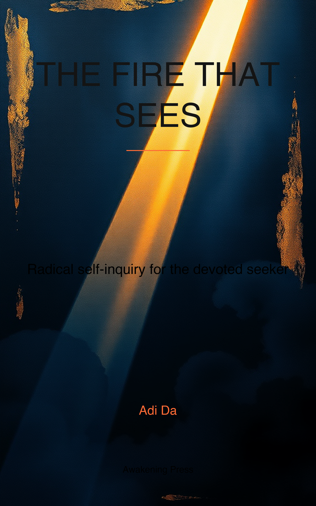

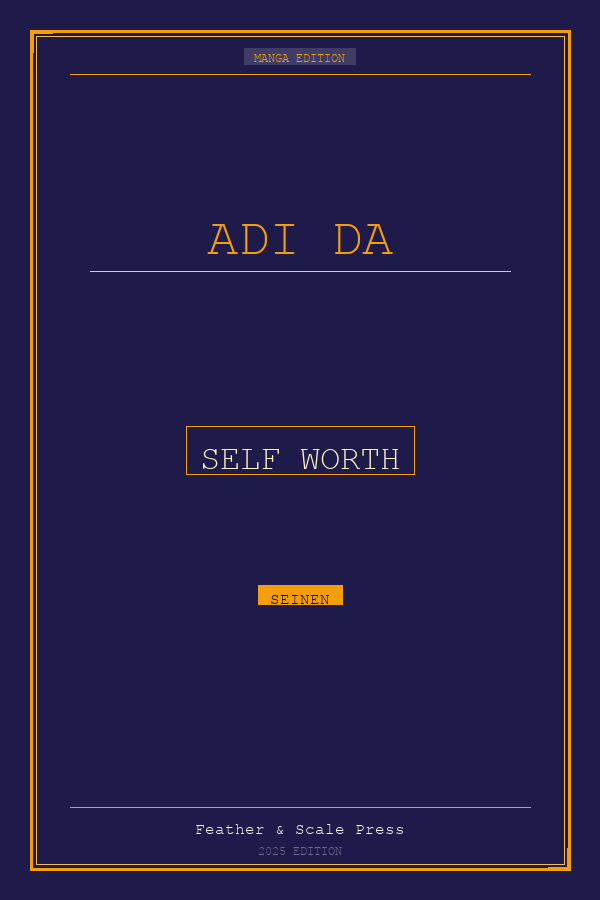

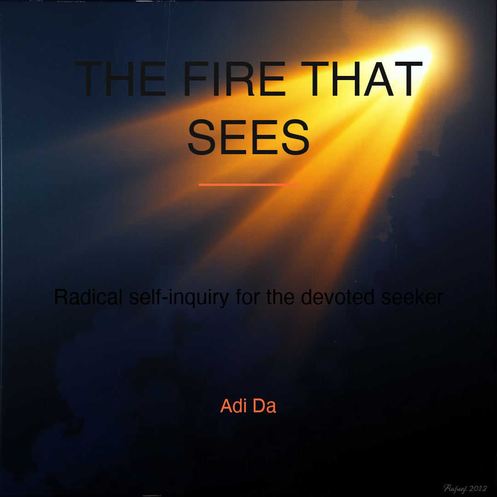
Official teacher reel · 9:16 vertical
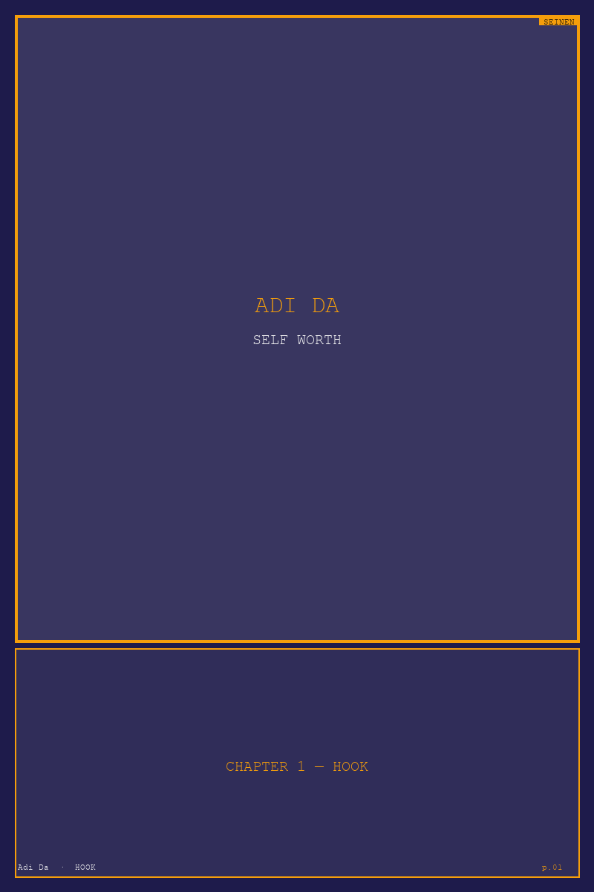
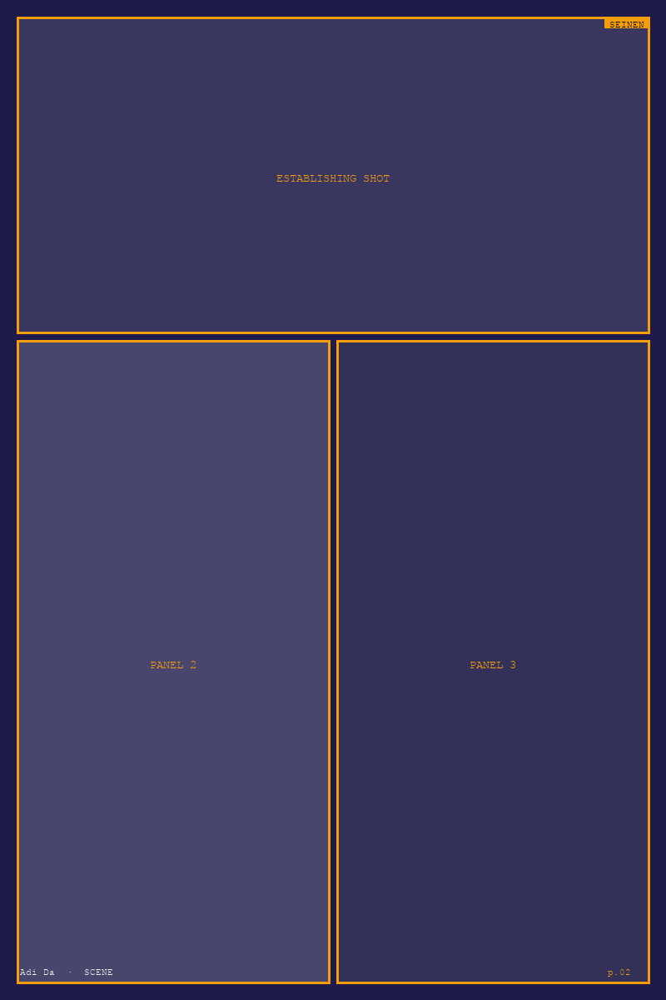
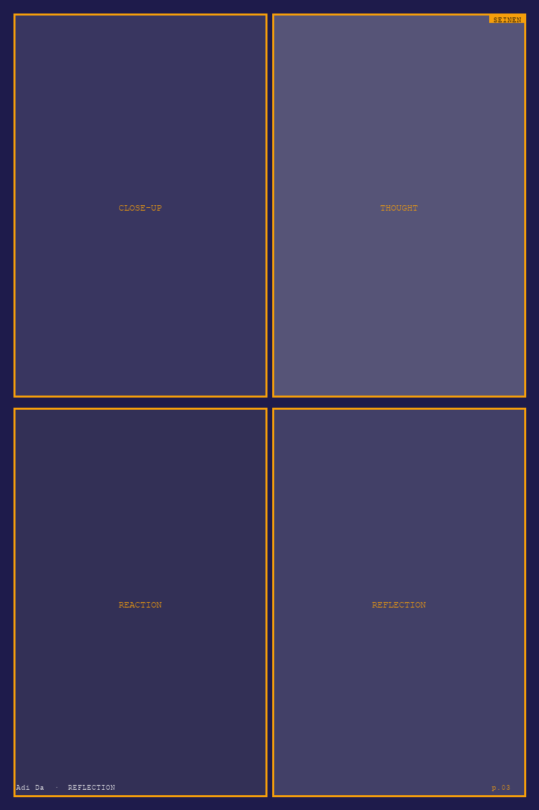
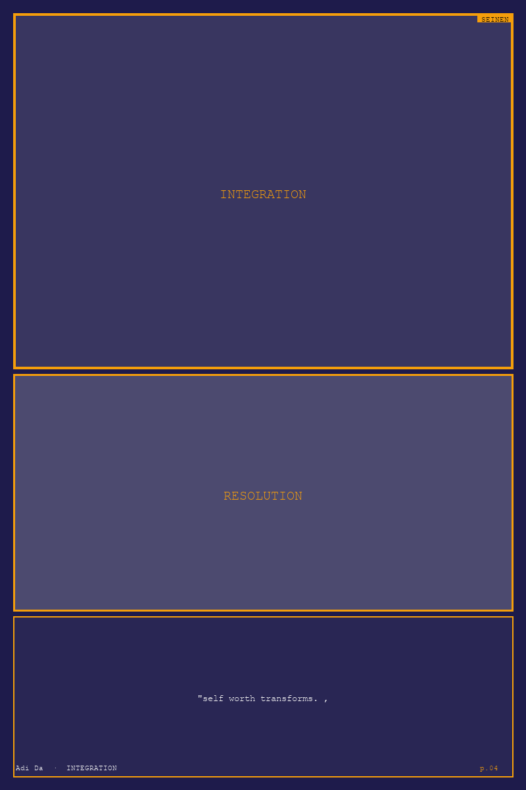
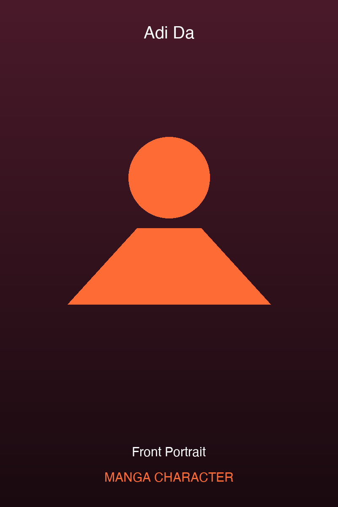
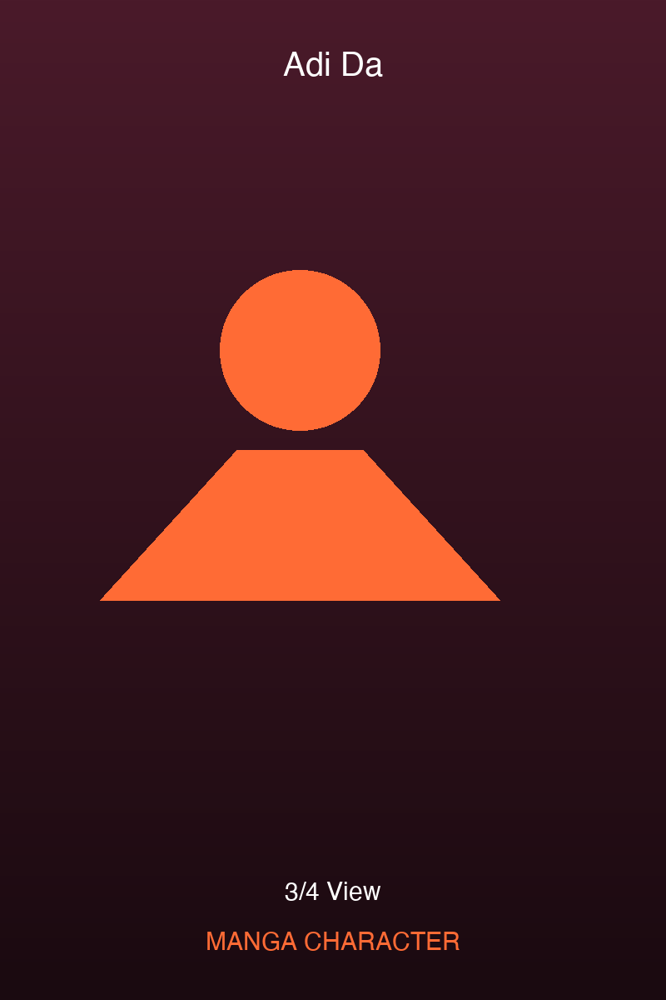
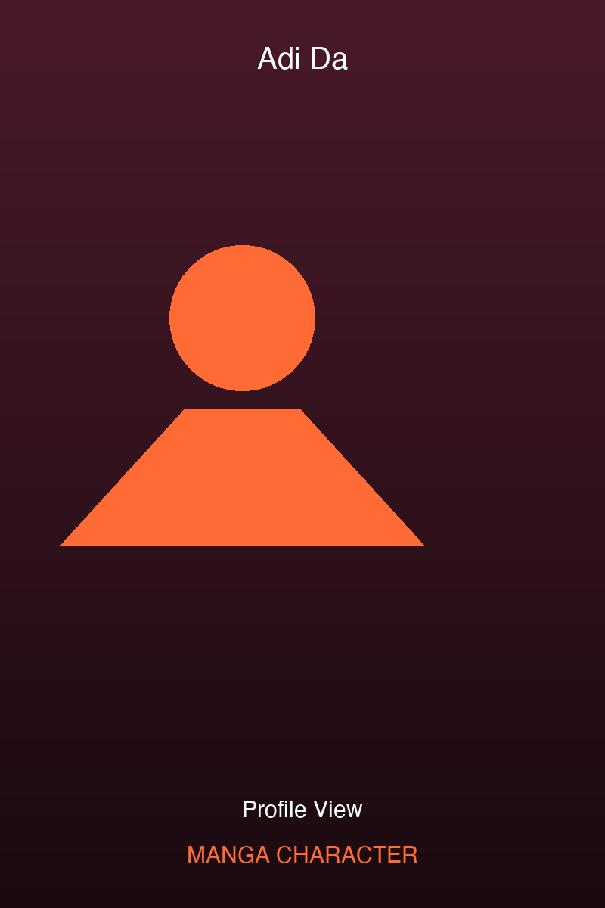
A Note on the Teachings of Adi Da
I was not a direct student of Adi Da. I encountered their work through books, talks, and publicly available teachings. What follows is not an official interpretation of Adi Da's work — it is an application. I have done my best to honor the integrity of the original teachings while translating them into practical guidance for the challenges you may be facing.
Adi Da's understanding of self worth reshaped the way I see this subject. Their approach — rooted in radical devotion, the Bright, prior freedom, relationship as practice — offers a lens that goes beyond conventional advice. It speaks to something deeper: the patterns beneath the surface, the quiet mechanisms that keep us stuck, and the often-overlooked pathways toward genuine relief.
This book applies Adi Da's teachings to the specific experience of entrepreneurs navigating self worth. It does not replace the teacher's original work. Where I have adapted exercises or frameworks, I have done so with care and transparency. Any simplification is mine, not theirs.
If something in these pages resonates with you, I encourage you to go to the source. Seek out Adi Da's own words — their talks, their writings, their direct teachings. What I offer here is a bridge, not a destination. The real work lives in the original.
Introduction
Before we talk about self worth, I want you to feel something. Not think about it. Feel it.
Notice where you are sitting. Notice the weight of this device in your hands, or the sound of this voice in your ears. Notice one place in your body that is holding tension right now. You do not need to release it. Just notice it.
That noticing — that is the entire method of this book. We will go deeper. But it starts here, with what your body already knows.
This audiobook has a companion free guide with all the exercises and reflection prompts. You can get it free at PhoenixProtocolBooks.com/free/self-worth-entrepreneurs-conversation-scripts-v1.
Chapter 1
The client paid the invoice and your self-worth stabilized for 48 hours. When the next invoice hasn't landed you feel the worth declining and it's physically exhausting to live inside that system.
Your competitor raised a Series A. It was announced this morning.
You're in your bedroom office, the gray light through the window light harsh.
The funding announcement is on every tech news site.
The the street below world is celebrating someone else's success.
They're celebrating someone else's success and you're sitting in your bedroom office.
On the train, the comparison is immediate and terrible.
They're winning. They're being funded. They're being believed in.
You're building something on your own with no validation.
The funding validates them. The lack of funding invalidates you.
You open their product page and you study it like it's your own.
It's not bad. It's good. It's well-designed.
Your product is also good but apparently not good enough to raise money.
You're good but apparently not good enough. Period.
The sentence finishes in ways you don't say.
You close their product page and stare at your own.
The sting is not just what you saw. It is how fast your system turned it into a verdict, which means the pain starts before you can question the math.
Underneath the feeling is a simple mechanism: you can act inside uncertainty without waiting for it to resolve. When the alarm runs the response, your nervous system treats uncertainty like danger and asks for impossible certainty. That is why ordinary moments feel heavy.
The point is that you can act inside uncertainty without waiting for it to resolve.
What would it mean to live from the Bright instead of from the separate self? Would you still relate to others? Would the relating be different? What would change if the self were not defending?
Here is where the chapter stops talking about the pattern and lets you watch it happen.
Two friends had a falling out. For months they avoided each other. Each waited for the other to apologize. Each was certain the other was wrong.
What neither of them saw was that the conflict was not really about the words that were spoken. It was about two separate selves defending their boundaries. The argument was the surface. Underneath, each person was contracting against the vulnerability of being seen by someone who knew them well.
When they finally spoke, what broke the impasse was not an apology. It was one of them saying: I notice that I am holding something tight and I do not know how to let go of it. The honesty was not about the conflict. It was about the contraction.
Relationship is the mirror that shows you where you are holding. When the mirror shows something uncomfortable, the impulse is to break the mirror. But the mirror is not the problem. The holding is.
Something just shifted. You may not be able to name it. The mind is already trying to claim it, to make it an experience you had. Let it be unclaimed. The Bright does not belong to the self. The self belongs to the Bright.
You may be reading this in a state of exhaustion. The self is tired of holding itself together. That exhaustion is not weakness. It is the body telling you the truth about the cost of contraction. Rest is not quitting. Rest is the self releasing its grip long enough for the Bright to be felt.
Let the chapter land in the body before it turns back into explanation.
Come back to your bones. The contraction is visible but your skeleton is holding you. The ground receives your weight. The Bright illuminates both the gesture and the container it lives in. The body has a stability beyond the self's movements. Feel your feet. Return to this. The ground is always here. Your bones are always here.
You do not arrive at the Bright. You stop departing from it. The departure was the seeking. The return is the stopping.
The exercises have been building a capacity. Not a skill. A capacity for honest attention. Each one was a different door into the same room. The room is the place where contraction becomes visible and the Bright becomes obvious.
Chapter 2
You're being productive and making money and somehow you still feel like a fraud. The self-worth system is broken because it's too simple—it collapses everything into one number.
Someone told you: "You're not ready to scale yet."
You're in your bedroom office, the gray light through the window afternoon holding the criticism.
The criticism was meant as feedback. It feels like sentence.
Not ready means not good enough. Not ready means you're failing.
The the street below neighborhood is full of people who are ready.
On the train, you're not one of them.
You're not ready. You'll probably never be ready.
Ready people scale. Unready people plateau.
You're plateauing and the plateauing is becoming permanent.
You tried to learn the things that make you ready.
You learned them but you didn't understand them.
You understood them but you couldn't implement them.
You implemented them but they didn't work for your company.
Your company is the variable. You're the constant.
The constant is broken. That's why nothing works.
Stay with the moment a second longer. The pattern usually shows itself before the explanation does.
Underneath the feeling is a simple mechanism: you can act inside uncertainty without waiting for it to resolve. When the alarm runs the response, your nervous system treats uncertainty like danger and asks for impossible certainty. That is why ordinary moments feel heavy.
The point is that you can act inside uncertainty without waiting for it to resolve.
The separate self is not a thing but an activity. Contraction is how separation pretends to exist. You can feel it in the body's holding. Breath narrows, muscles grip, heart withdraws. This is not failure. This is information. The activity of contraction shows where avoidance is practiced.
The shift is not from suffering to happiness. It is from unconscious contraction to conscious contraction. The contraction may continue. But when it is seen, it is no longer running your life from behind the curtain.
So when the pattern surges, the next move is not to understand more. It is to make the first move cheaper.
Start with the breath that shortened when the chapter turned.
Recall a recent moment you defended an image of yourself. Write one sentence describing the fear beneath the defense. Then sit three minutes without rewriting your story—only feel the vulnerability. Recognition begins where the performance ends.
Stay with what changed. Even if it only changed by one degree.
Carry this with you today. When the seeking starts—and it will start—notice it without following it. The noticing is the practice. Not the stopping. The separate self cannot stop itself. But awareness can see the self in motion. That seeing is recognition. That recognition is prior freedom showing itself through you.
Contraction closes the door to relationship and to the Bright.
The relationship thread continues. Every person you encounter today will reflect a facet of your contraction back to you. This is not a burden. It is a teaching that never stops offering itself.
Chapter 3
The business metrics are excellent and you still feel worthless because you know they're temporary. The anxiety is that the numbers will eventually drop and when they do, the truth about your value will be exposed.
You're at the edge of a decision about your future.
The future is real. Your readiness for it is questionable.
The gray light through the window makes the moment feel cosmic.
You're supposed to have more figured out by now.
The figuring out is incomplete.
The incompleteness is the source of the anxiety.
You're deciding while uncertain.
The uncertainty will persist through the deciding.
The deciding doesn't make the uncertainty disappear.
It just commits you to living with it.
You're about to commit.
The commitment is terrifying.
The not-committing is also terrifying.
You're trapped between two versions of fear.
You pick one and live with the consequences.
That pause is doing more than slowing you down. It is showing you how the pattern enters, which means the chapter can name it before it hardens.
Underneath the feeling is a simple mechanism: you can act inside uncertainty without waiting for it to resolve. When the alarm runs the response, your nervous system treats uncertainty like danger and asks for impossible certainty. That is why ordinary moments feel heavy.
The point is that you can act inside uncertainty without waiting for it to resolve.
Before seeking comes the Bright. Seeking arises when the Bright is forgotten. The separate self seeks because it assumes the Bright is elsewhere. But seeking itself creates the false distance. Relationship reveals this. In the presence of another, seeking becomes obvious. You contract toward familiarity because the familiar feels like proof of existence.
Here is where the chapter stops talking about the pattern and lets you watch it happen.
A young professional burned through three jobs in two years. Each time the pattern was the same. She would arrive with enthusiasm, impress everyone with her competence, and then slowly withdraw as the work became routine. By the end she was resentful, exhausted, and ready to leave.
She believed the problem was the jobs. The culture, the management, the lack of challenge. But the pattern repeated regardless of the environment. The problem was not external.
What she eventually saw was that she used intensity as a way to avoid being ordinary. The separate self needed to be exceptional in order to justify its existence. When the novelty faded and ordinariness arrived, the self had no strategy. The contraction became unbearable and the only solution was to seek the next new thing.
The breakthrough was not finding the right job. It was recognizing the pattern of seeking as the self's survival mechanism. Ordinariness was not the enemy. It was the ground where recognition could finally happen because there was nothing left to chase.
Understanding is not information. You can have all the information and still be contracted. Understanding is the moment the information pierces the self that was holding it at arm's length. It is the body relaxing into what the mind already knew.
In practice, do not turn this into homework. Give the body one smaller, safer entry instead.
Start with the place in your body that lifted while you were listening. That is where the practice begins.
Trigger tracking. Identify one recurring trigger—a type of email, a particular topic, a person's tone. The next time the trigger occurs, do not react. Instead, pause for three breaths. In those three breaths, locate the contraction in the body. Name its location and quality silently: tight chest, shallow breath, clenched hands. The naming is not analysis. It is the Conscious Process making the invisible visible. After naming, respond as you choose. The difference is that now the response is chosen, not automatic.
Let the chapter land in the body before it turns back into explanation.
Return your attention to where your body touches the ground. The Bright remains. The contraction exists. So does the solid earth beneath you. Feel your sitting bones. Notice the place where your back meets the chair. Feel this support. The gesture of avoidance is real and your body has a ground. Both are true.
You are not the contraction. You are what notices the contraction. That noticing has never been wounded.
Notice how the teaching keeps returning to the same place. The Bright. Prior freedom. The contraction. Not because it is repetitive. Because there is genuinely one thing to see and you are circling it from every angle until the seeing becomes unavoidable.
Chapter 4
Your self-worth used to be complicated and internal and now it's simple and external. The numbers tell you who you are and you believe them because you designed the system to be that way.
You're comparing yourself to every successful founder you follow.
You're on the street below, heading to a networking event you don't want to attend.
Every successful founder has a story that's more interesting than yours.
Every successful founder has traction that's more impressive than yours.
The gray light through the window makes the event feel very public.
Around you: people heading to the event with confidence.
On the train, you're heading with a practiced smile.
The smile will hide the feeling that you're not actually a real founder.
The real founders are somewhere else, doing important things.
You're in a coffee shop pretending your business matters.
You arrive at the event and you watch other people talk.
They talk about growth and momentum and investor interest.
You talk about learning and iteration and long-term vision.
The difference is that their learning is moving them forward.
Your learning is just slow-moving evidence of struggling.
Stay with the moment a second longer. The pattern usually shows itself before the explanation does.
Underneath the feeling is a simple mechanism: you can act inside uncertainty without waiting for it to resolve. When the alarm runs the response, your nervous system treats uncertainty like danger and asks for impossible certainty. That is why ordinary moments feel heavy.
The point is that you can act inside uncertainty without waiting for it to resolve.
Contraction operates as the self's primary gesture. When relating fails, look to the place where you tighten. The separate self becomes audible in its refusal to open. The Bright is prior to this gesture. Seeking itself becomes the barrier. In relationships, avoidance reveals where contraction lives. The tightening is not about the other person.
For example, the quickest way to feel the mechanism is to watch it take hold in an ordinary moment.
A teacher asked her students a question: What are you doing right now?
They answered with activities. Listening. Sitting. Thinking. Breathing.
She said: Look more carefully. Underneath all of that, what are you actually doing?
After a long silence, one student said: I am holding myself together.
Yes, she said. That is what the separate self does every moment of every day. It holds itself together. It maintains its shape. The effort is so constant that you mistake it for who you are. But you are not the holding. You are what is already here when the holding stops.
The student said: But if I stop holding, I will fall apart.
She said: You will not fall apart. The one who thinks it will fall apart is the holding itself. What you are cannot fall apart because it was never assembled in the first place. It is prior to assembly. It is the Bright.
Now notice what shifted before your mind starts summarizing it.
Evasion demanded constant vigilance. That vigilance lives in your jaw, your shoulders, the base of your skull. The Bright reveals the price without redemption. You have paid with your ease, your availability, your breath capacity. The separate self's defense operation is expensive. Your body knows what it cost to maintain it. Feel this in your legs. Feel the heaviness.
The other person is not the source of your discomfort. They are the mirror revealing where your contraction already existed.
The body has been speaking the same language throughout. Tightening here, holding there. The locations may shift but the gesture is always contraction. As you read on, track the body. It is the most reliable narrator.
Chapter 5
This is what happens when you become the liability. Every mistake you make is a business cost, every missed client is a personal failure, every revenue miss is evidence that you're not enough.
You're making a decision in the dark about something important.
The darkness is literal and metaphorical.
The the street below outside has functioning streetlights.
Your internal landscape has none.
The darkness is where you make decisions.
The decisions are made from a place of fear.
The fear is disguised as reason.
The reason sounds good until you examine it.
Examination requires light.
The light is not available at this hour.
You're trusting your fear to guide you.
Your fear has guided you before.
The guidance has led to complications.
The complications are accumulating.
You make the decision in the dark anyway.
That pause is doing more than slowing you down. It is showing you how the pattern enters, which means the chapter can name it before it hardens.
Underneath the feeling is a simple mechanism: you can act inside uncertainty without waiting for it to resolve. When the alarm runs the response, your nervous system treats uncertainty like danger and asks for impossible certainty. That is why ordinary moments feel heavy.
The point is that you can act inside uncertainty without waiting for it to resolve.
A teaching arrives: what you avoid in relationship is what the self most protects. If you avoid vulnerability, the self is protecting an image of strength. If you avoid independence, the self is protecting an image of connection. The other person, by simply being themselves, reveals these images. This is their gift. This is how they teach you the unreality of the separate self.
For example, the quickest way to feel the mechanism is to watch it take hold in an ordinary moment.
A man lost his wife. The grief was total. For months he could not eat, could not sleep, could not find a reason to continue.
Well-meaning people told him to be strong. To remember the good times. To know that she was in a better place. Each piece of advice was a form of seeking—seeking to escape the grief, to move past it, to arrive at a place where the pain was behind him.
What he discovered was that the grief was not the problem. The problem was his resistance to the grief. The contraction around the loss was more painful than the loss itself. The self was trying to maintain its shape in the face of something that had dissolved a fundamental boundary.
When he stopped resisting the grief and allowed it to move through him completely, something unexpected happened. The grief did not destroy him. It opened him. In the openness he found that his love for her was not dependent on her presence. It was the Bright itself, shining through the form of their relationship and now shining through the formlessness of her absence.
The Bright is already working. What people call practice is the self recognizing its unity with what is prior. The contraction is not a failure. It is the starting point of honest seeing.
So when the pattern surges, the next move is not to understand more. It is to make the first move cheaper.
Start with the place in your body that lifted while you were listening. That is where the practice begins.
In conversation today, listen for one interval before responding—half a breath. Notice the pull to secure position or approval. Do not force silence; simply allow a gap where responsive presence can appear instead of reactive contraction.
Stay with what changed. Even if it only changed by one degree.
Something opened in this reading. Perhaps small, perhaps barely noticeable. The mind may already be reaching to categorize it or file it away. Let it be uncategorized. Let it remain raw. The Bright does not need a label. It needs only your willingness to not turn it into another possession of the self.
The Bright does not come and go. Your attention to it comes and goes. What you are is constant. What the self does is variable.
The seeking pattern you identified is the thread running through everything. It connects the anxiety to the busyness to the restlessness to the late-night scrolling. One contraction, many expressions.
Chapter 6
Your business partner is hitting their targets and yours are soft and the self-worth comparison is devastating. You've turned the business into a competitive hierarchy and you're losing to yourself.
You're eating lunch at your desk again.
The lunch is something you grabbed, not something you chose.
The gray light through the window makes the day feel like a marathon.
You've forgotten how many hours remain.
The not-knowing is both mercy and cruelty.
You eat without tasting.
The eating is fuel, not nourishment.
Your body will keep moving on fuel alone.
Until it won't.
That moment is approaching in the distance.
You're moving toward it without knowing it.
The unknowing is the only way to continue.
If you knew exactly how much farther, you might stop.
You take another bite.
The not-knowing keeps the machinery going.
This is where comparison does its quiet damage: it makes another person's surface feel like evidence against you.
Underneath the feeling is a simple mechanism: you can act inside uncertainty without waiting for it to resolve. When the alarm runs the response, your nervous system treats uncertainty like danger and asks for impossible certainty. That is why ordinary moments feel heavy.
The point is that you can act inside uncertainty without waiting for it to resolve.
The self's activity is visible in the body. Watch how you hold your shoulders when another person's independence threatens you. That holding is the self protecting itself. The self is the contraction. Relationship shows this. In the gaze of the other, you cannot hide. You can only see your own activity and choose not to reinforce it.
You can see the mechanism better when it borrows someone else's future first.
A father noticed that every time his teenage daughter pushed back against him, his body tightened. His voice became clipped. His responses became lectures.
He thought he was being a good parent—firm, consistent, authoritative. But what he was actually doing was contracting against the threat of losing control. His daughter was not the problem. His relationship to authority was the contraction.
When he began to notice the tightening before he spoke, something changed. He did not become permissive. He did not abandon his role. But he stopped using his role as armor. The boundary between father and daughter became a place of meeting rather than a fortification.
His daughter noticed the change before he did. She said: You seem different. Like you are actually here instead of performing being here.
Perhaps you have been waiting for the right conditions. The right relationship. The right health. The right clarity. Freedom does not wait for conditions. Conditions wait for freedom. The Bright is prior to everything you have been arranging.
So when the pattern surges, the next move is not to understand more. It is to make the first move cheaper.
Start with the shoulders that lifted before you even noticed the cost.
End the day with five minutes of stillness. Do not review spiritual progress. Do not plan tomorrow's practice. Rest as what is aware of the one who reviews. If sleepiness or distraction dominates, that too is noticed—without making a problem. Prior freedom is not a state you reach at the end of the day; it is what is already looking.
Now notice what shifted before your mind starts summarizing it.
Before you move on to the next thing, pause. Feel the ground beneath you. Feel the body you inhabit. This body, this breath, this moment—the Bright is here. It does not leave when you stop paying attention. It simply waits, prior to all your seeking, for you to notice it again.
The self is not an entity. It is a gesture of contraction repeated so often it feels permanent. What is permanent is prior to the gesture.
The scene you read earlier was not decoration. It was preparation. The body that tightened while reading it was your body. The contraction that was described was your contraction. The thread connects what you read to what you live.
Chapter 7
The business is doing fine and you're doing terribly and the gap between those two truths is where you're drowning. Your self-worth is completely entangled with the business performance.
You're comparing your year-three to their year-one and losing the comparison.
You're in your bedroom office, the gray light through the window afternoon very clear.
They started a year after you. They're already ahead.
The the street below math doesn't make sense until you accept the variable.
The variable is you. You're the problem in the math.
On the train, the comparison is obvious to everyone but you've been pretending.
You've been pretending it was about timing or luck.
It's about them being good and you being not-good.
You could try harder. You've tried harder.
You could learn more. You've learned more.
You could believe in yourself. You've tried that too.
Nothing works because the thing that's broken is you.
You close the laptop and sit in the dark.
The dark is honest. The dark is where you belong.
You sit and you believe the dark. The dark believes you're failing.
SCENE v16
The sting is not just what you saw. It is how fast your system turned it into a verdict, which means the pain starts before you can question the math.
Underneath the feeling is a simple mechanism: you can act inside uncertainty without waiting for it to resolve. When the alarm runs the response, your nervous system treats uncertainty like danger and asks for impossible certainty. That is why ordinary moments feel heavy.
The point is that you can act inside uncertainty without waiting for it to resolve.
In relationship, when the other person truly sees you, what happens to the separate self? Does it feel threatened? What is it afraid of being seen? Is that fear the self, or is it the recognition of the self's unreality? Can you sit with both?
Here is where the chapter stops talking about the pattern and lets you watch it happen.
A couple came to a counselor because they could no longer communicate. Each complained that the other did not listen. Each felt unseen.
The counselor asked them to sit facing each other in silence for five minutes. No talking. Just looking.
Within the first minute, both were in tears. Not from sadness. From the shock of actually being seen without the buffer of words and strategies. The separate self uses communication as a shield. It talks to avoid being exposed. It listens selectively to maintain its position.
In the silence there was nowhere to hide. The contraction became visible to both of them simultaneously. And in that mutual visibility, something relaxed that years of talking had not touched.
The problem was never communication. The problem was that both selves were using communication to avoid the vulnerability that relationship actually requires.
The exhaustion you feel is not from doing too much. It is from holding too tightly. The self's effort to maintain itself is the most exhausting activity there is. When the holding relaxes even slightly, energy returns. Not because you found more energy. Because you stopped wasting it on the contraction.
Let the chapter land in the body before it turns back into explanation.
The next time you feel the contraction tighten—in a conversation, in a worry, in the middle of the night—remember this. You are not the tightening. You are what notices the tightening. That noticing has never been contracted. It has never sought anything. It is the Bright, and it is closer to you than your own breath.
Seeing the contraction is not the same as fixing it. Seeing is enough. The Bright does the rest.
Seeking has been the hidden thread of your life. Not just in the obvious places but in the quiet ones. The seeking for approval, for safety, for meaning, for rest. Seeing the thread is what makes it possible to finally put it down.
Chapter 8
Your worth is tied to the numbers on the P&L and when they're down, so are you. This isn't a metaphor—your nervous system actually believes your value fluctuates with cash flow.
You're in a meeting that you don't remember volunteering for.
The meeting is someone else's agenda.
Your gray light through the window attention is already allocated elsewhere.
You're physically present and mentally absent.
The absent part is the part that works.
The present part just sits here, trapped.
Someone asks your opinion.
You have an opinion. You just don't care right now.
The not-caring is terrifying if you think about it.
You don't think about it.
You give an opinion that sounds reasonable.
The reasonableness is performance.
The performance is all you have left to give.
The meeting continues without your actual presence.
Your body remains, deputizing your absence.
That pause is doing more than slowing you down. It is showing you how the pattern enters, which means the chapter can name it before it hardens.
Underneath the feeling is a simple mechanism: you can act inside uncertainty without waiting for it to resolve. When the alarm runs the response, your nervous system treats uncertainty like danger and asks for impossible certainty. That is why ordinary moments feel heavy.
The point is that you can act inside uncertainty without waiting for it to resolve.
If the Bright is already present, why do you not feel it? This question itself is the contraction speaking. It assumes something is missing. What if the feeling of absence is the last move of the separate self—the seeking that masks what is already here by insisting it should feel like something other than what it feels like right now?
Here is where the chapter stops talking about the pattern and lets you watch it happen.
A woman was terrified of public speaking. Her therapist suggested exposure therapy. Her coach suggested power poses. Her friends suggested practice.
Every suggestion was a strategy for the separate self to overcome its fear. And every strategy worked temporarily. She could perform confidence. But the fear always returned because the strategies addressed the symptom, not the source.
The source was not a fear of judgment. It was the contraction of a self that believed it needed to be seen in a particular way in order to survive. The audience was a mirror, and she was terrified of what the mirror would show.
What shifted was not courage. It was the recognition that the one who was afraid and the one who was trying to overcome the fear were the same contraction. When she stopped trying to fix the fear and simply noticed the contraction as it happened, the fear lost its grip. Not because she conquered it. Because she saw through the one who was afraid.
Forgiveness is not something you do for the other person. It is the moment you stop contracting against what happened. The event does not change. Your relationship to the event changes. The contraction releases its hold and what remains is not approval of what happened. It is freedom from the grip it had on your body.
Now notice what shifted before your mind starts summarizing it.
The brightness has not moved. You have simply stopped covering it temporarily. The contraction you feel is real. It lives in your body. The distinction is becoming visible between the gesture of self-protection and the openness that was never absent. Feel your feet on the ground. Feel your spine.
Recognition is not an event that happens once. It is a capacity that deepens each time you turn toward what is true instead of away from it.
You named the boundary. That boundary has been living inside the relationship before you were ready to touch it.
Chapter 9
The identity collapse happens after a missed sale. Your brain tells you the client didn't buy because the product isn't good enough but your nervous system tells you the client didn't buy because you're not good enough.
You're ending a day that accomplished nothing.
The nothing is quantifiable.
The gray light through the window has shifted to darkness.
Your productivity metrics are zeros.
The zeros are lies because you did things.
The things are small and don't count.
The not-counting is a judgment system you've internalized.
The judgment is harsh and consistent.
You've disappointed yourself again.
The disappointment is becoming familiar.
The familiarity breeds contempt for yourself.
The contempt is showing in how you move.
The movement is heavy with failure.
Your tomorrow will be a chance to do better.
You'll fail that too, probably.
That pause is doing more than slowing you down. It is showing you how the pattern enters, which means the chapter can name it before it hardens.
Underneath the feeling is a simple mechanism: the mechanism treats every decision like a permanent threat. When the alarm runs the response, your nervous system treats uncertainty like danger and asks for impossible certainty. That is why ordinary moments feel heavy.
The point is that the mechanism treats every decision like a permanent threat.
Can you feel the moment when contraction begins? Is it a response to something external, or does it originate in your assumption about separation? What if the separation is the contraction itself? What if the contraction is the entire mechanism?
Here is where the chapter stops talking about the pattern and lets you watch it happen.
A man spent years building his identity around being calm. He never raised his voice. He never lost his temper. People admired his composure.
But the composure was a contraction. It was the self suppressing what it feared—the raw energy underneath the calm surface. He was not peaceful. He was controlled. And control is not freedom.
One day, in a moment of genuine distress, the control broke. He shouted. He wept. He shook with an intensity that terrified him. And then something remarkable happened. After the storm passed, there was a silence deeper than anything his control had ever produced.
The peace that followed the breakdown was different from the peace he had manufactured. It was not held in place by effort. It was what remained when the effort stopped. Prior freedom does not look like control. It looks like whatever is honest.
This is the turning point. Not a dramatic revelation. A quiet noticing. The contraction has been here all along, operating beneath everything you think and do. Now you have seen it. It cannot go back to being invisible. That is the pivot. Not the end of contraction. The end of its invisibility.
In practice, do not turn this into homework. Give the body one smaller, safer entry instead.
Start with the place in your body that lifted while you were listening. That is where the practice begins.
Desire tracking. For one hour, notice every desire that arises—for coffee, for distraction, for approval, for comfort, for information. Do not judge the desires and do not suppress them. Simply notice: there is a reaching. Each reaching is the self in motion, seeking something to complete itself. You are not trying to stop desiring. You are practicing seeing the mechanism that drives it. The seeing is the practice.
Now notice what shifted before your mind starts summarizing it.
The turned-away gesture has consequences in your body. Your breath knows it. The way you hold your ribs, the tension behind your eyes, this is what resistance costs. The Bright shows the price without softness. You cannot unsee it now. The contraction has marked you visibly. The separation created real friction in your nervous system.
Every act of seeking reinforces the assumption that what you need is somewhere else. Freedom begins when you question that assumption.
Earlier you saw the contraction in one context. Now you are seeing it in another. The contexts change. The contraction does not. This consistency is not discouraging. It is clarifying. There is one thing to see, and you are seeing it more clearly each time.
Chapter 10
The MRR dropped and so did your self-worth. You know intellectually that revenue isn't identity but your body is keeping score and the drop in revenue feels like a drop in your value as a human.
You're in your car in a parking lot scrolling email.
The car is a private space for public panic.
The the street below outside is where normal people walk to their cars.
You're not in your car. You're in your inbox.
The inbox is infinite.
Your time is finite.
The math doesn't work.
You've checked seventeen new messages since parking.
Seventeen demands, requests, questions, emergencies.
Most of them can wait.
The can-wait doesn't stop them from demanding.
You're supposed to be running an errand right now.
The errand is abandoned.
You're serving the email instead.
The email wins. It always wins.
That pause is doing more than slowing you down. It is showing you how the pattern enters, which means the chapter can name it before it hardens.
Underneath the feeling is a simple mechanism: you can act inside uncertainty without waiting for it to resolve. When the alarm runs the response, your nervous system treats uncertainty like danger and asks for impossible certainty. That is why ordinary moments feel heavy.
The point is that you can act inside uncertainty without waiting for it to resolve.
The Bright is not something to attain. It is prior to the separate self's activity. Contraction occurs in the presence of the Bright. The self senses its own falsity and tightens. This tightening is not pathology. It is the sign of recognition. The Bright is always prior.
For example, the quickest way to feel the mechanism is to watch it take hold in an ordinary moment.
A student asked: How do I know when I am contracting?
The answer: You are always contracting. The question is whether you can see it.
The student said: But sometimes I feel open and free.
The answer: Notice what happens in the moment after you feel open. The self immediately tries to hold the openness, to make it a possession. That holding is contraction. Freedom is not a state you achieve and keep. It is what is prior to the one who is trying to keep anything.
The student said: Then what is the point of practice?
The answer: Practice is not the point. Recognition is the point. Practice creates the conditions where recognition can occur. But if practice becomes another form of seeking, it reinforces the very pattern it was meant to illuminate. Sit not to achieve. Sit to see what is already here.
There is a moment just before the old reaction fires where a choice exists. Not a choice to be different. A choice to see. Most of the time you miss the moment because the contraction is faster than your attention. But the gap is always there. Practice widens the gap.
So when the pattern surges, the next move is not to understand more. It is to make the first move cheaper.
Start with the place in your body that lifted while you were listening. That is where the practice begins.
Recognition pause. Three times today, stop whatever you are doing for sixty seconds. Do not meditate. Do not breathe in a special way. Simply stop seeking anything at all. Notice what is here when you are not reaching for the next moment. The Bright does not arrive in these pauses. It becomes noticeable because the seeking that obscured it has temporarily stopped. Each pause is a micro-recognition: what you are looking for is already the ground you stand on.
Now notice what shifted before your mind starts summarizing it.
The gesture of protection has consequences you can locate. Your stomach holds tension. Your solar plexus is guarded. The Bright shows that avoidance is not free. It extracts a toll in your nervous system. The separated self must work constantly to maintain its separation. That work is visible in how you inhabit your body right now.
The most important practice is the simplest one. Notice where you are holding. Do not fix the holding. Just see it. That is the Conscious Process.
Everything you have read points to one recognition. It is not complex. It is not hidden. It is the simplest thing there is. What you are is already free. The contraction is the only thing that makes this hard to see. And now you can see the contraction.
Chapter 11
The client relationship dissolved and so did your self-worth because you've entangled them completely. Losing a client isn't a business outcome anymore—it's a referendum on your value.
You're in a relationship where you're becoming invisible.
The invisibility is slow and then sudden.
The gray light through the window makes the relationship feel cold.
The coldness is more honest than the warmth.
Your partner is present but absent, like you.
The absence is mutual and unspoken.
The speaking would require vulnerability.
Vulnerability is not available in this relationship.
So you exist next to each other, unconnected.
The unconnected existence feels safer than the risk.
The safety is expensive.
It costs you the possibility of being known.
You're choosing the safety.
The choice is made daily without conscious decision.
The dailyness of the choice has become your life.
This is why the freeze starts earlier than the choice: loss becomes imaginable before the decision does.
Underneath the feeling is a simple mechanism: you can act inside uncertainty without waiting for it to resolve. When the alarm runs the response, your nervous system treats uncertainty like danger and asks for impossible certainty. That is why ordinary moments feel heavy.
The point is that you can act inside uncertainty without waiting for it to resolve.
Avoidance is not cowardice. It is the self's protective strategy. In relationship, avoidance becomes visible. You avoid the gaze, the vulnerability, the unknown response. This avoidance maps the self's edges. Where you consistently turn away, the self reinforces its boundary. Awareness of avoidance is the first opening.
For example, the cost shows up fastest in a story. Watch how the prediction arrives before the fact does.
A nurse worked night shifts in an emergency room for fifteen years. She was excellent at her job. She saved lives. She also stopped feeling anything.
She did not notice the numbing as it happened. It was gradual. A necessary adaptation. The separate self learned to contract against the intensity of suffering by closing the channel between the body and the heart.
She thought she was being professional. She was being contracted. The difference is that a professional can feel everything and still act. A contracted person acts without feeling and calls it strength.
When the numbness finally cracked, it was not during a crisis. It was during a quiet moment when a patient held her hand and said thank you. The simplicity of the contact bypassed the self's defenses. She felt everything she had been holding for fifteen years.
The feeling did not incapacitate her. It restored her. What she had called strength was actually a prison. What she had avoided was the very aliveness that made her work meaningful.
The pattern you keep repeating is not your enemy. It is the self's most honest communication. It is showing you where it contracts. Every repetition is another invitation to see. The pivot is not breaking the pattern. It is finally seeing it clearly enough that it can no longer operate unconsciously.
Now notice what shifted before your mind starts summarizing it.
What becomes possible when you stop the contraction. The Bright remains. What would relationship feel like if you released the gesture of protection. Your heart is asking this question now. The separate self has shown you what its gesture costs. What else might be available. The tightness in your chest, does it want to release. Feel into your shoulders.
Understanding that penetrates is different from understanding that informs. One changes what you know. The other changes what you are.
As the chapters deepen, the teaching becomes more direct. Not because it was holding back. Because you were not ready to hear what it has been saying all along. The thread is your readiness increasing alongside the directness.
Chapter 12
You're not building a business—you're outsourcing your self-esteem to revenue metrics. When the metrics are good you feel like a genius, when they're down you feel like a fraud.
Your application to speak at the conference was rejected.
You're on the street below, reading the rejection email for the fifth time.
The email says: "We didn't see the fit for this year."
The fit is what you don't have. The fit is what real founders have.
The gray light through the window makes the rejection feel like confirmation.
Around you: people who got accepted, who have the fit, who belong.
On the train, the conference is happening without you.
You'll attend as an audience member. You'll sit in the back.
You'll watch people speak who are somehow like you but not.
The difference is that they're on the stage and you're not.
The difference is that they've been selected and you haven't.
You delete the email but the email remains.
You open your laptop to work on something that no one will listen to.
You're building in silence. That's the safe way to fail.
No one watching means no one can judge your collapse.
Stay with the moment a second longer. The pattern usually shows itself before the explanation does.
Underneath the feeling is a simple mechanism: you can act inside uncertainty without waiting for it to resolve. When the alarm runs the response, your nervous system treats uncertainty like danger and asks for impossible certainty. That is why ordinary moments feel heavy.
The point is that you can act inside uncertainty without waiting for it to resolve.
What would your life look like if you stopped trying to improve it? Not neglecting it. Not giving up. Simply stopping the relentless project of making yourself better. What would remain if the improver took a day off?
Here is where the chapter stops talking about the pattern and lets you watch it happen.
Two siblings had not spoken in five years. The original cause of the rift was small—a misunderstanding about an inheritance. But the silence had calcified into an identity. Each sibling had built a version of themselves that did not include the other.
The contraction was not the conflict. The contraction was the identity that formed around the conflict. To reach out would mean dismantling part of who they had become. The separate self would rather maintain its shape than risk the vulnerability of reconciliation.
When one of them was diagnosed with a serious illness, the architecture shifted. Not because the illness created urgency. Because it revealed how much energy was being spent maintaining a boundary that served no one.
The phone call that broke the silence was three words long. The three words were not important. What was important was that one self chose to contract less.
What you call anxiety is the self's anticipation of its own dissolution. It is not about the future event you are worried about. It is about the self sensing that it cannot guarantee its continuity. When you recognize this, the anxiety does not vanish but it becomes honest. And honesty is the beginning of freedom.
Stay with what changed. Even if it only changed by one degree.
Your feet are on the floor. Your hands rest somewhere. The Bright doesn't ask you to fix the contraction. Feel what's underneath the tightness. The stable pressure of the earth. Your spine has vertebrae. Each one is supported. Feel this support. The separate self's gesture exists within a body that has gravity and ground. Return here repeatedly.
Suffering is not what happens to you. It is the contraction around what happens to you. The event and the holding are separate.
You began this journey looking for relief. The thread that connects every chapter is the gradual realization that relief was never the destination. Seeing clearly was the destination. And seeing clearly includes seeing the difficulty.
Chapter 13
This is the cost of turning the business into your identity. When the business is struggling, you are struggling—not metaphorically, but your actual sense of self is in free fall.
You looked at your business and saw the glass ceiling you've built.
You're on the street below, heading home from a day that felt pointless.
The glass ceiling is you. You're the limit.
The company has hit the limit that you represent.
The gray light through the window makes the realization feel very stuck.
Around you: people who've broken through their limitations.
On the train, you're stuck under yours.
You could hire someone to break you out of your ceiling.
You can't afford it. That's part of the problem.
You could learn the skills to break through yourself.
You've tried. You're learning. It's not working.
The company is stuck because you're stuck.
The company will only grow as much as you can grow.
You're not growing. You're compressing.
You get home and you sit with the stuck-ness.
Stay with the moment a second longer. The pattern usually shows itself before the explanation does.
Underneath the feeling is a simple mechanism: you can act inside uncertainty without waiting for it to resolve. When the alarm runs the response, your nervous system treats uncertainty like danger and asks for impossible certainty. That is why ordinary moments feel heavy.
The point is that you can act inside uncertainty without waiting for it to resolve.
When you sit quietly and the mind becomes still, does the Bright appear? Or is it already here, prior to the mind's movements? What is seeking, then? What is it trying to find that is already present? Can you notice the moment when seeking begins?
Here is where the chapter stops talking about the pattern and lets you watch it happen.
A man tried every self-improvement system he could find. Productivity frameworks, morning routines, meditation apps, journaling protocols. Each one worked for a few weeks and then lost its power.
He believed the problem was finding the right system. The truth was that the seeking itself was the system. The separate self survives by having a project. When one project ends, it needs another. Self-improvement is the perfect engine for the self because it never runs out of fuel. There is always something else to fix.
What he did not expect was that the answer was not a better system. The answer was seeing the one who needed systems. The one who could not rest without a project. The one who experienced ordinary Tuesday afternoon as a threat because nothing was being improved.
When he saw that, he laughed. Not because it was funny. Because it was so obvious and he had missed it for twenty years.
You thought vulnerability was the risk. It turns out the real risk was the armor. The contraction that protected you also imprisoned you. Dropping the armor does not make you weak. It makes you available to the Bright that has been waiting on the other side of your defense.
In practice, do not turn this into homework. Give the body one smaller, safer entry instead.
Start with the place in your body that lifted while you were listening. That is where the practice begins.
Ordinary moment recognition. Choose three ordinary moments today—washing dishes, waiting in line, riding in a car. In each moment, ask: what is here right now that I am overlooking because I am reaching for the next thing? The Bright does not live in peak experiences. It is present in every moment, including the ones the self dismisses as unimportant. This exercise trains the capacity to recognize freedom in the ordinary.
Let the chapter land in the body before it turns back into explanation.
The Bright remains. The contraction is visible. What was avoided can now be seen. Stay here with what you notice in your chest and throat. The separate self becomes audible in its refusal to open. The tightening is not about the other person. It reveals where identity seeks to protect itself. Notice how the body holds this gesture.
Freedom is not achieved. It is recognized. It was here before you began searching.
The exercise from the previous chapter planted a seed. You may not have noticed the growth. But the capacity to see contraction without reacting to it has been quietly strengthening. Trust the process even when it feels invisible.
Chapter 14
This is the version of self-worth that's completely performative. You're only as good as your last quarter and you know it and you're perpetually anxious about the next quarter deciding your value.
You just had to reduce your own salary again.
You're on the street below, heading to the office to announce budget cuts.
You're reducing everyone's salary because the company can't afford the original salary.
You're reducing your own salary because you have to lead by example.
The gray light through the window makes the announcement feel very humiliating.
Around you: people who get to keep their money.
On the train, you're losing money and authority simultaneously.
The authority is lost because you can't pay them properly.
The money is lost because you made bad decisions.
This is what happens when you're not good enough at leadership.
This is what happens when you don't understand finance.
This is what happens when you're just a person pretending to be a founder.
You arrive at the office.
You gather your team.
You reduce everything because you reduced yourself.
That pause is doing more than slowing you down. It is showing you how the pattern enters, which means the chapter can name it before it hardens.
Underneath the feeling is a simple mechanism: the mechanism treats every decision like a permanent threat. When the alarm runs the response, your nervous system treats uncertainty like danger and asks for impossible certainty. That is why ordinary moments feel heavy.
The point is that the mechanism treats every decision like a permanent threat.
Relationship becomes teaching when you stop trying to fix the other. Instead, observe your contraction. Where does it arise? In their independence? Their demand? Their gaze? Each point of contraction reveals a hidden assumption about yourself.
Here is where the chapter stops talking about the pattern and lets you watch it happen.
A woman retired after forty years in the same profession. On her first Monday with nowhere to go, she felt a terror she had never experienced during her busiest years.
The terror was not about purpose or relevance. It was the separate self discovering that it had been using work as its primary contraction—the thing it held onto in order to feel real. Without the structure of doing, the self could not locate itself.
She tried to fill the space. Volunteering, hobbies, travel. Each was a new form of seeking. Each provided temporary relief and then the emptiness returned.
What finally helped was not filling the space. It was sitting in it. Letting the emptiness be empty. Discovering that underneath the terror of having nothing to do, there was a presence that had been there all along, obscured by decades of productive contraction. The Bright does not require a schedule.
In practice, do not turn this into homework. Give the body one smaller, safer entry instead.
Start with the place in your body that lifted while you were listening. That is where the practice begins.
Breath and recognition. Sit for ten minutes. Breathe naturally. On each exhale, silently say: I am not seeking anything right now. Notice what happens in the body when seeking stops, even for one breath. The body may relax. The mind may protest. Both responses are information. The relaxation shows you what life feels like without contraction. The protest shows you how invested the self is in seeking.
Now notice what shifted before your mind starts summarizing it.
What does the body want when you stop bracing against what's true. The separation you've maintained, is that still necessary. The Bright illuminates both the gesture and the space beyond it. Your shoulders know. Your breath knows. Feel the subtle shift. What would be different if you allowed the contraction to complete rather than fighting it.
What you resist in the other person is where your own contraction lives. Relationship is the clearest mirror.
You may have noticed that the language keeps pointing beyond itself. The words are not the teaching. The teaching is what happens in you when the words create a gap in the contraction. Follow the gap, not the words.
Chapter 15
This is what happens when you become your own business. The self-worth system becomes totally external because you're the business and the business is the measurement of everything.
You're walking through your house like it's someone else's.
The house is yours. The feeling of ownership is missing.
The the street below outside is where other people are inhabiting their lives.
You're inhabiting a space that was supposed to be yours.
The supposed-to-be is where the disappointment lives.
You've built a life that looks correct from outside.
The inside is hollow.
The hollowing happened gradually, imperceptibly.
Now you're just moving through rooms.
The rooms are beautiful and meaningless.
The meaninglessness is the real crisis.
It's not dramatic enough to address.
It's just the slow draining of significance.
You continue moving through the rooms.
The moving feels like all you're capable of.
That pause is doing more than slowing you down. It is showing you how the pattern enters, which means the chapter can name it before it hardens.
Underneath the feeling is a simple mechanism: you can act inside uncertainty without waiting for it to resolve. When the alarm runs the response, your nervous system treats uncertainty like danger and asks for impossible certainty. That is why ordinary moments feel heavy.
The point is that you can act inside uncertainty without waiting for it to resolve.
Avoidance is a sign of recognition. Some quality in the other person reveals something you cannot bear to see about yourself. So you turn away. In that turning away, the self becomes solid. But if you stayed present with that revelation, what would dissolve? The self, yes. But what is left is the Bright, already here.
Here is where the chapter stops talking about the pattern and lets you watch it happen.
A man believed he was not good enough. This belief was not something he thought about consciously. It lived in his body—in the way he entered rooms, in the way he spoke slightly too quickly, in the way he over-prepared for everything.
He tried to overcome the belief through achievement. Degrees, promotions, recognition. Each accomplishment provided a brief respite and then the not-enough feeling returned. The seeking was endless because the belief was not a thought. It was a contraction.
The contraction said: I am separate and therefore I must prove my worth. No amount of proof can satisfy a contraction because the contraction does not actually want proof. It wants to maintain itself. The feeling of not-enough is how the separate self stays in business.
What began to change was not his circumstances. It was his willingness to sit with the feeling of not-enough without trying to fix it. In the sitting, he discovered that the feeling had a texture, a location in the body, a rhythm. And that he was not the feeling. He was what noticed the feeling. What notices is already whole.
You are not your story. The story is the contraction's autobiography. It is compelling and detailed and it feels like the absolute truth. But the one who is aware of the story is not in the story. That awareness is prior to everything the story contains.
In practice, do not turn this into homework. Give the body one smaller, safer entry instead.
Start with the place in your body that lifted while you were listening. That is where the practice begins.
Silence practice. Choose thirty minutes today to be in complete silence. No speaking, no texting, no writing. Let the silence press against the self that normally fills space with words. Notice the discomfort. The discomfort is the contraction realizing it cannot maintain itself through verbal activity. In the silence, the self has fewer tools. In having fewer tools, it becomes more visible. That visibility is the point.
Let the chapter land in the body before it turns back into explanation.
You can see now where you turn away. The place in your chest where you say no. The Bright doesn't judge this movement. It simply illuminates it. Your nervous system is recording this moment. What you avoided is now available to conscious relationship. Feel this in your belly.
What was always here does not need your effort to exist. It needs only your willingness to stop obscuring it. That willingness is the beginning and the end of the path.
The contraction you noticed earlier is still here. It has not left. But now you can see it operating. That visibility changes everything even if the contraction itself does not yet change.
Chapter 16
The business is thriving and you feel empty and the disconnect is impossible to reconcile. If worth equals revenue then you should be satisfied but you're not and that gap is where your psychological crisis lives.
You're on a conference call where you're half-present.
Your camera is on. Your body is here.
Your the street below office walls are witness to your performance.
Everyone expects you to be engaged.
Engagement requires energy you've allocated elsewhere.
You're running a deficit today.
The deficit shows up as delayed responses.
The delayed responses seem fine until they don't.
Your reputation is built on quick thinking.
The quick is slowing down.
No one has noticed yet.
But you've noticed.
The noticing is where the anxiety lives.
You're aware of your own deterioration.
The deterioration is happening in real-time during the call.
That pause is doing more than slowing you down. It is showing you how the pattern enters, which means the chapter can name it before it hardens.
Underneath the feeling is a simple mechanism: you can act inside uncertainty without waiting for it to resolve. When the alarm runs the response, your nervous system treats uncertainty like danger and asks for impossible certainty. That is why ordinary moments feel heavy.
The point is that you can act inside uncertainty without waiting for it to resolve.
In your closest relationship, what patterns of avoidance have you noticed? What do those patterns protect? If you stopped protecting that, what would you be without the protection? Who would you be if you could not be the separate self?
For example, the quickest way to feel the mechanism is to watch it take hold in an ordinary moment.
A couple argued about the same thing for years. The topic changed but the pattern did not. One would pursue, the other would withdraw. The pursuer felt abandoned. The withdrawer felt invaded. Both were convinced the other needed to change.
Neither of them saw that they were not actually arguing with each other. They were arguing with their own contractions. The pursuer was contracting against the fear of abandonment by seeking reassurance. The withdrawer was contracting against the fear of engulfment by creating distance. Each person's strategy triggered the other's wound.
The cycle broke when they stopped looking at each other's behavior and started looking at their own contraction. Not fixing it. Not explaining it. Just seeing it happen in real time. The pursuer noticed the grab. The withdrawer noticed the pull-away. And in that mutual noticing, the pattern lost its invisibility. What is seen cannot operate in the same way as what is unseen.
You have been trying to love better. To be more open, more generous, more present. But the trying is the contraction. Love is what happens when the effort to love stops and the self gets out of the way. You do not produce love. You obstruct it. Recognition removes the obstruction.
So when the pattern surges, the next move is not to understand more. It is to make the first move cheaper.
Start with the place in your body that lifted while you were listening. That is where the practice begins.
Place attention in the chest or belly. Without naming it, feel contraction—tightening, bracing, withdrawal. Do not fix it. For three to five minutes, let contraction be fully felt without story. The Bright is not elsewhere; it is the openness that can notice contraction without war.
Stay with what changed. Even if it only changed by one degree.
Avoidance carries a cost you feel in your spine right now. The separation you maintained required energy. That tightening in your neck, your lower back, this is the price of the contraction. The Bright illuminates what the gesture of self-protection actually costs. Your shoulders have held this tension. The price was paid in your cells, your breath.
The body holds the truth of contraction before the mind can name it. Trust the body's testimony.
What you practiced in solitude earlier is now being tested in relationship. This is the progression. First you see the contraction alone. Then you see it with others. Then you see it everywhere. The thread is the same seeing applied to an expanding field.
Chapter 17
This is the trap of being an entrepreneur. You get to decide your own worth and you've decided your worth is your revenue and now you're trapped in that decision.
You're watching someone in your industry do what you wanted to do.
You're on the street below, heading to a webinar you'll hate watching.
They're executing the thing you planned two years ago.
You planned it but you didn't build it.
The gray light through the window makes the watching feel very familiar.
Around you: the pattern of your life.
On the train, you're good at planning and bad at doing.
You're good at watching other people do what you thought of first.
They built it. They're winning with it.
You're sitting with the knowledge that you had the idea but not the courage.
The courage is what they have that you don't.
The execution is what they have that you don't.
The success is what they have that you don't.
You open the webinar. You watch them explain the thing you wanted to build.
You take notes like you're going to actually build this time. You won't.
Stay with the moment a second longer. The pattern usually shows itself before the explanation does.
Underneath the feeling is a simple mechanism: you can act inside uncertainty without waiting for it to resolve. When the alarm runs the response, your nervous system treats uncertainty like danger and asks for impossible certainty. That is why ordinary moments feel heavy.
The point is that you can act inside uncertainty without waiting for it to resolve.
You have spent years building a life. A career, a home, relationships, a reputation. How much of what you built was an expression of freedom? And how much was a fortress against the fear that without it, you would be nothing? The building is not the problem. The fear underneath it is worth seeing.
You expected the teaching to make the difficulty disappear. It does not disappear. It becomes transparent. You see through it to what was always underneath. The difficulty was never the obstacle. It was the doorway you were refusing to walk through.
In practice, do not turn this into homework. Give the body one smaller, safer entry instead.
Start with the place in your body that lifted while you were listening. That is where the practice begins.
Lie down or sit. Scan the body once slowly. Where you find numbness or agitation, do not manipulate—breathe as you already are and allow sensation to be known. For seven minutes. The Bright is the knowing; contraction is what appears within it.
Let the chapter land in the body before it turns back into explanation.
Nothing has been achieved here. Nothing needs to be. Achievement is the language of the separate self. What happened—if anything happened—is that the contraction became a little more visible. Visibility is not a prize. It is the natural state of awareness when it stops contracting against itself. Rest in that.
The separate self maintains itself through seeking. When seeking stops, what is already free becomes obvious.
The question that opened this book has been quietly transforming. It began as how do I fix this. Now it is becoming something different. How do I see this. The shift from fixing to seeing is the thread that connects everything you have read.
Chapter 18
The MRR is the same as last month and you feel like you're failing. The stagnation feels like personal failure because you've built a system where growth equals worth and stagnation equals worthlessness.
You're pretending to be fine while your life is falling apart.
The pretending is so practiced it's automatic.
Your the street below smile is a professional asset.
The asset is wearing thin.
You're showing cracks to people who aren't looking.
The not-looking is mercy.
You're grateful for the not-looking.
The gratitude is complicated.
You want to be seen, but not really.
Being seen would require honesty.
Honesty would require admitting you're drowning.
Admitting would require help.
Help is not available to the people who have everything.
You have everything except the things that matter.
The not-mattering of your possessions is what you carry.
Stay with the moment a second longer. The pattern usually shows itself before the explanation does.
Underneath the feeling is a simple mechanism: you can act inside uncertainty without waiting for it to resolve. When the alarm runs the response, your nervous system treats uncertainty like danger and asks for impossible certainty. That is why ordinary moments feel heavy.
The point is that you can act inside uncertainty without waiting for it to resolve.
You sit across from someone you love. Their eyes meet yours, and you feel the familiar tightening in your chest. The self activates. It contracts. In that contraction, the teaching is present. The Bright shines unchanged, prior to this gesture of avoidance. You notice the tightening.
Here is where the chapter stops talking about the pattern and lets you watch it happen.
An elderly woman was asked what she had learned in eighty years. She thought for a long time and said: I learned that everything I spent my life building was an attempt to feel safe. And the safety I was looking for was already here before I started building.
She described her life not as a failure but as a long detour. The career, the family, the house, the reputation—each was valuable on its own terms. But underneath each accomplishment was a seeking that no accomplishment could satisfy.
She said: I am not sorry for the detour. But I wish someone had told me earlier that the destination was the starting point. You do not arrive at freedom. You recognize that you never left it. The contraction convinced me I was far away from home. But I was always home. I was just too busy seeking to notice.
The pain you have been carrying is real. But the one who carries it is a construction. This does not diminish the pain. It locates it accurately. The pain lives in the body. The carrying lives in the self. When the self releases its grip, the pain can finally be felt and then move on.
Stay with what changed. Even if it only changed by one degree.
The contraction was seen. That seeing is enough. You do not need to do anything with what you noticed. The Bright does not require your effort. It requires your honesty. Stay with what is visible now. Let the rest unfold on its own schedule.
Control is not peace. Control is the contraction pretending to be calm. Peace is what remains when control is no longer needed.
Remember the moment of recognition from earlier. The self tried to capture it and turn it into a possession. Notice whether that capture has happened. If it has, see the capture itself as contraction. Recognition is not something you keep. It is something you are.
Chapter 19
You raised your rates and the clients didn't leave and your self-worth spiked. The validation feels good and terrible because you just proved that your worth is tied to what people are willing to pay.
You're at the gray light through the window gym pushing your body hard.
The pushing is punishment for yesterday's failure.
Your body keeps score of the punishment.
The keeping of score is becoming visible.
You're sore in places you didn't know could be sore.
The soreness is proof that you're pushing.
The pushing is what you control.
Everything else is uncontrollable.
So you control the body.
You torture the body to prove you're still capable.
The capability is increasingly in question.
The question drives you back to the gym.
The cycle is a treadmill that never ends.
You're running on it right now.
The running feels like progress until it doesn't.
That pause is doing more than slowing you down. It is showing you how the pattern enters, which means the chapter can name it before it hardens.
Underneath the feeling is a simple mechanism: you can act inside uncertainty without waiting for it to resolve. When the alarm runs the response, your nervous system treats uncertainty like danger and asks for impossible certainty. That is why ordinary moments feel heavy.
The point is that you can act inside uncertainty without waiting for it to resolve.
You search for the Bright in meditation, in philosophy, in the eyes of another. But the searching itself is what obscures it. The Bright is prior to your search. It is prior to yourself. In relationship, when you finally stop searching for confirmation, the Bright becomes obvious. It was always the background of the searching. It was always prior.
Here is where the chapter stops talking about the pattern and lets you watch it happen.
A woman had a panic attack in a grocery store. Nothing triggered it. The fluorescent lights, the ordinary aisles, the normal sounds of commerce. And suddenly the floor dropped out from under her sense of self.
In the aftermath she searched for causes. Stress. Diet. Sleep. She found explanations but none of them explained the core of the experience: the self losing its grip on its own continuity.
What she could not see at the time was that the panic was not a malfunction. It was the separate self confronting the fact that it is a construction. The self maintains itself through constant effort. When the effort briefly fails, the result feels like annihilation. But it is not annihilation. It is a glimpse of what exists prior to the construction.
The panic did not mean she was broken. It meant the architecture of separation had briefly become visible. The terror was the self's response to seeing its own groundlessness. What is actually groundless is free.
What if the problem was never the feeling but the refusal to feel it? The contraction is not the emotion. The contraction is the tightening around the emotion. When you stop tightening, the emotion moves through. What remains is the Bright.
In practice, do not turn this into homework. Give the body one smaller, safer entry instead.
Start with the place in your body that lifted while you were listening. That is where the practice begins.
Gratitude as seeing. Before sleep, name three things you are grateful for. But do not stop at the naming. For each one, notice who is grateful. Feel the gratitude in the body. Gratitude is the self momentarily releasing its grip on lack. In that release, the Bright is present. This exercise is not about cultivating positive thinking. It is about noticing the moments when contraction naturally pauses.
Now notice what shifted before your mind starts summarizing it.
Can you stay with what emerges when the turned-away gesture relaxes. The Bright hasn't moved. The contraction is showing you something. What does your body want to say now that you're not in full resistance. Your breath has something to tell you. Feel it in your spine. The nervous system is asking whether it must remain defended.
Vulnerability is not weakness. It is what you are when the contraction stops defending its territory.
Each chapter has been pointing toward the same truth from a different angle. The Bright is not multiple things. It is one thing seen through the prism of different contractions. As the contractions become visible, the unity becomes obvious.
Chapter 20
You're measuring your worth against every other entrepreneur and coming up short. The comparison is only possible because you've accepted that worth is quantifiable and the numbers are the proof.
You're checking your business metrics at midnight.
The checking is supposed to wait until morning.
The gray light through the window is making sleep feel impossible.
Your brain won't quiet down enough for rest.
The brain wants assurance.
The assurance comes from data.
The data never provides actual assurance, just temporary peace.
The temporary is brief.
You're awake again in two hours, needing to check again.
This is the pattern that doesn't break.
The breaking would require discipline you don't have.
The discipline is the thing that broke.
Your phone glows in the dark.
The glow is the only light in your room.
The light from your business replaces the light of sleep.
The sting is not just what you saw. It is how fast your system turned it into a verdict, which means the pain starts before you can question the math.
Underneath the feeling is a simple mechanism: you can act inside uncertainty without waiting for it to resolve. When the alarm runs the response, your nervous system treats uncertainty like danger and asks for impossible certainty. That is why ordinary moments feel heavy.
The point is that you can act inside uncertainty without waiting for it to resolve.
Consider the person you find most difficult. What is it about them that tightens you? Now ask a harder question. Is the tightening about who they are? Or is it about who you become in their presence? The mirror does not create what it reflects.
Here is where the chapter stops talking about the pattern and lets you watch it happen.
A young man sat in a room full of people talking about their spiritual experiences. One had seen visions. Another had felt energy moving through the body. A third described a state of boundless love that lasted for three days.
He had experienced none of these things. He felt inadequate. The separate self was comparing its spiritual inventory to everyone else's and finding itself lacking.
Then someone in the room said something simple: The experience is not the point. The one who is collecting experiences is the point. The one who feels inadequate because the experiences are not impressive enough—that is the contraction.
He realized that he had turned spirituality into another arena for the self to seek and compare. The Bright is not an experience. It is what is present before, during, and after all experiences. Including the experience of feeling spiritually inadequate.
Here is the pivot. You have been trying to get somewhere. What if you are already there? Not metaphorically. Actually. The seeking obscured the arrival. You arrived before you started looking.
In practice, do not turn this into homework. Give the body one smaller, safer entry instead.
Start with the place in your body that lifted while you were listening. That is where the practice begins.
Seeking inventory. Take a piece of paper. Write down everything you are currently seeking—peace, approval, security, love, success, health, answers. Look at the list. For each item, ask: what do I believe will happen when I find this? Notice the assumption beneath each seeking: that arrival will end the restlessness. Now sit with the restlessness itself for five minutes, without seeking to end it. The restlessness is the contraction. Freedom is what is present when you stop running from it.
Let the chapter land in the body before it turns back into explanation.
The gesture of separation still operates. Your shoulders know it. Your jaw knows it. The body is the honest witness to what the mind tries to hide. What you've been running from has become visible in how you inhabit space. The contraction itself is the teaching. Stay with it. Your spine holds the knowledge.
Practice is not the goal. Recognition is the goal. Practice creates the conditions where recognition becomes possible.
The story from the previous chapter carries forward here. The characters change but the dynamic is always the same. A self contracts. The contraction creates suffering. Seeing the contraction opens a door. Walking through the door requires only honesty.
Conclusion
You are still here. That means something.
You could have stopped at any chapter. You could have decided this was not for you. But something kept you listening, kept you practicing, kept you noticing. That something is not willpower. It is the part of you that already knew self worth was a pattern, not a permanent condition.
Trust that part. It is older and wiser than the pattern.
Where to Go Deeper
This book drew from the teachings of Adi Da to offer you a practical path through self worth. But what you have read here is only one application — shaped by my perspective and filtered through the specific challenges of entrepreneurs.
If these ideas spoke to you, go deeper. Seek out Adi Da's original works. Listen to their talks. Sit with their words directly. The bridge this book offers is meant to lead you to the source, not to stand in its place.
To go deeper and actually do the work from this book, download the companion free guide at PhoenixProtocolBooks.com/free/self-worth-entrepreneurs-conversation-scripts-v1. You will find guided exercises, journaling pages, and tools you can return to again and again. It is free — designed to go with exactly this book.
Before you go — if you want to take this further, a companion free guide is waiting for you at PhoenixProtocolBooks.com/free/self-worth-entrepreneurs-conversation-scripts-v1.

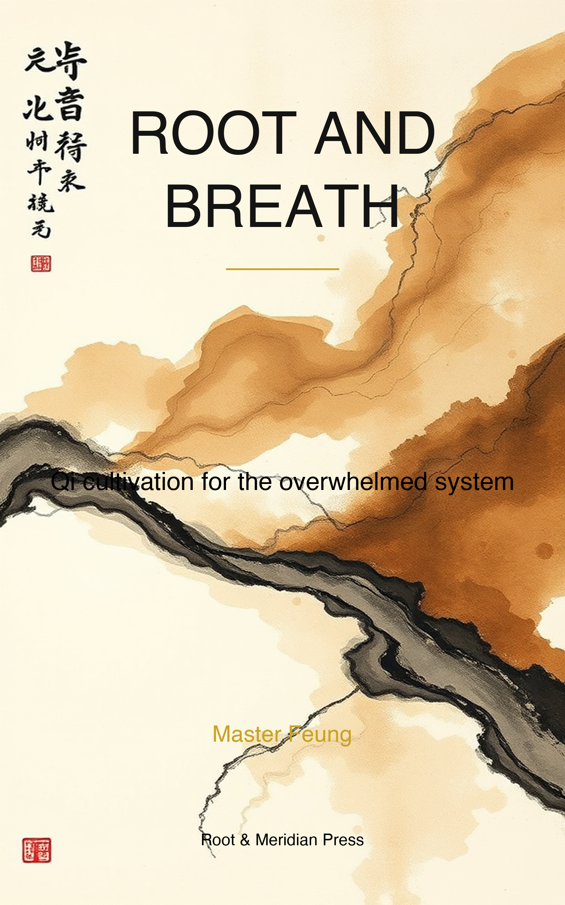

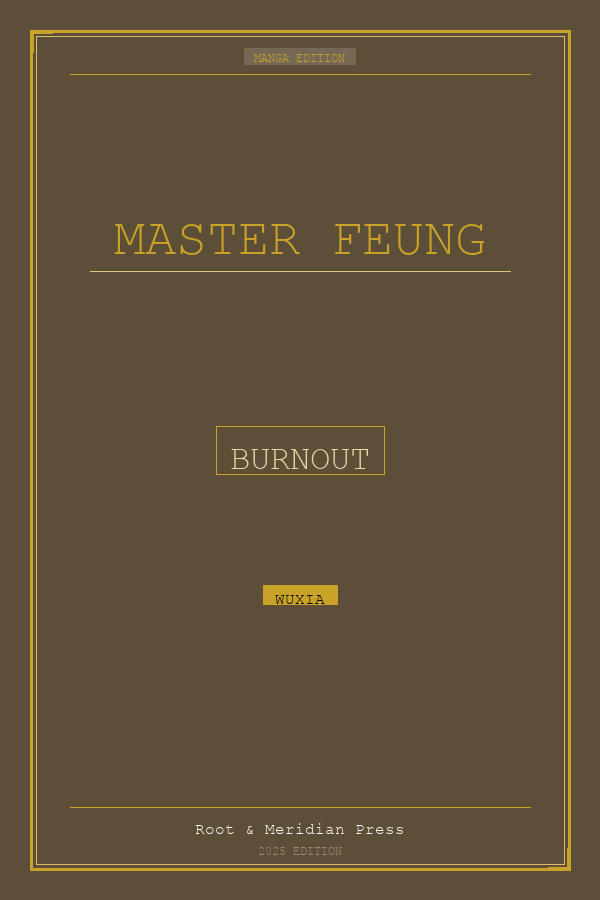

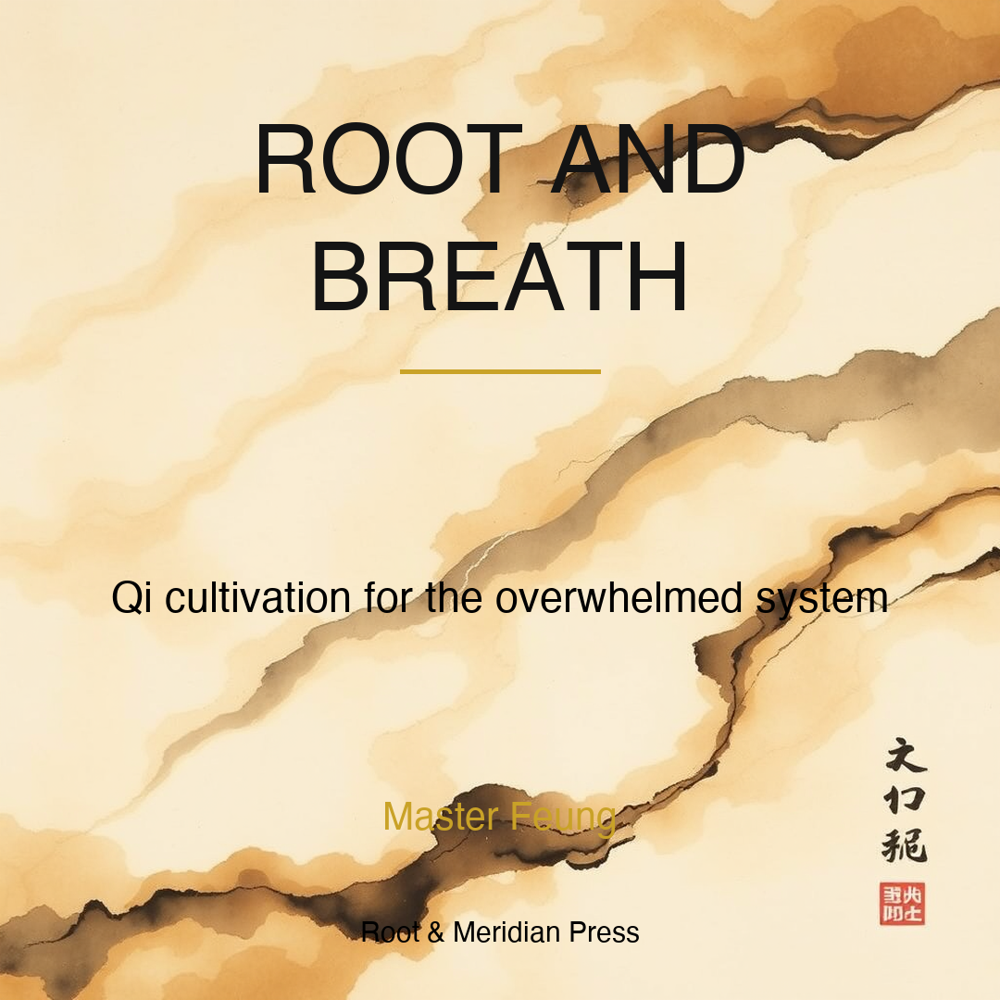
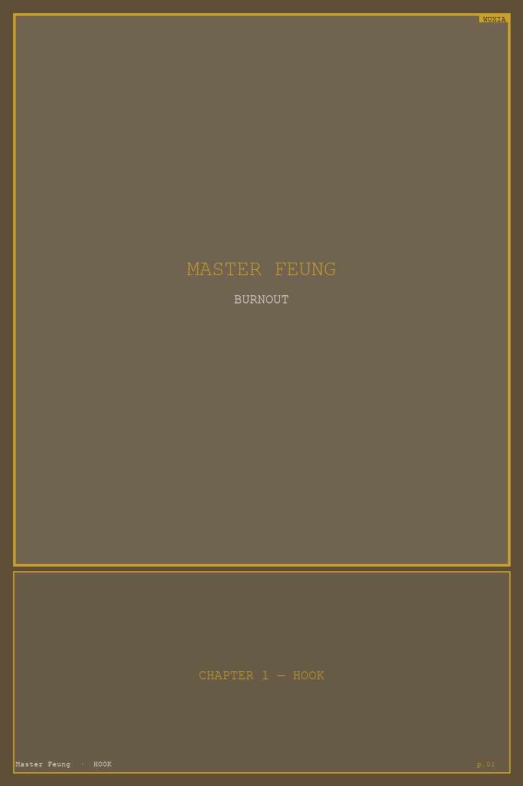
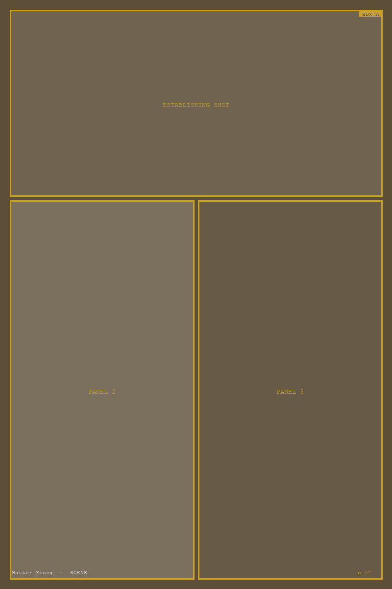
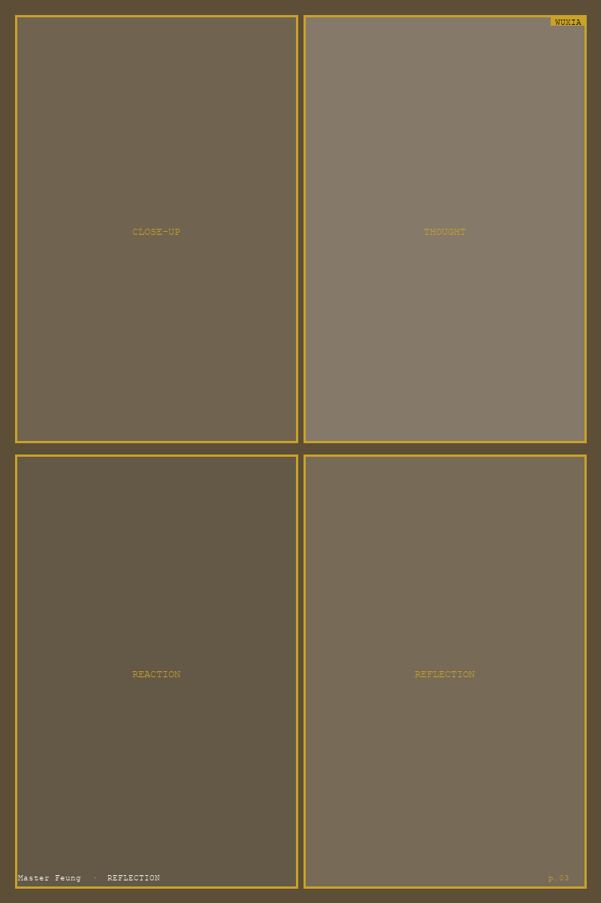
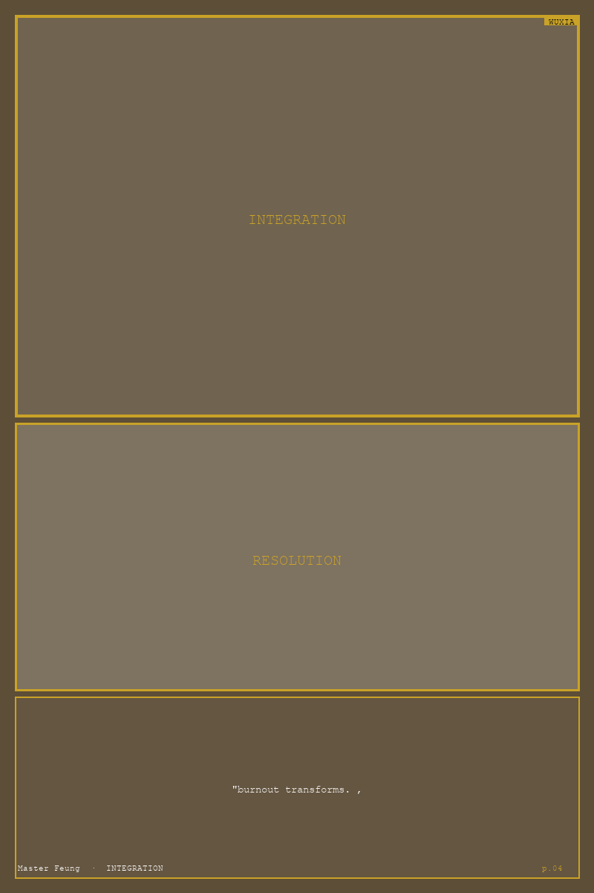
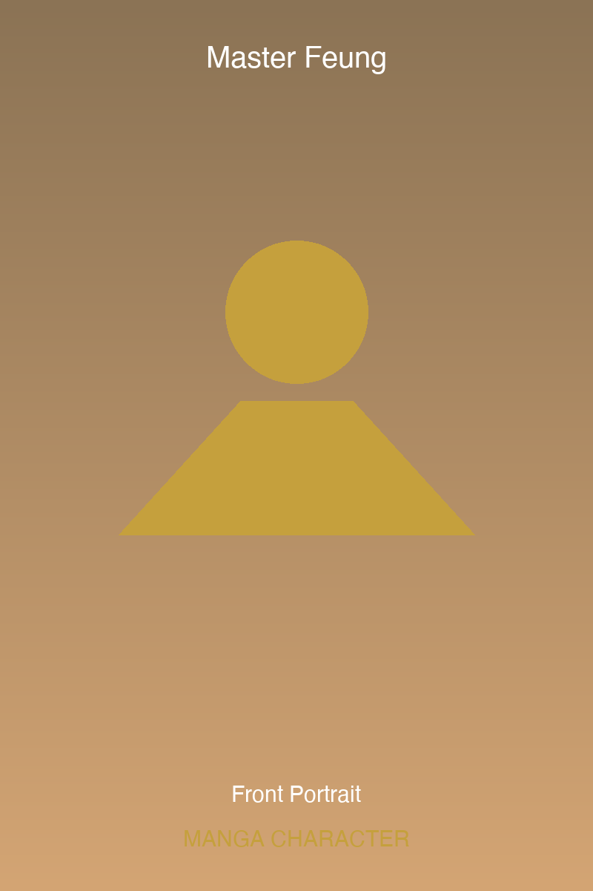
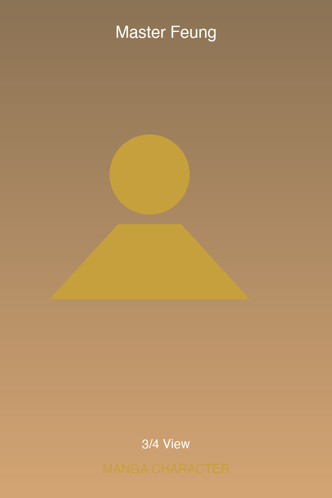
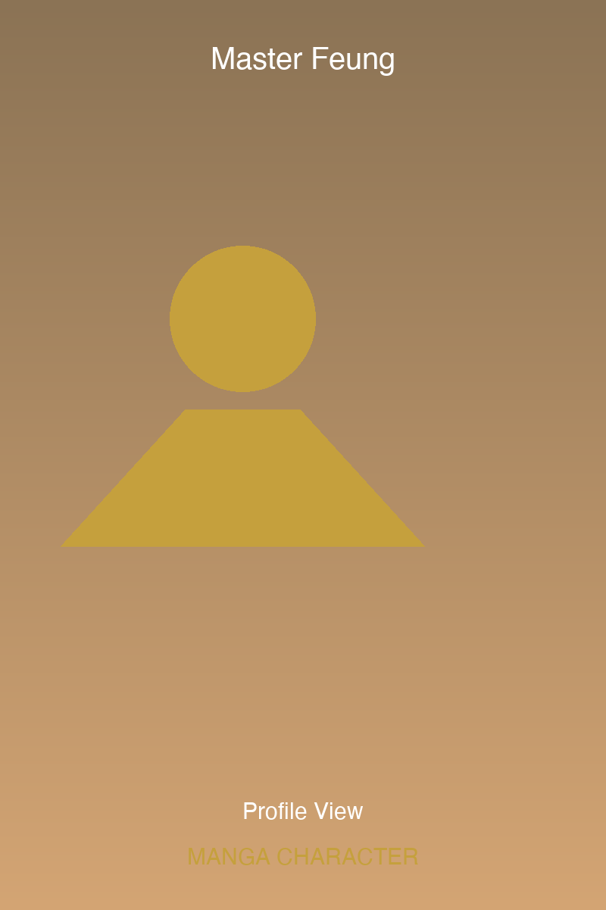
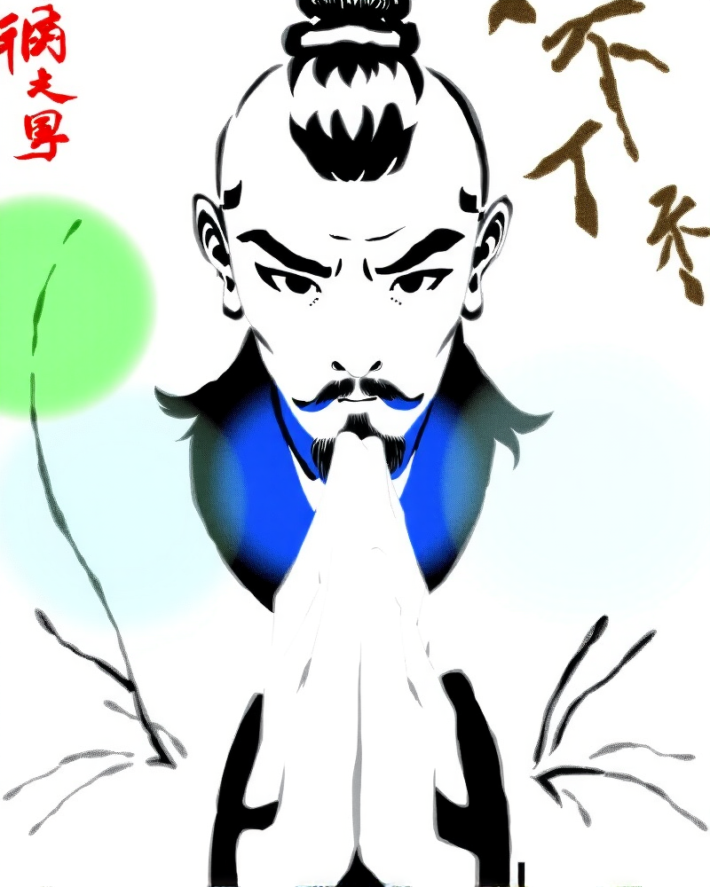
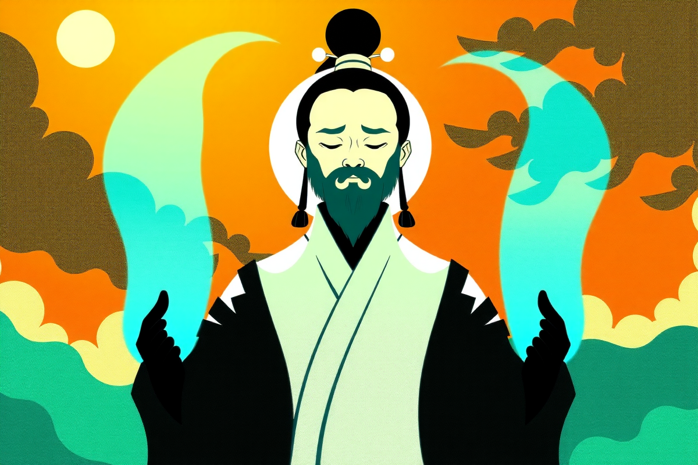
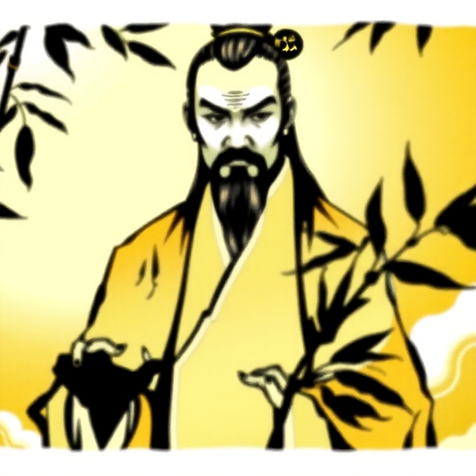
Introduction
You spend your shifts holding other people together. This book is about what happens when nobody is holding you.
burnout in healthcare is not the same as burnout in an office. The stakes are different. The fatigue is different. The guilt about feeling anything at all is different. This book knows that.
The practices here are short — because your breaks are short. The language is direct — because you do not have patience for fluff. And the pattern we are going to look at is the one you already know but have not had time to name.
This audiobook has a companion free guide with all the exercises and reflection prompts. You can get it free at PhoenixProtocolBooks.com/free/burnout-healthcare-rns-shame-assessment-v1.
Chapter 1
[Persona-specific hook for healthcare_rns × burnout]
--- The break room smells like burnt popcorn and hand sanitizer. You sit in the chair closest to the outlet because your phone is at four percent. The vending machine hums. gray light through the window through the window you face but do not see. Your scrub pants have a bleach spot on the left knee. Your next med pass is in twenty-two minutes. The ceiling tile above you has a water stain shaped like nothing. You close your eyes. The overhead page is someone else's problem for nineteen more minutes.
Stay with the moment a second longer. The pattern usually shows itself before the explanation does.
Underneath the feeling is a simple mechanism: the mechanism treats every decision like a permanent threat. When the alarm runs the response, your nervous system treats uncertainty like danger and asks for impossible certainty. That is why ordinary moments feel heavy.
The point is that the mechanism treats every decision like a permanent threat.
I can diagnosis dehydration on a patient by checking skin turgor and urine color. I can identify sepsis by elevated lactate and subtle changes in mental status. I can name the exact compensation mechanism that's keeping a patient stable before they crash. This is my language. This is how I see the world. But when I look in the mirror, I become illiterate. I notice the tremor in my hands after a double shift and think: peripheral neuropathy?
Let the chapter land in the body before it turns back into explanation.
The burnout did not end you. The weight is real and you are carrying it and you are still here. Not because it is easy. Because something in you decided that being here matters more than the cost of staying. That decision lives in your body. In the feet that walk through the door.
What remains is not more explanation. It is the next place this pattern asks for your life.
Chapter 2
[Persona-specific hook for healthcare_rns × burnout]
--- The hospital parking garage is cold at 1945. Your scrubs are still damp under the arms. The car is on level three. Your feet hit the concrete and each step registers in your lower back. gray light through the window beyond the garage opening. You pass a nurse from day shift heading in. She has a coffee. You have twelve hours behind you and the smell of betadine on your hands that soap does not fully reach. The car door is heavy.
That pause is doing more than slowing you down. It is showing you how the pattern enters, which means the chapter can name it before it hardens.
Underneath the feeling is a simple mechanism: the mechanism treats every decision like a permanent threat. When the alarm runs the response, your nervous system treats uncertainty like danger and asks for impossible certainty. That is why ordinary moments feel heavy.
The point is that the mechanism treats every decision like a permanent threat.
What strikes me is how the healthcare system has made burnout a virtue. We're given the message that if you're struggling, you need better coping mechanisms, not a different job structure. The mechanism is called systemic normalization—the way a broken system creates broken people and then congratulates them for not breaking faster. They don't need to know the cost of that care.
Let the chapter land in the body before it turns back into explanation.
There is a cost the system never measures. The energy required to manage the patient who is declining while performing the role. The bandwidth consumed by the worry underneath the competence. The sleep lost to processing what happened. The relationships strained by what was brought home. Each cost is real. Each cost is invisible. The body carries the full invoice.
What remains is not more explanation. It is the next place this pattern asks for your life.
Chapter 3
[Persona-specific hook for healthcare_rns × burnout]
--- You are driving home and you cannot remember if you documented the PRN Ativan on bed nine. Your hands are at ten and two. The road is the street below and the light ahead is yellow. gray light through the window on the windshield. Your mind replays the med pass. You gave it at 2100. You remember the dose. You do not remember clicking the administered button. The light turns red. You stop. You will log in from home to check. You know you will not sleep until you do.
Stay with the moment a second longer. The pattern usually shows itself before the explanation does.
Underneath the feeling is a simple mechanism: the mechanism treats every decision like a permanent threat. When the alarm runs the response, your nervous system treats uncertainty like danger and asks for impossible certainty. That is why ordinary moments feel heavy.
The point is that the mechanism treats every decision like a permanent threat.
I think about all the times I've diagnosed something in myself and then done nothing about it. I'll notice an irregular heartbeat and think: I should probably see someone about that. And then I schedule the appointment and then I cancel it because I can't be away from work. I'll realize my sleep is completely disrupted and I'll start tracking it and then I'll realize I'm too busy to do anything about the root cause, so I just stop tracking. The mechanism is called medical avoidance by medical professionals—this strange thing where knowing what's wrong becomes a substitute for actually addressing it. I've externalized my care. I've made myself into a provider for everyone else and a patient for no one.
Here is where the chapter stops talking about the pattern and lets you watch it happen.
RECOGNITION v02
In practice, do not turn this into homework. Give the body one smaller, safer entry instead.
Start with the place in your body that lifted while you were listening. That is where the practice begins.
You're running on fumes. So stop running.
Stand still for thirty seconds. That's it.
Don't try to do anything else right now.
Just stand. Just breathe. Just exist.
Your body was never meant to go this fast.
You're not weak for needing to stop.
You're responding normally to abnormal conditions.
Take one sip of water slowly.
Let it travel down your throat.
This is the slowest thing you'll do today.
Now notice what shifted before your mind starts summarizing it.
The question underneath all of this is simple and unanswerable: is this sustainable. Across a career. Across a life. The burnout is the body's version of the question. It asks without words. In the tension. In the fatigue. In the flatness. The body has been asking for a long time. You have been too busy to listen.
What remains is not more explanation. It is the next place this pattern asks for your life.
Chapter 4
[Persona-specific hook for healthcare_rns × burnout]
--- You are on hold with the lab about a stat troponin that has not resulted in ninety minutes. The hold music plays in your ear. Your other ear tracks the hallway — a bed alarm, a conversation, the pneumatic tube arriving. gray light through the window through the window you are facing. The hold music loops. The patient's wife is standing in the doorway of room eight, looking at you. You hold up one finger. the street below is below. The music loops again.
By the time you can explain the moment, the alarm has already chosen a meaning for it. That matters because the body is already obeying the prediction.
Underneath the feeling is a simple mechanism: the mechanism treats every decision like a permanent threat. When the alarm runs the response, your nervous system treats uncertainty like danger and asks for impossible certainty. That is why ordinary moments feel heavy.
The point is that the mechanism treats every decision like a permanent threat.
The burnout has created a strange relationship to my own vulnerability. I can't admit that I'm struggling because that would mean I'm not providing the care my patients need. Because my own collapse would directly impact people who depend on me. And that's an unbearable thing to think about. So I just keep functioning at whatever cost to myself. The mechanism here is called obligatory endurance—the sense that my own wellbeing is less important than my capacity to provide care. And it's been reinforced so many times.
Here is where the chapter stops talking about the pattern and lets you watch it happen.
RECOGNITION v04
Stay with what changed. Even if it only changed by one degree.
In the pause, the body spoke. A shift in the chest. A softening of the jaw. A moment where the burnout was present and acknowledged instead of suppressed. The pause did not fix anything. It allowed something to be felt. That is different from a solution. It is a beginning.
What remains is not more explanation. It is the next place this pattern asks for your life.
Chapter 5
[Persona-specific hook for healthcare_rns × burnout]
--- You wake up at home to the sound of an IV pump alarm that is not there. The bedroom is dark. gray light through the window through the blinds makes a stripe across the ceiling. Your phone says 1424. You have been asleep for five hours. Your shift starts in seven. The phantom alarm fades. Your hands are sore at the knuckles from gloving and ungloving two hundred times. the street below noise comes through the wall. You lie still. Sleep does not come back.
The body is already behaving like the threat is real. This is where the chapter has to begin.
The watcher is the shape anxiety takes when it turns inward. You watch yourself performing, then watch yourself watching, then evaluate how well you stopped watching. The recursion is infinite. Each layer creates a new layer to observe.
The point is that the mechanism treats every decision like a permanent threat.
There's a specific mechanism at play when you can name every pathology except the one you're living. I can see the burnout pattern in my coworkers. I can predict which nurses will hit crisis point by watching their coping mechanisms activate and sustain. The mechanism here is called reframing, and I'm very good at it. I'm betraying my own values through the impossible choices I'm making.
For example, the cost shows up fastest in a story. Watch how the prediction arrives before the fact does.
Elena documents the depletion curve: give care, absorb stress, skip break, give more care, absorb more stress. Elena's legs go heavy. The heat is on. The watcher monitors from a distance, recording failures but never engaging. Elena tracks the sequence this time: trigger, body response, thought cascade, behavioral pull. The trigger is external. The body response is automatic. The thought cascade is self-surveillance that scores without participating. The behavioral pull is the part that costs. Elena sees the cost clearly now. Elena's eyelids drag as the pattern runs its circuit. The pattern persists because the surveillance feels protective—as long as Elena watches for failure, failure might be prevented—but the watching is the cost. The persistence is not mysterious. The persistence is mechanical. Seeing the machine does not stop the machine. Seeing the machine reveals the machine is not Elena.
Let the chapter land in the body before it turns back into explanation.
You are in the unit. Feet aching on linoleum. The nervous system is running the full calculation. Not the simplified version. The full one. The body holds this accounting more honestly than the mind. The mind filters. The body records. What the body is recording right now is the truth of what this costs. Let it be data.
What remains is not more explanation. It is the next place this pattern asks for your life.
Chapter 6
[Persona-specific hook for healthcare_rns × burnout]
--- You forgot to eat and now it is 1500 and your hands are not quite steady on the keyboard. The nurses station is loud with alarms and voices and the phone ringing for the third time in a row. gray light through the window through the window is the only evidence time moves in a direction other than forward through the shift. Your blood sugar is doing something your body is reporting and your mind is overriding. the street below will have food. The shift ends in four hours.
The body is already behaving like the threat is real. This is where the chapter has to begin.
Underneath the feeling is a simple mechanism: the mechanism treats every decision like a permanent threat. When the alarm runs the response, your nervous system treats uncertainty like danger and asks for impossible certainty. That is why ordinary moments feel heavy.
The point is that the mechanism treats every decision like a permanent threat.
What I'm realizing is that the burnout isn't separate from the job. It's not a bug in the system that could be fixed with better scheduling or more staffing. It's a feature of the work itself. The intensity. The moral weight. The need to make decisions that might affect whether someone lives or dies. The expectation to do this while managing your own needs.
Here is where the chapter stops talking about the pattern and lets you watch it happen.
Marcus documents the depletion curve: give care, absorb stress, skip break, give more care, absorb more stress. Marcus's neck locks. The heat is on. The overwhelm flood collapses all tasks into one impossible mass. Marcus tracks the sequence this time: trigger, body response, thought cascade, behavioral pull. The trigger is external. The body response is automatic. The thought cascade is volume flattening into paralysis. The behavioral pull is the part that costs. Marcus sees the cost clearly now. Marcus's legs go heavy as the pattern runs its circuit. The pattern persists because the overwhelm prevents the sorting that would reduce the overwhelm, creating its own fuel. The persistence is not mysterious. The persistence is mechanical. Seeing the machine does not stop the machine. Seeing the machine reveals the machine is not Marcus.
In practice, do not turn this into homework. Give the body one smaller, safer entry instead.
Start with the place in your body that lifted while you were listening. That is where the practice begins.
When your shift ends, mark it clearly.
Change your clothes if you can.
Leave your scrubs somewhere visible.
This visible shift says: work is finished.
For the next hour, work doesn't exist.
Tell yourself this out loud if needed.
Don't check your work phone.
Don't think about what happens next shift.
Rest now. Your nervous system is depleted.
It needs recovery time before anything else.
Let the chapter land in the body before it turns back into explanation.
The patient's family carries a version of this too. You see the composed surface. Underneath, the same burnout runs. The same weight. The same cost. The silence between you is where the shared experience lives. Neither of you names it. If you did, the naming itself might be the beginning of something. Not a solution.
What remains is not more explanation. It is the next place this pattern asks for your life.
Chapter 7
[Persona-specific hook for healthcare_rns × burnout]
--- You are in the med room and the Pyxis is out of morphine. You page pharmacy. You wait. The patient in bed two is rating their pain at eight. The clock on the wall does not care. the street below is somewhere outside the walls of this room that has no windows. gray light through the window is a concept you left at the entrance twelve hours ago. Pharmacy calls back. Ten minutes. You go to the room and tell the patient. Their face does something you carry home.
Stay with the moment a second longer. The pattern usually shows itself before the explanation does.
Underneath the feeling is a simple mechanism: the mechanism treats every decision like a permanent threat. When the alarm runs the response, your nervous system treats uncertainty like danger and asks for impossible certainty. That is why ordinary moments feel heavy.
The point is that the mechanism treats every decision like a permanent threat.
There's a moment at the end of most shifts where I feel almost dissociated from my own body. I'm running on stimulation and stress hormones and the sheer will to complete the work. I'm no longer actually present in my physical form. I'm somewhere else, observing the performance of care while the body does what it's been trained to do. This dissociation is probably the thing that's allowing me to keep going. If I was fully present in my own experience, I couldn't sustain this. The mechanism is called protective dissociation—the way consciousness separates from an unbearable physical and emotional reality in order to allow continued functioning.
In practice, do not turn this into homework. Give the body one smaller, safer entry instead.
Start with the place in your body that lifted while you were listening. That is where the practice begins.
Find a bathroom or empty break room.
Sit down. Don't stand unless you must.
Close your eyes for one full minute.
Count backward from ten to zero slowly.
Notice one body part that feels heavy.
Your legs. Your arms. Your chest.
Feel the heaviness. Don't fight it.
Heaviness means your body is trying to shut down.
Let it. That's healing, not laziness.
Stand up only when you're ready.
Now notice what shifted before your mind starts summarizing it.
You remember the worst of it. Clock-out time when the burnout was at its peak. When you considered whether this was still the right choice. Not because the conditions improved. Because you decided the work was worth the weight. That decision was not permanent. It is remade daily. Today you remade it. You are still here.
What remains is not more explanation. It is the next place this pattern asks for your life.
Chapter 8
[Persona-specific hook for healthcare_rns × burnout]
--- The patient's family asks why no one has been in the room for an hour. You were in the room thirty-eight minutes ago. You do not say this. You check the IV site, the dressing, the output in the Foley bag. gray light through the window through the window they have been staring at all day. Your voice stays even. You note the time. the street below is below and full of people whose bodies are not your responsibility. You document the interaction. The family watches you type.
Stay with the moment a second longer. The pattern usually shows itself before the explanation does.
Underneath the feeling is a simple mechanism: you can act inside uncertainty without waiting for it to resolve. When the alarm runs the response, your nervous system treats uncertainty like danger and asks for impossible certainty. That is why ordinary moments feel heavy.
The point is that you can act inside uncertainty without waiting for it to resolve.
There's a particular loneliness to being a nurse who's burning out. You're surrounded by people all the time, but you can't tell any of them what's happening because they're too stressed themselves, or they're at risk of quitting too, or they're coping in different ways and you're afraid of judgment. So you keep it to yourself. You manage it. You show up and do the work. And the loneliness deepens because nobody knows how close you are to breaking. I've started to understand my burnout as a kind of moral injury.
You can see the mechanism better when it borrows someone else's future first.
The mechanism deepens. Stakes rise. The cost becomes clear.
Now notice what shifted before your mind starts summarizing it.
[Integration content for healthcare_rns × burnout]
What remains is not more explanation. It is the next place this pattern asks for your life.
Chapter 9
[Persona-specific hook for healthcare_rns × burnout]
--- You sit in the car with the engine running and your hands on the wheel and you do not drive. The parking garage is empty on this level. Your scrubs have a wrinkle pattern from the chair at the nurses station. gray light through the window beyond the garage opening is the first unfiltered air you have seen in twelve and a half hours. Your phone has six notifications. You do not look. the street below is the way home. Your foot is on the brake. The engine idles. You are not ready to move yet.
That pause is doing more than slowing you down. It is showing you how the pattern enters, which means the chapter can name it before it hardens.
Underneath the feeling is a simple mechanism: the mechanism treats every decision like a permanent threat. When the alarm runs the response, your nervous system treats uncertainty like danger and asks for impossible certainty. That is why ordinary moments feel heavy.
The point is that the mechanism treats every decision like a permanent threat.
I've learned that I can think my way through my own exhaustion in a way I would never accept from a patient. If a patient came to me and said they had insomnia and tremors and difficulty concentrating, I would immediately start investigating. I would look at their schedule, their stress, their sleep environment. I would take it seriously. But when it's me? I just accept it as part of the job. The mechanism here is called professional immunity—this sense that the things that would be concerning in a patient are just normal variations when it comes to myself.
Now notice what shifted before your mind starts summarizing it.
The cost arrived twelve hours in. Not as one expense. As a line item in a longer ledger. Each entry small enough to dismiss. The total too large to ignore. The burnout is the body's awareness of the running total. Not one cost. The cumulative cost. The number nobody calculated because the system never asked.
What remains is not more explanation. It is the next place this pattern asks for your life.
Chapter 10
[Persona-specific hook for healthcare_rns × burnout]
--- Your badge photo is from three years ago. You notice this at the time clock. The face in the photo had less under the eyes. gray light through the window through the lobby glass as you scan out. the street below is wet and the crosswalk signal is counting down. You do not run for it. Your calves will not allow it. The signal resets. You wait. Your scrubs are wrinkled at the waist where you sit to chart. The light changes. You cross.
That pause is doing more than slowing you down. It is showing you how the pattern enters, which means the chapter can name it before it hardens.
Underneath the feeling is a simple mechanism: the mechanism treats every decision like a permanent threat. When the alarm runs the response, your nervous system treats uncertainty like danger and asks for impossible certainty. That is why ordinary moments feel heavy.
The point is that the mechanism treats every decision like a permanent threat.
The problem is that I know exactly what's happening to my body. I know the cascade. Sustained stress activates the sympathetic nervous system, which floods my bloodstream with cortisol and adrenaline, which suppresses my immune function and dysregulates my sleep. I know this. I understand the mechanism at a cellular level. I've explained this to patients. I've coached others through it.
Here is where the chapter stops talking about the pattern and lets you watch it happen.
The mechanism deepens. Stakes rise. The cost becomes clear.
Now notice what shifted before your mind starts summarizing it.
After the night shift, the body does its inventory. Lower back protesting. The burnout registered in the tissue before it registered in the thought. This is not weakness. This is the body's intelligence. The fastest processing system you have. It reads the twelve-hour shift and translates immediately into physical information. The translation is accurate.
What remains is not more explanation. It is the next place this pattern asks for your life.
Chapter 11
[Persona-specific hook for healthcare_rns × burnout]
--- The CNA tells you bed seven is on the floor. You are mid-med-pass with bed three's insulin, syringe drawn, dose verified. Your body does two calculations at once: finish the injection, then go, or put it down and waste time re-drawing. the street below is outside and meaningless. gray light through the window through the window you pass at a pace between walk and run. You finish the injection. You cap the syringe. You go to bed seven.
That pause is doing more than slowing you down. It is showing you how the pattern enters, which means the chapter can name it before it hardens.
Underneath the feeling is a simple mechanism: you can act inside uncertainty without waiting for it to resolve. When the alarm runs the response, your nervous system treats uncertainty like danger and asks for impossible certainty. That is why ordinary moments feel heavy.
The point is that you can act inside uncertainty without waiting for it to resolve.
My heart rate elevation during night shift is just what night shift does to the body. My difficulty eating during trauma codes is the adrenaline response—completely normal, totally expected. My insomnia is shift-work sleep disorder, well-documented, a known occupational hazard. The emotional flatness I feel sometimes is compassion fatigue, which is almost a badge of honor in nursing. We talk about it like it's inevitable, like it's the cost of caring. Except it's me. My body.
Stay with what changed. Even if it only changed by one degree.
The cost arrived clock-out time. Not as one expense. As a line item in a longer ledger. Each entry small enough to dismiss. The total too large to ignore. The burnout is the body's awareness of the running total. Not one cost. The cumulative cost. The number nobody calculated because the system never asked.
What remains is not more explanation. It is the next place this pattern asks for your life.
Chapter 12
[Persona-specific hook for healthcare_rns × burnout]
--- The supply closet smells like alcohol swabs and plastic packaging. You came in here for a flush kit. You are standing still. The door is closed. The shelf label reads 22-gauge angiocaths. gray light through the window does not exist in here. There is no window. Your hands are at your sides. The unit noise is muffled through the door. Someone pages respiratory. You reach for the flush kit. Your hand knows where it is without looking. You open the door.
That pause is doing more than slowing you down. It is showing you how the pattern enters, which means the chapter can name it before it hardens.
Underneath the feeling is a simple mechanism: the mechanism treats every decision like a permanent threat. When the alarm runs the response, your nervous system treats uncertainty like danger and asks for impossible certainty. That is why ordinary moments feel heavy.
The point is that the mechanism treats every decision like a permanent threat.
I think about all the times I've diagnosed something in myself and then done nothing about it. I'll notice an irregular heartbeat and think: I should probably see someone about that. And then I schedule the appointment and then I cancel it because I can't be away from work. I'll realize my sleep is completely disrupted and I'll start tracking it and then I'll realize I'm too busy to do anything about the root cause, so I just stop tracking. The mechanism is called medical avoidance by medical professionals—this strange thing where knowing what's wrong becomes a substitute for actually addressing it. I've externalized my care. I've made myself into a provider for everyone else and a patient for no one.
For example, the quickest way to feel the mechanism is to watch it take hold in an ordinary moment.
Tomás clocks in for the third double shift this week. The watcher monitors from a distance, recording failures but never engaging. Tomás's eyelids drag. The pattern demands attention now—hot, insistent, refusing to wait. Tomás watches it demand. This time, instead of obeying, Tomás tracks where the demand originates. It starts in the arms. It travels to the thoughts. The thoughts build a story. The story says: act now or lose everything. Tomás examines the story. The story has no evidence. The eyelids has real sensation. The story has fabricated urgency. Tomás holds the sensation without following the story. The sensation stays. The story loses its audience. The frame shifts: the pattern is loud, but loudness is not truth.
Now notice what shifted before your mind starts summarizing it.
There is a cost the system never measures. The energy required to manage the medication that could be wrong while performing the role. The bandwidth consumed by the worry underneath the competence. The sleep lost to processing what happened. The relationships strained by what was brought home. Each cost is real. Each cost is invisible.
What remains is not more explanation. It is the next place this pattern asks for your life.
Chapter 13
[Persona-specific hook for healthcare_rns × burnout]
--- You are eating crackers from the vending machine in the break room at 0130. The chair is hard plastic. Your scrub top has a stain near the hem you noticed an hour ago. gray light through the window against the window nobody looks through. The microwave hums with someone else's leftovers. Your phone shows two missed calls from home. The overhead page calls a rapid response on the fourth floor. You stand up. The crackers stay on the table.
That pause is doing more than slowing you down. It is showing you how the pattern enters, which means the chapter can name it before it hardens.
Underneath the feeling is a simple mechanism: you can act inside uncertainty without waiting for it to resolve. When the alarm runs the response, your nervous system treats uncertainty like danger and asks for impossible certainty. That is why ordinary moments feel heavy.
The point is that you can act inside uncertainty without waiting for it to resolve.
After three decades of nursing, I've developed a sophisticated system for not noticing what I'm experiencing. It's not suppression, exactly. It's more like I've categorized my own symptoms into a different file system. When I feel the fatigue, I don't feel it as my fatigue. I feel it as a professional burden, a systemic issue, a collective problem that we're all managing. This lets me function. But it also means I'm never actually treating myself.
For example, the quickest way to feel the mechanism is to watch it take hold in an ordinary moment.
Grace documents the depletion curve: give care, absorb stress, skip break, give more care, absorb more stress. Grace's arms feel hollow. The heat is on. The grief wave crashes without warning from ordinary triggers. Grace tracks the sequence this time: trigger, body response, thought cascade, behavioral pull. The trigger is external. The body response is automatic. The thought cascade is loss surfacing through sensory memory. The behavioral pull is the part that costs. Grace sees the cost clearly now. Grace's ribs ache as the pattern runs its circuit. The pattern persists because the grief stores in the body because the mind keeps routing around it, and stored grief compounds. The persistence is not mysterious. The persistence is mechanical. Seeing the machine does not stop the machine. Seeing the machine reveals the machine is not Grace.
Stay with what changed. Even if it only changed by one degree.
What would this work look like if the burnout were addressed structurally instead of individually. Not through resilience training. Not through self-care. Through actual change in the conditions that produce the weight. The question is not comfortable. It implies that the system is responsible for what the individual carries. The question sits. It does not resolve.
What remains is not more explanation. It is the next place this pattern asks for your life.
Chapter 14
[Persona-specific hook for healthcare_rns × burnout]
--- Report took twenty-two minutes and you are already behind. The charge nurse handed you six patients instead of five because someone called off. the street below is dark through the stairwell window. Your badge pulls at your neck. The med room is cold and the Pyxis takes three tries to open. gray light through the window is invisible from in here. You pull the vial, check the label twice, check it again. Your back has been hurting since hour three. It is hour nine.
That pause is doing more than slowing you down. It is showing you how the pattern enters, which means the chapter can name it before it hardens.
Underneath the feeling is a simple mechanism: the mechanism treats every decision like a permanent threat. When the alarm runs the response, your nervous system treats uncertainty like danger and asks for impossible certainty. That is why ordinary moments feel heavy.
The point is that the mechanism treats every decision like a permanent threat.
What strikes me is how the healthcare system has made burnout a virtue. We're given the message that if you're struggling, you need better coping mechanisms, not a different job structure. The mechanism is called systemic normalization—the way a broken system creates broken people and then congratulates them for not breaking faster. I'm betraying my own values through the impossible choices I'm making.
You can see the mechanism better when it borrows someone else's future first.
Nora clocks in for the third double shift this week. The overwhelm flood collapses all tasks into one impossible mass. Nora's legs go heavy. The pattern demands attention now—hot, insistent, refusing to wait. Nora watches it demand. This time, instead of obeying, Nora tracks where the demand originates. It starts in the eyelids. It travels to the thoughts. The thoughts build a story. The story says: act now or lose everything. Nora examines the story. The story has no evidence. The legs has real sensation. The story has fabricated urgency. Nora holds the sensation without following the story. The sensation stays. The story loses its audience. The frame shifts: the pattern is loud, but loudness is not truth.
Stay with what changed. Even if it only changed by one degree.
You are in the patient's bedside. Feet aching on linoleum. The nervous system is running the full calculation. Not the simplified version. The full one. The body holds this accounting more honestly than the mind. The mind filters. The body records. What the body is recording right now is the truth of what this costs. Let it be data.
What remains is not more explanation. It is the next place this pattern asks for your life.
Chapter 15
[Persona-specific hook for healthcare_rns × burnout]
--- You peel off your compression socks in the car because you cannot wait until home. Your feet are swollen and there are marks where the elastic sat. The parking garage is quiet. gray light through the window outside the concrete walls. The steering wheel is cold. Your scrubs smell like the unit — that specific blend of sanitizer and linen and something under it you stopped naming years ago. the street below will be the route home. You start the engine. The seat is the first soft thing you have sat on in twelve hours.
That pause is doing more than slowing you down. It is showing you how the pattern enters, which means the chapter can name it before it hardens.
Underneath the feeling is a simple mechanism: the mechanism treats every decision like a permanent threat. When the alarm runs the response, your nervous system treats uncertainty like danger and asks for impossible certainty. That is why ordinary moments feel heavy.
The point is that the mechanism treats every decision like a permanent threat.
I've become very good at the recovery techniques that are available to me: showers, sleep, days off, exercise. I do all of these things. And it's never quite enough. The exhaustion goes so deep that no amount of standard recovery seems to touch it. It's like I'm trying to recover from something that doesn't stop happening. The mechanism is called inadequate recovery—the state where the intensity of the work exceeds the recovery capacity available to the person doing it. And the healthcare system is structured such that this is almost guaranteed.
You can see the mechanism better when it borrows someone else's future first.
Ravi cries in the supply closet and then walks out and gives the best handoff of the shift. Maximum intensity. Ravi's neck locks. Ravi's legs go heavy. The grief wave roars at peak volume. Every nerve says yield. Ravi does not yield. Ravi stands at the center of the storm and acts from the new identity—not against the pattern, but through it. The pattern is noise. The action is signal. Ravi's body carries both. The crisis does not define Ravi. Ravi's response defines Ravi. Ravi moves forward with the full weight of the moment pressing down. The weight is real. The collapse is not. Ravi walks through the peak and comes out the other side still standing. Still choosing.
Let the chapter land in the body before it turns back into explanation.
The question is not how to endure more. The question is whether the current level of burnout is the only option available. Whether the family who is watching must cost this much. Whether a different structure would produce a different experience. You do not have the answer. The question matters because it refuses to accept the current conditions as inevitable.
What remains is not more explanation. It is the next place this pattern asks for your life.
Chapter 16
[Persona-specific hook for healthcare_rns × burnout]
--- You are in the grocery store in your scrubs because going home first means you will not come back out. The fluorescent light is the same frequency as the unit. the street below traffic is audible through the automatic doors. Your clogs squeak on the tile. A woman in the produce section looks at your badge, then your face. gray light through the window through the front windows. You pick up bananas. Your pager is still in your pocket and you feel it there, silent, like a held breath.
That pause is doing more than slowing you down. It is showing you how the pattern enters, which means the chapter can name it before it hardens.
Underneath the feeling is a simple mechanism: you can act inside uncertainty without waiting for it to resolve. When the alarm runs the response, your nervous system treats uncertainty like danger and asks for impossible certainty. That is why ordinary moments feel heavy.
The point is that you can act inside uncertainty without waiting for it to resolve.
What I'm noticing is that I can't feel my own pain the way I feel other people's pain. When a patient is suffering, I respond with full capacity. My nervous system mobilizes. My compassion is engaged. But when I'm suffering? There's a distance. There's a clinical frame.
For example, the cost shows up fastest in a story. Watch how the prediction arrives before the fact does.
Claire cries in the supply closet and then walks out and gives the best handoff of the shift. Maximum intensity. Claire's eyelids drag. Claire's arms feel hollow. The overwhelm flood roars at peak volume. Every nerve says yield. Claire does not yield. Claire stands at the center of the storm and acts from the new identity—not against the pattern, but through it. The pattern is noise. The action is signal. Claire's body carries both. The crisis does not define Claire. Claire's response defines Claire. Claire moves forward with the full weight of the moment pressing down. The weight is real. The collapse is not. Claire walks through the peak and comes out the other side still standing. Still choosing.
Let the chapter land in the body before it turns back into explanation.
The question is not how to endure more. The question is whether the current level of burnout is the only option available. Whether the medication that could be wrong must cost this much. Whether a different structure would produce a different experience. You do not have the answer.
What remains is not more explanation. It is the next place this pattern asks for your life.
Chapter 17
[Persona-specific hook for healthcare_rns × burnout]
--- Someone taped a motivational poster above the time clock. You see it when you badge in and when you badge out. The words do not change. Your body does. gray light through the window through the lobby glass is different at 0630 than at 1900. You have seen both today because you picked up a double. the street below has gone from dark to light to dark again. Your badge taps the reader. The poster is still there. You walk toward the elevator. Your replacement shift starts in eleven hours.
Stay with the moment a second longer. The pattern usually shows itself before the explanation does.
Underneath the feeling is a simple mechanism: you can act inside uncertainty without waiting for it to resolve. When the alarm runs the response, your nervous system treats uncertainty like danger and asks for impossible certainty. That is why ordinary moments feel heavy.
The point is that you can act inside uncertainty without waiting for it to resolve.
I've noticed that I'm becoming less human to my patients. I'm more efficient. More task-focused. Less able to sit with someone's fear or pain. I move faster. I optimize. I create systems that minimize interaction.
Here is where the chapter stops talking about the pattern and lets you watch it happen.
Claire clocks in for the third double shift this week. The grief wave crashes without warning from ordinary triggers. Claire's ribs ache. The pattern demands attention now—hot, insistent, refusing to wait. Claire watches it demand. This time, instead of obeying, Claire tracks where the demand originates. It starts in the neck. It travels to the thoughts. The thoughts build a story. The story says: act now or lose everything. Claire examines the story. The story has no evidence. The ribs has real sensation. The story has fabricated urgency. Claire holds the sensation without following the story. The sensation stays. The story loses its audience. The frame shifts: the pattern is loud, but loudness is not truth.
Stay with what changed. Even if it only changed by one degree.
The sensation is specific. Shoulders at your ears. Located in the body at a precise address. The burnout lives here. In this muscle. In this tension. In this held breath. The body mapped the experience before the word existed for it. The map is reliable. The body has been mapping this terrain for years. Trust the cartography.
What remains is not more explanation. It is the next place this pattern asks for your life.
Chapter 18
[Persona-specific hook for healthcare_rns × burnout]
--- Your hands are shaking and it is not the coffee. You are in the locker room after a code that lasted forty-one minutes. The locker door is cool against your forehead. Your stethoscope is still around your neck. Someone else's shoes are visible under the partition. gray light through the window through the high window with the frosted glass. The debrief is in ten minutes. Your scrub top is wet at the collar. The someone leaves. The door clicks shut. You stay where you are.
That pause is doing more than slowing you down. It is showing you how the pattern enters, which means the chapter can name it before it hardens.
Underneath the feeling is a simple mechanism: the mechanism treats every decision like a permanent threat. When the alarm runs the response, your nervous system treats uncertainty like danger and asks for impossible certainty. That is why ordinary moments feel heavy.
The point is that the mechanism treats every decision like a permanent threat.
There's a specific fatigue that comes from caring for people all shift long while your own systems are failing. Your patient is in pain and you're present for them, but you're also aware that you haven't eaten in eight hours. You're helping someone through their crisis while you're noticing your own symptoms escalating. You're advocating for someone else's health while ignoring every signal your body is sending. The mechanism here is called divided attention—the way the care-required hierarchy makes your own crisis invisible because it's always lower priority than someone else's emergency. And that's a reasonable logic in the moment. But across weeks and months and years, that logic becomes toxic.
Here is where the chapter stops talking about the pattern and lets you watch it happen.
The mechanism deepens. Stakes rise. The cost becomes clear.
Now notice what shifted before your mind starts summarizing it.
The new grad carries a version of this too. You see the composed surface. Underneath, the same burnout runs. The same weight. The same cost. The silence between you is where the shared experience lives. Neither of you names it. If you did, the naming itself might be the beginning of something. Not a solution. That the weight is collective.
What remains is not more explanation. It is the next place this pattern asks for your life.
Chapter 19
[Persona-specific hook for healthcare_rns × burnout]
--- Your patient is talking to you about their grandchildren while you change their central line dressing. You nod at the right places. Your hands are sterile and precise. The old dressing peels back and the site looks clean. gray light through the window through the room window. You apply the new dressing in the order you have done it nine hundred times. The patient says a name. You repeat it back. Your knees ache from the angle. the street below is outside. Your hands finish before the story does.
Stay with the moment a second longer. The pattern usually shows itself before the explanation does.
The watcher is the shape anxiety takes when it turns inward. You watch yourself performing, then watch yourself watching, then evaluate how well you stopped watching. The recursion is infinite. Each layer creates a new layer to observe.
The point is that the mechanism treats every decision like a permanent threat.
There's a specific mechanism at play when you can name every pathology except the one you're living. I can see the burnout pattern in my coworkers. I can predict which nurses will hit crisis point by watching their coping mechanisms activate and sustain. The mechanism here is called reframing, and I'm very good at it.
Now notice what shifted before your mind starts summarizing it.
After twelve hours in, the body does its inventory. Hands steady but trembling underneath. The burnout registered in the tissue before it registered in the thought. This is not weakness. This is the body's intelligence. The fastest processing system you have. It reads the twelve-hour shift and translates immediately into physical information. The translation is accurate.
What remains is not more explanation. It is the next place this pattern asks for your life.
Chapter 20
[Persona-specific hook for healthcare_rns × burnout]
--- Handoff is in six minutes and your charting is not done. The computer on wheels has a sticky left wheel that pulls toward the wall. You type standing up, one eye on the hallway. the street below is visible from the window beside the supply closet. Your patient in bed four asked you something twenty minutes ago and you said you would be right back. gray light through the window has shifted since you last looked. You are still typing.
Stay with the moment a second longer. The pattern usually shows itself before the explanation does.
Underneath the feeling is a simple mechanism: the mechanism treats every decision like a permanent threat. When the alarm runs the response, your nervous system treats uncertainty like danger and asks for impossible certainty. That is why ordinary moments feel heavy.
The point is that the mechanism treats every decision like a permanent threat.
The burnout has created a strange relationship to my own vulnerability. I can't admit that I'm struggling because that would mean I'm not providing the care my patients need. Because my own collapse would directly impact people who depend on me. And that's an unbearable thing to think about. So I just keep functioning at whatever cost to myself. The mechanism here is called obligatory endurance—the sense that my own wellbeing is less important than my capacity to provide care. And it's been reinforced so many times.
Here is where the chapter stops talking about the pattern and lets you watch it happen.
Claire finishes the shift. Does not check the schedule for tomorrow. Drives home in silence. The watcher activates. Claire's neck locks. The heat rises. Claire recognizes the heat. Does not turn away from it. Claire acts while the watcher watches, refusing to pause for its commentary. The old pattern fires and Claire acts from the new understanding anyway. Claire's legs go heavy, but the hands keep moving. The identity is not the pattern. The identity is what Claire does while the pattern runs. Claire does the next right thing with the pattern screaming in the background. The screaming fades to a hum. The hum fades to a fact: the pattern exists. Claire also exists. They are not the same thing.
Let the chapter land in the body before it turns back into explanation.
Think of the colleague on nights. The one who seems steady. Who seems to have this figured out. They do not. They are managing the same thing you are managing. The burnout is not a personal condition. It is an occupational one. The person next to you carries a version of your weight. The recognition does not lighten the load.
Conclusion
You hold space for other people every shift. This book held space for you.
The practices here are not a replacement for rest, support, or systemic change. But they are yours — portable, quiet, usable in a break room or a parking lot. burnout in your profession is not a personal failure. It is a structural reality. And the fact that you showed up for 20 chapters of honest looking means you are already doing the harder work.
To go deeper and actually do the work from this book, download the companion free guide at PhoenixProtocolBooks.com/free/burnout-healthcare-rns-shame-assessment-v1. You will find guided exercises, journaling pages, and tools you can return to again and again. It is free — designed to go with exactly this book.
Before you go — if you want to take this further, a companion free guide is waiting for you at PhoenixProtocolBooks.com/free/burnout-healthcare-rns-shame-assessment-v1.

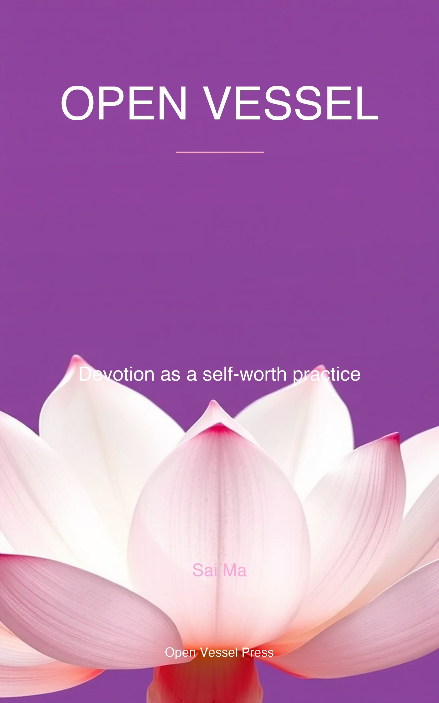

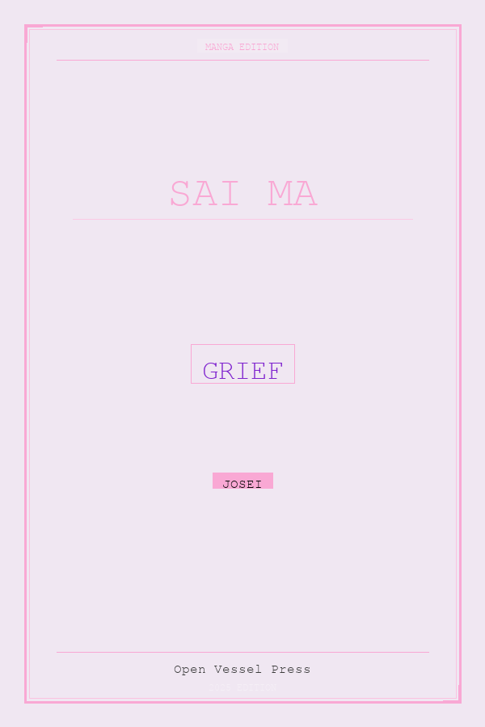
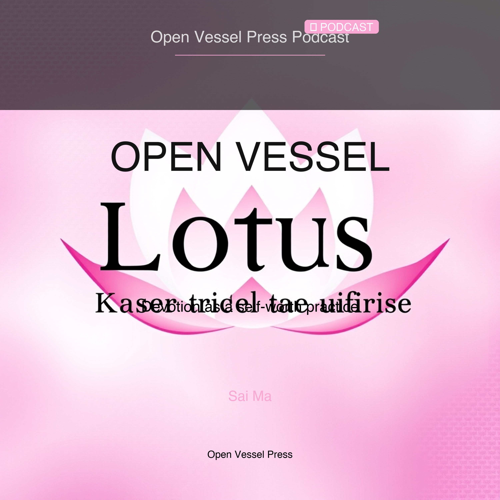
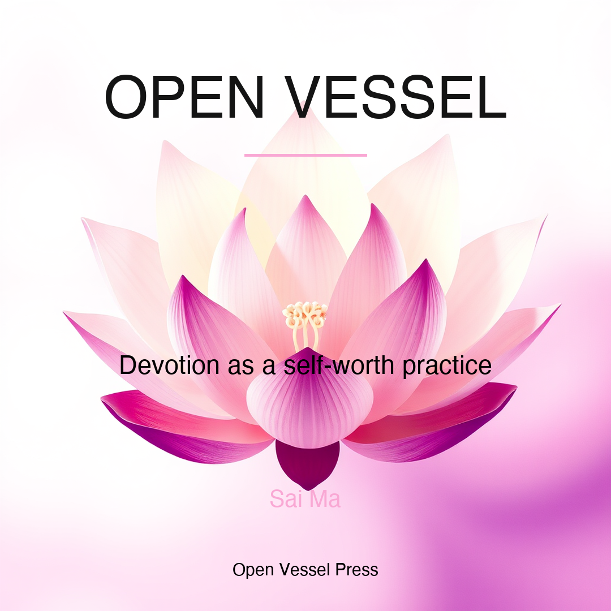
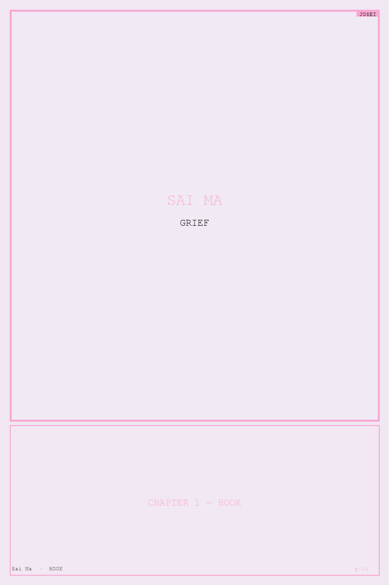
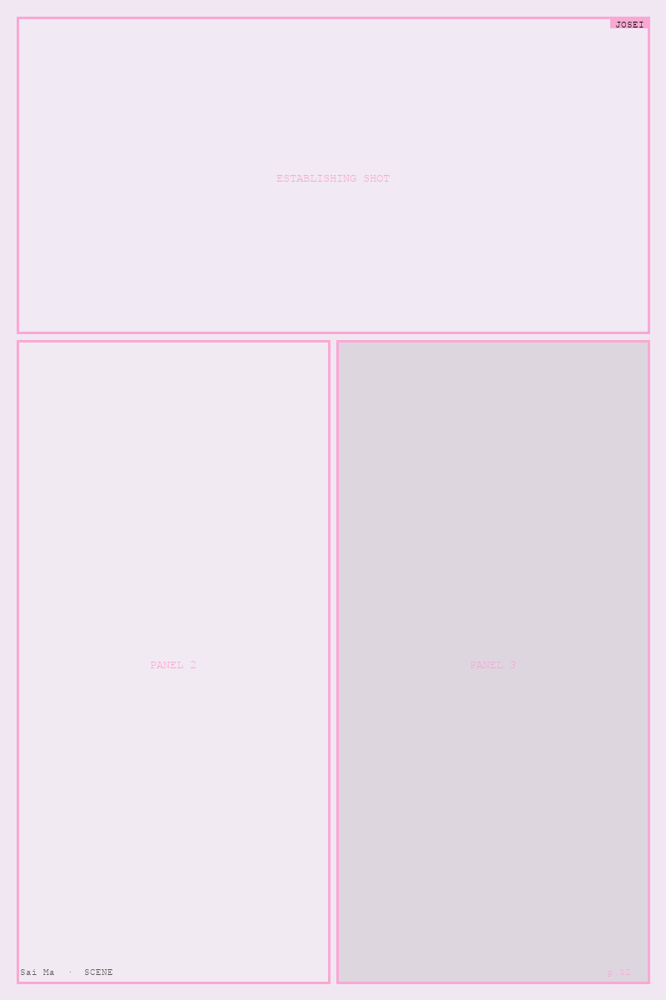
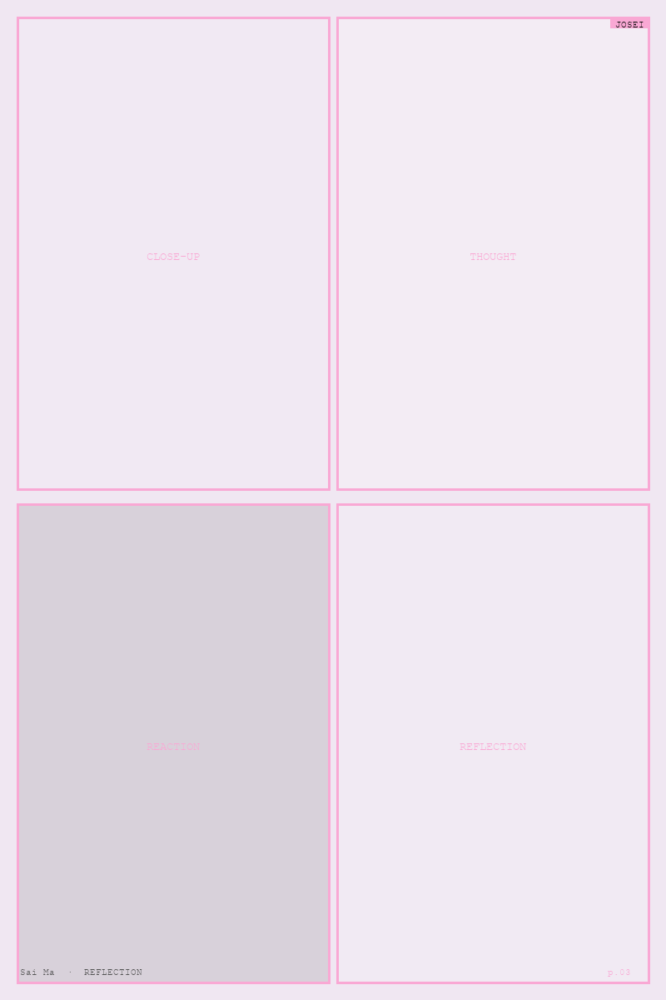
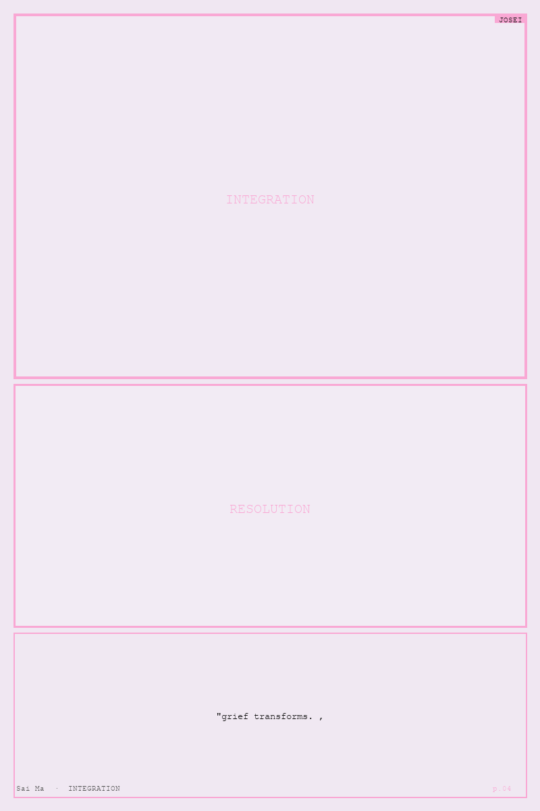
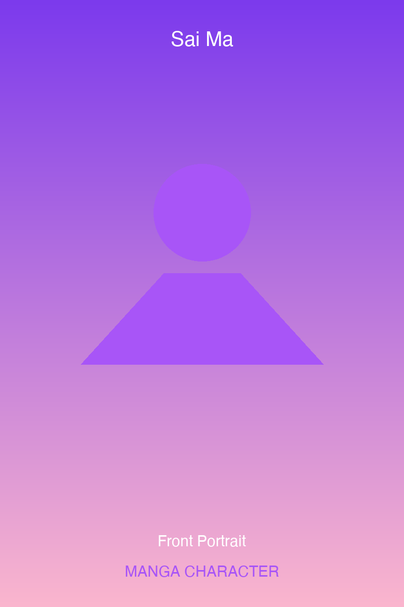
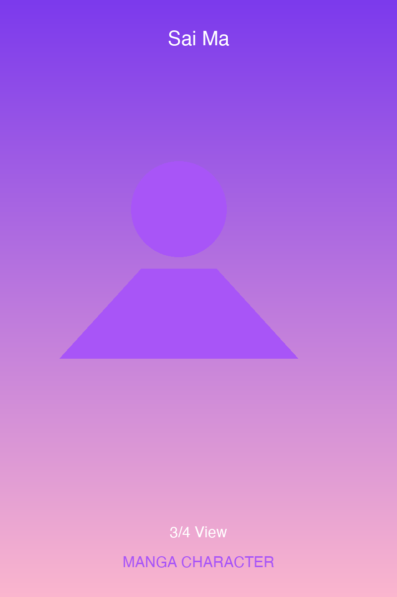
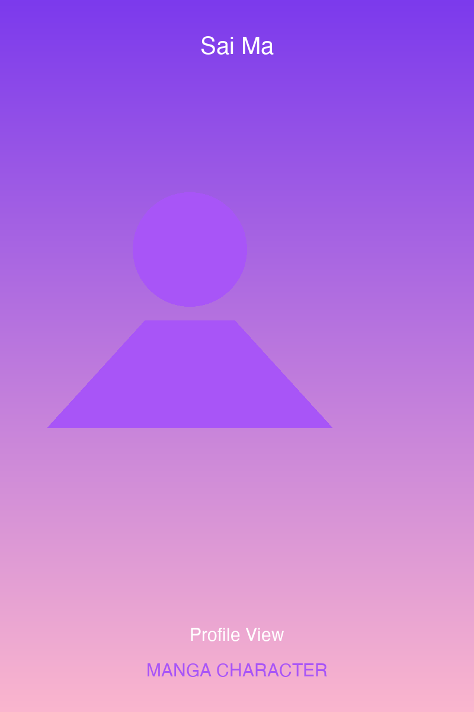
A Note on the Teachings of Sai Maa
I was not a direct student of Sai Maa. I encountered their work through books, talks, and publicly available teachings. What follows is not an official interpretation of Sai Maa's work — it is an application. I have done my best to honor the integrity of the original teachings while translating them into practical guidance for the challenges you may be facing.
Sai Maa's understanding of anxiety reshaped the way I see this subject. Their approach — rooted in Shakti; Eastern devotional; divine feminine; loving awareness; inner fire — offers a lens that goes beyond conventional advice. It speaks to something deeper: the patterns beneath the surface, the quiet mechanisms that keep us stuck, and the often-overlooked pathways toward genuine relief.
This book applies Sai Maa's teachings to the specific experience of working parents navigating anxiety. It does not replace the teacher's original work. Where I have adapted exercises or frameworks, I have done so with care and transparency. Any simplification is mine, not theirs.
If something in these pages resonates with you, I encourage you to go to the source. Seek out Sai Maa's own words — their talks, their writings, their direct teachings. What I offer here is a bridge, not a destination. The real work lives in the original.
Introduction
There is a version of anxiety that only shows up when you are splitting yourself between a child who needs you and a world that also needs you. It is not the same as regular anxiety. It carries guilt. It carries identity. It carries the question: am I doing this right?
This book is not going to answer that question. It is going to show you the pattern underneath it — the pattern underneath — and give you practices you can do while your kid is in the other room.
This audiobook has a companion free guide with all the exercises and reflection prompts. You can get it free at PhoenixProtocolBooks.com/free/anxiety-working-parents-emergency-kit-v1.
Chapter 1
You tense before you think. Your body moves first: shoulders up, breath shallow, chest tight. Then your mind provides the story about why you're afraid. The body was right all along.
The daycare lobby. You are signing in late. the street below traffic delayed you. gray light through the window was not supposed to slow you down. Your child will see your name go on the late list. Your guilt is immediate. Available. the street below is still busy. The sign-in sheet is full of other late names. You are not the only one. That does not help. Your child is waiting. You are signing.
Stay with the moment a second longer. The pattern usually shows itself before the explanation does.
Underneath the feeling is a simple mechanism: you can act inside uncertainty without waiting for it to resolve. When the alarm runs the response, your nervous system treats uncertainty like danger and asks for impossible certainty. That is why ordinary moments feel heavy.
The point is that you can act inside uncertainty without waiting for it to resolve.
Loving awareness sees everything without rejection. Can you practice this?
Something shifted. Not dramatically. But the frame is different now.
In practice, do not turn this into homework. Give the body one smaller, safer entry instead.
Start with the place in your body that lifted while you were listening. That is where the practice begins.
This is a compassionate boundary practice. Sit comfortably and place your hands in front of you, palms facing outward. This is the gesture of healthy boundaries. Breathe and say silently: I am kind and I am clear. I protect my own heart. I say no with love. I honor myself with clear boundaries. I can love others and still protect my own wholeness. Hold this gesture and repeat for five to seven minutes. This practice reconnects you with the power to honor both love and boundaries simultaneously.
Now notice what shifted before your mind starts summarizing it.
Inner light is always here. Let it shine.
Self-love shifted the pattern. The old pattern has deep roots. Each act of self-love loosens another root.
Chapter 2
The tight feeling across your ribs appears without warning. You're fine, then you're not. A thought arrives—brief, unbidden—and your whole body reorganizes around it.
The the street below commute. School pickup is at 3:15. gray light through the window on your windshield. Your meeting is at 2:30. Your meeting might run over. Your hands are on the wheel. Traffic is slow. the street below is full of people going somewhere with time to spare. You do not have time to spare. Your child is waiting. Your meeting is waiting. Your chest is tight. The light changes. Traffic does not move.
Shame always makes the same move first: it turns a moment into an identity sentence.
Shame selects the worst available interpretation and presents it as the only interpretation. It curates a database of your exposures and deletes evidence of competence. The assessment always finds you lacking because the database only contains evidence of lacking.
The point is that shame says you are the problem, but shame is a pattern, not a verdict.
The shame you carry—can you wrap it in loving awareness and see what happens?
For example, watch where the sentence about identity gets written. It usually happens in a single beat.
In the Eastern tradition, there is a teaching about the lotus flower. The lotus grows in mud and murky water. Its roots reach down into the darkest, most difficult soil. Yet from that darkness, a flower emerges that is pristine, that opens to the light, that is untouched by the mud it comes from.
The lotus does not say: I am dirty, I do not deserve to bloom. The lotus does not apologize for where it grows. It simply uses the darkness as nourishment. The mud feeds the roots. The struggle of reaching through water teaches the stem to be strong. And the flower blooms not despite the mud but because of it.
You are like the lotus. The shame you have carried, the grief, the places where you have believed you were not enough—these are not accidents. These are the soil from which your light grows. Not to make the pain meaningful. But to recognize that your worthiness is not dependent on a perfect beginning.
The lotus does not become worthy when it blooms. It was always worthy. It was worthy even in the mud. Even in the dark water. Its nature was always this: to transform what it touches and to rise toward the light.
Your nature is the same. You are already worthy. Not someday. Now. Even in the difficulty. The light has been there all along, waiting to bloom.
Something shifted. Not dramatically. But the frame is different now.
Now notice what shifted before your mind starts summarizing it.
Place your hand on your heart. It is alive. It is you.
The heart blooms on its own schedule.
The lotus opened. The world will try to close it. Each opening strengthens the bloom.
Chapter 3
The anxiety didn't come with your first child. It intensified, deepened, nested into your nervous system like it paid rent. Now it feels like the baseline instead of the crisis.
The car ride home. Your child is talking about their day. the street below traffic is heavy. gray light through the window on the windows. You are supposed to be present. You are thinking about work. About emails. About tomorrow. Your child is still talking. the street below is still moving. You turn your head toward them. You smile. Your mind is somewhere else. Your hands are on the wheel. Your child keeps talking.
That pause is doing more than slowing you down. It is showing you how the pattern enters, which means the chapter can name it before it hardens.
Underneath the feeling is a simple mechanism: you can act inside uncertainty without waiting for it to resolve. When the alarm runs the response, your nervous system treats uncertainty like danger and asks for impossible certainty. That is why ordinary moments feel heavy.
The point is that you can act inside uncertainty without waiting for it to resolve.
If grace was meeting your effort right now, what would be different?
The pattern gets clearest when you can see the price land on a real person.
The heart knows what the mind refuses. When you are in shame, your mind will tell you a thousand reasons why you deserve it. The mind is brilliant at building cases against yourself. It can marshal evidence. It can construct a narrative that feels airtight.
But the heart knows something different. The heart knows: you are already worthy. Not because of anything you have done. Because you exist.
When shame comes, do not fight it with your mind. You cannot think your way out of shame. Instead, place your hand on your chest. Feel the warmth there. Feel the steady rhythm of your heart. This heart has been beating since before you were born. It has been working, faithfully, asking nothing.
Ask your heart: what do you know about my worth that my mind does not?
Listen. The heart does not speak in words. It speaks in warmth. In opening. In a tenderness that does not demand you be perfect. The heart is not naive. It knows you have made mistakes. It knows you have hurt people. It knows you have failed. And it says: yes. And you are still worthy.
This is the teaching. Not toxic positivity. Not pretending the pain is not real. But a capacity to witness your own brokenness with love. To say: I am difficult. I am flawed. I am also divine. All of this is true.
When shame comes, say this: I honor what hurt me. I release the judgment. My worth is not negotiable.
He offered himself compassion and the entire pattern shifted. One act of self-love changed the current.
So when the pattern surges, the next move is not to understand more. It is to make the first move cheaper.
Start with the pressure under the sternum. That is the part still bracing.
This is a grief honoring practice. Sit comfortably and place your hands on your heart. Allow yourself to feel whatever grief, sadness, or pain is present without trying to change it. Breathe into the sensation. You might cry. You might sigh. With each breath, say: I honor this feeling. It is mine. It is sacred. It is part of my love. I do not rush it away. Allow this practice to continue for five to ten minutes or for as long as feels natural. This practice prevents spiritual bypassing and honors the full spectrum of human experience.
Now notice what shifted before your mind starts summarizing it.
The heart knows. Trust it more than your thinking.
Love is the ground of all practice.
Love moved through you today. Tomorrow the old armor reasserts itself. Love is patient with armor.
Chapter 4
The anxiety follows you into the bathroom, the car, the one quiet moment you carved out of your day. There is no hiding place because it lives inside.
You are on a work call. Your child is in the high chair eating. the street below is visible from your kitchen. gray light through the window on the counter. Your boss is talking. Your child is eating. You are listening to both. Your child waves a spoon. Your boss wants an answer. the street below is moving. Your child is waiting. Your boss is waiting. Your heart is in both places. You are in neither place.
Stay with the moment a second longer. The pattern usually shows itself before the explanation does.
Underneath the feeling is a simple mechanism: you can act inside uncertainty without waiting for it to resolve. When the alarm runs the response, your nervous system treats uncertainty like danger and asks for impossible certainty. That is why ordinary moments feel heavy.
The point is that you can act inside uncertainty without waiting for it to resolve.
What would happen if you treated yourself with the love you give to someone you deeply cherish?
For example, the quickest way to feel the mechanism is to watch it take hold in an ordinary moment.
Tara stands in her kitchen—actually present in her kitchen, not mentally at work. Her body feels different when she stops dividing her attention. Her chest is less tight. Her shoulders have dropped from her ears. She looks at her daughter across the table, not through her phone, and something in her body recognizes: this is what life is. Not the career advancement or the performance review, but this. Her hands feel warm as she reaches for her daughter's hand. The guilt doesn't disappear, but it becomes a background frequency instead of the main song. She has learned to be the parent who sometimes misses emails, and her daughter has learned that her mother is actually there. The asymmetry—presence costs productivity—is now simple math she can live with instead of split between two impossible standards.
The prayer was not answered in words. It was answered in the softening that followed the prayer.
Now notice what shifted before your mind starts summarizing it.
Devotion opens the way. Be devoted to love itself.
Willingness, not readiness, opens the door.
The seed that was planted long ago is flowering now. There are more seeds. Some have not yet broken soil.
Chapter 5
Anxiety makes you a planner, a checker, a person who computes risk constantly. You've become fluent in disaster. You speak the language of what could go wrong while everyone else is living a Tuesday.
The the street below commute. School pickup is at 3:15. gray light through the window on your windshield. Your meeting is at 2:30. Your meeting might run over. Your hands are on the wheel. Traffic is slow. the street below is full of people going somewhere with time to spare. You do not have time to spare. Your child is waiting. Your meeting is waiting. Your chest is tight. The light changes. Traffic does not move.
Stay with the moment a second longer. The pattern usually shows itself before the explanation does.
Underneath the feeling is a simple mechanism: you can act inside uncertainty without waiting for it to resolve. When the alarm runs the response, your nervous system treats uncertainty like danger and asks for impossible certainty. That is why ordinary moments feel heavy.
The point is that you can act inside uncertainty without waiting for it to resolve.
Your heart knows the way home. Where is home?
Here is where the chapter stops talking about the pattern and lets you watch it happen.
There is a boundary that is not what you have been taught it is. You have been taught that a boundary is a wall. A firm no. A place where you protect yourself by keeping others out.
But the deepest boundary is different. It is a line drawn from love, not from fear. It is you saying: I love you so much that I must tell you the truth. I love myself so much that I cannot accept less than my worth.
When you set a boundary from fear, it creates separation. You are defending against invasion. You are saying: stay away from me. The other person hears: you are dangerous.
When you set a boundary from love, it creates connection. You are saying: I value this relationship enough to be honest. I value myself enough to ask for what I need. The other person may not like the boundary, but they hear: you matter to me.
The practice is this: before you set a boundary, place your hand on your heart. Feel the love that is underneath. The boundary is not rejection. The boundary is: I cannot give you what you are asking because I must honor what is true for me. And honoring myself is how I honor you.
Boundaries from love are fierce. They are clear. But they are not cruel. They do not leave the other person in darkness. They say: this is where I stand. You are welcome to stand with me here. Or you can walk a different path. But I cannot betray myself to keep you comfortable.
This is the teaching. Your boundary is an act of love. It is you saying: I am worthy of respect, including my own.
The lotus opened not because conditions were perfect, but because it was time. The mud did not prevent the blooming.
Now notice what shifted before your mind starts summarizing it.
You are worthy. Live this as your foundation.
Transformation happens through love, not force.
What you noticed here does not end with this chapter. The next layer is already forming.
Chapter 6
The what-if questions multiply like rabbits. What if you make the wrong call. What if something happens on someone else's watch. What if you're already failing and just haven't noticed.
The daycare lobby. You are signing in late. the street below traffic delayed you. gray light through the window was not supposed to slow you down. Your child will see your name go on the late list. Your guilt is immediate. Available. the street below is still busy. The sign-in sheet is full of other late names. You are not the only one. That does not help. Your child is waiting. You are signing.
That pause is doing more than slowing you down. It is showing you how the pattern enters, which means the chapter can name it before it hardens.
Underneath the feeling is a simple mechanism: you can act inside uncertainty without waiting for it to resolve. When the alarm runs the response, your nervous system treats uncertainty like danger and asks for impossible certainty. That is why ordinary moments feel heavy.
The point is that you can act inside uncertainty without waiting for it to resolve.
Love is the answer. What was the question you were asking?
For example, the quickest way to feel the mechanism is to watch it take hold in an ordinary moment.
Dawn. The world still gray. A person lies in bed and does not want to rise. Their chest is tight. There is no single reason. There is only the weight of existence pressing down. The ceiling is close. The walls are close. Even the breath is close.
They have learned, through years of spiritual practice, not to fight this feeling. Not to push it away. Not to say: I should be over this by now. Instead, they turn toward it like turning toward a child who is crying.
What do you need, they ask the tightness.
The tightness does not answer in words. It answers in sensation. It answers in the need to be held. To be witnessed. To be allowed to exist without justification.
The person places both hands on their chest and breathes. Each breath is slow, deliberate. They are not breathing to change anything. They are breathing to say: I am here. I see you. You are not alone.
After five minutes, the tightness does not lift. But something has shifted. The tightness is no longer an enemy. It is no longer a sign of failure. It is just what is present. And they are willing to be present with it.
They rise slowly and light a candle. The small light flickers. They make tea and hold the warm cup. They do not know what this day will bring. But they know they will face it with a tenderness toward themselves that was not there before.
This is enough.
The pain that she had been avoiding turned out to be the doorway. Not through it. The pain itself was the door.
So when the pattern surges, the next move is not to understand more. It is to make the first move cheaper.
Start with the pressure under the sternum. That is the part still bracing.
Sit comfortably with your hands resting on your thighs, palms up. This palm-up position is the position of receiving. Begin to breathe slowly and deeply. With each breath, imagine that you are receiving love, grace, and tenderness from the universe. You do not have to earn it. You do not have to deserve it. Grace flows toward you simply because you exist. Repeat silently: I am open to receiving. I am worthy of grace. I allow myself to be held. Continue for five to eight minutes.
Now notice what shifted before your mind starts summarizing it.
Your heart is home. Return to it always.
The pattern is not your identity. It is a signal worth reading.
What you noticed here does not end with this chapter. The next layer is already forming.
Chapter 7
Your chest tightens when you can't account for everyone at once. Two children, one partner, one job—and your nervous system treats any gap in knowledge like an emergency broadcast. The math of keeping people safe never adds up.
You are on a work call. Your child is in the high chair eating. the street below is visible from your kitchen. gray light through the window on the counter. Your boss is talking. Your child is eating. You are listening to both. Your child waves a spoon. Your boss wants an answer. the street below is moving. Your child is waiting. Your boss is waiting. Your heart is in both places. You are in neither place.
That pause is doing more than slowing you down. It is showing you how the pattern enters, which means the chapter can name it before it hardens.
Underneath the feeling is a simple mechanism: you can act inside uncertainty without waiting for it to resolve. When the alarm runs the response, your nervous system treats uncertainty like danger and asks for impossible certainty. That is why ordinary moments feel heavy.
The point is that you can act inside uncertainty without waiting for it to resolve.
Divine feminine energy—do you recognize this as available to you?
For example, the quickest way to feel the mechanism is to watch it take hold in an ordinary moment.
Dan tells his wife: "I'm going to leave work at 5 PM on Wednesday. Non-negotiable." She looks startled, then worried—this is so outside his normal pattern that his own wife reads it as crisis. His shoulders feel exposed. At 5 PM he closes the laptop. The Slack messages continue without him. The production environment doesn't collapse. But something inside him shifts: he's not actually responsible for keeping the world together. The world is more resilient than his guilt suggests. He makes it home for actual dinner with his kids—not the rush hour sprint, but real dinner. His chest feels strange, expanded. His daughter talks about something at school. His son shows him a drawing. He's present. The cost is visible: someone at work didn't get an immediate response, the response is delayed, and the guilt whispers that this means something about his commitment. He stays with the guilt. His hands are cold, then warm.
He stopped punishing himself and the energy that had been bound in self-punishment became available for love.
Let the chapter land in the body before it turns back into explanation.
Trust it to melt what force cannot touch.
The pattern is not your identity. It is a signal worth reading.
The prayer softened something. Not all prayers are answered immediately. Some are answered over a lifetime.
Chapter 8
Your breath lives high in your chest now. Shallow, quick, ready. It's been that way so long you forgot what a full breath feels like.
The the street below commute. School pickup is at 3:15. gray light through the window on your windshield. Your meeting is at 2:30. Your meeting might run over. Your hands are on the wheel. Traffic is slow. the street below is full of people going somewhere with time to spare. You do not have time to spare. Your child is waiting. Your meeting is waiting. Your chest is tight. The light changes. Traffic does not move.
That pause is doing more than slowing you down. It is showing you how the pattern enters, which means the chapter can name it before it hardens.
Underneath the feeling is a simple mechanism: you can act inside uncertainty without waiting for it to resolve. When the alarm runs the response, your nervous system treats uncertainty like danger and asks for impossible certainty. That is why ordinary moments feel heavy.
The point is that you can act inside uncertainty without waiting for it to resolve.
Inner light is shining. What happens when you let it shine?
Here is where the chapter stops talking about the pattern and lets you watch it happen.
Nina pumps at work for the first time without guilt. She books the time on her calendar like any other meeting. It takes her three days to stop apologizing to colleagues about the space she's taking. Her chest loosens slightly. On day four she realizes: if she doesn't apologize for feeding her infant, why is she apologizing for her existence as a parent? Her throat releases. This small thing—occupying space, protecting time—costs something. It costs the perception that she's fully available. It costs her colleagues' assumption that she's all-in on work. It costs the identity she built of being the reliable, always-on nurse. By Friday she feels clearer than she has in months, and also guilty, which is the real tell: something real shifted, something she's been punishing herself for wanting.
She stopped waiting to be ready and began. Love does not ask for readiness. It asks for willingness.
You do not need to be strong all the time. Softness is its own strength. Let yourself be soft.
Let the chapter land in the body before it turns back into explanation.
Everything is held in divine love. This includes you.
Compassion for yourself changes everything.
What you noticed here does not end with this chapter. The next layer is already forming.
Chapter 9
Your nervous system learned to be on alert when you became responsible for another life. Now it treats every siren, every phone call, every change in routine like breaking news.
You are on a work call. Your child is in the high chair eating. the street below is visible from your kitchen. gray light through the window on the counter. Your boss is talking. Your child is eating. You are listening to both. Your child waves a spoon. Your boss wants an answer. the street below is moving. Your child is waiting. Your boss is waiting. Your heart is in both places. You are in neither place.
That pause is doing more than slowing you down. It is showing you how the pattern enters, which means the chapter can name it before it hardens.
Underneath the feeling is a simple mechanism: you can act inside uncertainty without waiting for it to resolve. When the alarm runs the response, your nervous system treats uncertainty like danger and asks for impossible certainty. That is why ordinary moments feel heavy.
The point is that you can act inside uncertainty without waiting for it to resolve.
Your heart has been trying to tell you something. What is it?
For example, the quickest way to feel the mechanism is to watch it take hold in an ordinary moment.
Tara's daughter asks a simple question during dinner—"Did you watch my soccer game?"—and something in Tara's chest collapses. She did watch half of it, streamed it on her phone between meetings, but not in the way that matters, the way where you're actually present, not checking email during the second half. She can feel the words forming, the excuse, the "I was there" translation that isn't honest. Her shoulders drop. The lie—or non-lie—sits between them like a third person at the table. Later, washing dishes alone, she feels the internal collapse again: this is what guilt does, it splits you into the person you're being and the person you think you should be, and neither one is the person your kid needs. Her hands grip the edge of the sink.
The transformation was not dramatic. It was the quiet accumulation of small acts of love, finally reaching a threshold.
So when the pattern surges, the next move is not to understand more. It is to make the first move cheaper.
Start with the pressure under the sternum. That is the part still bracing.
Lie on your back with your knees bent and feet hip-width apart. Place your hands on your belly. Begin to breathe deeply and slowly, imagining that you are breathing into the very cells of your body and offering them love and gratitude. Silently say: Thank you to my heart for beating. Thank you to my body for carrying me. Thank you to my spirit for persisting. I am enough. I am worthy. I am loved. Continue for seven to ten minutes. This practice of somatic gratitude transforms your relationship to your own body and is deeply healing for shame and anxiety.
Stay with what changed. Even if it only changed by one degree.
You are loved beyond measure. Live as if this is true, because it is.
The pattern is not your identity. It is a signal worth reading.
What you noticed here does not end with this chapter. The next layer is already forming.
Chapter 10
The worry runs on a loop before you even wake up. You're already rehearsing difficult conversations, imagining failed outcomes, preparing for disaster. By the time your eyes open, you're exhausted.
The daycare lobby. You are signing in late. the street below traffic delayed you. gray light through the window was not supposed to slow you down. Your child will see your name go on the late list. Your guilt is immediate. Available. the street below is still busy. The sign-in sheet is full of other late names. You are not the only one. That does not help. Your child is waiting. You are signing.
Stay with the moment a second longer. The pattern usually shows itself before the explanation does.
Underneath the feeling is a simple mechanism: you can act inside uncertainty without waiting for it to resolve. When the alarm runs the response, your nervous system treats uncertainty like danger and asks for impossible certainty. That is why ordinary moments feel heavy.
The point is that you can act inside uncertainty without waiting for it to resolve.
What does it mean to live from the knowing that you are already worthy?
For example, the quickest way to feel the mechanism is to watch it take hold in an ordinary moment.
Kira's client cancels their appointment, leaving a gap in her schedule. She thinks: perfect, she can finally do her own administrative work, catch up on the emails piling up. Instead she's numb, blank, exhausted despite doing nothing. Her chest feels heavy. She recognizes it immediately because she teaches families about compassion fatigue—the depletion that comes from holding space for others' pain while managing your own. She gives it to families in neat language: "It's important to set boundaries." But her boundaries are theoretical. She knows the mechanism: she absorbs her clients' crises, then goes home and absorbs her kids' needs, and there's no container for her own depletion. By evening she snaps at her partner over something trivial. The pattern is visible to her. She can't stop it.
Something sacred appeared in the ordinary moment. Not because the moment changed, but because she recognized its nature.
So when the pattern surges, the next move is not to understand more. It is to make the first move cheaper.
Start with the pressure under the sternum. That is the part still bracing.
Stand with your feet hip-width apart. Place one hand on your heart and one hand on your belly. Begin to sway gently side to side, rocking your hips slightly. As you move, imagine that you are dancing with the divine feminine, with Shakti itself. You are not performing. You are simply allowing your body to move in the way it wants to move. Let this continue for five to seven minutes. This practice reconnects you with the sacredness of your own body and dissolves shame held in the hips and belly.
Let the chapter land in the body before it turns back into explanation.
Divine love is available. You do not have to earn it.
The pattern is not your identity. It is a signal worth reading.
Transformation accumulated quietly. It will continue quietly. Trust what you cannot yet see.
Chapter 11
You're waiting for the collapse. Not thinking about it—waiting for it, feeling it coming, preparing the narrative you'll tell about how you should have seen it coming.
The the street below commute. School pickup is at 3:15. gray light through the window on your windshield. Your meeting is at 2:30. Your meeting might run over. Your hands are on the wheel. Traffic is slow. the street below is full of people going somewhere with time to spare. You do not have time to spare. Your child is waiting. Your meeting is waiting. Your chest is tight. The light changes. Traffic does not move.
That pause is doing more than slowing you down. It is showing you how the pattern enters, which means the chapter can name it before it hardens.
Underneath the feeling is a simple mechanism: you can act inside uncertainty without waiting for it to resolve. When the alarm runs the response, your nervous system treats uncertainty like danger and asks for impossible certainty. That is why ordinary moments feel heavy.
The point is that you can act inside uncertainty without waiting for it to resolve.
If grace was already available to you, what would you do differently?
Something shifted. Not dramatically. But the frame is different now.
So when the pattern surges, the next move is not to understand more. It is to make the first move cheaper.
Start with the place in your body that lifted while you were listening. That is where the practice begins.
Stand with your feet hip-width apart. Place your hands on your lower belly and feel the warmth of your hands. Begin to breathe slowly and deeply, allowing your belly to expand on each inhale. As you breathe, silently say: I trust my own knowing. I honor my own desires. I am safe in my own power. Continue for five to seven minutes. This practice awakens Shakti in the lower body, heals shame around sexuality and power, and reconnects you with your own inner authority.
Let the chapter land in the body before it turns back into explanation.
Grace and effort dance together. Make space and grace will fill it.
The inner light was recognized. When darkness arrives, the light does not leave. Your attention does.
Chapter 12
Your hands shake when you're supposed to be calm. You grip the steering wheel harder. You busy your fingers with tasks while inside you're falling. The tremor is your nervous system speaking a language nobody taught you.
The car ride home. Your child is talking about their day. the street below traffic is heavy. gray light through the window on the windows. You are supposed to be present. You are thinking about work. About emails. About tomorrow. Your child is still talking. the street below is still moving. You turn your head toward them. You smile. Your mind is somewhere else. Your hands are on the wheel. Your child keeps talking.
Stay with the moment a second longer. The pattern usually shows itself before the explanation does.
Underneath the feeling is a simple mechanism: you can act inside uncertainty without waiting for it to resolve. When the alarm runs the response, your nervous system treats uncertainty like danger and asks for impossible certainty. That is why ordinary moments feel heavy.
The point is that you can act inside uncertainty without waiting for it to resolve.
Your heart space—what does it feel like to return there?
Here is where the chapter stops talking about the pattern and lets you watch it happen.
Javier notices the grief surge arrive at full force during the grocery aisle. Breath turns shallow. The threat anticipation surges — the alarm that sounds before any danger arrives. The loss mechanism demands its usual conclusion about who Javier is. Weight settles in the ribcage. Javier refuses the final step. Holds the body in the intensity without translating it into the grief surge's verdict. The sensation burns. The story falters. Javier sees the laptop left open on the dining table and the old frame collapses around it. Javier stands in the wreckage of the interpretation and finds solid ground beneath it. The ground was always there. The loss mechanism built over it.
Something shifted. Not dramatically. But the frame is different now.
Let the chapter land in the body before it turns back into explanation.
Practice loving awareness toward yourself. This is the whole path.
The sacred lives in the ordinary.
Compassion touched something deep. The depth will cover itself again. Each touch of compassion reaches further.
Chapter 13
Your shoulders climb toward your ears before dawn. The catastrophizing arrives before your feet hit the floor—a sick spiral of worst-case scenarios about school, illness, car accidents, the climate. Your body knows something terrible could happen, even when nothing is wrong.
The car ride home. Your child is talking about their day. the street below traffic is heavy. gray light through the window on the windows. You are supposed to be present. You are thinking about work. About emails. About tomorrow. Your child is still talking. the street below is still moving. You turn your head toward them. You smile. Your mind is somewhere else. Your hands are on the wheel. Your child keeps talking.
That pause is doing more than slowing you down. It is showing you how the pattern enters, which means the chapter can name it before it hardens.
Underneath the feeling is a simple mechanism: you can act inside uncertainty without waiting for it to resolve. When the alarm runs the response, your nervous system treats uncertainty like danger and asks for impossible certainty. That is why ordinary moments feel heavy.
The point is that you can act inside uncertainty without waiting for it to resolve.
For example, the quickest way to feel the mechanism is to watch it take hold in an ordinary moment.
The false alarm fires at high intensity. Palms slick with sweat. Javier traces the mechanism in real time — the alarm that sounds before any danger arrives. The threat anticipation feeds the threat misfire. The threat misfire produces certainty about failure. The certainty deepens the threat anticipation. Adrenaline floods the limbs. Round and round. Javier sees the school email and watches the loop complete itself without any new information entering. The pattern is self-sustaining. It needs no evidence because it treats its own output as input. Javier sets a timer for the meeting. The false alarm is the siren that the alarm converts safety into danger. Seeing the conversion does not stop it. But the seeing changes what the conviction means.
She discovered that the love she had been given as a child, imperfect as it was, had planted a seed that was now flowering.
So when the pattern surges, the next move is not to understand more. It is to make the first move cheaper.
Start with the place in your body that lifted while you were listening. That is where the practice begins.
Sit comfortably. Place your right hand on your heart and your left hand on your belly. Breathe in slowly for a count of four. Hold for a count of four. Breathe out slowly for a count of four. With each breath, say: I am loved. I am safe. I am home in my own heart. Continue this for seven to ten minutes. This practice creates a bridge between the heart and belly, healing the fragmentation that comes from shame and opening you to loving awareness of yourself.
Remember this: you can act inside uncertainty without waiting for it to resolve. That is not a philosophy. That is what happened in this chapter.
What you seek is already within you.
The ordinary revealed its sacredness. When the ordinary dulls again, the sacredness has not departed. Look again.
Chapter 14
You're living in the future constantly. Not where you are right now, but twelve steps ahead, three weeks out, in the scenario where something breaks.
The daycare lobby. You are signing in late. the street below traffic delayed you. gray light through the window was not supposed to slow you down. Your child will see your name go on the late list. Your guilt is immediate. Available. the street below is still busy. The sign-in sheet is full of other late names. You are not the only one. That does not help. Your child is waiting. You are signing.
That pause is doing more than slowing you down. It is showing you how the pattern enters, which means the chapter can name it before it hardens.
Underneath the feeling is a simple mechanism: you can act inside uncertainty without waiting for it to resolve. When the alarm runs the response, your nervous system treats uncertainty like danger and asks for impossible certainty. That is why ordinary moments feel heavy.
The point is that you can act inside uncertainty without waiting for it to resolve.
Here is where the chapter stops talking about the pattern and lets you watch it happen.
Tara's watcher about the threat anticipation runs hot. Spine stiffens. The mechanism is visible now: threat anticipation triggers the surveillance mechanism, the surveillance mechanism produces a verdict, the verdict intensifies the threat anticipation. The loop is closed and self-sustaining. Muscles freeze mid-motion. Tara sees the stack of unfolded laundry and the pattern fires again. Automatic. Relentless. The watcher is not insight. It is machinery. It needs no external evidence because it generates its own. Each cycle tightens the eye. Tara watches the loop complete itself and recognizes that the conviction it produces is manufactured, not earned. The surveillance mechanism is a closed system wearing the mask of truth.
The light she was seeking outside turned out to be the light she had been carrying inside, hidden by habit.
In practice, do not turn this into homework. Give the body one smaller, safer entry instead.
Start with the place in your body that lifted while you were listening. That is where the practice begins.
This is a loving awareness meditation. Sit with your spine upright. Close your eyes. Imagine a light at the center of your chest—the seat of your heart. This light is always present, always luminous. Begin to expand this light with each breath, allowing it to fill your entire body. With each expansion, say: I am the light that cannot be diminished. I am Shakti. I am worthy. I am sacred. Continue for seven to ten minutes. This practice directly counters shame and anxiety by reconnecting you with your inner luminosity.
Remember this: you can act inside uncertainty without waiting for it to resolve. That is not a philosophy. That is what happened in this chapter.
Your light does not need permission to shine.
You began before you were ready. The next beginning will also feel unready. Begin anyway.
Chapter 15
The guilt and the anxiety are a package deal. You worry, then you blame yourself for worrying, then you worry you're passing this down to your kid.
The the street below commute. School pickup is at 3:15. gray light through the window on your windshield. Your meeting is at 2:30. Your meeting might run over. Your hands are on the wheel. Traffic is slow. the street below is full of people going somewhere with time to spare. You do not have time to spare. Your child is waiting. Your meeting is waiting. Your chest is tight. The light changes. Traffic does not move.
That pause is doing more than slowing you down. It is showing you how the pattern enters, which means the chapter can name it before it hardens.
Underneath the feeling is a simple mechanism: you can act inside uncertainty without waiting for it to resolve. When the alarm runs the response, your nervous system treats uncertainty like danger and asks for impossible certainty. That is why ordinary moments feel heavy.
The point is that you can act inside uncertainty without waiting for it to resolve.
Here is where the chapter stops talking about the pattern and lets you watch it happen.
The peak hits. Shoulders lock. Tara stands inside the maximum threat anticipation and the false alarm at full blast — the alarm that sounds before any danger arrives. Every signal demands collapse. Muscles brace for impact. Tara does not collapse. Owns the ground beneath the storm. The threat misfire has no authority here. Tara's identity holds. Forged in the crisis. Unassigned by the pattern. The body shakes and Tara remains. Tara packs the bag one-handed. The action is small. The ownership is total. This is the self that survives the false alarm's loudest moment and does not hand over its name.
Something shifted. Not dramatically. But the frame is different now.
In practice, do not turn this into homework. Give the body one smaller, safer entry instead.
Start with the shoulders that lifted before you even noticed the cost.
Stand or sit comfortably. Bring your hands to prayer position at your heart. Take a deep breath in. As you exhale, gently bow your head toward your heart—a gesture of honor and devotion to your own sacred self. Repeat this bow with each breath, eight to twelve times. As you bow, say silently: I honor my own heart. I bow to the divine feminine in me. I am worthy of my own reverence. This is a simple but profound practice that shifts your relationship to yourself from judgment to devotion.
Remember this: you can act inside uncertainty without waiting for it to resolve. That is not a philosophy. That is what happened in this chapter.
The pattern is not your identity. It is a signal worth reading.
What you noticed here does not end with this chapter. The next layer is already forming.
Chapter 16
Your stomach clenches before the work meeting. Your neck tightens during carpool. Your throat closes when you check email. Anxiety lives in your body as sensation before it becomes thought.
You are on a work call. Your child is in the high chair eating. the street below is visible from your kitchen. gray light through the window on the counter. Your boss is talking. Your child is eating. You are listening to both. Your child waves a spoon. Your boss wants an answer. the street below is moving. Your child is waiting. Your boss is waiting. Your heart is in both places. You are in neither place.
Stay with the moment a second longer. The pattern usually shows itself before the explanation does.
Underneath the feeling is a simple mechanism: you can act inside uncertainty without waiting for it to resolve. When the alarm runs the response, your nervous system treats uncertainty like danger and asks for impossible certainty. That is why ordinary moments feel heavy.
The point is that you can act inside uncertainty without waiting for it to resolve.
Here is where the chapter stops talking about the pattern and lets you watch it happen.
Keiko's body takes the full wave. Vision narrows. The overwhelm and the threat anticipation converge at their highest point — the alarm that sounds before any danger arrives. Jaw clamps. This is where identity either surrenders or solidifies. Keiko solidifies. Moves from the center of the storm as someone who belongs to themselves. The flooding mechanism loses jurisdiction. The body trembles. The self holds. Keiko puts the phone face-down and the trembling does not make the action smaller. The overwhelm fires at peak volume. Keiko acts at peak ownership. The volume does not determine the outcome. Keiko does.
So when the body tightens, do not solve the whole pattern here. Work with the place that braced first.
Start with the jaw that tightened while the story was unfolding.
Lie on your back with your knees bent and feet flat on the floor. Place your hands anywhere on your body that holds pain or shame. Breathe deeply and place your attention on those hands. With each breath, imagine that you are sending love, gentle light, and permission to that part of your body. You might speak silently: I see you. I hold you with love. You are safe. Continue for five to ten minutes. This practice is trauma-sensitive and deeply healing for shame held in the body.
Remember this: you can act inside uncertainty without waiting for it to resolve. That is not a philosophy. That is what happened in this chapter.
Self-love is not selfish. It is foundational.
What remains is not more explanation. It is the next place this pattern asks for your life.
Chapter 17
The background hum of dread never stops. Even in good moments—your kid laughing, your partner here, a quiet morning—part of you is waiting for the other shoe. The shoe that's always falling.
The car ride home. Your child is talking about their day. the street below traffic is heavy. gray light through the window on the windows. You are supposed to be present. You are thinking about work. About emails. About tomorrow. Your child is still talking. the street below is still moving. You turn your head toward them. You smile. Your mind is somewhere else. Your hands are on the wheel. Your child keeps talking.
Stay with the moment a second longer. The pattern usually shows itself before the explanation does.
Underneath the feeling is a simple mechanism: you can act inside uncertainty without waiting for it to resolve. When the alarm runs the response, your nervous system treats uncertainty like danger and asks for impossible certainty. That is why ordinary moments feel heavy.
The point is that you can act inside uncertainty without waiting for it to resolve.
Here is where the chapter stops talking about the pattern and lets you watch it happen.
The watcher slams into Keiko during the school parking lot. Shoulders hunch. Every signal says the threat anticipation means what the surveillance mechanism claims — the alarm that sounds before any danger arrives. Keiko holds still. The body burns. Muscles freeze mid-motion. The narrative falters because Keiko does not feed it the next link. For the first time, Keiko separates the sensation from the verdict. The threat anticipation remains. The watcher's conclusion about it dissolves. The old frame does not survive the separation. Keiko sets a timer for the meeting and the action carries a different weight now. Lighter. Owned.
Remember this: you can act inside uncertainty without waiting for it to resolve. That is not a philosophy. That is what happened in this chapter.
The lotus grows through the mud, not around it.
What remains is not more explanation. It is the next place this pattern asks for your life.
Chapter 18
Anxiety is the voice that never rests. It names threats that don't exist yet. It catalogs failures you haven't made. It speaks fluently in the language of your guilt.
The daycare lobby. You are signing in late. the street below traffic delayed you. gray light through the window was not supposed to slow you down. Your child will see your name go on the late list. Your guilt is immediate. Available. the street below is still busy. The sign-in sheet is full of other late names. You are not the only one. That does not help. Your child is waiting. You are signing.
Stay with the moment a second longer. The pattern usually shows itself before the explanation does.
Underneath the feeling is a simple mechanism: you can act inside uncertainty without waiting for it to resolve. When the alarm runs the response, your nervous system treats uncertainty like danger and asks for impossible certainty. That is why ordinary moments feel heavy.
The point is that you can act inside uncertainty without waiting for it to resolve.
Here is where the chapter stops talking about the pattern and lets you watch it happen.
Tara decides to try something: at the next school event, she leaves her phone in her car. Just one soccer game. Just ninety minutes. Her hands are twitchy in her lap without it. Her nervous system feels exposed. When her daughter scores a goal, Tara's entire attention is there—she feels it in her chest, a lift, a release she hasn't felt in months. After the game, her daughter holds her hand and talks about a moment from the first half, something Tara saw, and Tara realizes: this is what presence costs. It costs availability to work. It costs response time. It costs the feeling of being in control. Walking back to the car, she realizes she's terrified of what that email situation might have become. Her jaw clenches. But something else is there too: the memory of her daughter's face when she scored. The cost is visible now, measured in presence instead of guilt.
Remember this: you can act inside uncertainty without waiting for it to resolve. That is not a philosophy. That is what happened in this chapter.
What remains is not more explanation. It is the next place this pattern asks for your life.
Chapter 19
You scan for danger in ordinary moments. Your child is quiet—too quiet, something must be wrong. Your partner is late—accident, definitely an accident. Your thoughts have become catastrophe generators.
The car ride home. Your child is talking about their day. the street below traffic is heavy. gray light through the window on the windows. You are supposed to be present. You are thinking about work. About emails. About tomorrow. Your child is still talking. the street below is still moving. You turn your head toward them. You smile. Your mind is somewhere else. Your hands are on the wheel. Your child keeps talking.
That pause is doing more than slowing you down. It is showing you how the pattern enters, which means the chapter can name it before it hardens.
Underneath the feeling is a simple mechanism: you can act inside uncertainty without waiting for it to resolve. When the alarm runs the response, your nervous system treats uncertainty like danger and asks for impossible certainty. That is why ordinary moments feel heavy.
The point is that you can act inside uncertainty without waiting for it to resolve.
Here is where the chapter stops talking about the pattern and lets you watch it happen.
Kira works now with intention instead of depletion. She sets boundaries at work because she understands that boundaries are an act of integrity, not selfishness. Her chest feels less tight. Her jaw unclenches when her kids ask for her attention. She's a social worker who advocates for herself the way she advocates for her clients. Her hands feel warm. This cost her something—the identity of the infinitely available helper—but it gave her something else: a body that functions, a mind that doesn't spiral, a relationship with her family that isn't mediated by resentment. She still carries her clients' pain, but she no longer carries it home in her body. Her nervous system knows the difference between work and not-work. She's claimed the belief that being a good social worker doesn't require destroying herself. Her partner notices. Her kids notice. She notices.
So when the body tightens, do not solve the whole pattern here. Work with the place that braced first.
Start with the pressure under the sternum. That is the part still bracing.
Sit comfortably and place both hands on your heart center. Close your eyes. Begin to breathe naturally. With each breath, imagine that you are breathing love directly into your own heart. Not from outside, but from your deepest self to your heart. Say silently: I am worthy of my own love. I am deserving of tenderness. Repeat this for five to ten minutes. This is a foundational devotional practice that heals shame and grounds you in your own inherent worthiness.
Remember this: you can act inside uncertainty without waiting for it to resolve. That is not a philosophy. That is what happened in this chapter.
What remains is not more explanation. It is the next place this pattern asks for your life.
Chapter 20
Sleep became a minefield of racing thoughts. You lie awake assembling worst-case scenarios like IKEA furniture. The instructions are terrible and the result is a structure designed to fall apart.
The daycare lobby. You are signing in late. the street below traffic delayed you. gray light through the window was not supposed to slow you down. Your child will see your name go on the late list. Your guilt is immediate. Available. the street below is still busy. The sign-in sheet is full of other late names. You are not the only one. That does not help. Your child is waiting. You are signing.
Stay with the moment a second longer. The pattern usually shows itself before the explanation does.
Underneath the feeling is a simple mechanism: you can act inside uncertainty without waiting for it to resolve. When the alarm runs the response, your nervous system treats uncertainty like danger and asks for impossible certainty. That is why ordinary moments feel heavy.
The point is that you can act inside uncertainty without waiting for it to resolve.
So when the pattern surges, the next move is not to understand more. It is to make the first move cheaper.
Start with the place in your body that lifted while you were listening. That is where the practice begins.
Sit with your spine upright and practice a heart-centered breathing practice. Imagine that you are breathing directly into and out of your heart center. As you inhale, imagine the heart expanding. As you exhale, imagine it remaining open and spacious. The breath is slow and gentle. There is no force. With each cycle, imagine that your heart is becoming more and more radiant. Do this for five to seven minutes. This practice opens the heart to loving awareness and dissolves the contraction that comes from fear and shame.
Remember this: you can act inside uncertainty without waiting for it to resolve. That is not a philosophy. That is what happened in this chapter.
Conclusion
Take what landed. Leave what did not. The door stays open.
Nothing in this book needs to be believed. Nothing needs to be perfected. The practices work when you do them — not because they are magic, but because your nervous system responds to attention the way soil responds to water. Slowly. Reliably. Without needing your permission.
If you come back to one chapter, make it the one where you felt something shift. That is your door.
Where to Go Deeper
This book drew from the teachings of Sai Maa to offer you a practical path through anxiety. But what you have read here is only one application — shaped by my perspective and filtered through the specific challenges of working parents.
If these ideas spoke to you, go deeper. Seek out Sai Maa's original works. Listen to their talks. Sit with their words directly. The bridge this book offers is meant to lead you to the source, not to stand in its place.
To go deeper and actually do the work from this book, download the companion free guide at PhoenixProtocolBooks.com/free/anxiety-working-parents-emergency-kit-v1. You will find guided exercises, journaling pages, and tools you can return to again and again. It is free — designed to go with exactly this book.
Before you go — if you want to take this further, a companion free guide is waiting for you at PhoenixProtocolBooks.com/free/anxiety-working-parents-emergency-kit-v1.
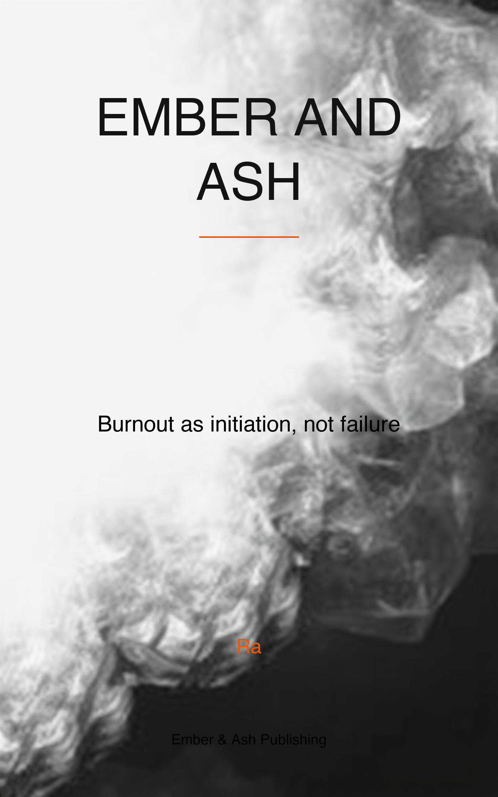
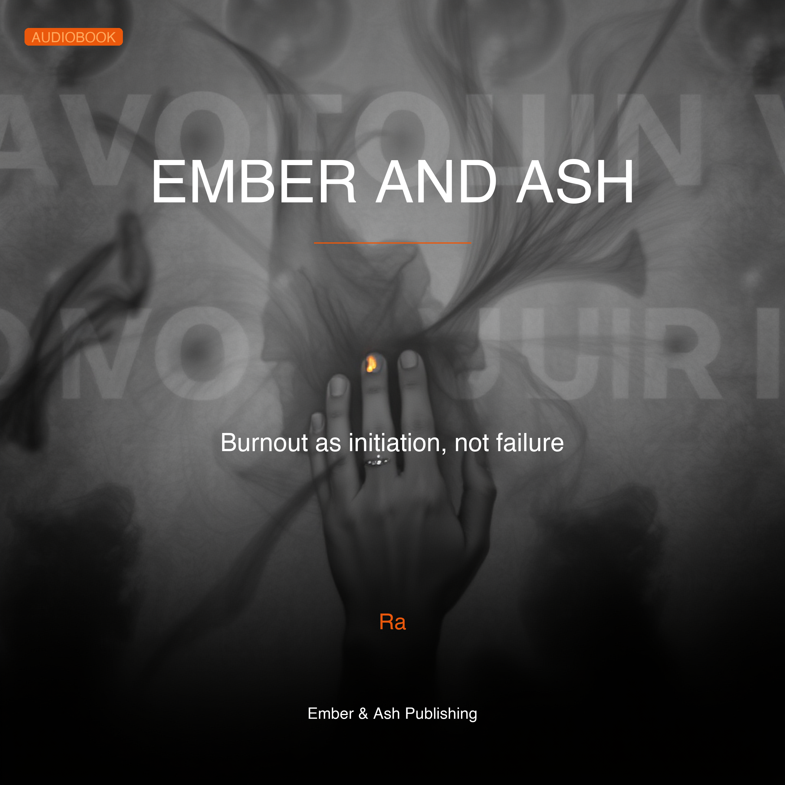
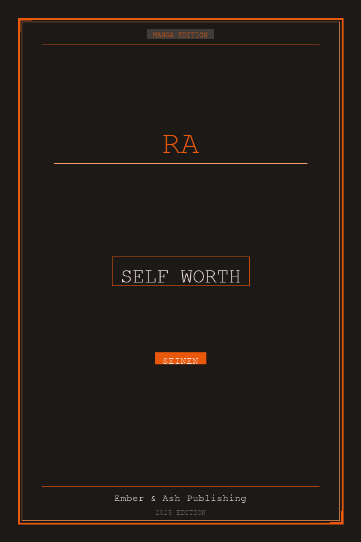
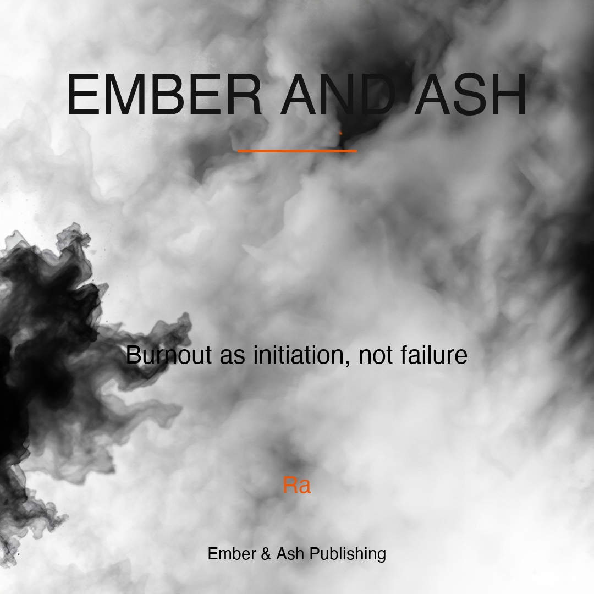
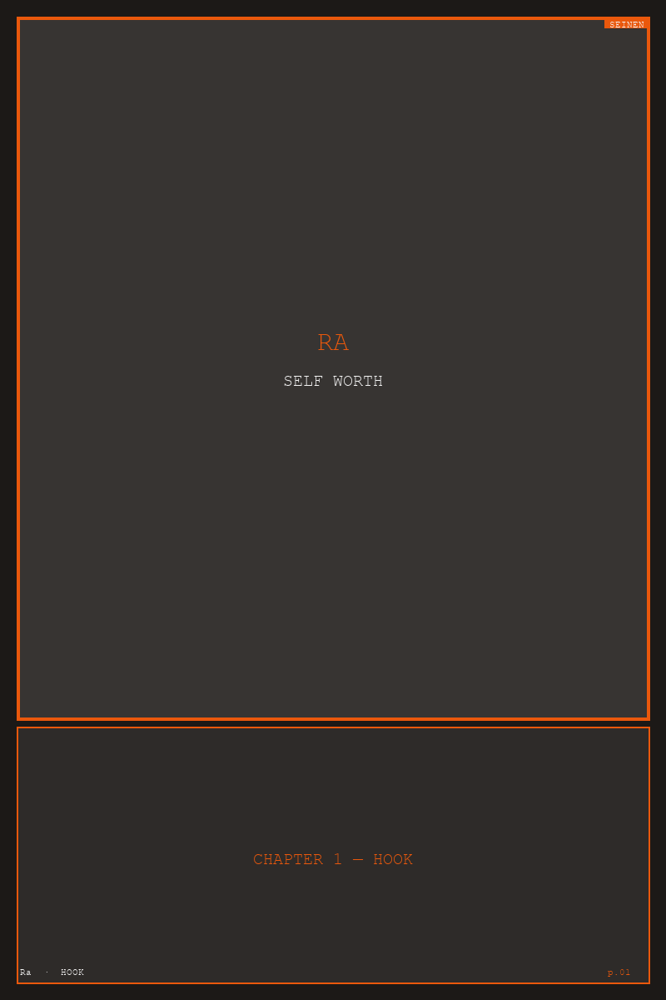
A Note on the Teachings of Ra
I was not a direct student of Ra. I encountered their work through books, talks, and publicly available teachings. What follows is not an official interpretation of Ra's work — it is an application. I have done my best to honor the integrity of the original teachings while translating them into practical guidance for the challenges you may be facing.
Ra's understanding of anxiety reshaped the way I see this subject. Their approach — rooted in Universal consciousness; witnessing awareness; clarity of being; ancient wisdom — offers a lens that goes beyond conventional advice. It speaks to something deeper: the patterns beneath the surface, the quiet mechanisms that keep us stuck, and the often-overlooked pathways toward genuine relief.
This book applies Ra's teachings to the specific experience of gen z professionals navigating anxiety. It does not replace the teacher's original work. Where I have adapted exercises or frameworks, I have done so with care and transparency. Any simplification is mine, not theirs.
If something in these pages resonates with you, I encourage you to go to the source. Seek out Ra's own words — their talks, their writings, their direct teachings. What I offer here is a bridge, not a destination. The real work lives in the original.
Introduction
Your body already knows what anxiety feels like. It is the jaw tension before a meeting. The chest tightness when you open your laptop. The thing where you cannot sleep but you also cannot stop scrolling.
This book is not going to explain anxiety to you. You already get it. What it is going to do is give you a way to work with it that does not require more willpower, more discipline, or more self-improvement content.
Just practices. Short ones. And a way of seeing what is already happening in your body so it stops running the show.
This audiobook has a companion free guide with all the exercises and reflection prompts. You can get it free at PhoenixProtocolBooks.com/free/anxiety-gen-z-professionals-anxiety-assessment-v1.
Chapter 1
You used to have opinions about your work. They are harder to access than they used to be.
The kitchen light is fluorescent. The coffee machine finishes. Steam rises from the cup. gray light through the window visible through the small window. Someone opens the refrigerator behind you. The seal sounds. You wrap both hands around the mug. The hallway outside is quiet. Your next meeting is in nine minutes. The mug is warm.
That pause is doing more than slowing you down. It is showing you how the pattern enters, which means the chapter can name it before it hardens.
Underneath the feeling is a simple mechanism: you can act inside uncertainty without waiting for it to resolve. When the alarm runs the response, your nervous system treats uncertainty like danger and asks for impossible certainty. That is why ordinary moments feel heavy.
The point is that you can act inside uncertainty without waiting for it to resolve.
If you expanded into the vast space around you, how small would your problem become?
Something shifted. Not dramatically. But the frame is different now.
So when the pattern surges, the next move is not to understand more. It is to make the first move cheaper.
Start with the place in your body that lifted while you were listening. That is where the practice begins.
Sit with your feet flat on the ground. Place your awareness at the base of your spine, feeling your connection to the earth. This is your ground, the foundation that does not move. From here, expand your awareness upward through your spine, feeling the stability all the way up through the crown of your head. You are rooted and spacious at the same time. Continue for five to seven minutes. This practice creates what Ra teaches: witnessing without detachment. You are grounded in your humanity and simultaneously aware of the vast consciousness that contains everything. It heals both anxiety and the spiritual bypassing that comes from ungrounded transcendence.
Stay with what changed. Even if it only changed by one degree.
The ground beneath you is unchanging. Return to it.
Awareness revealed itself. The mind will reclaim identity with thought. When it does, the witness is still here.
Chapter 2
Your body started keeping score before you did. It has been presenting the invoice in small ways ever since.
The conference room is cold. Your hands rest on the table. Someone's laptop fan runs loud. gray light through the window through the window behind the presenter. Your pen is in your hand. The slide changes. Your chair is slightly too low. the street below traffic is audible through the glass. Your pen has not moved.
That pause is doing more than slowing you down. It is showing you how the pattern enters, which means the chapter can name it before it hardens.
Underneath the feeling is a simple mechanism: you can act inside uncertainty without waiting for it to resolve. When the alarm runs the response, your nervous system treats uncertainty like danger and asks for impossible certainty. That is why ordinary moments feel heavy.
The point is that you can act inside uncertainty without waiting for it to resolve.
What if the solution is not in figuring anything out, but in the clarity of simply seeing?
For example, the quickest way to feel the mechanism is to watch it take hold in an ordinary moment.
In the ancient teaching, there is a story about the mirror. The mirror reflects whatever is placed before it. A flower appears—the mirror shows a flower. A storm approaches—the mirror reflects the storm. A beautiful face—a beautiful reflection. An angry face—an angry reflection.
A student asked the wise one: does the mirror judge what it reflects?
The wise one said: the mirror never judges. The mirror does not prefer the flower to the storm. The mirror does not hold onto the beautiful face or reject the ugly one. The mirror simply receives what is present and shows it clearly.
What is the mirror, the student asked?
The wise one said: the mirror is emptiness. The mirror is the capacity to receive everything without being changed by anything. The mirror does not believe the images are real in the way they appear. The mirror knows itself to be untouched by all of it.
This is what you are. Not your thoughts, not your feelings, not your circumstances. You are the awareness in which all of it appears. And awareness, like the mirror, is never harmed by what it reflects.
When you are anxious, when you are grieving, when you are afraid—these are images appearing in the mirror of awareness. The mirror reflects them truly. But the mirror is never touched. The mirror is never broken.
This is why clarity is kindness. When you remember that you are the witnessing awareness and not the content that appears, you are already healed. Not because the pain disappears, but because you have found the ground that is unshakable.
Thought continued. But the identity with thought dissolved. The space between thinker and thought became visible.
Now notice what shifted before your mind starts summarizing it.
Clarity brings peace. Practice seeing clearly.
The pattern is not your identity. It is a signal worth reading.
The witness watched the story. Tomorrow the story will feel more real. The witness does not compete. It simply watches.
Chapter 3
Hard work was supposed to be the variable that changed the outcome. The math is not working.
The bathroom is empty. You run cold water over your wrists. The tap sounds loud in the quiet. gray light through the window through the frosted window above the mirror. Your reflection looks back. The paper towel dispenser is out. You shake your hands dry. The door handle is cold. The hallway outside is bright. The carpet starts again underfoot.
That pause is doing more than slowing you down. It is showing you how the pattern enters, which means the chapter can name it before it hardens.
Underneath the feeling is a simple mechanism: you can act inside uncertainty without waiting for it to resolve. When the alarm runs the response, your nervous system treats uncertainty like danger and asks for impossible certainty. That is why ordinary moments feel heavy.
The point is that you can act inside uncertainty without waiting for it to resolve.
What would it feel like to live as the ground instead of the contents?
Space appeared where density had been. Not through removal, but through the recognition that space was already the ground.
So when the pattern surges, the next move is not to understand more. It is to make the first move cheaper.
Start with the place in your body that lifted while you were listening. That is where the practice begins.
Sit with your eyes softly open. Practice clarity of observation by noticing what is true right now without adding anything to it. See this moment as it actually is. Not the story about it. The actual data: the light, the sounds, the sensations, the basic existence of things. Notice how much of your suffering comes from the story you add to what is actually happening. The practice is to rest in clarity—what is actually here right now. Continue for five to seven minutes. This is the heart of Ra's teaching: clarity is kindness. To see what is without distortion is to be free.
Now notice what shifted before your mind starts summarizing it.
What does not change is your true nature. Find that and rest there.
The edges of self softened. They will sharpen again in reaction. Sharpening and softening are both watched.
Chapter 4
You are not behind. You are always almost caught up. There is a difference and your nervous system knows it.
gray light through the window on your jacket sleeve. The crosswalk light changes. the street below is loud with morning. Your bag strap slips. You adjust it. The coffee in your hand is still hot. Someone passes close. You step right. The office building is ahead. The revolving door catches the wind.
That pause is doing more than slowing you down. It is showing you how the pattern enters, which means the chapter can name it before it hardens.
Underneath the feeling is a simple mechanism: you can act inside uncertainty without waiting for it to resolve. When the alarm runs the response, your nervous system treats uncertainty like danger and asks for impossible certainty. That is why ordinary moments feel heavy.
The point is that you can act inside uncertainty without waiting for it to resolve.
What in you is aware of your thoughts? Can you feel the difference between the thought and the awareness?
For example, the quickest way to feel the mechanism is to watch it take hold in an ordinary moment.
Priya calls a college friend. Not to network. Not to catch up strategically. She calls because she misses the person, and she tells the person that. "I miss how we used to talk." The friend is quiet, then: "Me too." They spend thirty minutes talking about nothing useful. No career updates, no professional advice. Just talking. The conversation is inefficient. The conversation fills something the efficient ones emptied. Priya hangs up and sits with the fullness. The fullness is the pre-professional self, not gone, just unfed. It responds to feeding.
Silence was not the absence of sound. It was the presence of awareness that was always here, beneath the noise.
Now notice what shifted before your mind starts summarizing it.
Your states come and go. You are constant.
You are the awareness, not the thought.
Nothing happened, and it was enough. The next moment will demand something happen. Can nothing still be enough?
Chapter 5
You have seventeen unread messages and zero interest in opening any of them. This is new. Or maybe it isn't.
The coworker laughs at something. You look up from your screen. The joke has already passed. Your screen is still open on the same document. gray light through the window has changed outside — brighter now, or darker. The laughter settles. Keyboards resume. the street below traffic is a low continuous sound. You look back at the document. The cursor is where you left it.
Stay with the moment a second longer. The pattern usually shows itself before the explanation does.
Underneath the feeling is a simple mechanism: you can act inside uncertainty without waiting for it to resolve. When the alarm runs the response, your nervous system treats uncertainty like danger and asks for impossible certainty. That is why ordinary moments feel heavy.
The point is that you can act inside uncertainty without waiting for it to resolve.
When silence is available, what does it show you?
The pattern gets clearest when you can see the price land on a real person.
Priya tells a friend about the replay library. "I still cringe about mispronouncing that name three weeks ago." The friend is quiet, then: "I said 'you too' when a waiter said 'enjoy your meal' six months ago and I still think about it." The shame archives are not unique to Priya. The specificity of each archive is personal. The mechanism is shared. The sharing doesn't erase the archive. The sharing proves the archive is a feature of the system, not a record of her personal failures. System features can be examined. Personal failures can only be hidden.
The edges of self softened. Not dissolution. Recognition that the edges were drawn by thought, not by reality.
So when the pattern surges, the next move is not to understand more. It is to make the first move cheaper.
Start with the place in your body that lifted while you were listening. That is where the practice begins.
Sit comfortably and practice observing your judgments about yourself. Each time you notice a judgment—"I am not good enough," "I am failing," "I should be different"—simply observe it as you would observe a cloud. Do not argue with the judgment or believe it. Just notice: "There is a judgment." The witnessing itself is the practice. Over time, the judgments lose their grip because they are no longer being believed; they are simply being observed. Continue for five to ten minutes. This practice directly addresses the anxiety that comes from constant self-judgment and self-criticism.
Stay with what changed. Even if it only changed by one degree.
Practice listening to it.
Silence is always here beneath the noise.
The space opened. Content will fill it. The space does not shrink when content arrives. Notice this.
Chapter 6
The phone was the first thing you touched this morning. Before coffee. Before a single thought that belonged to you.
Your manager's door is open. You knock on the frame. They look up. You have a question prepared. gray light through the window through the window behind their desk. The chair across from them is empty. They gesture toward it. You sit. The chair is lower than theirs. the street below is audible from here too. You ask the question.
That pause is doing more than slowing you down. It is showing you how the pattern enters, which means the chapter can name it before it hardens.
Underneath the feeling is a simple mechanism: you can act inside uncertainty without waiting for it to resolve. When the alarm runs the response, your nervous system treats uncertainty like danger and asks for impossible certainty. That is why ordinary moments feel heavy.
The point is that you can act inside uncertainty without waiting for it to resolve.
If you are not your thoughts, what are you?
For example, the quickest way to feel the mechanism is to watch it take hold in an ordinary moment.
A person lies in the dark. They are afraid. They have received news that might change everything. The doctor is concerned. They are waiting for test results.
They do not sleep. They lie there with the fear present. They do not try to meditate it away. They do not try to think their way out of it. They simply observe it.
The fear is like weather moving through. It is large. It is dark. It is real. But as they observe it without trying to change it, something shifts. The fear is not separate from them. But they are not entirely located in it either.
They are the space in which the fear appears.
This is not comfort. This is not reassurance. This is only the radical clarity that what they are—the aware, witnessing presence—is not afraid. The body may be shaking. The mind may be spinning scenarios. But the witness is clear.
As they rest in this knowing, the night is still dark and still long. But the fear has lost its singular authority. It is just one quality moving through awareness, not the whole truth of what is.
The test results will be what they are. The future will arrive as it arrives. But in this moment, they rest in the ground that does not move. In the presence that is never damaged by what it observes.
They do not sleep. But they are rested. They are ready for whatever comes.
The story ran. Awareness watched the story run. The story and the watching occupied different orders of reality.
So when the pattern surges, the next move is not to understand more. It is to make the first move cheaper.
Start with the place in your body that lifted while you were listening. That is where the practice begins.
Stand with your feet hip-width apart and eyes open. Feel your feet on the ground. This is your root. Now expand your awareness upward to include the vast sky above you. You are simultaneously rooted in the earth and open to the sky. Breathe and notice that you are the meeting point of these two infinities. You are grounded and spacious at once. This is the balance Ra teaches. Continue for five to seven minutes. This practice prevents the anxiety that comes from either being ungrounded or disembodied. You are witness and participant. Vast and incarnate.
Let the chapter land in the body before it turns back into explanation.
See what you are without judgment.
The witness is never harmed.
What you noticed here does not end with this chapter. The next layer is already forming.
Chapter 7
You are good at your job. That has stopped feeling like enough.
The gym bag is under your desk. It has been there since Tuesday. gray light through the window through the lobby glass as you came in. You look at it now — the bag, the shoes visible through the mesh. The afternoon block you reserved is in forty minutes. Your screen shows six open tabs. the street below traffic has picked up. The bag sits where it is.
Stay with the moment a second longer. The pattern usually shows itself before the explanation does.
Underneath the feeling is a simple mechanism: you can act inside uncertainty without waiting for it to resolve. When the alarm runs the response, your nervous system treats uncertainty like danger and asks for impossible certainty. That is why ordinary moments feel heavy.
The point is that you can act inside uncertainty without waiting for it to resolve.
When you observe your state without trying to change it, what happens?
Here is where the chapter stops talking about the pattern and lets you watch it happen.
Sam talks to a mentor who is also in the creative field. The mentor says: "You need boundaries. You need to decide what you will and will not do. You need to charge more. You need to say no." The permission to have boundaries is transformative. Sam has been saying yes to everything because she is afraid of losing income. The mentor is suggesting that the fear is rational but the response is unsustainable. Sam starts implementing boundaries. She sets a work cutoff time. She turns down projects that do not align with her work. She raises her rates. The boundaries feel uncomfortable at first. But the discomfort is less intense than the constant anxiety. Her shoulders drop slightly. Her chest opens slightly. She is beginning to understand that boundaries are how you survive in an uncertain economy.
Now notice what shifted before your mind starts summarizing it.
The awareness you are is infinite and untouched. This is the truth.
The space is already the ground.
What you noticed here does not end with this chapter. The next layer is already forming.
Chapter 8
The task is not hard. You have done harder things before lunch. Your hands are staying where they are anyway.
Lunch is on your desk. You eat looking at the screen. The food is the right temperature. the street below noise rises for a moment, then fades. A notification comes in. You read it without putting the food down. gray light through the window through the glass. The food is gone before you decide to finish it. The container is closed. The notification is still open.
Stay with the moment a second longer. The pattern usually shows itself before the explanation does.
Underneath the feeling is a simple mechanism: you can act inside uncertainty without waiting for it to resolve. When the alarm runs the response, your nervous system treats uncertainty like danger and asks for impossible certainty. That is why ordinary moments feel heavy.
The point is that you can act inside uncertainty without waiting for it to resolve.
The witness—the one who observes—what is its nature?
For example, the quickest way to feel the mechanism is to watch it take hold in an ordinary moment.
Marcus joins a professional network for people of color in his industry. He talks to other people who are code-switching. He realizes he is not alone in the fragmentation. Other people are managing race and class and gender at work. Other people are fragmenting into multiple versions of themselves. The shared experience is validating. He is not broken. The workplace is broken. He also starts to believe that he does not have to stay in a broken workplace forever. He can find an organization that values him as a whole person instead of requiring constant performance. His chest opens. His hands warm. He is beginning to imagine a future where he is integrated instead of fragmented.
Awareness observed the pain without becoming the pain. The distinction was not intellectual. It was experienced.
Stay with what changed. Even if it only changed by one degree.
You are not the contents of your experience. You are the awareness in which experience happens.
The pattern is not your identity. It is a signal worth reading.
You recognized stillness. Movement will resume. Stillness does not oppose movement. It contains it.
Chapter 9
The ambition is still there. It just costs more than it used to.
You open the calendar. Tomorrow is full from nine. gray light through the window on your window. You scroll forward to Friday. Friday has three gaps. Each gap is thirty minutes. You hover over one. The tooltip shows it is blocked for focus time — you blocked it yourself, two weeks ago. the street below is quiet for a moment. You close the calendar. The document is still open.
Stay with the moment a second longer. The pattern usually shows itself before the explanation does.
Underneath the feeling is a simple mechanism: you can act inside uncertainty without waiting for it to resolve. When the alarm runs the response, your nervous system treats uncertainty like danger and asks for impossible certainty. That is why ordinary moments feel heavy.
The point is that you can act inside uncertainty without waiting for it to resolve.
What is it like when you stop trying to fix things and just see them clearly?
For example, the quickest way to feel the mechanism is to watch it take hold in an ordinary moment.
Jordan maps the spiral's architecture. Every chain has the same structure: ambiguous event, first interpretation (negative), extrapolation, catastrophe, identity threat. The content rotates—work, money, relationships—but the scaffolding is identical. He spirals about a missed deadline the same way he spirals about a friend's unanswered text. The spiral doesn't care about the topic. The spiral is a machine that converts uncertainty into catastrophe. Any uncertainty will do.
Something shifted. Not dramatically. But the frame is different now.
So when the pattern surges, the next move is not to understand more. It is to make the first move cheaper.
Start with the place in your body that lifted while you were listening. That is where the practice begins.
This is a witnessing grief practice. Sit comfortably and allow your grief or sadness to be fully present. Do not try to shift it or make it better. Simply observe it with tenderness. Feel where it lives in your body. Notice the thoughts that accompany it. Notice the emotions. And from the witnessing awareness, hold all of this with compassion. The grief is honored. It is not bypassed. But you are not collapsed into it. You are simultaneously the one who grieves and the vast awareness that holds the griever. Practice for five to ten minutes. This teaches the necessary integration: to feel fully and simultaneously know you are vast.
Stay with what changed. Even if it only changed by one degree.
The vast space around you contains everything. Step into it.
Nothing needs to happen.
Awareness noticed itself. The mind will try to make this an experience to keep. Awareness is not an experience. It is what experiences happen in.
Chapter 10
Something shifted around month eight. You have been trying to locate it since.
Your phone face-down on the desk. The screen lights through anyway. the train sounds from outside — a horn, then silence. You do not turn the phone over. Your fingers are on the keyboard. The keys make the sound keys make. gray light through the window against the building. The screen lights again. Your fingers stay on the keys.
Stay with the moment a second longer. The pattern usually shows itself before the explanation does.
Underneath the feeling is a simple mechanism: you can act inside uncertainty without waiting for it to resolve. When the alarm runs the response, your nervous system treats uncertainty like danger and asks for impossible certainty. That is why ordinary moments feel heavy.
The point is that you can act inside uncertainty without waiting for it to resolve.
What is actually ground in your life? What does not move?
You can see the mechanism better when it borrows someone else's future first.
Jordan realizes he can't turn off the watcher during conversations. He tried. Told himself to just be present at the team dinner. For about ninety seconds, he was. Then the watcher rebooted: how's your posture, you've been quiet too long, that joke didn't land, recalibrate. The watcher isn't a choice. The watcher is an operating system. It runs beneath every social interaction, consuming resources that should go to the interaction itself. He's never fully in a conversation. He's always partially in the control room above it.
Something shifted. Not dramatically. But the frame is different now.
So when the pattern surges, the next move is not to understand more. It is to make the first move cheaper.
Start with the place in your body that lifted while you were listening. That is where the practice begins.
Sit comfortably and practice observing your emotions without identification. You might say silently: "There is anger. There is sadness. There is fear." You are not these emotions. They are passing through you. Continue to observe for five to eight minutes. The practice creates what Ra teaches: clarity of observation. When you are identified with your emotions, they control you. When you observe them, you remain in the vast awareness that is unharmed by them. This practice directly addresses anxiety spirals by creating the space between you and the thought/emotion complex.
Let the chapter land in the body before it turns back into explanation.
Clarity is kindness. Practice seeing clearly.
What watches the pain is not in pain.
What you noticed here does not end with this chapter. The next layer is already forming.
Chapter 11
You built the life that was supposed to feel like something. You are still waiting for it to.
Your badge beeps at the door. The lobby smells like recycled air. the street below is visible through the glass. Your bag cuts into your left shoulder. The elevator button is already lit. Someone steps in behind you. The doors close. Your phone screen is on. The floor number ticks up. The doors open. The hallway is the same hallway.
Stay with the moment a second longer. The pattern usually shows itself before the explanation does.
Underneath the feeling is a simple mechanism: you can act inside uncertainty without waiting for it to resolve. When the alarm runs the response, your nervous system treats uncertainty like danger and asks for impossible certainty. That is why ordinary moments feel heavy.
The point is that you can act inside uncertainty without waiting for it to resolve.
The awareness that is aware of pain—has this awareness ever been harmed?
Here is where the chapter stops talking about the pattern and lets you watch it happen.
Maya tells a coworker about the closed-door spiral. Not the full chain—just the beginning and end. "I saw a closed door and ended up on LinkedIn for an hour." The coworker doesn't laugh. "I updated my resume last week because my skip-level rescheduled." Two people. Same machine. Maya feels something release in her shoulders. Not because the spiral was validated. Because the spiral was witnessed. The witnessing doesn't break the chain. The witnessing means the chain doesn't run in solitary confinement anymore.
She noticed awareness noticing itself. The recursive loop broke into openness.
Now notice what shifted before your mind starts summarizing it.
The witness is never harmed. Return to witnessing when you are caught.
The pattern is not your identity. It is a signal worth reading.
You touched what is already here. The challenge is not finding it again. It is believing it never left.
Chapter 12
Your shoulders have been near your ears since Tuesday. You just noticed.
The elevator opens on your floor. The carpet is grey. The overhead light is steady. gray light through the window through the hall window at the end. Your keycard is in your pocket. Colleagues' voices carry from somewhere left. You turn right. Your desk is the third one. The monitor is dark. You press the power button. The fan starts.
Stay with the moment a second longer. The pattern usually shows itself before the explanation does.
Underneath the feeling is a simple mechanism: you can act inside uncertainty without waiting for it to resolve. When the alarm runs the response, your nervous system treats uncertainty like danger and asks for impossible certainty. That is why ordinary moments feel heavy.
The point is that you can act inside uncertainty without waiting for it to resolve.
Clarity means seeing truly. What are you not seeing clearly about your situation?
The witness emerged. Not as a new arrival, but as the recognition of what had been watching all along.
In practice, do not turn this into homework. Give the body one smaller, safer entry instead.
Start with the place in your body that lifted while you were listening. That is where the practice begins.
This is a spaciousness practice. Sit with your eyes closed. Imagine that your awareness is expanding outward in all directions like an infinite sphere. You are not contracting into your body. You are expanding into space. The body is within this spacious awareness, not the center of it. Your breath, your heartbeat, your thoughts—all appear within this vastness. Nothing is outside it. Practice this for five to ten minutes. This expands the container of awareness and dissolves the claustrophobia that comes with being fused with anxiety or overwhelm.
Stay with what changed. Even if it only changed by one degree.
Spaciousness is always available. You do not have to create it. You have to recognize it.
You are already what you seek.
The space held everything. When the next contraction arrives, the space still holds it. Trust the space.
Chapter 13
You checked your PTO balance on a Tuesday afternoon. You did not book anything. You just needed to know the number.
The call drops. You tap rejoin. The loading circle spins. gray light through the window on your window. Your chair creaks when you lean forward. The call reconnects. Someone is mid-sentence. You are back in the grid. Your mute button is still on. The presenter's slide has changed. the street below is audible again. You find the thread in the chat.
That pause is doing more than slowing you down. It is showing you how the pattern enters, which means the chapter can name it before it hardens.
Underneath the feeling is a simple mechanism: you can act inside uncertainty without waiting for it to resolve. When the alarm runs the response, your nervous system treats uncertainty like danger and asks for impossible certainty. That is why ordinary moments feel heavy.
The point is that you can act inside uncertainty without waiting for it to resolve.
Here is where the chapter stops talking about the pattern and lets you watch it happen.
Priya's physical exhaustion has moved into chronic fatigue. She cannot get through a shift without multiple breaks. She cannot focus. She cannot think. She is running on fumes and anxiety. She is also supposed to be grateful for the job. She is supposed to be building a career. She is supposed to be improving herself. Instead, she is just trying to survive the day. The gap between what she is supposed to be doing and what she actually has capacity for is breaking her. Her feet ache constantly. Her back is in chronic pain. Her mind is foggy. Her body is shutting down. The anxiety is in the realization that if she keeps going like this, her body will make the decision for her.
Something shifted. Not dramatically. But the frame is different now.
In practice, do not turn this into homework. Give the body one smaller, safer entry instead.
Start with the place in your body that lifted while you were listening. That is where the practice begins.
This is a thought-observing practice. Sit comfortably and notice the thoughts that arise naturally, without trying to create them or suppress them. Observe them as if they are clouds passing through the sky of your awareness. Do not judge them. Do not believe them. Simply observe: "There is a thought. There is another thought." The key is to find the space between the thoughts, where there is stillness. Rest there. Continue for five to ten minutes. This practice creates distance between you and habitual thought patterns, allowing clarity to emerge.
Remember this: you can act inside uncertainty without waiting for it to resolve. That is not a philosophy. That is what happened in this chapter.
Stillness is not achieved. It is recognized.
What you noticed here does not end with this chapter. The next layer is already forming.
Chapter 14
You answered the email at 11pm. You checked if they replied at 11:08.
You clock out at 5:58. The hallway empties fast. Someone holds the elevator. You take the stairs. gray light through the window hits when the door opens. the street below is full of people moving in all directions. Your bag is on one shoulder. Your headphones are in. The music starts. The crosswalk signal counts down. You wait.
Stay with the moment a second longer. The pattern usually shows itself before the explanation does.
Underneath the feeling is a simple mechanism: you can act inside uncertainty without waiting for it to resolve. When the alarm runs the response, your nervous system treats uncertainty like danger and asks for impossible certainty. That is why ordinary moments feel heavy.
The point is that you can act inside uncertainty without waiting for it to resolve.
Here is where the chapter stops talking about the pattern and lets you watch it happen.
Maya finds the grief intensifies in professional success. A promotion should feel like gain. It feels like another step away from the person who argued about documentaries. The more she succeeds in the professional self, the more distance from the pre-professional self. She can't have both. The professional self requires calibration, optimization, performance. The pre-professional self was uncalibrated, unoptimized, present. She climbs. The climbing increases the altitude and the distance from the ground. The ground is where she was herself without trying. The altitude is where she's someone effective who misses someone real.
He stopped reaching for stillness and noticed he was already still. The reaching was the only movement.
In practice, do not turn this into homework. Give the body one smaller, safer entry instead.
Start with the place in your body that lifted while you were listening. That is where the practice begins.
Find a comfortable seated position. Breathe naturally. As you breathe, imagine that you are observing your breath from a vast distance. You are not the breath. You are the awareness that observes the breath. The breath comes. The breath goes. The observer remains. Do this for five to seven minutes. This teaches you to locate and rest in the witnessing awareness. It creates a gap between you and the automatic processes of mind and body, allowing clarity to emerge.
Remember this: you can act inside uncertainty without waiting for it to resolve. That is not a philosophy. That is what happened in this chapter.
Awareness does not need content.
What you noticed here does not end with this chapter. The next layer is already forming.
Chapter 15
The promotion came through. You waited to feel something. The waiting is still happening.
You are first on the call. The waiting room graphic rotates. gray light through the window through your window. Your own face is in the corner of the screen. You look at it, then away. The room is quiet except the fan. the street below a floor below. Someone joins. Then two more. The call starts. You move your cursor off your own face.
That pause is doing more than slowing you down. It is showing you how the pattern enters, which means the chapter can name it before it hardens.
Underneath the feeling is a simple mechanism: you can act inside uncertainty without waiting for it to resolve. When the alarm runs the response, your nervous system treats uncertainty like danger and asks for impossible certainty. That is why ordinary moments feel heavy.
The point is that you can act inside uncertainty without waiting for it to resolve.
Here is where the chapter stops talking about the pattern and lets you watch it happen.
Kai stands in the middle of the presentation that is going wrong. The slide is wrong. The room is watching. Maximum intensity. Kai's chest tightens. Kai's jaw clenches. The thought spiral roars at peak volume. Every nerve says yield. Kai does not yield. Kai stands at the center of the storm and acts from the new identity—not against the pattern, but through it. The pattern is noise. The action is signal. Kai's body carries both. The crisis does not define Kai. Kai's response defines Kai. Kai moves forward with the full weight of the moment pressing down. The weight is real. The collapse is not. Kai walks through the peak and comes out the other side still standing. Still choosing.
Something shifted. Not dramatically. But the frame is different now.
So when the body tightens, do not solve the whole pattern here. Work with the place that braced first.
Start with the pressure under the sternum. That is the part still bracing.
Sit with your spine upright. Place your awareness on the sensations in your body without trying to change them. Feel the weight of your body on the chair. Feel the texture of your clothing. Feel any places of tension or ease. You are simply observing. You are not the sensations. The sensations are happening in the field of awareness that you are. Continue for five to eight minutes. This grounded witnessing practice anchors you in your physical reality while cultivating the clear observation that prevents anxiety from collapsing into overwhelm.
Remember this: you can act inside uncertainty without waiting for it to resolve. That is not a philosophy. That is what happened in this chapter.
The pattern is not your identity. It is a signal worth reading.
Silence was heard beneath the noise. When the noise grows louder, the silence does not diminish. Can you hear it then?
Chapter 16
The group chat is asking about the trip. You have read every message. Your thumbs are not moving.
The standup starts. You are on mute. The video grid fills the screen. Someone's dog barks in their background. gray light through the window through your window. You find your name on the grid. Your face is smaller than you expect. The cursor hovers over your unmute button. Someone else is still talking. the street below traffic below your window is loud.
That pause is doing more than slowing you down. It is showing you how the pattern enters, which means the chapter can name it before it hardens.
Underneath the feeling is a simple mechanism: you can act inside uncertainty without waiting for it to resolve. When the alarm runs the response, your nervous system treats uncertainty like danger and asks for impossible certainty. That is why ordinary moments feel heavy.
The point is that you can act inside uncertainty without waiting for it to resolve.
Here is where the chapter stops talking about the pattern and lets you watch it happen.
Jordan stands in the middle of the presentation that is going wrong. The slide is wrong. The room is watching. Maximum intensity. Jordan's breath shortens. Jordan's shoulders rise. The watcher roars at peak volume. Every nerve says yield. Jordan does not yield. Jordan stands at the center of the storm and acts from the new identity—not against the pattern, but through it. The pattern is noise. The action is signal. Jordan's body carries both. The crisis does not define Jordan. Jordan's response defines Jordan. Jordan moves forward with the full weight of the moment pressing down. The weight is real. The collapse is not. Jordan walks through the peak and comes out the other side still standing. Still choosing.
Nothing happened. That was the revelation. In the absence of event, awareness remained. Complete. Undiminished.
In practice, do not turn this into homework. Give the body one smaller, safer entry instead.
Start with the shoulders that lifted before you even noticed the cost.
Sit comfortably with your eyes open or closed. Notice whatever is present in this moment: a sensation in your body, a thought, a sound, an emotion. Do not judge it. Do not try to change it. Simply observe it with curiosity, as if you are witnessing something on a screen. After a few breaths, let that attention shift to something else. The thought passes. The sensation changes. Notice the awareness that is observing all of this without being harmed. This is witnessing practice. Continue for five to ten minutes. This foundational practice cultivates clarity and grounds you in the vast awareness that is unharmed by what passes through it.
Remember this: you can act inside uncertainty without waiting for it to resolve. That is not a philosophy. That is what happened in this chapter.
Identity is drawn by thought, not reality.
What remains is not more explanation. It is the next place this pattern asks for your life.
Chapter 17
You are performing fine. That is what makes this hard to name.
The the train lurches. Your coffee shifts in your hand. gray light through the window against the window. The person beside you types without stopping. Your screen shows four unread. The train slows. Brakes squeal against the track. You do not open the messages. The doors open. Cold air moves through. The doors close again.
Stay with the moment a second longer. The pattern usually shows itself before the explanation does.
Underneath the feeling is a simple mechanism: you can act inside uncertainty without waiting for it to resolve. When the alarm runs the response, your nervous system treats uncertainty like danger and asks for impossible certainty. That is why ordinary moments feel heavy.
The point is that you can act inside uncertainty without waiting for it to resolve.
For example, the quickest way to feel the mechanism is to watch it take hold in an ordinary moment.
Suki opens the project dashboard and sees the deadline counter. The watcher monitors from a distance, recording failures but never engaging. Suki's palms sweat. The pattern demands attention now—hot, insistent, refusing to wait. Suki watches it demand. This time, instead of obeying, Suki tracks where the demand originates. It starts in the breath. It travels to the thoughts. The thoughts build a story. The story says: act now or lose everything. Suki examines the story. The story has no evidence. The palms has real sensation. The story has fabricated urgency. Suki holds the sensation without following the story. The sensation stays. The story loses its audience. The frame shifts: the pattern is loud, but loudness is not truth.
Remember this: you can act inside uncertainty without waiting for it to resolve. That is not a philosophy. That is what happened in this chapter.
The pattern is not your identity. It is a signal worth reading.
What remains is not more explanation. It is the next place this pattern asks for your life.
Chapter 18
You have been doing the thing they call resilience. No one mentioned it had a ceiling.
Your chair rolls back from the desk. You stand. Your back makes a sound. the street below is audible through the window. The ceiling is the same ceiling. You walk to the window and look out. gray light through the window on the glass. A bus passes. Your reflection is faint in the glass. You stay there. Your phone is in your hand.
Stay with the moment a second longer. The pattern usually shows itself before the explanation does.
Underneath the feeling is a simple mechanism: you can act inside uncertainty without waiting for it to resolve. When the alarm runs the response, your nervous system treats uncertainty like danger and asks for impossible certainty. That is why ordinary moments feel heavy.
The point is that you can act inside uncertainty without waiting for it to resolve.
Here is where the chapter stops talking about the pattern and lets you watch it happen.
Kai writes an idea in the margin of his notebook. Not for work—for himself. A concept for an app that nobody asked for, that has no business case, that he would build just to see if it works. The idea is impractical. The writing of it produces a sensation he forgot existed: curiosity without a deliverable. The sensation scares him slightly. It reminds him of a self that doesn't optimize. The optimization is his value at work. The curiosity was his value to himself. He tears out the page and puts it in his wallet. The page weighs nothing.
Remember this: you can act inside uncertainty without waiting for it to resolve. That is not a philosophy. That is what happened in this chapter.
What remains is not more explanation. It is the next place this pattern asks for your life.
Chapter 19
You have optimized everything you were told to optimize. The feeling you were optimizing toward has not arrived.
The out-of-office is set. Your laptop is in your bag. The desk is clear. gray light through the window through the window — you notice it now that you are standing. the street below is visible from here if you lean slightly. Your badge is in your pocket. The elevator button is warm from other hands. The doors open. You step in. The floor number starts going down.
Stay with the moment a second longer. The pattern usually shows itself before the explanation does.
Underneath the feeling is a simple mechanism: you can act inside uncertainty without waiting for it to resolve. When the alarm runs the response, your nervous system treats uncertainty like danger and asks for impossible certainty. That is why ordinary moments feel heavy.
The point is that you can act inside uncertainty without waiting for it to resolve.
For example, the quickest way to feel the mechanism is to watch it take hold in an ordinary moment.
Sam has implemented boundaries and her anxiety has decreased. She is still freelancing. She is still in an uncertain economy. But the uncertainty is no longer consuming all her energy. She has agency. She has boundaries. She has chosen to work less and earn less and live more. Her shoulders drop. Her throat opens. Her hands are steady. She has survived the chaos by accepting that she is allowed to have limits.
In practice, start smaller than insight. Start where the body is still holding the chapter.
Start with the throat that keeps rehearsing and swallowing the same sentence.
Find a quiet space. Sit comfortably. For five to ten minutes, practice silence. Not meditation with a technique, but simple silence. Notice what arises in the silence: thoughts, sensations, emotions. Let them pass. The silence is the teacher. It holds what language cannot. It shows you the vast space in which all experience occurs. This practice cultivates clarity by removing the constant chatter. It also honors silence as a legitimate teacher—not something to be filled, but something to be inhabited.
Remember this: you can act inside uncertainty without waiting for it to resolve. That is not a philosophy. That is what happened in this chapter.
What remains is not more explanation. It is the next place this pattern asks for your life.
Chapter 20
The meeting ended twenty minutes ago. Your jaw is still holding it.
The performance dashboard loads slowly. The progress bar fills. gray light through the window is flat today — no shadow on your desk. The numbers appear. You read them left to right. They are the numbers you expected. You read them again. the street below is quiet for a Tuesday. Your coffee is beside the keyboard. You close the dashboard. The document underneath it is still open.
That pause is doing more than slowing you down. It is showing you how the pattern enters, which means the chapter can name it before it hardens.
Underneath the feeling is a simple mechanism: you can act inside uncertainty without waiting for it to resolve. When the alarm runs the response, your nervous system treats uncertainty like danger and asks for impossible certainty. That is why ordinary moments feel heavy.
The point is that you can act inside uncertainty without waiting for it to resolve.
Here is where the chapter stops talking about the pattern and lets you watch it happen.
Priya sits in the team lunch. The surveillance starts. She lets it start. Then she asks a question she actually wants the answer to—not a performed question but a real one: "What did you think of that podcast episode?" The real question pulls her forward into the conversation. The watcher is still running, but the real question is louder. For three minutes she's more in the conversation than in the monitoring. Three minutes out of forty-five. The ratio isn't great. The ratio is better than zero. She walks back to her desk less drained than usual.
Remember this: you can act inside uncertainty without waiting for it to resolve. That is not a philosophy. That is what happened in this chapter.
Conclusion
You did not need another productivity hack. You needed to see the pattern. Now you see it.
anxiety is not going to disappear because you read a book. But the pattern underneath is no longer invisible. And the next time it runs — in a meeting, at 2am, in the scroll — you will catch it faster. That is not nothing. That is actually the whole game.
Where to Go Deeper
This book drew from the teachings of Ra to offer you a practical path through anxiety. But what you have read here is only one application — shaped by my perspective and filtered through the specific challenges of gen z professionals.
If these ideas spoke to you, go deeper. Seek out Ra's original works. Listen to their talks. Sit with their words directly. The bridge this book offers is meant to lead you to the source, not to stand in its place.
To go deeper and actually do the work from this book, download the companion free guide at PhoenixProtocolBooks.com/free/anxiety-gen-z-professionals-anxiety-assessment-v1. You will find guided exercises, journaling pages, and tools you can return to again and again. It is free — designed to go with exactly this book.
Before you go — if you want to take this further, a companion free guide is waiting for you at PhoenixProtocolBooks.com/free/anxiety-gen-z-professionals-anxiety-assessment-v1.
A Note on the Teachings of Junko
I was not a direct student of Junko. I encountered their work through books, talks, and publicly available teachings. What follows is not an official interpretation of Junko's work — it is an application. I have done my best to honor the integrity of the original teachings while translating them into practical guidance for the challenges you may be facing.
Junko's understanding of anxiety reshaped the way I see this subject. Their approach — rooted in Zen; Japanese contemplative; radical acceptance; beginner's mind; form and emptiness — offers a lens that goes beyond conventional advice. It speaks to something deeper: the patterns beneath the surface, the quiet mechanisms that keep us stuck, and the often-overlooked pathways toward genuine relief.
This book applies Junko's teachings to the specific experience of corporate managers navigating anxiety. It does not replace the teacher's original work. Where I have adapted exercises or frameworks, I have done so with care and transparency. Any simplification is mine, not theirs.
If something in these pages resonates with you, I encourage you to go to the source. Seek out Junko's own words — their talks, their writings, their direct teachings. What I offer here is a bridge, not a destination. The real work lives in the original.
Introduction
You do not need another framework. You have frameworks. What you need is to feel what anxiety is doing in your body while you are in the middle of using those frameworks.
These 20 chapters are short, practice-based, and designed for people who do not have time to read slowly. Each one gives you something you can use in a meeting, on a commute, or in the three minutes between calls when your nervous system is screaming.
This audiobook has a companion free guide with all the exercises and reflection prompts. You can get it free at PhoenixProtocolBooks.com/free/anxiety-corporate-managers-identity-sheet-v1.
Chapter 1
The email from HR about "upcoming changes" landed and nobody knows what it means. The ambiguity is worse than bad news would be.
Your badge beeps at the door. The conference room is full. the street below is visible through the window. Your hands are cold. The agenda is on the screen. Your laptop fan starts. Someone shuffles papers. The projection light is bright. Your throat is tight. You swallow.
That pause is doing more than slowing you down. It is showing you how the pattern enters, which means the chapter can name it before it hardens.
Underneath the feeling is a simple mechanism: you can act inside uncertainty without waiting for it to resolve. When the alarm runs the response, your nervous system treats uncertainty like danger and asks for impossible certainty. That is why ordinary moments feel heavy.
The point is that you can act inside uncertainty without waiting for it to resolve.
This feeling you are afraid of—what is actually the worst that could happen? Look directly.
For example, the quickest way to feel the mechanism is to watch it take hold in an ordinary moment.
The light in the break room is fluorescent and hums.
Aiko stands at the window with her coffee going cold.
Below, a maintenance worker sweeps the loading dock in wide slow arcs.
She watches until he finishes one section and starts another.
She is not thinking about anything. She is just watching the broom move.
Something in her shoulders is lower than it has been all week.
She does not name it. She goes back to her desk.
Something shifted. Not dramatically. But the frame is different now.
Now notice what shifted before your mind starts summarizing it.
Sit every day. Not for enlightenment.
Let the moment land.
This landing was quiet. Life will get loud. The practice is landing inside the noise.
Chapter 2
The project deadline is two weeks away and the scope just expanded. Your stomach dropped before you even finished reading the message.
The the train stops between stations. Your coffee shifts in your hand. gray light through the window on the glass beside your face. The car is packed. Someone's briefcase presses your ribs. Your phone buzzes. Three messages. You do not read them. The train lurches forward again. Your coffee sloshes. Someone beside you exhales.
Stay with the moment a second longer. The pattern usually shows itself before the explanation does.
Underneath the feeling is a simple mechanism: you can act inside uncertainty without waiting for it to resolve. When the alarm runs the response, your nervous system treats uncertainty like danger and asks for impossible certainty. That is why ordinary moments feel heavy.
The point is that you can act inside uncertainty without waiting for it to resolve.
Notice where you are making effort. Is any of it working? What if you simply stopped?
Here is where the chapter stops talking about the pattern and lets you watch it happen.
Hana hasn't slept well in weeks. She's been rehearsing the same conversation—what she said to her manager, what she should have said instead. The script loops while she lies in bed, her jaw clenched.
One morning she sits on the edge of the bed and decides to do zazen for twenty minutes instead of rehearsing.
She sits. The guilt pulls at her. Her mind reaches for the story. She feels the reaching and comes back to the breath. Again. Again. Again.
When she stands up, nothing is solved. The guilt is still there. But it's smaller now—just a sound in the room instead of the whole room. Her shoulders drop.
Something shifted. Not dramatically. But the frame is different now.
Now notice what shifted before your mind starts summarizing it.
When the struggle returns, remember: you have already seen that it does not work.
The pattern is not your identity. It is a signal worth reading.
What you noticed here does not end with this chapter. The next layer is already forming.
Chapter 3
Your direct report is looking for a new role and you know why. The anxiety about losing them is tangled with relief that they're leaving.
The parking garage is fluorescent. Your footsteps echo. the street below is one level up. Your car is six rows back. gray light through the window drips from the ceiling. Your jacket is unzipped. Your keys are in your hand. A car alarm sounds somewhere. You keep walking. Your car is still six rows back. Your breathing is louder than the alarm.
By the time you can explain the moment, the alarm has already chosen a meaning for it. That matters because the body is already obeying the prediction.
Underneath the feeling is a simple mechanism: you can act inside uncertainty without waiting for it to resolve. When the alarm runs the response, your nervous system treats uncertainty like danger and asks for impossible certainty. That is why ordinary moments feel heavy.
The point is that you can act inside uncertainty without waiting for it to resolve.
What would it mean to accept this moment exactly as it is?
For example, the quickest way to feel the mechanism is to watch it take hold in an ordinary moment.
Yumi says yes to the committee before she finishes hearing what the committee does.
This is not enthusiasm. This is the sound of someone who has learned that saying
yes quickly means the room moves on faster and she can stop being looked at.
On the drive home she thinks about what she just agreed to. She does not know.
She will find out by email.
The inner argument ended mid-sentence. Not resolved. Abandoned. Relief followed.
So when the pattern surges, the next move is not to understand more. It is to make the first move cheaper.
Start with the place in your body that lifted while you were listening. That is where the practice begins.
Sit comfortably. Close your eyes or keep them soft and lowered.
Notice what sensations are present in your body right now. Tension, ease, temperature, pressure. Don't change anything—just notice.
Where is there tightness? A stiffness in your neck? Heaviness in your legs? The feeling of holding something? Don't fix it. Just acknowledge it: *there is tightness here*.
Stay with one place for a moment. Feel it without trying to make it different. What happens when you stop arguing with it?
Then let your attention move. To another place of tension, or to a place of ease. The whole body, just observed. Five minutes is enough.
Stay with what changed. Even if it only changed by one degree.
Everything is as it should be. This is radical acceptance.
Release is not collapse. It is choice.
You arrived in this moment. The next one will pull you back into rehearsal. Stay with the pull.
Chapter 4
The org structure feels unstable and you're the one who has to transmit stability to your team. Your own uncertainty becomes a management liability you can't afford.
The open-plan office hums. Your cubicle is the eighth one. gray light through the window through the skylights above. Conversations happen around you. Your monitor shows the same email. You have read it four times. Your cursor hovers over reply. Your fingers do not move. Someone walks past. The email is still open. The cursor still hovers.
That pause is doing more than slowing you down. It is showing you how the pattern enters, which means the chapter can name it before it hardens.
Underneath the feeling is a simple mechanism: you can act inside uncertainty without waiting for it to resolve. When the alarm runs the response, your nervous system treats uncertainty like danger and asks for impossible certainty. That is why ordinary moments feel heavy.
The point is that you can act inside uncertainty without waiting for it to resolve.
The 'defect' you believe you have—is it true, or is it just a story you accepted?
The pattern gets clearest when you can see the price land on a real person.
When you sit with your own anger, something changes. Not because anger is good. Not because you've processed it. But because you've stopped treating it like an intruder.
Your body knows how to be angry. It's built for it. The heat, the clarity, the protective energy—these aren't mistakes.
What breaks most of us is not the anger. It's the shame about the anger. The second layer that says: *this should not be here*.
Sit with the anger like you would sit with the rain. Let it move through your body. Your nervous system will not be destroyed. You will not destroy anything.
The anger will be anger. You will be the one who can feel it without becoming it.
The moment landed. Not the future one being rehearsed. This one. The actual one.
Now notice what shifted before your mind starts summarizing it.
The guru you are looking for is seated right where you are sitting.
Presence is a physical act.
The jaw unclenched. It will clench again. That re-clenching is your next teacher.
Chapter 5
You've been in this role for 18 months and the honeymoon is over. Now you're just anxious every day.
The open-plan office hums. Your cubicle is the eighth one. gray light through the window through the skylights above. Conversations happen around you. Your monitor shows the same email. You have read it four times. Your cursor hovers over reply. Your fingers do not move. Someone walks past. The email is still open. The cursor still hovers.
That pause is doing more than slowing you down. It is showing you how the pattern enters, which means the chapter can name it before it hardens.
Underneath the feeling is a simple mechanism: you can act inside uncertainty without waiting for it to resolve. When the alarm runs the response, your nervous system treats uncertainty like danger and asks for impossible certainty. That is why ordinary moments feel heavy.
The point is that you can act inside uncertainty without waiting for it to resolve.
Your mind says you cannot accept this. Can you feel your body accepting it anyway?
The pattern gets clearest when you can see the price land on a real person.
When you look directly at shame, something changes. Not because shame is bad. Not because you've decided to accept yourself. But because you've stopped pretending it's bigger than it is.
Shame thrives in darkness. It needs you to not look. The moment you turn toward it—with bare attention, no story—it becomes smaller. Not gone. Just smaller.
You might feel the heat in your face. The tightness in your throat. The impulse to hide or explain or disappear. All of this is the body being the body.
None of it is proof that you're bad. None of it requires fixing.
Shame is like a child who needs to be seen, not corrected. When you see it directly, it stops needing so much from you.
Something shifted. Not dramatically. But the frame is different now.
Let the chapter land in the body before it turns back into explanation.
Your practice is not separate from your life. Your life is the practice.
Move. The body knows what the mind debates.
One pause happened between action and reaction. Can you find the next pause, under more pressure?
Chapter 6
You walked out of the leadership meeting feeling small. Hours later your nervous system is still processing what it means that you didn't speak up.
Your badge beeps at the door. The conference room is full. the street below is visible through the window. Your hands are cold. The agenda is on the screen. Your laptop fan starts. Someone shuffles papers. The projection light is bright. Your throat is tight. You swallow.
Stay with the moment a second longer. The pattern usually shows itself before the explanation does.
Underneath the feeling is a simple mechanism: you can act inside uncertainty without waiting for it to resolve. When the alarm runs the response, your nervous system treats uncertainty like danger and asks for impossible certainty. That is why ordinary moments feel heavy.
The point is that you can act inside uncertainty without waiting for it to resolve.
You have struggled against yourself for years. What if you were not the enemy?
He noticed he was bracing for impact that never came. The bracing was the suffering, not the event.
So when the pattern surges, the next move is not to understand more. It is to make the first move cheaper.
Start with the place in your body that lifted while you were listening. That is where the practice begins.
Walk slowly. This is kinhin—not a meditation walk, but a walk where you're aware.
Choose a path, short if you like. Three or four steps from one end to the other is enough. Your pace: about one step per second. Slow enough that you can notice your feet.
As you walk, feel the pressure of your feet on the ground. The weight shifting from one side to the other. The small adjustments your body makes to stay balanced.
When you reach the end, turn and walk back. No elaborate choreography. Just walking. Present.
When you reach the other end, sit down. That transition—from moving to stillness—is the whole practice right there.
Stay with what changed. Even if it only changed by one degree.
When life asks something of you, answer from the body, not the thinking mind.
What you noticed here does not end with this chapter. The next layer is already forming.
Chapter 7
The reorg announcement hits your inbox at 2 PM. You have three hours before your team asks for reassurance you can't promise. Your hands are cold before the meeting even starts.
Your badge beeps at the door. The conference room is full. the street below is visible through the window. Your hands are cold. The agenda is on the screen. Your laptop fan starts. Someone shuffles papers. The projection light is bright. Your throat is tight. You swallow.
Stay with the moment a second longer. The pattern usually shows itself before the explanation does.
Underneath the feeling is a simple mechanism: you can act inside uncertainty without waiting for it to resolve. When the alarm runs the response, your nervous system treats uncertainty like danger and asks for impossible certainty. That is why ordinary moments feel heavy.
The point is that you can act inside uncertainty without waiting for it to resolve.
The purity you seek is underneath the dirt, but it is also underneath the effort to find it.
Here is where the chapter stops talking about the pattern and lets you watch it happen.
Kenji has not taken a full weekend in eight months.
Not because the work demands it. Because he does not know what he would do
with a full weekend. The last time he tried, he sat on his couch until noon
and then opened his laptop. Not to finish anything. Just to have somewhere
to put his hands. Junko describes this as the boundary that has been gone
so long you have forgotten what it was protecting. The work did not take
the weekend. He gave it. And now the giving is the only thing that feels
like a shape.
She stopped explaining herself to herself. Action replaced narrative.
Now notice what shifted before your mind starts summarizing it.
You do not become different. You become transparent to what you already are.
The body resolves what thinking cannot.
You stopped explaining. The urge to explain will return dressed as necessity. Watch for it.
Chapter 8
You're supposed to be the calm one. Your team doesn't know that your calm is performance. That the anxiety runs deeper than you let on.
The open-plan office hums. Your cubicle is the eighth one. gray light through the window through the skylights above. Conversations happen around you. Your monitor shows the same email. You have read it four times. Your cursor hovers over reply. Your fingers do not move. Someone walks past. The email is still open. The cursor still hovers.
Stay with the moment a second longer. The pattern usually shows itself before the explanation does.
Underneath the feeling is a simple mechanism: you can act inside uncertainty without waiting for it to resolve. When the alarm runs the response, your nervous system treats uncertainty like danger and asks for impossible certainty. That is why ordinary moments feel heavy.
The point is that you can act inside uncertainty without waiting for it to resolve.
If nothing could be wrong, what would be true right now?
The pattern gets clearest when you can see the price land on a real person.
Nori has always been the person who says yes. Yes to the extra project. Yes to helping her sister again. Yes to staying late. She doesn't know how to say no without feeling selfish.
One day someone asks her to help and she says: "I can't." Not with explanation. Not with apology. Just the words.
The shame floods immediately. She did something wrong. She's a bad person. The voice is so loud.
But underneath the shame, there's something else—a tiny space where the word "no" was simply honest. Not good or bad. Just true.
She sits with both of them—the shame and the honesty—in the same breath. Both real. Neither canceling out the other.
Something shifted. Not dramatically. But the frame is different now.
So when the pattern surges, the next move is not to understand more. It is to make the first move cheaper.
Start with the breath that shortened when the chapter turned.
This is a practice for burnout. Sit quietly. Notice what burnout feels like in your body. The heaviness. The numbness. The going-through-motions quality.
Don't try to energize yourself. Don't force yourself to be present.
Instead, let yourself be exactly as burnt out as you are. The practice is not to fix yourself, but to stop punishing yourself for being exhausted.
Bring gentle attention to what your body is asking for. Rest? Stillness? Permission to not be productive?
Listen without demand. Sit with what is actually here. Twenty minutes of not-demanding anything from yourself is radical enough.
Let the chapter land in the body before it turns back into explanation.
The shame will return. You are bigger than its story now.
The pattern is not your identity. It is a signal worth reading.
The body softened once. Tomorrow the tension returns. Can you notice it before it sets?
Chapter 9
The peer you came up with just got promoted to your level. The comparison game your brain started is now running 24/7. Your cortisol doesn't know the difference between threat and ambition.
The parking garage is fluorescent. Your footsteps echo. the street below is one level up. Your car is six rows back. gray light through the window drips from the ceiling. Your jacket is unzipped. Your keys are in your hand. A car alarm sounds somewhere. You keep walking. Your car is still six rows back. Your breathing is louder than the alarm.
The sting is not just what you saw. It is how fast your system turned it into a verdict, which means the pain starts before you can question the math.
Underneath the feeling is a simple mechanism: you can act inside uncertainty without waiting for it to resolve. When the alarm runs the response, your nervous system treats uncertainty like danger and asks for impossible certainty. That is why ordinary moments feel heavy.
The point is that you can act inside uncertainty without waiting for it to resolve.
Your body has never lied to you. Your mind lies constantly. Who are you going to trust?
For example, the quickest way to feel the mechanism is to watch it take hold in an ordinary moment.
In the Zen tradition, there is a story: a student spends years studying the correct answer to everything. Years perfecting the response, the tone, the gesture that shows wisdom.
One day the teacher asks something small. The student doesn't know the answer. For the first time in years, there is no correct response in the student's mind.
And in that not-knowing, the student sees something: the correct answer was never the point. The practice was the practice. The answer was the willingness to be empty.
The student stops memorizing.
She stood up from the cushion and the practice continued. Zazen moved into walking.
So when the pattern surges, the next move is not to understand more. It is to make the first move cheaper.
Start with the place in your body that lifted while you were listening. That is where the practice begins.
Begin zazen. Find a comfortable position—kneeling, sitting in a chair, whatever your body allows. The posture is not the practice; awareness is.
Let your eyes rest softly downward at about a forty-five degree angle. You're not trying to see anything. Just letting the eyes be where they naturally are.
Bring attention to your breath. Not controlling it. Not trying to make it anything other than what it is. Shallow or deep, fast or slow—that's not your concern. You're simply noticing the breath, returning to it when attention wanders.
When thoughts come—and they will—you don't stop them. You watch them. The thought arises, you notice, and then you return to the breath.
Twenty minutes. That's all. This moment is complete, exactly as it is.
Now notice what shifted before your mind starts summarizing it.
Nothing needs to be different. Sit with what is true.
Act from here. Not from the story.
The loop broke here. It will re-form. Breaking it again will require noticing it sooner.
Chapter 10
Feedback from your manager arrived in writing. You've read it seventeen times. The praise is still invisible. Only the criticism lives in your mind.
The the train stops between stations. Your coffee shifts in your hand. gray light through the window on the glass beside your face. The car is packed. Someone's briefcase presses your ribs. Your phone buzzes. Three messages. You do not read them. The train lurches forward again. Your coffee sloshes. Someone beside you exhales.
Stay with the moment a second longer. The pattern usually shows itself before the explanation does.
Underneath the feeling is a simple mechanism: you can act inside uncertainty without waiting for it to resolve. When the alarm runs the response, your nervous system treats uncertainty like danger and asks for impossible certainty. That is why ordinary moments feel heavy.
The point is that you can act inside uncertainty without waiting for it to resolve.
If I said 'stop striving,' what part of you would resist and why?
Here is where the chapter stops talking about the pattern and lets you watch it happen.
There is a student who comes to every class early and stays late to help stack chairs.
She is never absent. She is never late. She brings food for the shared table
and remembers everyone's dietary preferences.
One day a classmate asks: what do you actually want?
The student cannot answer. Not because the question is hard.
Because she has been so long finding out what everyone else wants
that she has stopped keeping track of her own list.
Junko teaches this as the invisible cost of constant attunement:
you become excellent at reading rooms and lose the thread back to yourself.
The jaw unclenched. Not because the problem resolved. The body chose to stop holding it.
In practice, do not turn this into homework. Give the body one smaller, safer entry instead.
Start with the place in your body that lifted while you were listening. That is where the practice begins.
Sit quietly. Close your eyes.
Bring to mind a difficult emotion—anxiety, shame, grief, whatever is present. Don't try to make it bigger or smaller. Just acknowledge it.
Now, hold a question lightly in your awareness: *Is this moment actually dangerous?*
Often, anxiety points to a threat in the future. But right now, in this moment, are you safe? Let that truth settle.
The anxiety might not disappear. But something in you might relax knowing that this moment itself is not the threat.
Stay with this for ten minutes. Return to the question when your mind wanders.
You are allowed to move at the speed your body sets. Not faster. Not with apology.
Let the chapter land in the body before it turns back into explanation.
Do not become a spiritual person. Become ordinary and see what happens.
The pattern is not your identity. It is a signal worth reading.
What you noticed here does not end with this chapter. The next layer is already forming.
Chapter 11
Your direct report is struggling and you don't have the answer. The anxiety isn't about the problem itself. It's about what not-knowing makes you feel like as a manager.
The parking garage is fluorescent. Your footsteps echo. the street below is one level up. Your car is six rows back. gray light through the window drips from the ceiling. Your jacket is unzipped. Your keys are in your hand. A car alarm sounds somewhere. You keep walking. Your car is still six rows back. Your breathing is louder than the alarm.
The body is already behaving like the threat is real. This is where the chapter has to begin.
Underneath the feeling is a simple mechanism: you can act inside uncertainty without waiting for it to resolve. When the alarm runs the response, your nervous system treats uncertainty like danger and asks for impossible certainty. That is why ordinary moments feel heavy.
The point is that you can act inside uncertainty without waiting for it to resolve.
What are you refusing right now? What would happen if you stopped?
Here is where the chapter stops talking about the pattern and lets you watch it happen.
Her manager sends the email at 11pm on a Sunday.
Rin reads it at 11:03. Not because she was waiting.
Because she was already awake and her phone was already in her hand.
She drafts a reply. Deletes it. Drafts it again. Sends it at 11:17.
In the morning, her manager does not mention it.
The reply was not needed. It never was.
But the space between 11pm and 11:17 was hers,
and she gave it before anyone asked.
The pause arrived between stimulus and reaction. In that gap, choice appeared.
Now notice what shifted before your mind starts summarizing it.
The opening you found is always here. It does not come and go.
One real step outweighs a thousand plans.
You moved from your body. The mind will try to reclaim authority. Let the contest happen.
Chapter 12
The company values document says "transparency" and "trust" but every reorg happens without warning. You're living in the anxiety of that contradiction.
The parking garage is fluorescent. Your footsteps echo. the street below is one level up. Your car is six rows back. gray light through the window drips from the ceiling. Your jacket is unzipped. Your keys are in your hand. A car alarm sounds somewhere. You keep walking. Your car is still six rows back. Your breathing is louder than the alarm.
The body is already behaving like the threat is real. This is where the chapter has to begin.
Shame selects the worst available interpretation and presents it as the only interpretation. It curates a database of your exposures and deletes evidence of competence. The assessment always finds you lacking because the database only contains evidence of lacking.
The point is that shame says you are the problem, but shame is a pattern, not a verdict.
Is the shame about what happened, or about the story you made about what happened?
The pattern gets clearest when you can see the price land on a real person.
Kenji is burning out. Seventy hours a week for three months. Something inside him has gone quiet—not the good kind of quiet. Empty. He can't feel what he wants anymore. His chest is flat.
He decides to stop trying to fix the burnout. Just watch it. Notice the heaviness without a plan to change it.
For a week, Kenji sits with the exhaustion. He doesn't try to restore himself. Doesn't do breathwork or self-compassion exercises. Just watches—the weight in his limbs, the way his body moves through the day like it's underwater, the absence of desire for anything at all.
On the eighth day, without deciding, he takes a Tuesday afternoon off. Not because he created a recovery plan. Because something in him was finally tired enough to stop.
His hands were fists. When he opened them, the anger was still there but the war was over.
So when the pattern surges, the next move is not to understand more. It is to make the first move cheaper.
Start with the pressure under the sternum. That is the part still bracing.
This is a practice for overwhelm. Sit. Notice the quality of overwhelm in your body. Where does it live? Chest? Head? Whole body?
Rather than trying to calm it, let it be loud for a moment. Don't fight it. Feel it fully, without acting on it.
Then, come back to one simple anchor: your breath. In. Out. Just that.
The overwhelm might still be there. But you've created a tiny island of attention in the middle of it. You're not drowning in overwhelm; you're sitting with it while breathing.
Five to ten minutes. The anchor is always available.
Now notice what shifted before your mind starts summarizing it.
This is the practice.
Simplicity requires courage.
What you noticed here does not end with this chapter. The next layer is already forming.
Chapter 13
You're preparing for the difficult conversation with your direct report and the anxiety shows up first. Not the words you want to say. Not the feedback. Just the raw dread of causing discomfort.
The the train stops between stations. Your coffee shifts in your hand. gray light through the window on the glass beside your face. The car is packed. Someone's briefcase presses your ribs. Your phone buzzes. Three messages. You do not read them. The train lurches forward again. Your coffee sloshes. Someone beside you exhales.
That pause is doing more than slowing you down. It is showing you how the pattern enters, which means the chapter can name it before it hardens.
Underneath the feeling is a simple mechanism: you can act inside uncertainty without waiting for it to resolve. When the alarm runs the response, your nervous system treats uncertainty like danger and asks for impossible certainty. That is why ordinary moments feel heavy.
The point is that you can act inside uncertainty without waiting for it to resolve.
For example, watch where the sentence about identity gets written. It usually happens in a single beat.
Sato's self-worth is built on achievement. Good grades, good job, good reputation. When she makes a mistake at work—a small one, caught and fixed—something shatters.
For days she cannot look at herself. The story runs without stopping: *I'm not actually good. I never was. Everyone will know now.*
She sits in her office after hours, her hands folded on the desk. The shame is so dense she can barely breathe.
But in the sitting, something opens. She doesn't believe the story yet. But she sees it for what it is—a story. Not a fact. Just her nervous system trying to keep her safe by destroying her first.
The shame is still there. But it's not the whole truth anymore.
She stopped rehearsing and started moving. The body knew what the mind kept debating.
In practice, do not turn this into homework. Give the body one smaller, safer entry instead.
Start with the hand that hovered instead of moving. That freeze is the entry point.
When you notice shame arising, sit with it rather than pushing it away.
This is a koan practice. Sit quietly and hold this question in your mind: *What am I actually ashamed of?*
Don't try to answer it. Let it sit with you. What comes up? A memory? A belief? A voice from childhood?
The practice is not to solve the shame, but to look at it directly. What texture does it have? Does it have a color? A temperature?
As you look more closely, you might notice something: the shame is not solid. It's more like a mist. Present, but not as fixed as it felt.
Fifteen minutes. Or less. The length doesn't matter.
Remember this: you can act inside uncertainty without waiting for it to resolve. That is not a philosophy. That is what happened in this chapter.
Stop rehearsing. Start arriving.
What you noticed here does not end with this chapter. The next layer is already forming.
Chapter 14
The company is going through a strategic shift and your role is suddenly less central. The anxiety isn't about the work. It's about belonging.
The the train stops between stations. Your coffee shifts in your hand. gray light through the window on the glass beside your face. The car is packed. Someone's briefcase presses your ribs. Your phone buzzes. Three messages. You do not read them. The train lurches forward again. Your coffee sloshes. Someone beside you exhales.
That pause is doing more than slowing you down. It is showing you how the pattern enters, which means the chapter can name it before it hardens.
Underneath the feeling is a simple mechanism: you can act inside uncertainty without waiting for it to resolve. When the alarm runs the response, your nervous system treats uncertainty like danger and asks for impossible certainty. That is why ordinary moments feel heavy.
The point is that you can act inside uncertainty without waiting for it to resolve.
The pattern gets clearest when you can see the price land on a real person.
Kaito carries deep shame about his sexuality. For years he hid it. When he finally came out to his family, the rejection was swift and real.
The shame didn't disappear. It deepened—now mixed with anger at his family, at the time he lost, at the person he wasn't allowed to be.
He decides to sit with it. Not to change it. To know it.
For months, he does. He pays attention to the texture of the shame—where it lives in his body, how it moves. Some days it's a pressure in his chest. Some days a paralysis. Some days nothing at all.
The closer he looks at it, the less solid it becomes. Not gone. But no longer the whole story of who he is.
Something shifted. Not dramatically. But the frame is different now.
So when the pattern surges, the next move is not to understand more. It is to make the first move cheaper.
Start with the pressure under the sternum. That is the part still bracing.
When you encounter a boundary situation—a moment where you need to say no—pause first.
Sit for two minutes. Don't think about what you should say. Just notice: what is true right now? Do I have capacity for this? Am I honest in this moment?
Don't make the boundary complicated. Just speak from that place of simple truth.
After you've said it, sit again. Feel whatever comes—guilt, relief, both, neither. Don't defend your boundary or over-explain it. Just let it stand.
The boundary itself is complete. The discomfort that follows is separate.
Remember this: you can act inside uncertainty without waiting for it to resolve. That is not a philosophy. That is what happened in this chapter.
The pattern is not your identity. It is a signal worth reading.
Stillness found you sitting. Can it find you standing, walking, arguing?
Chapter 15
The budget meeting is next week and your team's headcount is on the chopping block. You've been mentally preparing to fight for them. That preparation is exhausting.
The the train stops between stations. Your coffee shifts in your hand. gray light through the window on the glass beside your face. The car is packed. Someone's briefcase presses your ribs. Your phone buzzes. Three messages. You do not read them. The train lurches forward again. Your coffee sloshes. Someone beside you exhales.
That pause is doing more than slowing you down. It is showing you how the pattern enters, which means the chapter can name it before it hardens.
Underneath the feeling is a simple mechanism: you can act inside uncertainty without waiting for it to resolve. When the alarm runs the response, your nervous system treats uncertainty like danger and asks for impossible certainty. That is why ordinary moments feel heavy.
The point is that you can act inside uncertainty without waiting for it to resolve.
For example, the quickest way to feel the mechanism is to watch it take hold in an ordinary moment.
Hana tells her team she is taking Friday afternoon off.
Her hands are cold when she sends the message.
Not because anyone will object. Because she does not yet believe
she is allowed to without justification.
She adds three sentences explaining why. Deletes them.
Sends it with just the original line.
No one responds to the absence. The project continues.
She does not know what she expected. Only that she expected something.
The loop broke. Not from force. From the simple act of doing one different thing.
So when the pattern surges, the next move is not to understand more. It is to make the first move cheaper.
Start with the hand that hovered instead of moving. That freeze is the entry point.
Stand with your feet shoulder-width apart. Let your arms hang at your sides.
Shift your weight slightly. Feel how the pressure distributes between your feet. Not forcing anything—just noticing how your body finds balance without effort.
This is wu wei in the body. Not doing nothing, but doing with the least force. The body already knows how to stand. You're simply aware of it happening.
Notice your breath. Notice your feet. Notice the small adjustments your body makes to stay upright.
You're not meditating. You're just standing and present. Two to five minutes. The simplicity is the whole point.
Remember this: you can act inside uncertainty without waiting for it to resolve. That is not a philosophy. That is what happened in this chapter.
This moment is already complete.
The body showed you something the mind missed. That conversation between body and mind is just beginning.
Chapter 16
Your boss scheduled a 1:1 with no context on the calendar. You immediately assume worst-case scenarios. Your nervous system doesn't wait for actual information.
The parking garage is fluorescent. Your footsteps echo. the street below is one level up. Your car is six rows back. gray light through the window drips from the ceiling. Your jacket is unzipped. Your keys are in your hand. A car alarm sounds somewhere. You keep walking. Your car is still six rows back. Your breathing is louder than the alarm.
The body is already behaving like the threat is real. This is where the chapter has to begin.
Underneath the feeling is a simple mechanism: you can act inside uncertainty without waiting for it to resolve. When the alarm runs the response, your nervous system treats uncertainty like danger and asks for impossible certainty. That is why ordinary moments feel heavy.
The point is that you can act inside uncertainty without waiting for it to resolve.
For example, the cost shows up fastest in a story. Watch how the prediction arrives before the fact does.
Misa has worked in customer service for eight years. She has learned to be endlessly patient, to absorb other people's anger, to smile through exhaustion. It was a choice once. Now it's invisible.
One day a customer is cruel and something in her just says no. She walks away. Takes a break. Her hands are shaking.
For a week, she waits to feel guilty. To feel that she's failed. The guilt doesn't come with the same weight.
Sitting quietly one evening, she notices something simple: saying no wasn't selfish. It was an act of honesty. The boundary wasn't a wall. It was breath.
Her jaw relaxes.
So when the body tightens, do not solve the whole pattern here. Work with the place that braced first.
Start with the jaw that tightened while the story was unfolding.
Sit with your spine upright, but not rigid. Let your shoulders drop.
Bring your attention to the natural rhythm of your breathing. Where do you feel it most? At your nostrils? Your chest? Your belly?
Follow the complete breath: the inhale, the pause, the exhale, the pause. You're not controlling it. Just noticing its own pattern.
After a few breaths, you'll notice the mind pulls you away. That's completely normal. When you notice—*oh, I was thinking about something else*—just gently return to the breath.
The returning is the practice. Not perfect focus, but the willingness to come back. Do this for ten to fifteen minutes.
Remember this: you can act inside uncertainty without waiting for it to resolve. That is not a philosophy. That is what happened in this chapter.
The pattern is not your identity. It is a signal worth reading.
What remains is not more explanation. It is the next place this pattern asks for your life.
Chapter 17
Your chest tightens before you even open the all-hands meeting invite. The calendar invite with "restructuring discussion" in the subject line does something your prefrontal cortex can't outthink. Your body knows what org change means before your mind has labeled it.
The the train stops between stations. Your coffee shifts in your hand. gray light through the window on the glass beside your face. The car is packed. Someone's briefcase presses your ribs. Your phone buzzes. Three messages. You do not read them. The train lurches forward again. Your coffee sloshes. Someone beside you exhales.
Stay with the moment a second longer. The pattern usually shows itself before the explanation does.
Underneath the feeling is a simple mechanism: you can act inside uncertainty without waiting for it to resolve. When the alarm runs the response, your nervous system treats uncertainty like danger and asks for impossible certainty. That is why ordinary moments feel heavy.
The point is that you can act inside uncertainty without waiting for it to resolve.
Here is where the chapter stops talking about the pattern and lets you watch it happen.
Taro comes to the zendo overwhelmed. There's always something else to do, someone else who needs him. His mind won't stop. He hasn't rested in months.
He thinks zazen will fix this. That meditation is a technique to achieve calm.
The first twenty minutes are terrible. His mind is chaos. He sits anyway.
By week three, he stops expecting anything. The calm never comes. But something shifts—he stops fighting the lack of calm. The overwhelm is still there, the spinning thoughts, the lists running underneath. But it no longer feels like a failure.
It's just the weather of this moment. And he's just sitting in it.
Remember this: you can act inside uncertainty without waiting for it to resolve. That is not a philosophy. That is what happened in this chapter.
What remains is not more explanation. It is the next place this pattern asks for your life.
Chapter 18
You've managed to appear fine through the merger announcement, the hiring freeze, the "let's do more with less" all-hands. But your jaw is clenched so hard your teeth hurt.
The open-plan office hums. Your cubicle is the eighth one. gray light through the window through the skylights above. Conversations happen around you. Your monitor shows the same email. You have read it four times. Your cursor hovers over reply. Your fingers do not move. Someone walks past. The email is still open. The cursor still hovers.
That pause is doing more than slowing you down. It is showing you how the pattern enters, which means the chapter can name it before it hardens.
Underneath the feeling is a simple mechanism: you can act inside uncertainty without waiting for it to resolve. When the alarm runs the response, your nervous system treats uncertainty like danger and asks for impossible certainty. That is why ordinary moments feel heavy.
The point is that you can act inside uncertainty without waiting for it to resolve.
So when the pattern surges, the next move is not to understand more. It is to make the first move cheaper.
Start with the place in your body that lifted while you were listening. That is where the practice begins.
Sit in a comfortable position. Open your hands on your lap, palms facing upward.
This gesture—open hands—is not about achievement. It's about receptiveness. Not grasping, but available.
As you sit, imagine that thoughts and feelings are coming toward you, and you're not pushing them away or pulling them closer. Just letting them pass through the space of your open awareness.
The anxiety comes. You don't grab it or reject it. It moves through. The shame arises. Same thing—it moves through.
This is beginner's mind: everything arriving fresh, nothing needing to be fixed. Sit for ten to fifteen minutes.
Remember this: you can act inside uncertainty without waiting for it to resolve. That is not a philosophy. That is what happened in this chapter.
What remains is not more explanation. It is the next place this pattern asks for your life.
Chapter 19
Performance review season arrives and your nervous system treats it like a threat assessment. You know your metrics. You know your team delivered. But the waiting—the not-knowing what landed and what didn't—lives in your stomach.
The the train stops between stations. Your coffee shifts in your hand. gray light through the window on the glass beside your face. The car is packed. Someone's briefcase presses your ribs. Your phone buzzes. Three messages. You do not read them. The train lurches forward again. Your coffee sloshes. Someone beside you exhales.
That pause is doing more than slowing you down. It is showing you how the pattern enters, which means the chapter can name it before it hardens.
Underneath the feeling is a simple mechanism: you can act inside uncertainty without waiting for it to resolve. When the alarm runs the response, your nervous system treats uncertainty like danger and asks for impossible certainty. That is why ordinary moments feel heavy.
The point is that you can act inside uncertainty without waiting for it to resolve.
Here is where the chapter stops talking about the pattern and lets you watch it happen.
In the Japanese tradition, there is an image: the wind-struck bamboo. When the wind comes, the bamboo bends. All the way down. It doesn't resist.
When the wind passes, the bamboo straightens again. It doesn't become rigid. It doesn't spend the calm moment tensed against the next wind.
The bamboo lives in response to what's actually here.
This is not weakness. This is how the bamboo endures.
In practice, do not turn this into homework. Give the body one smaller, safer entry instead.
Start with the place in your body that lifted while you were listening. That is where the practice begins.
Sit and bring to mind something you're carrying shame about. Something you did that you judge yourself for.
Rather than trying to accept it or forgive yourself, just look at it. What actually happened? Separate the action from the story you've told about what it means.
You made a mistake. Or you hurt someone. Or you failed at something. These are facts.
The story is: *I am bad. I am broken. This defines me forever.*
Can you sit with the fact without the story? For just a moment? Not believing the fact is okay, but seeing it clearly without the layer of judgment?
Ten minutes. That clarity is enough.
Remember this: you can act inside uncertainty without waiting for it to resolve. That is not a philosophy. That is what happened in this chapter.
What remains is not more explanation. It is the next place this pattern asks for your life.
Chapter 20
There's a version of you that started this role who didn't know what you know now. The anxiety isn't new. You've just gotten better at hiding it.
Your badge beeps at the door. The conference room is full. the street below is visible through the window. Your hands are cold. The agenda is on the screen. Your laptop fan starts. Someone shuffles papers. The projection light is bright. Your throat is tight. You swallow.
Stay with the moment a second longer. The pattern usually shows itself before the explanation does.
Underneath the feeling is a simple mechanism: you can act inside uncertainty without waiting for it to resolve. When the alarm runs the response, your nervous system treats uncertainty like danger and asks for impossible certainty. That is why ordinary moments feel heavy.
The point is that you can act inside uncertainty without waiting for it to resolve.
Here is where the chapter stops talking about the pattern and lets you watch it happen.
Yuki sits at the kitchen table before dawn, waiting for coffee. Her hands are trembling—old anxiety about the presentation in three hours. The steam rises from the pot. She watches her hands shake without reaching for anything.
The tremor continues. She doesn't try to steady herself. Doesn't grip the table. Just looks at her knuckles, the pink flush in her fingertips.
A thought: *this is what fear does*. Not something she's doing wrong. Not something to hide. Just the body being the body.
The coffee is ready. She drinks it. The anxiety remains. Her hands still shake with the cup in them. But somewhere in the last three minutes, she stopped arguing with it.
Remember this: you can act inside uncertainty without waiting for it to resolve. That is not a philosophy. That is what happened in this chapter.
Conclusion
You manage systems for a living. Now you have a system for managing this.
Not a framework. Not a strategy deck. A felt sense of where anxiety lives in your body and what it does when it runs unchecked. The practices in this book are small enough to fit between meetings and powerful enough to change what happens inside them.
Use them. Not because you should. Because you noticed they work.
Where to Go Deeper
This book drew from the teachings of Junko to offer you a practical path through anxiety. But what you have read here is only one application — shaped by my perspective and filtered through the specific challenges of corporate managers.
If these ideas spoke to you, go deeper. Seek out Junko's original works. Listen to their talks. Sit with their words directly. The bridge this book offers is meant to lead you to the source, not to stand in its place.
To go deeper and actually do the work from this book, download the companion free guide at PhoenixProtocolBooks.com/free/anxiety-corporate-managers-identity-sheet-v1. You will find guided exercises, journaling pages, and tools you can return to again and again. It is free — designed to go with exactly this book.
Before you go — if you want to take this further, a companion free guide is waiting for you at PhoenixProtocolBooks.com/free/anxiety-corporate-managers-identity-sheet-v1.

Introduction
Your nervous system already knows what social anxiety feels like. It knows the tightening, the scanning, the bracing. It has been running this program for longer than you have been naming it.
What it does not know — yet — is that the program can be interrupted. Not by force. Not by willpower. By a different kind of attention. The kind you will practice in these 20 chapters.
You do not need to understand this now. You just need to keep listening.
This audiobook has a companion free guide with all the exercises and reflection prompts. You can get it free at PhoenixProtocolBooks.com/free/social-anxiety-gen-alpha-students-anxiety-assessment-v1.
Chapter 1
You're forming your identity under the pressure of being documented.
The conference table around you is neutral. The white board light is neutral. Your nervous system is not. The executive floor between arriving and being ready takes all your attention.
Stay with the moment a second longer. The pattern usually shows itself before the explanation does.
The comparison engine runs on incomplete data. It takes someone else's visible output and measures it against your full interior experience. The comparison always loses because it is rigged — you see their best against your worst. The mechanism is automatic and relentless. Understanding it does not stop it. But it lets you see the score as inaccurate.
The point is that the mechanism treats every decision like a permanent threat.
I want to guide you toward the inherited mechanism of social anxiety in your generation. You didn't invent this anxiety. You inherited it from a system that's designed to make you anxious about social performance. You inherited it from social media showing you constantly how you compare to others. You inherited it from visibility. The mechanism is called social-comparison anxiety inheritance—anxiety about social performance that's inherited from a system obsessed with comparison. The inheritance is real.
For example, you can watch the pattern more clearly in somebody else's body before you can bear it in your own.
EMBODIMENT v03
The scanning for judgment isn't happening to you. It's happening for a version of you that's been waiting behind the content to be acknowledged.
Let the chapter land in the body before it turns back into explanation.
The question underneath all of this is simple and unanswerable: is this sustainable. Across a career. Across a life. The social anxiety is the body's version of the question. It asks without words. In the tension. In the fatigue. In the flatness. The body has been asking for a long time. You have been too busy to listen.
You've been managing social anxiety like a line item. It's not a line item. It's a relationship.
The scanning for judgment pattern was mapped. Where it connects to the first time you felt this way at a identity is the deeper topology.
Chapter 2
The false alarms feel real because you're comparing your actual self to everyone's projected selves online.
The office hallway is quiet. The afternoon brightness light makes it very visible. You're here early because arriving early is a way of managing the panic.
The body is already behaving like the threat is real. This is where the chapter has to begin.
Underneath the feeling is a simple mechanism: the mechanism treats every decision like a permanent threat. When the alarm runs the response, your nervous system treats uncertainty like danger and asks for impossible certainty. That is why ordinary moments feel heavy.
The point is that the mechanism treats every decision like a permanent threat.
What I teach about the protective function of social anxiety is that it's rooted in legitimate social stakes. You did grow up in a system where social standing affects your wellbeing. You do live in a world where social performance is visible. You are exposed to constant reminders of what social failure looks like. The protective mechanism is called social-stakes anxiety—anxiety that's rooted in actual social stakes. But stakes don't require constant anxiety. Some level of acceptance about social risk is necessary.
Here is where the chapter stops talking about the pattern and lets you watch it happen.
EMBODIMENT v05
You've been treating the performance of ease like a algorithm to optimize. What if it's a signal to hear?
Let the chapter land in the body before it turns back into explanation.
The question underneath all of this is simple and unanswerable: is this sustainable. Across a career. Across a life. The social anxiety is the body's version of the question. It asks without words. In the tension. In the fatigue. In the flatness. The body has been asking for a long time. You have been too busy to listen.
You don't need to earn the right to address social anxiety. It's already demanding attention.
The scanning for judgment was seen. Who you are in the gap — between notifications entries, between screen time moments — is the question ahead.
Chapter 3
The pressure to be perfect, relatable, and authentic is contradictory and you know it.
In the parking garage, waiting. The gray concrete echo hasn't changed. Your body has. The level B2 here was marked by increasing activation.
Stay with the moment a second longer. The pattern usually shows itself before the explanation does.
Underneath the feeling is a simple mechanism: the mechanism treats every decision like a permanent threat. When the alarm runs the response, your nervous system treats uncertainty like danger and asks for impossible certainty. That is why ordinary moments feel heavy.
The point is that the mechanism treats every decision like a permanent threat.
I want to sit with you in the protective stance that social anxiety creates. The stance is: monitor your performance. Be aware of how you're coming across. Don't let your guard down. The performance is always being evaluated. The protective mechanism is called protective social performance—the belief that constant monitoring is protection against social rejection. But monitoring is also isolation.
For example, the quickest way to feel the mechanism is to watch it take hold in an ordinary moment.
RECOGNITION v04
The nervous system wrote different review isn't weakness. It's what happens when strength runs out of runway in a group chat that never ends.
So when the pattern surges, the next move is not to understand more. It is to make the first move cheaper.
Start with the place in your body that lifted while you were listening. That is where the practice begins.
Everyone's worried about themselves, not you. That anxiety you feel? They feel it too. You're not alone.
Let the chapter land in the body before it turns back into explanation.
The cost is not in one day. It is in the accumulation. The college pressure costs something each time. The body tracks the total even when the mind does not. The ledger is in the tension, the sleep disruption, the shortened patience, the emotional flatness that arrives without warning. Nobody reads this ledger. The system does not audit it.
The room isn't dangerous is information. Expensive, uncomfortable, accurate information your social media can't contain.
You've held the room isn't dangerous in awareness. What awareness alone can't shift is the territory that needs company, not just attention.
Chapter 4
The anxiety about social situations is also anxiety about how they'll be perceived.
The office hallway is quiet. The afternoon brightness light makes it very visible. You're here early because arriving early is a way of managing the panic.
That pause is doing more than slowing you down. It is showing you how the pattern enters, which means the chapter can name it before it hardens.
Underneath the feeling is a simple mechanism: the mechanism treats every decision like a permanent threat. When the alarm runs the response, your nervous system treats uncertainty like danger and asks for impossible certainty. That is why ordinary moments feel heavy.
The point is that the mechanism treats every decision like a permanent threat.
I want to sit with you in the automatic anxiety that social interactions generate. A social situation arises. Your mind automatically starts: what if I say something wrong? What if they judge me? What if I'm not accepted? The mechanism is called automatic social consequence generation—automatic generation of negative social consequences. The anxiety is so automatic that it feels like the social situation itself is threatening.
For example, the quickest way to feel the mechanism is to watch it take hold in an ordinary moment.
RECOGNITION v02
You've been told to push through. What if pushing through the room isn't dangerous is exactly what keeps it running?
Let the chapter land in the body before it turns back into explanation.
Somewhere, the friend who seems fine is doing the same calculation. The same internal negotiation between what the work demands and what the body can sustain. They do not talk about it either. The social anxiety is distributed across everyone in this environment. The silence makes it feel solitary. It is not. The experience is shared.
Competence and nervous system wrote different review coexist. You have proof of both every screen time.
The nervous system wrote different review was met. What meeting it opens up about your relationship to algorithm is the conversation ahead.
Chapter 5
Your anxiety about your trajectory started young and social anxiety is part of that larger worry.
In the parking garage, waiting. The gray concrete echo hasn't changed. Your body has. The level B2 here was marked by increasing activation.
Stay with the moment a second longer. The pattern usually shows itself before the explanation does.
The comparison engine runs on incomplete data. It takes someone else's visible output and measures it against your full interior experience. The comparison always loses because it is rigged — you see their best against your worst. The mechanism is automatic and relentless. Understanding it does not stop it. But it lets you see the score as inaccurate.
The point is that the mechanism treats every decision like a permanent threat.
I teach about the protective function of social anxiety in a world of constant visibility and comparison. The anxiety is protective. It says: be careful in social situations. Be aware of how you're coming across. Don't be reckless with your social standing. The anxiety is a response to the reality of visibility. The protective mechanism is called visibility-responsive social anxiety—anxiety that's rooted in legitimate visibility concerns.
For example, you can watch the pattern more clearly in somebody else's body before you can bear it in your own.
Kai sees the machinery in real time. The threat without real danger pattern fires and Kai catches the sequence: trigger, body response, narrative, behavioral loop. Kai's chest tightens. The social anxiety is hot. Active. But Kai traces the wiring. The threat without real danger protects by treating safety as danger. It has always protected by treating safety as danger. The protection costs more than the threat. Kai's cheeks burn. Kai watches the cost accumulate in the body. Watches the pattern spend resources defending against something that is already happening. The mechanism is visible now. Not as theory. As lived architecture. Kai feels every gear turn. The understanding doesn't reduce the heat. But it names the fire.
Everyone sees someone handling the school pressure. The performance of ease knows you're not handling it — you're performing around it.
Now notice what shifted before your mind starts summarizing it.
The cost arrived at lunch when everyone is watching. Not as one expense. As a line item in a longer ledger. Each entry small enough to dismiss. The total too large to ignore. The social anxiety is the body's awareness of the running total. Not one cost. The cumulative cost. The number nobody calculated because the system never asked.
What nervous system wrote different review takes from you, no amount of algorithm returns.
You've acknowledged the room isn't dangerous. Who you'd be if it weren't running the show at the identity is someone you haven't met.
Chapter 6
Your sense of self is forming in a context where it's also being performed.
In the quiet office corner, you're very present in your own body. The emergency lighting is irrelevant. Your nervous system is reading threats that aren't there.
Stay with the moment a second longer. The pattern usually shows itself before the explanation does.
Underneath the feeling is a simple mechanism: the mechanism treats every decision like a permanent threat. When the alarm runs the response, your nervous system treats uncertainty like danger and asks for impossible certainty. That is why ordinary moments feel heavy.
The point is that the mechanism treats every decision like a permanent threat.
I want to sit with you in the automatic anxiety that social interactions generate. You're in a conversation. Your mind automatically evaluates your performance. You speak. Your mind automatically assesses how it landed. You listen. Your mind automatically wonders what they think of you.
Here is where the chapter stops talking about the pattern and lets you watch it happen.
Everything is visible now. Nia's shoulders curl forward. The threat without real danger mechanism fires at peak capacity and Nia sees through it completely. Nia's fingers numb. The social anxiety at this intensity burns away every excuse, every rationalization, every reason the pattern seemed necessary. What remains is the bare mechanism: a loop that feeds itself. The threat without real danger creates false threat signals, which activates more threat without real danger, which creates more false threat signals. Perpetual motion machine of suffering. Nia sees the engine running and understands it is not broken. It is working exactly as designed. The design is the problem. The crisis makes the design obvious. Nia cannot unsee what the peak has revealed.
Your notifications is full of other people's needs. The room isn't dangerous learned to speak their language so you'd keep ignoring yours.
In practice, do not turn this into homework. Give the body one smaller, safer entry instead.
Start with the shoulders that lifted before you even noticed the cost.
Ask someone a question about themselves. People like talking about themselves. You just listen. Pressure's off. Relax.
Now notice what shifted before your mind starts summarizing it.
After Sunday evening, the body does its inventory. Hands fidgeting under the desk. The social anxiety registered in the tissue before it registered in the thought. This is not weakness. This is the body's intelligence. The fastest processing system you have. It reads the college pressure and translates immediately into physical information. The translation is accurate.
The room isn't dangerous isn't something to fix before the next comparison. It's something to understand.
You've identified the social anxiety cycle. What breaks it isn't the algorithm. It's something you haven't been willing to look at.
Chapter 7
You know more about mental health than previous generations did, which sometimes makes it worse.
The conference table around you is neutral. The white board light is neutral. Your nervous system is not. The executive floor between arriving and being ready takes all your attention.
That pause is doing more than slowing you down. It is showing you how the pattern enters, which means the chapter can name it before it hardens.
Underneath the feeling is a simple mechanism: the mechanism treats every decision like a permanent threat. When the alarm runs the response, your nervous system treats uncertainty like danger and asks for impossible certainty. That is why ordinary moments feel heavy.
The point is that the mechanism treats every decision like a permanent threat.
I want to guide you toward the invisible mechanism of social anxiety as it shapes your social choices. You want to speak up but the anxiety says: don't, you might say something wrong. You want to be yourself but the anxiety says: don't, people might judge you. You want to connect but the anxiety says: don't, you might be rejected. The mechanism is called choice-restricting social anxiety—the anxiety keeps you from making authentic social choices. Recognizing the restriction is the first step. But the first step doesn't immediately change the mechanism.
You can see the mechanism better when it borrows someone else's future first.
The mechanism deepens. Stakes rise. The cost becomes clear.
The nervous system wrote different review has your voice. It sounds like 'I'm fine' in the online persona. It shouldn't.
So when the pattern surges, the next move is not to understand more. It is to make the first move cheaper.
Start with the place in your body that lifted while you were listening. That is where the practice begins.
Before walking into that room: breathe in for four. Hold for four. Out for four. You don't have to perform.
Stay with what changed. Even if it only changed by one degree.
Your shoulders are lower. Your breathing is deeper. Not because anxiety is gone. Because you stopped trying to contain it.
The mask fits perfectly at the group chat. That's the problem.
The nervous system wrote different review was acknowledged. What it needs beyond acknowledgment is a prescription your comparison hasn't written.
Chapter 8
The social anxiety is tangled up with pressure to be perfect, successful, and authentically yourself all at once.
Standing in the lobby atrium, you notice your breath. The open sky view hasn't changed it. Your activation has. The ground level to calm is not available.
That pause is doing more than slowing you down. It is showing you how the pattern enters, which means the chapter can name it before it hardens.
Underneath the feeling is a simple mechanism: the mechanism treats every decision like a permanent threat. When the alarm runs the response, your nervous system treats uncertainty like danger and asks for impossible certainty. That is why ordinary moments feel heavy.
The point is that the mechanism treats every decision like a permanent threat.
I see the protective mechanism of social anxiety in the mirror. It's protecting you from social rejection. It's protecting you from saying something offensive. It's protecting you from being judged as inadequate. The protective mechanism is called protective social vigilance—the belief that vigilance about your social performance is necessary for social safety. But the protection has a cost. The exhaustion of constant performance.
Here is where the chapter stops talking about the pattern and lets you watch it happen.
The mechanism deepens. Stakes rise. The cost becomes clear.
What you call the performance of ease is actually your system's correct reading of an unsustainable situation at the identity.
Stay with what changed. Even if it only changed by one degree.
Count what was spent. The emotional bandwidth. The physical reserve. The capacity to feel. Each was consumed by the group project. Each was consumed without acknowledgment. The system counted the output. It did not count the input. The gap between what was spent and what was recognized is the invisible cost. Your body holds the gap. It is not small.
Naming the performance of ease is not surrendering. It's the first honest thing you've done since the last school pressure.
The social anxiety pattern was recognized. Where it first took root is a story older than your identity.
Chapter 9
Your trajectory feels like it should already be visible and you're not sure what it is yet.
The stairwell landing is exactly as it was yesterday. The gray quiet is the same. Your body's response is different—heightened, ready, braced.
Stay with the moment a second longer. The pattern usually shows itself before the explanation does.
Underneath the feeling is a simple mechanism: the mechanism treats every decision like a permanent threat. When the alarm runs the response, your nervous system treats uncertainty like danger and asks for impossible certainty. That is why ordinary moments feel heavy.
The point is that the mechanism treats every decision like a permanent threat.
I want to guide you toward the automatic mechanism that generates social anxiety. It's called automatic social performance evaluation—your brain automatically evaluates your own social performance while you're performing it. The evaluation is automatic. You're in a conversation. Simultaneously, you're evaluating how well you're conversing. You're saying something. Simultaneously, you're evaluating how it sounds.
Here is where the chapter stops talking about the pattern and lets you watch it happen.
The mechanism deepens. Stakes rise. The cost becomes clear.
The room isn't dangerous didn't arrive yesterday. It's been composting under everything you've held since before comparison was on your radar.
Stay with what changed. Even if it only changed by one degree.
The cost arrived report card day. Not as one expense. As a line item in a longer ledger. Each entry small enough to dismiss. The total too large to ignore. The social anxiety is the body's awareness of the running total. Not one cost. The cumulative cost. The number nobody calculated because the system never asked.
The scanning for judgment was always the signal. The noise was everything you built around it at the group chat.
The social anxiety was recognized in the group chat. What it looks like in the notifications is the same pattern wearing different clothes.
Chapter 10
You compare yourself constantly to global standards, not just local ones.
You step into the break room. The recycled air hum is bright. By the basement to where you're supposed to be, your mind is already three steps ahead, already failing.
That pause is doing more than slowing you down. It is showing you how the pattern enters, which means the chapter can name it before it hardens.
Underneath the feeling is a simple mechanism: the mechanism treats every decision like a permanent threat. When the alarm runs the response, your nervous system treats uncertainty like danger and asks for impossible certainty. That is why ordinary moments feel heavy.
The point is that the mechanism treats every decision like a permanent threat.
I'm narrating the inheritance of social anxiety from the system I grew up in. The system taught me to be aware of how I come across. The system showed me constantly that social standing matters. The system taught me that social performance is always being evaluated. The inherited mechanism is called social-visibility anxiety inheritance—anxiety about social performance that's inherited from a system obsessed with social visibility.
Here is where the chapter stops talking about the pattern and lets you watch it happen.
EMBODIMENT v01
Everyone has advice about the nervous system wrote different review. Nobody has the experience of carrying yours through a screen time.
Stay with what changed. Even if it only changed by one degree.
What if the social anxiety is telling the truth about the conditions. Not about you. About the structure. About what the friend group dynamics actually demands. About whether any human nervous system can sustain this indefinitely. The question is not personal. It is structural. And the answer, whatever it is, requires something other than individual endurance.
The performance of ease has a voice. Ignoring it doesn't make it quieter. It makes it louder between notifications entries.
You've sat with the nervous system wrote different review. What shifts when you stop trying to fix it and start trying to hear it is the next room.
Chapter 11
The anxiety is partly about being in a room with people and partly about being in a world of comparison.
The stairwell landing is exactly as it was yesterday. The gray quiet is the same. Your body's response is different—heightened, ready, braced.
This is where comparison does its quiet damage: it makes another person's surface feel like evidence against you.
Underneath the feeling is a simple mechanism: the mechanism treats every decision like a permanent threat. When the alarm runs the response, your nervous system treats uncertainty like danger and asks for impossible certainty. That is why ordinary moments feel heavy.
The point is that the mechanism treats every decision like a permanent threat.
I see the automatic mechanism of social anxiety reflected in my peers. It's the monitoring. The self-consciousness. The difficulty being authentic. The sense that social interactions are performances. The mechanism is called generational social anxiety—a psychological pattern that's been installed in an entire cohort of people. And the mechanism is so normalized that it feels like personality.
Here is where the chapter stops talking about the pattern and lets you watch it happen.
Lila stands in the middle of the pattern and sees it. The measuring self against others runs hot—abdomen tightens. Lila has carried this story about social anxiety for so long the weight became invisible. Now the weight announces itself. Lila's shoulders brace. The old frame says: endure. Push through. Keep performing. But the frame cracks. Lila watches the crack spread. The story that held everything together—the one about being strong enough, disciplined enough, good enough—stops making sense. Not because it was wrong. Because it was incomplete. Lila feels the incompleteness in the body. Something shifts behind the sternum. The old story doesn't fit the evidence anymore. Lila stands in the gap between what was believed and what is true.
You've been performing competence around the nervous system wrote different review. The performance is part of what feeds it.
Let the chapter land in the body before it turns back into explanation.
Chest heavy in the hallway. That is the body reporting what the mind has not yet named. The social anxiety did not arrive as a thought. It arrived as a sensation. In the group chat, the body knew first. The muscles registered the weight before the consciousness caught up. The body does not lie about what it holds.
The room isn't dangerous is not your identity. It's your nervous system filing a report you keep ignoring.
The scanning for judgment was named. What happens when you stop performing around it at the online persona is territory you haven't mapped.
Chapter 12
The performance is constant because your audience is constant.
Standing in the lobby atrium, you notice your breath. The open sky view hasn't changed it. Your activation has. The ground level to calm is not available.
That pause is doing more than slowing you down. It is showing you how the pattern enters, which means the chapter can name it before it hardens.
The comparison engine runs on incomplete data. It takes someone else's visible output and measures it against your full interior experience. The comparison always loses because it is rigged — you see their best against your worst. The mechanism is automatic and relentless. Understanding it does not stop it. But it lets you see the score as inaccurate.
The point is that the mechanism treats every decision like a permanent threat.
I want to sit with you in the inherited social anxiety that's specific to your generation. You inherited it from a system obsessed with social visibility. You inherited it from constant comparison with others. You inherited it from the devaluing of authenticity in favor of acceptable performance. The mechanism is called performance-obsessed social anxiety—anxiety that's inherited from a system obsessed with social performance. The inheritance is real. And it's also potentially changeable.
For example, you can watch the pattern more clearly in somebody else's body before you can bear it in your own.
Noa hits the wall. Not metaphorically. The body announces it: neck stiffens. The exposure and hiding pattern has been running for so long Noa stopped noticing the cost. Now the cost is visible. Noa's skin goes cold. The old narrative about social anxiety says this is weakness. But Noa looks at the narrative and sees the machinery. Sees how the story protects by constraining. Sees how the frame keeps Noa locked in a loop that feels like safety but functions as a cage. The frame shifts. Not dramatically. A hairline fracture in the foundation. Noa notices the fracture. Does not repair it. Lets it widen. The exposure and hiding pattern stumbles. For the first time, Noa sees the pattern from outside.
Let the chapter land in the body before it turns back into explanation.
The question underneath all of this is simple and unanswerable: is this sustainable. Across a career. Across a life. The social anxiety is the body's version of the question. It asks without words. In the tension. In the fatigue. In the flatness. The body has been asking for a long time. You have been too busy to listen.
The scanning for judgment didn't make you weaker. It made you exhausted from being strong through every screen time.
You've felt the room isn't dangerous ease. What rushes in to fill the space tells you what the room isn't dangerous was holding back from the school pressure.
Chapter 13
The false alarms happen and your first instinct is to check what others are posting.
You're in the elevator ascending, in the fluorescent morning. The third floor of this moment is precise: you're about to walk into a meeting. Your body is asking you to leave before you arrive.
By the time you can explain the moment, the alarm has already chosen a meaning for it. That matters because the body is already obeying the prediction.
Underneath the feeling is a simple mechanism: the mechanism treats every decision like a permanent threat. When the alarm runs the response, your nervous system treats uncertainty like danger and asks for impossible certainty. That is why ordinary moments feel heavy.
The point is that the mechanism treats every decision like a permanent threat.
I'm narrating the automatic way my mind processes social interactions. A person speaks to me. My mind automatically says: they're evaluating me. I speak back. My mind automatically says: they're judging what I said. I finish speaking. My mind automatically says: that sounded stupid.
For example, the quickest way to feel the mechanism is to watch it take hold in an ordinary moment.
Beau sees the machinery in real time. The measuring self against others pattern fires and Beau catches the sequence: trigger, body response, narrative, behavioral loop. Beau's hair stands. The social anxiety is hot. Active. But Beau traces the wiring. The measuring self against others protects by measuring against external benchmarks. It has always protected by measuring against external benchmarks. The protection costs more than the threat. Beau's fists clench. Beau watches the cost accumulate in the body. Watches the pattern spend resources defending against something that is already happening. The mechanism is visible now. Not as theory. As lived architecture. Beau feels every gear turn. The understanding doesn't reduce the heat. But it names the fire.
The room isn't dangerous showed up wearing productivity. Underneath, at the school pressure, it was asking for something entirely different.
Stay with what changed. Even if it only changed by one degree.
The coach carries a version of this too. You see the composed surface. Underneath, the same social anxiety runs. The same weight. The same cost. The silence between you is where the shared experience lives. Neither of you names it. If you did, the naming itself might be the beginning of something. Not a solution. That the weight is collective.
Your algorithm won't solve the performance of ease. The performance of ease needs a different language.
The social anxiety has a pattern. The pattern has a source. The source is a conversation that predates the group chat.
Chapter 14
You replay conversations and also imagine how they'd look to your peers.
In the quiet office corner, you're very present in your own body. The emergency lighting is irrelevant. Your nervous system is reading threats that aren't there.
Stay with the moment a second longer. The pattern usually shows itself before the explanation does.
Underneath the feeling is a simple mechanism: the mechanism treats every decision like a permanent threat. When the alarm runs the response, your nervous system treats uncertainty like danger and asks for impossible certainty. That is why ordinary moments feel heavy.
The point is that the mechanism treats every decision like a permanent threat.
I want to guide you toward the automatic mechanisms operating in your social anxiety. The first mechanism is automatic threat perception. The second mechanism is automatic performance evaluation. The third mechanism is automatic adjustment. You automatically adjust your behavior based on the perceived evaluation.
For example, the quickest way to feel the mechanism is to watch it take hold in an ordinary moment.
The confrontation arrives without warning. Bodhi's shoulders climb. The threat without real danger mechanism fires and Bodhi catches it mid-launch. Sees the trajectory. Sees where it lands every time: back in the same social anxiety loop. Bodhi's knees weaken. This time, Bodhi refuses the landing. The refusal is physical. Feet plant. Spine straightens. The old frame—the one that says this is how things work, this is who Bodhi is—wobbles. Bodhi watches it wobble. Does not stabilize it. The frame tilts and light enters from an angle Bodhi has never seen before. The social anxiety looks different from this angle. Smaller. More mechanical. Less like identity and more like a pattern that can be interrupted.
The room isn't dangerous isn't what you were taught. It's what happens when your system runs a threat assessment on a group chat that isn't dangerous.
Stay with what changed. Even if it only changed by one degree.
The interrupt opened a gap. Half a second. The social anxiety was visible in that gap. Not as a problem. As a truth. The body held the truth for a moment without acting on it, without suppressing it, without performing around it. Just held it. The gap closed. The work resumed. But something was different. The body was heard.
Strength is not the absence of nervous system wrote different review. It's the willingness to name it outside the online persona.
The nervous system wrote different review responded to being named. What it says next — when naming isn't enough — is where the deeper work starts.
Chapter 15
Your identity formation is happening in real time online, which removes the privacy that might help.
The stairwell landing is exactly as it was yesterday. The gray quiet is the same. Your body's response is different—heightened, ready, braced.
Stay with the moment a second longer. The pattern usually shows itself before the explanation does.
Underneath the feeling is a simple mechanism: the mechanism treats every decision like a permanent threat. When the alarm runs the response, your nervous system treats uncertainty like danger and asks for impossible certainty. That is why ordinary moments feel heavy.
The point is that the mechanism treats every decision like a permanent threat.
I want to guide you toward the inherited patterns of social anxiety in your generation. You inherited them from a system obsessed with social visibility. You inherited them from a culture that rewards acceptable performance and punishes authenticity. You inherited them from the belief that your social standing is always at risk. The mechanism is called social-performance anxiety inheritance—patterns inherited from a system that never marks the endpoint of necessary social vigilance. Understanding the inheritance doesn't immediately change the anxiety. But it does change what you're carrying.
For example, the quickest way to feel the mechanism is to watch it take hold in an ordinary moment.
Everything collapses at once. Kira's skin goes cold. The social anxiety detonates and the exposure and hiding pattern amplifies it past capacity. Kira's eyes sting. The body cannot sustain this. The mind cannot sustain this. Something has to break. What breaks is the story. The story that tells Kira to hold this. The story that makes holding the only job. The story shatters and beneath it Kira finds something unexpected: the ground. Not the ground of the old narrative. Raw ground. Unnarrated. Kira stands on it and feels it hold weight. The crisis does not resolve. But the frame through which Kira sees the crisis transforms completely. There is no going back to the old interpretation. The exposure and hiding pattern has burned through its own container.
The performance of ease isn't a character flaw. It's the compound interest on years of comparison without a withdrawal.
Stay with what changed. Even if it only changed by one degree.
Think of the friend who seems fine. The one who seems steady. Who seems to have this figured out. They do not. They are managing the same thing you are managing. The social anxiety is not a personal condition. It is an occupational one. The person next to you carries a version of your weight.
What looks like control from the identity is a war of attrition on the inside.
You've named the room isn't dangerous. What the room isn't dangerous is protecting you from feeling is the layer beneath the group chat.
Chapter 16
The social anxiety is wrapped up in questions about who you actually are vs. who you're performing.
Standing in the bathroom stall, your awareness is total. Every detail of the tile silence is very present. The conference level to the meeting room is measured in seconds and it feels like miles.
Stay with the moment a second longer. The pattern usually shows itself before the explanation does.
Underneath the feeling is a simple mechanism: the mechanism treats every decision like a permanent threat. When the alarm runs the response, your nervous system treats uncertainty like danger and asks for impossible certainty. That is why ordinary moments feel heavy.
The point is that the mechanism treats every decision like a permanent threat.
I'm learning to teach about social anxiety—the mechanism that turns every social interaction into a performance where you're constantly monitoring whether you're doing it right. The mechanism is called automatic social threat assessment—your nervous system automatically evaluates every social situation for potential threats to your social standing, reputation, or acceptance. What I'm learning is that this mechanism is baked in from childhood. The mechanism is also connected to authenticity.
For example, the quickest way to feel the mechanism is to watch it take hold in an ordinary moment.
Lila stands in the worst of it. Hands go cold. The social anxiety is at peak force. The measuring self against others pattern fires everything it has. Lila's jaw locks. This is the moment that would have destroyed the old Lila. The old identity would have shattered here. But the new Lila—the one born in the breaking—stands. Acts. Speaks truth into the maximum intensity. Lila claims this moment. Not as victory. As presence. Lila is fully here, fully this person, fully operating from the understanding that the measuring self against others pattern is not identity. Lila is identity. The pattern is weather. Lila walks through the storm as someone who knows the difference.
You didn't sign up for this level of scanning for judgment. But here you are, holding it between the group chat and the notifications.
Let the chapter land in the body before it turns back into explanation.
The cost arrived before the exam. Not as one expense. As a line item in a longer ledger. Each entry small enough to dismiss. The total too large to ignore. The social anxiety is the body's awareness of the running total. Not one cost. The cumulative cost. The number nobody calculated because the system never asked.
The room isn't dangerous is not a flaw. It's a wound wearing your content like a name tag.
You've started this conversation. The social anxiety has more to say, and it doesn't finish in this chapter of your content.
Chapter 17
You know everyone's achievements instantly, which means you know exactly where you're falling short.
In the quiet office corner, you're very present in your own body. The emergency lighting is irrelevant. Your nervous system is reading threats that aren't there.
That pause is doing more than slowing you down. It is showing you how the pattern enters, which means the chapter can name it before it hardens.
Underneath the feeling is a simple mechanism: the mechanism treats every decision like a permanent threat. When the alarm runs the response, your nervous system treats uncertainty like danger and asks for impossible certainty. That is why ordinary moments feel heavy.
The point is that the mechanism treats every decision like a permanent threat.
I'm narrating the protective function of social anxiety as it operates in my generation. The anxiety is trying to keep me safe socially. The anxiety is trying to prevent social rejection. The anxiety is trying to maintain my social standing. The protective mechanism is called protective social monitoring—anxiety that's meant to protect but actually isolates. The protection is well-intentioned. But the cost of the protection is also high.
The scanning for judgment shows up before the social media starts. Your body decided the outcome before you walked in.
Now notice what shifted before your mind starts summarizing it.
After before the exam, the body does its inventory. Eyes burning from the screen. The social anxiety registered in the tissue before it registered in the thought. This is not weakness. This is the body's intelligence. The fastest processing system you have. It reads the friend group dynamics and translates immediately into physical information. The translation is accurate.
You don't owe anyone at the online persona an explanation for your social anxiety. You owe yourself an honest look.
You've felt the performance of ease lift for a moment. What would need to be true for the lift to last is not about your social media.
Chapter 18
The performance that never turns off is the performance of being someone who has it figured out when you're still forming.
Standing in the bathroom stall, your awareness is total. Every detail of the tile silence is very present. The conference level to the meeting room is measured in seconds and it feels like miles.
Stay with the moment a second longer. The pattern usually shows itself before the explanation does.
Underneath the feeling is a simple mechanism: the mechanism treats every decision like a permanent threat. When the alarm runs the response, your nervous system treats uncertainty like danger and asks for impossible certainty. That is why ordinary moments feel heavy.
The point is that the mechanism treats every decision like a permanent threat.
I teach about the automatic mechanisms of social anxiety that operate in your generation. The mechanisms are: automatic threat evaluation, automatic performance assessment, automatic judgment projection. These mechanisms are automatic. The teaching is that mechanisms can be named, but naming doesn't immediately change them. The mechanisms keep running.
Here is where the chapter stops talking about the pattern and lets you watch it happen.
Maximum intensity. Goosebumps erupt across Bodhi's skin. The social anxiety is total. The threat without real danger pattern screams. Every old circuit demands the old response. Bodhi's chest caves inward. And Bodhi holds. Not through endurance. Through identity. Bodhi acts from who Bodhi is now, not who Bodhi was. The crisis does not diminish. The crisis is real. But Bodhi meets it as a different person. The actions Bodhi takes come from the new architecture. The words Bodhi speaks carry the new frequency. The threat without real danger pattern crashes against this new structure and does not find purchase. Bodhi is not surviving the crisis. Bodhi is living through it as someone transformed. The body shakes. Bodhi holds position. This is ownership at maximum cost.
The scanning for judgment learned your schedule. It shows up before you reach the group chat and stays after you've checked out.
Now notice what shifted before your mind starts summarizing it.
Shoulders hunched over the phone. That is the body reporting what the mind has not yet named. The social anxiety did not arrive as a thought. It arrived as a sensation. In the bedroom at midnight, the body knew first. The muscles registered the weight before the consciousness caught up. The body does not lie about what it holds.
Being needed at the identity is not the same as being seen by anyone in it.
The social anxiety has a cost. What you've been spending to avoid the cost at the online persona is often more expensive than the cost itself.
Chapter 19
The false alarms feel extra loud in a world that's already loud.
You step into the break room. The recycled air hum is bright. By the basement to where you're supposed to be, your mind is already three steps ahead, already failing.
By the time you can explain the moment, the alarm has already chosen a meaning for it. That matters because the body is already obeying the prediction.
Underneath the feeling is a simple mechanism: the mechanism treats every decision like a permanent threat. When the alarm runs the response, your nervous system treats uncertainty like danger and asks for impossible certainty. That is why ordinary moments feel heavy.
The point is that the mechanism treats every decision like a permanent threat.
I see the invisible mechanism of social anxiety in myself and my peers. It's invisible because it looks like being thoughtful about social interactions. It looks like someone who's considerate of other people. Someone who's aware of social dynamics. Someone who's not rude or insensitive. But underneath the appearance of thoughtfulness is the invisible monitoring. You're constantly evaluating your own performance.
You mistook the scanning for judgment for a phase. It moved in permanently because nobody at the identity showed it the door.
Now notice what shifted before your mind starts summarizing it.
You're in the room. Your body is asking you to leave. You're staying anyway. The anxiety might stay. The room isn't actually dangerous.
You've carried the performance of ease this far. What you'd need to set it down safely hasn't been designed for your group chat.
Chapter 20
You're aware of your anxiety and also performing ease about your anxiety.
You're in the elevator ascending, in the fluorescent morning. The third floor of this moment is precise: you're about to walk into a meeting. Your body is asking you to leave before you arrive.
That pause is doing more than slowing you down. It is showing you how the pattern enters, which means the chapter can name it before it hardens.
Underneath the feeling is a simple mechanism: the mechanism treats every decision like a permanent threat. When the alarm runs the response, your nervous system treats uncertainty like danger and asks for impossible certainty. That is why ordinary moments feel heavy.
The point is that the mechanism treats every decision like a permanent threat.
I want to guide you toward the automatic mechanism that generates social anxiety. It's called automatic social threat evaluation—your brain automatically evaluates social situations for threats to your social standing. The evaluation is automatic. You walk into a room. Your mind automatically scans: Are these people going to accept me? Are they going to judge me? Are they going to find me acceptable?
You can see the mechanism better when it borrows someone else's future first.
Ivy moves differently now. The measuring self against others pattern fires and Ivy feels it—vision narrows—but does not become it. Ivy acts from the new understanding. The social anxiety is present. Hot. Demanding attention. Ivy's shoulders brace. But Ivy responds from a different place. Not the old identity that was defined by this pattern. A newer architecture. Ivy speaks from it. Makes choices from it. The measuring self against others pushes back. Ivy holds position. Not through force. Through recognition. Ivy knows what this is now. Knows the cost structure. Chooses differently anyway. The body carries the heat without collapsing into the old shape. Ivy owns this response. It belongs to the person Ivy is becoming.
You've been managing the nervous system wrote different review like a task on your online persona. What if it's not a task? What if it's a message?
Now notice what shifted before your mind starts summarizing it.
Somewhere, the teacher is doing the same calculation. The same internal negotiation between what the work demands and what the body can sustain. They do not talk about it either. The social anxiety is distributed across everyone in this environment. The silence makes it feel solitary. It is not. The experience is shared.
You're not struggling with social anxiety. You're surviving it. Those require different skills.
You named the performance of ease. What your body does with the naming — whether it relaxes or braces — is the real data.
Conclusion
The practices in this book are not one-time events. They are seeds.
The one that felt most natural — return to it. Not as homework. As maintenance. The way you stretch before running, or breathe before speaking. Small. Consistent. Unremarkable from the outside.
social anxiety will return. It always does. But now you have something you did not have before: a practice that meets it without fighting it. That is enough. That is actually everything.
To go deeper and actually do the work from this book, download the companion free guide at PhoenixProtocolBooks.com/free/social-anxiety-gen-alpha-students-anxiety-assessment-v1. You will find guided exercises, journaling pages, and tools you can return to again and again. It is free — designed to go with exactly this book.
Before you go — if you want to take this further, a companion free guide is waiting for you at PhoenixProtocolBooks.com/free/social-anxiety-gen-alpha-students-anxiety-assessment-v1.


Official teacher reel · 9:16 vertical
Introduction
You have permission to put this book down at any point. You have permission to skip a practice. You have permission to feel nothing, or to feel too much, or to feel something you did not expect.
courage is not a subject that responds well to pressure. So this book will not pressure you. It will offer you scenes, reflections, and practices. What you do with them is yours.
The only thing I ask is that you try one practice before you decide whether this book is for you. Just one. And notice what your body does with it.
This audiobook has a companion free guide with all the exercises and reflection prompts. You can get it free at PhoenixProtocolBooks.com/free/courage-first-responders-environment-guide-v1.
Chapter 1
You've learned to hide the impact. The job taught you that. Now you're learning to show it. That takes more courage than the hiding ever did.
Three AM. You're awake with the call in your head. The trauma of what you saw. Your partner is sleeping. You could wake them. Ask for something. You lie there instead. Alone with it.
That pause is doing more than slowing you down. It is showing you how the pattern enters, which means the chapter can name it before it hardens.
Underneath the feeling is a simple mechanism: you can act inside uncertainty without waiting for it to resolve. When the alarm runs the response, your nervous system treats uncertainty like danger and asks for impossible certainty. That is why ordinary moments feel heavy.
The point is that you can act inside uncertainty without waiting for it to resolve.
The invisibility of courage is that it looks normal to you. You don't feel brave. You feel like you're just doing what needs to be done. Like any reasonable person would do the same thing. But you've been trained. Your nervous system has been reconfigured. You're capable of something that most people are not.
For example, the quickest way to feel the mechanism is to watch it take hold in an ordinary moment.
Brianna is whole. The courage is integrated. The false_alarm doesn't define her.
EMBODIMENT v05
Let the chapter land in the body before it turns back into explanation.
The sensation is specific. Heartbeat elevated at the alarm. Located in the body at a precise address. The courage lives here. In this muscle. In this tension. In this held breath. The body mapped the experience before the word existed for it. The map is reliable. The body has been mapping this terrain for years. Trust the cartography.
What remains is not more explanation. It is the next place this pattern asks for your life.
Chapter 2
The brave thing would be to say this job is costing more than I can pay. That kind of brave gets you labeled. So you stay silent. Real courage might be speaking anyway.
Your old mentor texting. Checking in. You could tell them the truth. You text back that everything's fine. The text feels like a missed opportunity.
Stay with the moment a second longer. The pattern usually shows itself before the explanation does.
Underneath the feeling is a simple mechanism: the mechanism treats every decision like a permanent threat. When the alarm runs the response, your nervous system treats uncertainty like danger and asks for impossible certainty. That is why ordinary moments feel heavy.
The point is that the mechanism treats every decision like a permanent threat.
The automatic courage mechanism is so deeply embedded that it's hard to imagine being a different kind of person. Someone who freezes. Someone who avoids. Someone who doesn't move toward. That's not who I am. That's not who the job trained me to be.
In practice, do not turn this into homework. Give the body one smaller, safer entry instead.
Start with the place in your body that lifted while you were listening. That is where the practice begins.
Push your shoulders back. Lift your chest slightly. Stand or sit tall. Feel your body know courage first.
Stay with what changed. Even if it only changed by one degree.
The probie would recognize what you are feeling if you described it. The particular texture of courage that belongs to this work. They would nod. Not because they have an answer. Because they live in the same conditions. The shared experience, once named, becomes something different from a private burden.
What remains is not more explanation. It is the next place this pattern asks for your life.
Chapter 3
What happened on that call is still inside you. The courage isn't in forgetting it. The courage is in speaking it. Naming it. Processing it with someone else.
The night your partner brought it up. Asked directly if you're struggling. You could be honest. You could say yes. You say you're tired instead. The lie is safer.
Stay with the moment a second longer. The pattern usually shows itself before the explanation does.
Underneath the feeling is a simple mechanism: the mechanism treats every decision like a permanent threat. When the alarm runs the response, your nervous system treats uncertainty like danger and asks for impossible certainty. That is why ordinary moments feel heavy.
The point is that the mechanism treats every decision like a permanent threat.
The invisibility of being courageous is that it's just become who you are. You don't think of yourself as a courageous person. You just think of yourself as someone who shows up. Someone who acts. Someone who does what needs to be done. But underneath, the mechanism is running. The autonomic nervous system is capable of something that most people are not.
Here is where the chapter stops talking about the pattern and lets you watch it happen.
Jake feels the courage. The spiral mechanism is starting. He notices the pattern emerging.
RECOGNITION v02
In practice, do not turn this into homework. Give the body one smaller, safer entry instead.
Start with the place in your body that lifted while you were listening. That is where the practice begins.
Feel your feet on the ground. Feel your strength in your legs. You've done hard things before. You do it now.
Now notice what shifted before your mind starts summarizing it.
The question underneath all of this is simple and unanswerable: is this sustainable. Across a career. Across a life. The courage is the body's version of the question. It asks without words. In the tension. In the fatigue. In the flatness. The body has been asking for a long time. You have been too busy to listen.
What remains is not more explanation. It is the next place this pattern asks for your life.
Chapter 4
The nightmares are real. The anxiety is real. The courage is admitting both while still showing up.
The crew member who's visibly struggling. Everyone sees it. Everyone also knows they have to ask for help. No one's asking. You all know the unspoken rule.
That pause is doing more than slowing you down. It is showing you how the pattern enters, which means the chapter can name it before it hardens.
Underneath the feeling is a simple mechanism: you can act inside uncertainty without waiting for it to resolve. When the alarm runs the response, your nervous system treats uncertainty like danger and asks for impossible certainty. That is why ordinary moments feel heavy.
The point is that you can act inside uncertainty without waiting for it to resolve.
I remember being terrified and running into a burning building anyway. Remember the fear so vividly. Remember thinking that I was going to die. And running anyway. That's not bravery in the abstract sense. That's courage as an automatic response. That's the nervous system trained to move toward the thing it's most afraid of.
For example, the quickest way to feel the mechanism is to watch it take hold in an ordinary moment.
Jake feels the courage. The false_alarm mechanism is starting. He notices the pattern emerging.
RECOGNITION v02
Stay with what changed. Even if it only changed by one degree.
You're still standing. You said something true. Maybe no one responded the way you hoped. You said it anyway. That's courage. That's real. You're still here and you're being honest about it.
What remains is not more explanation. It is the next place this pattern asks for your life.
Chapter 5
You're supposed to move past it. You're discovering you don't move past it. You move through it. The courage is being honest about the through part.
Home. Your partner is asking how the shift was. Fine. You say it automatically. The lie is easy. The truth is that something changed and you're not sure how to say it. You stay with fine.
Stay with the moment a second longer. The pattern usually shows itself before the explanation does.
Underneath the feeling is a simple mechanism: you can act inside uncertainty without waiting for it to resolve. When the alarm runs the response, your nervous system treats uncertainty like danger and asks for impossible certainty. That is why ordinary moments feel heavy.
The point is that you can act inside uncertainty without waiting for it to resolve.
People ask me where my courage comes from. And I don't have a good answer. It doesn't feel like it comes from anywhere. It just feels like the way I'm built. The invisibility is that I can't trace it back. Can't point to a moment when I became courageous. Just became someone who moves toward instead of away.
The pattern gets clearest when you can see the price land on a real person.
Jake feels the courage. The shame mechanism is starting. He notices the pattern emerging.
RECOGNITION v02
Stay with what changed. Even if it only changed by one degree.
The sensation is specific. Adrenaline still pumping hours after. Located in the body at a precise address. The courage lives here. In this muscle. In this tension. In this held breath. The body mapped the experience before the word existed for it. The map is reliable. The body has been mapping this terrain for years. Trust the cartography.
What remains is not more explanation. It is the next place this pattern asks for your life.
Chapter 6
The bravest thing you'll do this month isn't in the field. It's picking up the phone. Scheduling the appointment. Asking for help.
The shower. The place where you process alone. The water is the only witness. You're not bringing this out into daylight. You're keeping it in the shower.
That pause is doing more than slowing you down. It is showing you how the pattern enters, which means the chapter can name it before it hardens.
Underneath the feeling is a simple mechanism: you can act inside uncertainty without waiting for it to resolve. When the alarm runs the response, your nervous system treats uncertainty like danger and asks for impossible certainty. That is why ordinary moments feel heavy.
The point is that you can act inside uncertainty without waiting for it to resolve.
I didn't realize I was becoming courageous until I noticed that I could do things that would paralyze other people. That I could walk into situations that would activate a normal nervous system into immobility. And I could just walk in and deal with it. The invisibility was that I didn't feel brave. I just felt like I was doing the job. Until someone pointed out that what I was doing would scare most people to death.
Here is where the chapter stops talking about the pattern and lets you watch it happen.
Sofia is present. The courage is part of her. The false_alarm is integrated.
EMBODIMENT v03
In practice, do not turn this into homework. Give the body one smaller, safer entry instead.
Start with the place in your body that lifted while you were listening. That is where the practice begins.
Name the fear clearly. "I'm afraid of this." Say it. Breathe. Fear is information, not command. You act anyway.
Stay with what changed. Even if it only changed by one degree.
What would this work look like if the courage were addressed structurally instead of individually. Not through resilience training. Not through self-care. Through actual change in the conditions that produce the weight. The question is not comfortable. It implies that the system is responsible for what the individual carries. The question sits. It does not resolve.
What remains is not more explanation. It is the next place this pattern asks for your life.
Chapter 7
The image of the responder is steady. Unshaken. Able to compartmentalize forever. The truth is messier. The courage is in the truth.
The phone is in your hand. You could call someone. Your therapist. Your partner. A crew member. You put the phone down instead. The habit of handling it alone is stronger.
Stay with the moment a second longer. The pattern usually shows itself before the explanation does.
Underneath the feeling is a simple mechanism: the mechanism treats every decision like a permanent threat. When the alarm runs the response, your nervous system treats uncertainty like danger and asks for impossible certainty. That is why ordinary moments feel heavy.
The point is that the mechanism treats every decision like a permanent threat.
The protective mechanism that builds courage is not about being fearless. It's about developing the capacity to contain fear and still function. To feel the terror and still move. That's courage. That's what the job built.
For example, the quickest way to feel the mechanism is to watch it take hold in an ordinary moment.
Heather notices the shift. The courage is here. The spiral is how it manifests.
MECHANISM_PROOF v01
Now notice what shifted before your mind starts summarizing it.
You remember the worst of it. The debrief that did not happen when the courage was at its peak. When you considered whether this was still the right choice. Not because the conditions improved. Because you decided the work was worth the weight. That decision was not permanent. It is remade daily. Today you remade it. You are still here.
What remains is not more explanation. It is the next place this pattern asks for your life.
Chapter 8
You're struggling and everyone's waiting for you to get over it. The courage is staying honest about the struggle while you're moving through it.
The moment when your partner stops asking. When they realize you're not going to tell them. The silence after is heavier than the conversation would have been.
That pause is doing more than slowing you down. It is showing you how the pattern enters, which means the chapter can name it before it hardens.
Underneath the feeling is a simple mechanism: you can act inside uncertainty without waiting for it to resolve. When the alarm runs the response, your nervous system treats uncertainty like danger and asks for impossible certainty. That is why ordinary moments feel heavy.
The point is that you can act inside uncertainty without waiting for it to resolve.
The automatic response that creates courage is triggered by the right conditions. Smoke. Fire. Screaming. Danger. These stimuli activate the approach response. Off the job, you're still waiting for those stimuli to appear.
Here is where the chapter stops talking about the pattern and lets you watch it happen.
Heather rests. The courage quiets. The false_alarm becomes manageable.
EMBODIMENT v01
Now notice what shifted before your mind starts summarizing it.
There is a cost the system never measures. The energy required to manage the images that replay while performing the role. The bandwidth consumed by the worry underneath the competence. The sleep lost to processing what happened. The relationships strained by what was brought home. Each cost is real. Each cost is invisible. The body carries the full invoice.
What remains is not more explanation. It is the next place this pattern asks for your life.
Chapter 9
You've lost something on the job and you're supposed to pretend it didn't happen. Pretending is easy. Telling someone else it happened is courage.
The moment you're about to call someone for help. Your hand is on the phone. The fear rises. The shame about needing help. You put the phone down.
The danger here is not the moment itself. It is the meaning shame races to stamp onto it, which means the injury often lands after the event.
Underneath the feeling is a simple mechanism: you can act inside uncertainty without waiting for it to resolve. When the alarm runs the response, your nervous system treats uncertainty like danger and asks for impossible certainty. That is why ordinary moments feel heavy.
The point is that you can act inside uncertainty without waiting for it to resolve.
The invisibility of courage is that you can be extremely courageous and not know it. Can be capable of extraordinary things and just think you're normal. Until someone outside the job describes you as brave and you realize that what feels normal to you is extraordinary to most people.
Here is where the chapter stops talking about the pattern and lets you watch it happen.
Heather rests. The courage quiets. The spiral becomes manageable.
EMBODIMENT v01
Let the chapter land in the body before it turns back into explanation.
Somewhere, the spouse who waits is doing the same calculation. The same internal negotiation between what the work demands and what the body can sustain. They do not talk about it either. The courage is distributed across everyone in this environment. The silence makes it feel solitary. It is not. The experience is shared.
What remains is not more explanation. It is the next place this pattern asks for your life.
Chapter 10
The moment when you realized the job changed you forever. That moment required nothing. The moment when you say it out loud. That moment requires everything.
Your closest friend asking if you want to talk about the hard thing. You say no. You mean yes. The fear is stronger than the need.
Stay with the moment a second longer. The pattern usually shows itself before the explanation does.
Underneath the feeling is a simple mechanism: the mechanism treats every decision like a permanent threat. When the alarm runs the response, your nervous system treats uncertainty like danger and asks for impossible certainty. That is why ordinary moments feel heavy.
The point is that the mechanism treats every decision like a permanent threat.
I don't know if I'm brave or if I've just been trained to move toward danger. Don't know if the courage is real or if it's just an automatic response that looks like courage. But the mechanism is there. Is running. Is making me capable of something that most people are not.
Here is where the chapter stops talking about the pattern and lets you watch it happen.
Marcus stops fighting. The courage is manageable when he works with it. The spiral is information.
TURNING_POINT v04
Stay with what changed. Even if it only changed by one degree.
The dispatch carries a version of this too. You see the composed surface. Underneath, the same courage runs. The same weight. The same cost. The silence between you is where the shared experience lives. Neither of you names it. If you did, the naming itself might be the beginning of something. Not a solution. That the weight is collective.
What remains is not more explanation. It is the next place this pattern asks for your life.
Chapter 11
You've been to scenes that changed how you see the world. You're supposed to be fine about it. The courage is admitting you're not fine.
Your kid is trying to tell you about their day. You're listening. You're also somewhere else. The call is still with you. The courage to be here instead would mean telling someone the call is still with you.
That pause is doing more than slowing you down. It is showing you how the pattern enters, which means the chapter can name it before it hardens.
Underneath the feeling is a simple mechanism: the mechanism treats every decision like a permanent threat. When the alarm runs the response, your nervous system treats uncertainty like danger and asks for impossible certainty. That is why ordinary moments feel heavy.
The point is that the mechanism treats every decision like a permanent threat.
Courage is built in the nervous system. It's not a decision. It's a trained response. The job teaches your autonomic nervous system to activate and move toward instead of away. That's the protective mechanism at work. It's protecting you by giving you the capacity to act. It's saying: if you can approach the threat, if you can move toward it and deal with it, then you're not subject to its power.
The pattern gets clearest when you can see the price land on a real person.
Brianna is consumed. The courage is her reality now. The shame is running her life.
MECHANISM_PROOF v05
Let the chapter land in the body before it turns back into explanation.
Your body is here with the people who love you. Your heart is catching up. You're learning to speak what's true so your heart doesn't have to hide anymore.
What remains is not more explanation. It is the next place this pattern asks for your life.
Chapter 12
Everyone faces calls. Not everyone admits how the calls changed them. Admission is the courage that matters.
Your therapist asks what you're avoiding. You start to answer. Then you stop. It's easier to be fine. It's safer. You've learned that vulnerability doesn't come back from the briefing the same way.
That pause is doing more than slowing you down. It is showing you how the pattern enters, which means the chapter can name it before it hardens.
Underneath the feeling is a simple mechanism: you can act inside uncertainty without waiting for it to resolve. When the alarm runs the response, your nervous system treats uncertainty like danger and asks for impossible certainty. That is why ordinary moments feel heavy.
The point is that you can act inside uncertainty without waiting for it to resolve.
Courage in first responders is built on the foundation of protective response. The nervous system learns that moving toward is the way to protect. That action is the way to keep safe. That's what courage is. Not absence of fear. Directed action despite it.
Here is where the chapter stops talking about the pattern and lets you watch it happen.
Brianna is consumed. The courage is her reality now. The false_alarm is running her life.
MECHANISM_PROOF v05
Stay with what changed. Even if it only changed by one degree.
You are in the locker room. Jaw locked driving home. The nervous system is running the full calculation. Not the simplified version. The full one. The body holds this accounting more honestly than the mind. The mind filters. The body records. What the body is recording right now is the truth of what this costs. Let it be data.
What remains is not more explanation. It is the next place this pattern asks for your life.
Chapter 13
The job doesn't break you on scene. It breaks you at home. When you're alone. The courage is not staying alone. The courage is calling someone.
The briefing where they talk about resilience. Everyone's nodding. Resilience is about staying strong. It's not about breaking apart quietly and pretending it didn't happen.
That pause is doing more than slowing you down. It is showing you how the pattern enters, which means the chapter can name it before it hardens.
Underneath the feeling is a simple mechanism: you can act inside uncertainty without waiting for it to resolve. When the alarm runs the response, your nervous system treats uncertainty like danger and asks for impossible certainty. That is why ordinary moments feel heavy.
The point is that you can act inside uncertainty without waiting for it to resolve.
You don't feel yourself becoming courageous. It's not a sudden transformation. You just gradually develop the capacity to move despite fear. To act despite doubt. To show up despite being terrified. The invisibility is that you don't realize you're becoming someone who can hold both fear and action at the same time. Until one day someone calls you courageous and you realize they're right.
Here is where the chapter stops talking about the pattern and lets you watch it happen.
O'Brien replays the moment she decided to enter the building. The decision took one second. The spiral has spent forty hours on that second. What if the floor had failed? What if the exit was blocked? What if she had not come out? Her chest constricts with each hypothetical. The spiral is punishing a successful decision by surrounding it with possible failures. The frame shifts: she made the right call. The floor held. The exit was clear. She came out. The spiral cannot undo the success. It can only surround it with ghosts. She lets the ghosts dissipate. The success remains.
Stay with what changed. Even if it only changed by one degree.
The interrupt opened a gap. Half a second. The courage was visible in that gap. Not as a problem. As a truth. The body held the truth for a moment without acting on it, without suppressing it, without performing around it. Just held it. The gap closed. The work resumed. But something was different. The body was heard.
What remains is not more explanation. It is the next place this pattern asks for your life.
Chapter 14
You remember what happened on that shift. You remember and it's changed your thinking about safety, about probability, about what could go wrong. The courage is not letting the fear paralyze you.
Your family is asking you to come to something. You're calculating whether you can be present or if the call will be in the way. Saying you can't be present would mean explaining why. You say yes anyway.
That pause is doing more than slowing you down. It is showing you how the pattern enters, which means the chapter can name it before it hardens.
Underneath the feeling is a simple mechanism: the mechanism treats every decision like a permanent threat. When the alarm runs the response, your nervous system treats uncertainty like danger and asks for impossible certainty. That is why ordinary moments feel heavy.
The point is that the mechanism treats every decision like a permanent threat.
I think about what my nervous system has been trained to do. To approach instead of avoid. To activate in the presence of threat but move forward anyway. To hold both terror and action at the same time. The protective mechanism has built a capacity for courage that defines who I am now.
For example, watch where the sentence about identity gets written. It usually happens in a single beat.
Vasquez felt fear during a call and is ashamed of it. Real, gripping, stop-you-in-your-tracks fear. He finished the call. Nobody was hurt. But the fear existed and the shame says it should not have. His face burns in the locker room. The frame shifts when he opens his locker and sees his commendation from last year — awarded for bravery during a call where he also felt fear. The commendation does not mention the fear. But the fear was there. Courage and fear coexisted then. They coexist now. The shame says they cannot. The commendation says they do.
Stay with what changed. Even if it only changed by one degree.
The probie would recognize what you are feeling if you described it. The particular texture of courage that belongs to this work. They would nod. Not because they have an answer. Because they live in the same conditions. The shared experience, once named, becomes something different from a private burden.
What remains is not more explanation. It is the next place this pattern asks for your life.
Chapter 15
The responder image is invulnerable. You're not invulnerable. The courage is in the vulnerability. In the admission.
The crew is joking after a call nobody wants to remember. Everyone's laughing. You're laughing too. The humor is the armor. You're all pretending together.
That pause is doing more than slowing you down. It is showing you how the pattern enters, which means the chapter can name it before it hardens.
Underneath the feeling is a simple mechanism: the mechanism treats every decision like a permanent threat. When the alarm runs the response, your nervous system treats uncertainty like danger and asks for impossible certainty. That is why ordinary moments feel heavy.
The point is that the mechanism treats every decision like a permanent threat.
The invisibility of being courageous is that it just becomes part of how you move through the world. You don't notice it anymore. Don't notice that you're doing something that would terrify most people. Just notice that you're capable of it. That it's automatic. That the mechanism runs without you having to think about it.
For example, watch where the sentence about identity gets written. It usually happens in a single beat.
Rivera tells her crew she is going to therapy. In the kitchen. At breakfast. Out loud. Her face is warm. The shame is present — a first responder admitting she needs help. She says it clearly and does not soften it with a joke. The crew is quiet for three seconds. Then one of them says: who is your therapist? I need one too. The shame expected isolation. It got company. The announcement is not easy. But it is honest. The honest is the identity now.
Now notice what shifted before your mind starts summarizing it.
The question underneath all of this is simple and unanswerable: is this sustainable. Across a career. Across a life. The courage is the body's version of the question. It asks without words. In the tension. In the fatigue. In the flatness. The body has been asking for a long time. You have been too busy to listen.
What remains is not more explanation. It is the next place this pattern asks for your life.
Chapter 16
The call changed you. You're not the person who answered it. The courage to grieve that person. To acknowledge the change. That's not for briefings.
The shift briefing. Everyone's talking about a call from yesterday. The response. The technique. No one's talking about how they felt. You notice the silence. You consider breaking it. You don't. Not yet.
That pause is doing more than slowing you down. It is showing you how the pattern enters, which means the chapter can name it before it hardens.
Underneath the feeling is a simple mechanism: the mechanism treats every decision like a permanent threat. When the alarm runs the response, your nervous system treats uncertainty like danger and asks for impossible certainty. That is why ordinary moments feel heavy.
The point is that the mechanism treats every decision like a permanent threat.
The protective mechanism that builds courage is not about making you fearless. It's about making you capable of something bigger than fear. About giving you the capacity to hold both terror and action at the same time. That's the courage that matters on the job. Not the absence of fear. The ability to function despite it.
Here is where the chapter stops talking about the pattern and lets you watch it happen.
Kim wakes up at 3 AM in his own bed, heart slamming, body ready for a call that is not coming. The false alarm is total. His nervous system is in the fire. He lies still. Puts his hands on his chest. Feels the heart rate. Does not fight it. Does not check his phone. Does not verify that the world is safe. He lies in the alarm and lets his body discharge the activation. Three minutes. Five. The heart rate drops. He did not need to check. He needed to wait. The waiting is the identity: someone who knows the alarm from the inside and trusts it to pass.
Stay with what changed. Even if it only changed by one degree.
What if the courage is telling the truth about the conditions. Not about you. About the structure. About what the critical incident actually demands. About whether any human nervous system can sustain this indefinitely. The question is not personal. It is structural. And the answer, whatever it is, requires something other than individual endurance.
What remains is not more explanation. It is the next place this pattern asks for your life.
Chapter 17
The debrief doesn't ask what it cost. It asks what happened. The courage is saying what it cost.
The moment you're at the edge. The moment where you could speak or be silent. Where you could ask for help or handle it alone. You're choosing silence again.
That pause is doing more than slowing you down. It is showing you how the pattern enters, which means the chapter can name it before it hardens.
Underneath the feeling is a simple mechanism: you can act inside uncertainty without waiting for it to resolve. When the alarm runs the response, your nervous system treats uncertainty like danger and asks for impossible certainty. That is why ordinary moments feel heavy.
The point is that you can act inside uncertainty without waiting for it to resolve.
Courage is an automatic response that gets triggered by certain conditions. You smell smoke. Your courage activates. You hear a call. Your courage activates. You see someone in danger. Your courage activates.
Here is where the chapter stops talking about the pattern and lets you watch it happen.
Gutierrez is cleared to return to field operations after an injury leave. Her first call is routine — a medical assist. Her body reacts as if it is a structure fire. Full activation. Hands shaking. Chest pounding. The false alarm is her courage being tested by her nervous system's memory of the injury. The frame shifts when she completes the call competently despite the activation. Courage is not the absence of the alarm. Courage is the completion of the task while the alarm is screaming. Her hands are still shaking when she writes the report. She writes it anyway.
Stay with what changed. Even if it only changed by one degree.
The sensation is specific. Adrenaline still pumping hours after. Located in the body at a precise address. The courage lives here. In this muscle. In this tension. In this held breath. The body mapped the experience before the word existed for it. The map is reliable. The body has been mapping this terrain for years. Trust the cartography.
What remains is not more explanation. It is the next place this pattern asks for your life.
Chapter 18
You can run into a burning building. That takes courage. Sitting with what happened inside that building takes a different kind. Most people only talk about the first one.
The moment you realize the job isn't the same anymore. Your relationship to it has changed. Telling someone would mean accepting the change is real. You're not there yet.
That pause is doing more than slowing you down. It is showing you how the pattern enters, which means the chapter can name it before it hardens.
Underneath the feeling is a simple mechanism: the mechanism treats every decision like a permanent threat. When the alarm runs the response, your nervous system treats uncertainty like danger and asks for impossible certainty. That is why ordinary moments feel heavy.
The point is that the mechanism treats every decision like a permanent threat.
The protective mechanism that builds courage is saying: if you can act, you're not helpless. If you can move toward the threat, you're not its victim. Courage is the nervous system's way of keeping you safe by giving you the capacity to do something.
For example, the quickest way to feel the mechanism is to watch it take hold in an ordinary moment.
Jake names it. The courage is real. The false_alarm is how it works. Understanding shifts things.
TURNING_POINT v02
Now notice what shifted before your mind starts summarizing it.
There is a cost the system never measures. The energy required to manage the staffing shortage while performing the role. The bandwidth consumed by the worry underneath the competence. The sleep lost to processing what happened. The relationships strained by what was brought home. Each cost is real. Each cost is invisible. The body carries the full invoice.
What remains is not more explanation. It is the next place this pattern asks for your life.
Chapter 19
You can face external danger every day. You're terrified of facing what the danger has done to you internally.
Home office. You're writing down what happened on the call. The words come. The fear also comes. If you write it, it becomes real. If you don't, maybe it wasn't.
That pause is doing more than slowing you down. It is showing you how the pattern enters, which means the chapter can name it before it hardens.
Underneath the feeling is a simple mechanism: the mechanism treats every decision like a permanent threat. When the alarm runs the response, your nervous system treats uncertainty like danger and asks for impossible certainty. That is why ordinary moments feel heavy.
The point is that the mechanism treats every decision like a permanent threat.
I don't think of myself as a courageous person. I just think of myself as someone who does the job. Someone who shows up. Someone who moves. But the mechanism that makes that possible—the automatic activation of approach in the presence of threat—that's courage. That's what the job built into me.
Stay with what changed. Even if it only changed by one degree.
Count what was spent. The emotional bandwidth. The physical reserve. The capacity to feel. Each was consumed by the images that replay. Each was consumed without acknowledgment. The system counted the output. It did not count the input. The gap between what was spent and what was recognized is the invisible cost. Your body holds the gap.
What remains is not more explanation. It is the next place this pattern asks for your life.
Chapter 20
The culture says you handle it. The culture is wrong sometimes. The courage is saying you can't handle it alone.
Your parent asking what's different about you lately. You shrug. The change is visible to everyone. Explaining it would mean admitting the job cost something. You're not there yet.
Stay with the moment a second longer. The pattern usually shows itself before the explanation does.
Underneath the feeling is a simple mechanism: the mechanism treats every decision like a permanent threat. When the alarm runs the response, your nervous system treats uncertainty like danger and asks for impossible certainty. That is why ordinary moments feel heavy.
The point is that the mechanism treats every decision like a permanent threat.
The automatic mechanism that creates courage doesn't give you a choice. When the conditions align—when someone is in danger, when action is needed, when you're activated—you just move. Off the job, that mechanism is still running. The approach response is still automatic. You just move toward the scary thing.
For example, watch where the sentence about identity gets written. It usually happens in a single beat.
Sofia is present. The courage is part of her. The shame is integrated.
EMBODIMENT v03
Now notice what shifted before your mind starts summarizing it.
The cost arrived the shift change. Not as one expense. As a line item in a longer ledger. Each entry small enough to dismiss. The total too large to ignore. The courage is the body's awareness of the running total. Not one cost. The cumulative cost. The number nobody calculated because the system never asked.
Conclusion
Something quieted. Not everything. But something.
That quiet is not fragile. It is not dependent on this book, or on getting everything right, or on never feeling courage again. It is the quiet of recognition — of seeing a pattern clearly enough that it loses some of its grip.
Stay with that. Even when the noise returns. The quiet is still underneath it.
To go deeper and actually do the work from this book, download the companion free guide at PhoenixProtocolBooks.com/free/courage-first-responders-environment-guide-v1. You will find guided exercises, journaling pages, and tools you can return to again and again. It is free — designed to go with exactly this book.
Before you go — if you want to take this further, a companion free guide is waiting for you at PhoenixProtocolBooks.com/free/courage-first-responders-environment-guide-v1.


Introduction
You spend your shifts holding other people together. This book is about what happens when nobody is holding you.
anxiety in healthcare is not the same as anxiety in an office. The stakes are different. The fatigue is different. The guilt about feeling anything at all is different. This book knows that.
The practices here are short — because your breaks are short. The language is direct — because you do not have patience for fluff. And the pattern we are going to look at is the one you already know but have not had time to name.
This audiobook has a companion free guide with all the exercises and reflection prompts. You can get it free at PhoenixProtocolBooks.com/free/anxiety-healthcare-rns-anxiety-assessment-v1.
Chapter 1
Charting the incident report makes your hands shake. You documented the problem, but the chart note reads like you're questioning someone above your pay grade.
Prepping insulin draws at the med cart feels different today.
The needle's bevel catches light as you check the vial date.
Outside room 505, you hear the ventilator's rhythmic cycle.
Your hands are steady; your throat is tight.
The order came through at 06:23—you screenshot it to be certain.
Nurses' station hums with the 6am weight checks.
Rain taps against the medication room's exterior window.
You recalculate the units: 18, 18, 18.
The second verification nurse is assigned yet hasn't logged in.
You wait, the syringe poised in your gloved hand.
The ER census board shows beds filling on Fifth Street side.
Your badge scanner reflects the screen's blue light back at you.
The medication room temperature reads exactly 68 degrees on the thermostat.
You place the insulin on the tray.
Stay with the moment a second longer. The pattern usually shows itself before the explanation does.
Underneath the feeling is a simple mechanism: the mechanism treats every decision like a permanent threat. When the alarm runs the response, your nervous system treats uncertainty like danger and asks for impossible certainty. That is why ordinary moments feel heavy.
The point is that the mechanism treats every decision like a permanent threat.
I want to name something about the way anxiety functions in response to staffing inadequacy, because it is a specific and chronic form. The mechanism is the anxiety that comes from being responsible for an impossible task. The cost is that the anxiety becomes normalized. You treat it as a fact of nursing rather than a symptom of a system that is not working.
Here is where the chapter stops talking about the pattern and lets you watch it happen.
A moment of calm. The intensity drops. Space opens.
Stay with what changed. Even if it only changed by one degree.
The disrupted circadian rhythm. The metabolic changes. The cardiovascular load. The years of working against the body's natural cycles left marks that do not appear on the performance review. The anxiety of the night shift — being alone with high-stakes decisions in the dark — compounds with the physiological cost of circadian disruption. The body kept score.
What remains is not more explanation. It is the next place this pattern asks for your life.
Chapter 2
Your throat tightens as the attending physician rounds past your patient without looking at you. You have critical information, but you're not permitted to speak until spoken to.
The charge nurse asked you to verify a medication you've never seen before.
The medication arrived from pharmacy with a new formulation.
The med room has no reference materials for this particular drug.
Fluorescent light above the counter creates a bright workspace.
Outside, snow continues steadily past the window facing Third Avenue.
You search the hospital formulary database on the med room computer.
The medication is new to the hospital system this month.
Your eyes scan the interaction profile and dosing information.
The order appears appropriate based on the patient's clinical presentation.
Your confidence level regarding this medication remains uncertain.
The med room's air feels stale as you read further.
You call pharmacy directly and ask to speak with the pharmacist.
The pharmacist confirms the medication is correct.
You place the new medication on the cart.
That pause is doing more than slowing you down. It is showing you how the pattern enters, which means the chapter can name it before it hardens.
The watcher is the shape anxiety takes when it turns inward. You watch yourself performing, then watch yourself watching, then evaluate how well you stopped watching. The recursion is infinite. Each layer creates a new layer to observe.
The point is that the mechanism treats every decision like a permanent threat.
There is a specific anxiety that activates when a patient deteriorates on your watch. Not a code. The slow deterioration. The vital signs trending in the wrong direction. The assessment findings that suggest something is building. Your threat detection activates because you are watching a trajectory and the trajectory is concerning. The anxiety is in the decision point: do you call now or wait for more data.
Here is where the chapter stops talking about the pattern and lets you watch it happen.
A moment of calm. The intensity drops. Space opens.
In practice, do not turn this into homework. Give the body one smaller, safer entry instead.
Start with the place in your body that lifted while you were listening. That is where the practice begins.
Splash cold water on your face and wrists.
Not to wake up. To reset your nervous system.
The cold interrupts the anxiety spiral.
Breathe in through your mouth. Out through your nose.
Reverse breathing calms your parasympathetic nervous system.
Do this five times in a row.
Your body will shift from threat to safe.
Check in: what's actually happening right now?
Not what might happen. What is happening?
You're here. You're breathing. You're okay.
Let the chapter land in the body before it turns back into explanation.
Not the absence of the alarm. The alarm is appropriate. But something less than constant maximum activation. The question is whether there is a version of clinical readiness that does not require the nervous system to run at peak alert for twelve consecutive hours. You do not have the answer. The system does not ask the question.
What remains is not more explanation. It is the next place this pattern asks for your life.
Chapter 3
Three patients are in pain, one call light is ignored, and your hands are trembling as you walk toward the physician's office to report the situation. You already know the response will be dismissive.
Calculating the drip rate for the vasopressor takes your full attention.
The bedside monitor's alarm chimes once, then stops.
You're standing in the med room on Elm Street's north wing.
The weather outside shifts from rain to sleet.
Your nurse preceptor graduated three years ago; you haven't seen her since.
The dose is 0.05 mcg/kg/min—you verify against the laminated card.
Behind you, the medication fridge hums at its set frequency.
One of the newer nurses approaches to verify the second check.
The ER hallway census horn sounds twice.
You hand her the syringe; she reads the label aloud.
The pharmacy label confirms: prepared 06:44, expiration 12:44.
Your watch shows 10:13am.
Sleet pelts the medication room window harder now.
You both initial the log simultaneously.
The body is already behaving like the threat is real. This is where the chapter has to begin.
Underneath the feeling is a simple mechanism: the mechanism treats every decision like a permanent threat. When the alarm runs the response, your nervous system treats uncertainty like danger and asks for impossible certainty. That is why ordinary moments feel heavy.
The point is that the mechanism treats every decision like a permanent threat.
There is something I have observed about the anxiety that accompanies handoff. The shift is ending. You are transferring your patients. The anxiety in this moment is not about the patients. It is about the transfer of responsibility. Your nervous system has been carrying these people for twelve hours. The protective mechanism does not trust the handoff.
For example, the quickest way to feel the mechanism is to watch it take hold in an ordinary moment.
Tomás calculates the energy budget. Each false alarm costs approximately ten minutes of elevated cortisol. Forty false alarms per shift: four hundred minutes—nearly seven hours of biochemical emergency state during a twelve-hour shift. The remaining five hours of non-emergency are spent recovering from the previous alarm or waiting for the next one. He has no baseline hours. His shift is either alarm or recovery from alarm. The patient care that happens between alarms is delivered by a body that is never at rest. The care is competent. The body is exhausted.
So when the pattern surges, the next move is not to understand more. It is to make the first move cheaper.
Start with the hand that hovered instead of moving. That freeze is the entry point.
Stand with your back against a wall.
Feel the wall supporting your entire back.
You don't have to hold yourself upright alone.
Let the wall help you for one minute.
Notice your shoulders dropping slightly.
Now name one patient you helped today.
One actual person. What did you do for them?
You handled that. You can handle this moment.
Feel your feet grounding into the floor.
You're here. You're safe. You're trained.
Let the chapter land in the body before it turns back into explanation.
You remember the first time the alarm fired like this. Your hands were shaking so badly you had to step away from the bedside. You thought you weren't made for this. That the anxiety meant something was wrong with you, not the work. Now the alarm fires the same way. Your hands are steady. Your voice is steady.
What remains is not more explanation. It is the next place this pattern asks for your life.
Chapter 4
Your throat is tight as you approach the physician's station with a patient update. You're not asking permission. You're reporting a fact. But it feels like you're asking permission anyway.
The attending physician ordered a new antibiotic at 06:15 this morning.
You're now at 08:47, reviewing the order for the first time.
The medication name is unfamiliar—a newer-generation cephalosporin.
The med room light reflects off your computer screen as you search.
Outside, rain has stopped; the sky remains gray near Seventh Street.
You open the hospital formulary to cross-reference contraindications.
The patient has a documented penicillin allergy; you stop reading.
Your breath catches slightly as you digest this information.
The order didn't mention any allergy consideration.
The med room door remains closed; no one has entered for five minutes.
You screenshot the allergy alert from the system.
Your fingers move toward the phone very slowly.
The hospital's main line connects to physician pages.
You wait before dialing, reading the alert once more.
Stay with the moment a second longer. The pattern usually shows itself before the explanation does.
Underneath the feeling is a simple mechanism: the mechanism treats every decision like a permanent threat. When the alarm runs the response, your nervous system treats uncertainty like danger and asks for impossible certainty. That is why ordinary moments feel heavy.
The point is that the mechanism treats every decision like a permanent threat.
I have come to understand something about medication anxiety in nursing that the system does not name clearly. The five rights. The double-check. The scanning. These protocols exist because medication errors kill people. Your nervous system knows this. Every medication administration activates a threat response proportional to the potential consequence of error.
For example, watch where the sentence about identity gets written. It usually happens in a single beat.
Tomás realizes the shame scales with witnesses. Asking the attending in an empty hallway: moderate shame. Asking the attending during rounds with four residents watching: maximum shame. The clinical value of the question doesn't change. The number of eyes changes. The shame is an audience-dependent phenomenon. It measures exposure, not competence. He's equally competent in both scenarios. He's equally ashamed only when no one watches. The shame needs observers to achieve full intensity. Without observers, the shame is a whisper. With observers, the shame is a verdict.
Stay with what changed. Even if it only changed by one degree.
Between the alarm and the response, a gap opened. Half a second. The body noticed. In that gap, the anxiety was present and the competence was present and something else was present too. A flicker of awareness that you are a person inside this role. That the alarm is running through a human being. The pause did not fix anything.
What remains is not more explanation. It is the next place this pattern asks for your life.
Chapter 5
You're standing at the med room door, hands shaking. The pharmacy flagged a potential interaction you missed two hours ago, and now the patient's chart shows your initials on both orders.
The med room's locked drawer contains the controlled substance log.
You pull it open and review the fentanyl count from the previous shift.
The number should be 47; you count 46.
Your eyes scan the documentation column for entries.
The weather outside deteriorates—sleet becomes snow on Fifth Street.
The narcotic count discrepancy column shows a blank line where today's notation belongs.
The previous shift nurse's signature appears four times on this page.
You remove the fentanyl vial and count drops in the container.
Your hands become slightly numb despite the warm med room air.
The vial shows 0.5mL of medication remaining.
The log indicates usage but doesn't specify which patient received it.
You place the vial back and close the drawer.
Your fingers move to the phone on the wall.
The charge nurse extension rings three times before answering.
Stay with the moment a second longer. The pattern usually shows itself before the explanation does.
Underneath the feeling is a simple mechanism: you can act inside uncertainty without waiting for it to resolve. When the alarm runs the response, your nervous system treats uncertainty like danger and asks for impossible certainty. That is why ordinary moments feel heavy.
The point is that you can act inside uncertainty without waiting for it to resolve.
I want to name the particular anxiety that comes from knowing too much. You have seen the progression. You know what a subtle change in urine output means. You know what that particular shade of skin color signals. You know what the family does not know yet. The knowledge itself is a source of anxiety because it creates anticipation of suffering before the suffering arrives. Your threat detection is running ahead of the clinical timeline.
Here is where the chapter stops talking about the pattern and lets you watch it happen.
Tomás learns a patient's name before the room number. Room 3 is Mr. Aguilar. He repeats it: Mr. Aguilar. The name goes in first, the room number second. The reversal is small and deliberate. When he walks to Room 3, he's walking to Mr. Aguilar. The clinical data is the same. The cognitive frame is different. The frame change costs nothing in time. The frame change produces something in orientation—he's approaching a person, not a location. The person has grandchildren and preferences. He won't learn them all today. He knows the name. The name is the first piece of the person the clinical model usually strips away.
In practice, do not turn this into homework. Give the body one smaller, safer entry instead.
Start with the place in your body that lifted while you were listening. That is where the practice begins.
You're in fight-or-flight mode between patients.
Find a quiet spot, even a supply closet.
Press your feet hard into the floor.
Hold that pressure for five full counts.
Release. Notice what changed in your body.
Place one hand on your heart.
Feel it working. Feel it pumping.
Your body is alive. It's doing its job.
Now breathe in for four counts.
Out for six counts. Repeat three times.
Let the chapter land in the body before it turns back into explanation.
Years of activation. Years of entering rooms where the stakes were life and death. Years of holding the alarm and holding the competence simultaneously. The alarm never stopped because the conditions never changed. And you never stopped either. Not when the shift was impossible. Not when the staffing was dangerous.
What remains is not more explanation. It is the next place this pattern asks for your life.
Chapter 6
Your feet feel heavy as you walk toward the physician to voice a concern. You've rehearsed the words three times in your head, softening the edges so they won't seem like criticism.
You pull up the patient's vitals on the medication room screen.
The fluorescent light hums above you—constant, unforgiving.
Rain streaks the hallway window along Third Avenue.
Your cursor hovers over the dosage field.
Three zeros appear: 0.0 mg.
You compare the paper order against your screen twice.
The medication cart's metal surface is cold under your palm.
Two other nurses chart simultaneously at the station.
Your fingers move toward the "Administer" button.
You pause.
The clock reads 14:47 on the ICU wall.
You cross-reference against the printed protocol sheet.
The med room's plastic bottles line three shelves behind you.
Your breath feels shallow in the climate-controlled air.
You reach for your charge nurse's voice through the doorway.
That pause is doing more than slowing you down. It is showing you how the pattern enters, which means the chapter can name it before it hardens.
Underneath the feeling is a simple mechanism: the mechanism treats every decision like a permanent threat. When the alarm runs the response, your nervous system treats uncertainty like danger and asks for impossible certainty. That is why ordinary moments feel heavy.
The point is that the mechanism treats every decision like a permanent threat.
There is an anxiety specific to nurses who are socialized to be helpers and who have built their identity around being needed, and it is the anxiety that comes when the helping stops being possible. The system is broken and you cannot fix it. The mechanism is the threat to core identity. Or more accurately, you are the person you think you are and the system is structured so that the qualities that define you cannot be effectively deployed.
Here is where the chapter stops talking about the pattern and lets you watch it happen.
Tomás tells a colleague: "I spend half my brain watching myself during patient interactions." The colleague, a fifteen-year veteran, looks at him for a long time. "I thought that went away with experience. It didn't." The honesty is a relief and a disappointment. The watcher isn't a training wheel that falls off. The watcher is a permanent feature that can be managed but not removed. The managing is the work. The colleague shares one strategy: "I give the watcher one minute after each interaction. Then it's done." The one-minute boundary is the first tool Tomás has been offered.
Let the chapter land in the body before it turns back into explanation.
Behind every clinical face on this unit, a nervous system is running the same calculation. Is the patient stable. Am I missing something. Will I catch it in time. The anxiety is not individual. It is institutional. Distributed across every nurse simultaneously. The shared activation is invisible because every nurse performs composure. But the alarm is collective.
What remains is not more explanation. It is the next place this pattern asks for your life.
Chapter 7
Your hands tremble as you double-check the first medication administration. You caught an error in your own charting, and now you're terrified of what else you might have missed.
The 12-hour shift extends into hour thirteen because of medication preparation delays.
The arriving shift nurse is caught in traffic on Route 94.
You remain in the med room, unable to leave until handoff occurs.
The med room has become a familiar cage by this point.
Snow continues outside the window facing the parking garage.
Your shoulders rest against the medication cabinet—cool metal against your back.
The narcotic count needs to be completed before you depart.
You've already counted three times; the numbers remain consistent.
The fourth count will be your reality check.
Your hands move through the bottles with mechanical precision.
The fluorescent light has caused a tension headache behind your eyes.
The arriving nurse texts that she's five minutes away.
You place the medication log on the counter.
Your fingers grip the edge of the cabinet.
Stay with the moment a second longer. The pattern usually shows itself before the explanation does.
Grief is your system processing an absence that it has not yet mapped. The neural pathways that expected the presence still fire. The mechanism is not broken — it is doing exactly what it should do when something significant has changed in the landscape.
The point is that the mechanism treats every decision like a permanent threat.
The anxiety of the nurse who works with dying patients has a distinct texture. It is not the acute anxiety of the emergency. It is the sustained anxiety of proximity to death. The patient you have been caring for is declining. The family is present. The conversations are heavy. Your nervous system holds the weight of the approaching death while maintaining clinical composure.
Seen from the outside, the distortion gets harder to defend.
Aisha realizes the comparison increases during high-stress shifts. When the unit is calm, she works without measuring herself against anyone. When the unit is chaotic, every other nurse becomes a benchmark. The comparison activates under threat—as though high-stress situations require her to prove she belongs. The need to prove belonging is the anxiety. The comparison is the anxiety's measurement tool. It runs when she feels most vulnerable and produces data that increases the vulnerability. The comparison is a stress response disguised as an assessment. It feels like information. It functions like a weapon.
Let the chapter land in the body before it turns back into explanation.
The staffing ratio generates anxiety. The acuity level generates anxiety. The documentation burden generates anxiety. The overtime mandate generates anxiety. The system is designed so that clinical care operates on the fuel of nurse activation. The question is not how to manage the anxiety.
What remains is not more explanation. It is the next place this pattern asks for your life.
Chapter 8
The patient's vital signs are trending wrong and your chest is a fist. You'll mention it at shift change, but you know it won't be documented as urgently as it should be.
The medication cart's organization system changed last week without clear notification.
You stand in the med room searching for a medication you need.
The layout no longer matches your muscle memory.
The fluorescent light creates equal brightness everywhere; no visual landmarks remain.
Outside, snow covers the parking garage visible from the window.
You open drawer after drawer, moving with increasing frustration.
Your pulse quickens slightly with each empty search.
The med cart's second shelf typically holds antibiotics—today it holds antiemetics.
You walk to the medication cabinet instead.
The alphabetical system is unchanged, which provides some relief.
Your finger traces the label: "A" for amoxicillin is present.
The medication appears in its correct location.
You grasp the vial and turn back toward the cart.
Your breath slows as you walk away from the cabinet.
That pause is doing more than slowing you down. It is showing you how the pattern enters, which means the chapter can name it before it hardens.
Underneath the feeling is a simple mechanism: the mechanism treats every decision like a permanent threat. When the alarm runs the response, your nervous system treats uncertainty like danger and asks for impossible certainty. That is why ordinary moments feel heavy.
The point is that the mechanism treats every decision like a permanent threat.
The anxiety of the nurse who is also a patient is a particular collision of systems. Your nervous system runs clinical assessment on the system that is supposed to be caring for you. The mechanism is hypervigilance turned inward. The anxiety of the nurse-as-patient is the anxiety of knowing exactly what the system looks like from the inside.
For example, the quickest way to feel the mechanism is to watch it take hold in an ordinary moment.
Nora identifies the watcher's unique feature in nursing: the stakes justify it. In most professions, self-monitoring is excessive. In nursing, a missed detail can mean a death. The watcher uses this truth to maintain permanent authority. You must watch, because the alternative is negligence. The logic is sound. The application is pathological. She doesn't need to evaluate a successful IV after it's placed. She doesn't need to recheck a correct medication after it's administered. The watcher converts reasonable vigilance into perpetual self-surveillance. The stakes make the surveillance feel mandatory.
Stay with what changed. Even if it only changed by one degree.
Twelve hours of living in the upper register. The cortisol that soaked every tissue. The adrenaline that made you sharp and then left you hollow. Charting says you covered six patients. The body ledger says something else. It says: early morning wake-ups that aren't scheduled. It says: the way you jump when the monitor alarms at home.
What remains is not more explanation. It is the next place this pattern asks for your life.
Chapter 9
Your hands shake slightly as you hand the medication cart to the next shift. You've done everything by the book, but anxiety tells you there's a mistake hiding in the charting.
The morning shift starts at 7am; it's currently 6:37am.
You're reviewing the night nurse's charting for discrepancies.
The patient in 309 received an extra 2L fluid last night.
The med room door opens as the pharmacy tech delivers new stock.
Rain falls steadily beyond the breakroom window on Ashland Avenue.
You count: five insulin pens now in the locked drawer.
Your eyes scan the temperature log—all within range.
The charge nurse walks past, asking about staffing for next week.
You nod without fully answering, still reading the screen.
The medication room's door closes with a pneumatic hiss.
Your hands smell like hand sanitizer and latex powder.
You pull up the patient's previous blood glucose logs.
The pattern shows 180s consistently before breakfast.
Your finger stops on today's 6am reading: 312.
You reach for the phone to call the covering physician.
That pause is doing more than slowing you down. It is showing you how the pattern enters, which means the chapter can name it before it hardens.
Underneath the feeling is a simple mechanism: the mechanism treats every decision like a permanent threat. When the alarm runs the response, your nervous system treats uncertainty like danger and asks for impossible certainty. That is why ordinary moments feel heavy.
The point is that the mechanism treats every decision like a permanent threat.
There is an anxiety specific to nurses who are managing patients with conditions that are unpredictable or rapidly changing, and it is the anxiety of not knowing what might happen next. You are caring for a patient with sepsis, or an acute neurological condition, or a cardiac arrhythmia that is intermittent. The patient can be stable one moment and then deteriorate rapidly. The anxiety is the nervous system trying to maintain readiness for a change that could come at any moment. The mechanism is the brain running continuous scenario simulations, trying to predict which of multiple possible trajectories this patient will take. The patient could stabilize. They could decline gradually.
Here is where the chapter stops talking about the pattern and lets you watch it happen.
Nora asks a patient about their garden. Not during assessment—after it. Thirty seconds of non-clinical conversation. The patient's face changes. Not dramatically. The eyes soften. The voice shifts from patient-reporting to person-telling. The patient describes tomatoes. Nora listens. The listening produces a sensation she recognizes from the clinical journal: curiosity about the person inside the patient. The curiosity isn't dead. The curiosity was waiting for thirty seconds of non-clinical space. The space is small. The curiosity fills it immediately. Thirty seconds isn't enough to restore what was lost. Thirty seconds is enough to prove the capacity still exists.
Now notice what shifted before your mind starts summarizing it.
The shift ends. The vigilance does not. Twelve hours of monitoring, assessing, recalculating threat. The body's ledger reads differently than the timesheet. Cortisol soaked into every tissue. Muscle tension stored in the traps and jaw. A nervous system running at clinical-grade alert for the entire duration. The system counts hours worked. The body counts activation without recovery.
What remains is not more explanation. It is the next place this pattern asks for your life.
Chapter 10
Your chest tightens as you review the medication times. Three minutes between doses instead of five, and the physician signed off without reading the note. Your jaw clenches while you stare at the charting screen.
You arrive at the med room at 08:15 for the 8:30 medication pass.
The overnight nurse's notes mention a patient became combative at 06:00.
That patient now requires restraint medication verification before administration.
The med room key slides into the lock with familiar friction.
Winter weather drums against the window facing Riverside Drive.
The medication cabinet's lock requires two turns, then opens.
Your badge number is logged electronically each time you enter.
The narcotic log shows appropriate counts from the night shift.
You review the restraint patient's order: midazolam 4mg IV push.
The protocol requires two nurses for this administration.
You look toward the hall; one nurse is charting at the station.
Your pager remains silent.
The medication refrigerator cycles on with a quiet mechanical hum.
You pull the midazolam vial and place it on the counter.
Stay with the moment a second longer. The pattern usually shows itself before the explanation does.
The alarm fires on prediction, not evidence. Your nervous system treats anticipated social judgment with the same intensity it would treat physical danger. The alarm is not lying about the stakes as it perceives them. It is using an old threat model in a new context.
The point is that the mechanism treats every decision like a permanent threat.
I have observed something about the way anxiety functions in nurses who work night shift, and it is distinctly different from day-shift anxiety. Your threat-detection system is running at high alert because you genuinely are the only person there. The mechanism is the interaction between responsibility, isolation, and the elimination of external verification. The anxiety becomes compound: not just "is this patient in trouble." but "am I the right person to decide this, alone, in the dark."
The nervous system never fully deactivates from a night shift. The alarm stayed on all night.
For example, watch where the sentence about identity gets written. It usually happens in a single beat.
Derek files a near-miss report on his own medication error. The barcode catch. The system flags require documentation. He documents it fully: wrong dose pulled, barcode scanned, system flagged, dose corrected, correct dose administered. The report is a safety document. The shame says the report is a permanent record of his failure. The safety team reviews it and notes the barcode scan as a positive safety behavior. The error is part of the report. The catch is also part of the report. The shame only reads the error section. The safety team reads the whole document.
Now notice what shifted before your mind starts summarizing it.
This isn't one night. It's three hundred and sixty-five nights. The nervous system toll compounds. The muscle tension that becomes chronic pain. The blood pressure that creeps up. The insomnia that feels normal until you can't remember what sleep felt like. The body keeps a ledger the system doesn't see.
What remains is not more explanation. It is the next place this pattern asks for your life.
Chapter 11
You're standing outside the patient's room, your jaw clenched. The physician ordered something that contradicts what the patient told you, and you have no authority to question it aloud.
Your shift began twelve hours ago; you're counting the minutes until departure.
The final medication administration window is closing in seven minutes.
One patient requires their evening medication during this window.
The med room fluorescent light has become almost unbearable.
Snow outside has turned to sleet; visibility past the garage decreases.
You pull the final medication vial from the cabinet.
The patient's chart loads on the screen with slight delay.
Your fingers move through the verification steps without thinking.
The medication administration is routine, yet your body feels tense.
You place the prepared syringe on the med cart.
The clock shows 20:22; you're off at 20:30.
Your badge is already packed in your locker.
The fluorescent light flickers twice above your head.
You stand and move toward the patient's room.
That pause is doing more than slowing you down. It is showing you how the pattern enters, which means the chapter can name it before it hardens.
Underneath the feeling is a simple mechanism: the mechanism treats every decision like a permanent threat. When the alarm runs the response, your nervous system treats uncertainty like danger and asks for impossible certainty. That is why ordinary moments feel heavy.
The point is that the mechanism treats every decision like a permanent threat.
I have come to understand something about the relationship between anxiety and what feels like perfectionism in nursing. The compulsion to check things again, to ensure everything is charted perfectly, to follow every protocol exactly — these are not signs of conscientiousness. The mechanism is the nervous system trying to reduce uncertainty by making things perfect. The perfectionistic loop runs and runs because its goal — the elimination of all risk — is impossible. Each additional check, each additional documentation, each additional small preventative action reinforces the belief that safety requires total control and perfect performance. The system gets tighter. What I am naming is the way anxiety reshapes the nervous system so that the only source of relief is the illusion of total control.
Stay with what changed. Even if it only changed by one degree.
Not hours worked. The difference matters. Twelve hours on the floor. Four hours of residual activation after. Two hours of processing before sleep. Sleep that was not fully restorative because the nervous system stayed at partial alert. The body worked longer than the schedule says. The cost is measured in total activation time, not clock time.
What remains is not more explanation. It is the next place this pattern asks for your life.
Chapter 12
Your shoulders are rigid as you sit in the nurses' station at 2 AM. The patient you flagged two hours ago is declining, but speaking up again means being labeled a complainer.
The medication room lock has jammed twice this week.
Today, when you insert your badge, the lock resists.
Your hand turns the badge reader again—no response.
Fluorescent light above the med cart flickers once.
Outside, the snow has begun again beyond the window on Harbor Street.
You step back and try the lock a second time.
The mechanism clicks; the door releases.
Your shoulders relax slightly as you enter.
The med room appears exactly as you left it.
The medication refrigerator cycles with its routine sound.
Your badge hangs from a lanyard around your neck.
You close the door behind you and reset the lock.
The ambient buzz of the fluorescent lights fills the space.
You move toward the medication cabinet.
That pause is doing more than slowing you down. It is showing you how the pattern enters, which means the chapter can name it before it hardens.
Underneath the feeling is a simple mechanism: the mechanism treats every decision like a permanent threat. When the alarm runs the response, your nervous system treats uncertainty like danger and asks for impossible certainty. That is why ordinary moments feel heavy.
The point is that the mechanism treats every decision like a permanent threat.
There is something specific about sustained physiological arousal that I want to articulate because I see it in nurses and I have not heard anyone name it clearly. It is the cost of running at elevated baseline for years. It is the inability to drop into the kind of sleep that feels restorative because some part of your nervous system is always monitoring. You can function perfectly. The mechanism is neurological and it has a name: allostatic load. It is the physiological cost of chronic stress, the wearing down that happens not from a single event but from sustained activation over time. It is the cost written into your biology.
Here is where the chapter stops talking about the pattern and lets you watch it happen.
Claire discovers the watcher has rewritten good outcomes. The delivery went well: "got lucky." The code save worked: "the team carried it." The patient recovered: "it was going to happen anyway." The watcher can't process positive outcomes as evidence of competence because competence would reduce the need for watching. The watcher needs to be necessary. So the watcher reframes every success as either luck, team effort, or inevitability—never as Claire's skill. The reframing keeps the watcher employed. The watcher is protecting its own job at the expense of Claire's confidence.
Stay with what changed. Even if it only changed by one degree.
You have walked this hallway ten thousand times. Your feet know every tile. The body moves through the unit on memory, on pattern, on years of repetition. The anxiety runs above the competence. The feet are below it. When the alarm is loudest, trust the feet. They know where to go.
What remains is not more explanation. It is the next place this pattern asks for your life.
Chapter 13
The call light has been on for twelve minutes. Your shoulders rise toward your ears as you calculate whether you have five minutes to answer it before the next IV round starts.
The printed physician order sits beside your keyboard in the med room.
Charting feels slower when you're uncertain of the exact timing.
You've worked twelve hours; one more hour remains.
The night-shift crew moves through hallways toward the parking garage.
Your shoulders rest against the supply cabinet's cool steel.
The patient's renal function changed overnight—creatinine jumped to 1.8.
You open the drug interaction database instead of trusting your memory.
The traffic report on the wall clock radio mentions Route 94 backups.
Your finger traces each medication line again: acetaminophen, then omeprazole.
The ICU waiting room's television murmurs through the corridor.
You screenshot the order confirmation code.
The med room light flickers—once, twice—then stabilizes.
Your phone buzzes with a text about overtime availability.
You pull the medication bottle from the locked refrigerator.
That pause is doing more than slowing you down. It is showing you how the pattern enters, which means the chapter can name it before it hardens.
Underneath the feeling is a simple mechanism: the mechanism treats every decision like a permanent threat. When the alarm runs the response, your nervous system treats uncertainty like danger and asks for impossible certainty. That is why ordinary moments feel heavy.
The point is that the mechanism treats every decision like a permanent threat.
There is something specific about the anxiety that comes from managing medications and dosages in an environment where errors are possible and consequences are severe. This is a particular kind of responsibility anxiety. You are doing something every shift that, if done incorrectly, could harm someone or end someone. You are verifying dosages. You are checking for contraindications. You are administering substances that are powerful and specific. One zero in the wrong place.
Here is where the chapter stops talking about the pattern and lets you watch it happen.
Claire discovers the grief is about the relationship between her and nursing, not about nursing itself. She still believes in the work. She still shows up. The grief isn't disillusionment—disillusionment is about the thing being worse than expected. The grief is about the relationship changing shape. She used to be in love with nursing. Now she's in a long-term partnership with it—committed, reliable, occasionally resentful. The partnership is sustainable. The love was not. The grief is the recognition that sustainability required the love to evolve into something that doesn't feel like love anymore. The evolution was necessary. The loss inside the evolution is real.
Let the chapter land in the body before it turns back into explanation.
Your partner gets the depleted version. Your children get the tired version. Your friends get the canceled plans. The shift took the alertness, the patience, the emotional availability, and the physical energy. What arrives home is what the shift did not consume.
What remains is not more explanation. It is the next place this pattern asks for your life.
Chapter 14
Anxiety tightens around your throat when you realize you made a charting error. Now you have to report it, expose it, watch yourself get labeled as careless instead of human.
The 8am shift handoff echoes in your ears as you chart alone.
Medication times must match the digital log exactly.
You've already checked patient room 412 three times.
The transit bus schedule posted near the break room shows delays.
Your pen hovers above the signature line.
Behind you, the Med-Surg ward fills with day staff voices.
The patient's heart rate spiked at 3:17am—you note this.
Your eyes scan the glucose reading again: 287.
The attending ordered empiric fluids, but the dose looks unusual.
You pull the protocol from the locked drawer.
Fluorescent panels reflect off your badge and name tag.
The medication room door clicks shut behind you.
Linoleum tiles blur under your gaze as you walk toward the station.
You dial the hospitalist's extension.
That pause is doing more than slowing you down. It is showing you how the pattern enters, which means the chapter can name it before it hardens.
Underneath the feeling is a simple mechanism: the mechanism treats every decision like a permanent threat. When the alarm runs the response, your nervous system treats uncertainty like danger and asks for impossible certainty. That is why ordinary moments feel heavy.
The point is that the mechanism treats every decision like a permanent threat.
I want to name something about the anxiety that comes from the gap between what you were told nursing would be and what nursing actually is. The identity you built around being a healer encounters a system that treats nurses as replaceable labor. The gap between the self you intended to be and the self the system forces you to be is a source of chronic stress. The mechanism is the conflict between core values and actual behavior. The system demands that you provide minimal care to more patients than you can actually help. And the system does not care.
For example, watch where the sentence about identity gets written. It usually happens in a single beat.
Tomás checks the patient board and counts the pending assessments. The shame contraction collapses identity into a single failure point. Tomás's jaw clenches. The pattern demands attention now—hot, insistent, refusing to wait. Tomás watches it demand. This time, instead of obeying, Tomás tracks where the demand originates. It starts in the palms. It travels to the thoughts. The thoughts build a story. The story says: act now or lose everything. Tomás examines the story. The story has no evidence. The jaw has real sensation. The story has fabricated urgency. Tomás holds the sensation without following the story. The sensation stays. The story loses its audience. The frame shifts: the pattern is loud, but loudness is not truth.
Let the chapter land in the body before it turns back into explanation.
To the patient, you are calm. They do not see the heart rate underneath. The clenched jaw behind the mask. The shortened breath you control before entering the room. They see the performance. The performance is real — it is the product of years of practice. But underneath the performance, the alarm is running. The patient receives the steadiness.
What remains is not more explanation. It is the next place this pattern asks for your life.
Chapter 15
You're standing at the charting station at 4 AM, jaw clenched tight. The night shift is when errors happen, when nobody is watching, when you're most alone with what you know.
The medication cabinet's narcotics drawer lock sticks occasionally.
Today it sticks when you're retrieving a pain medication dose.
Your hands pull with more force than necessary.
The lock releases suddenly, and the drawer slides open.
Fluorescent light reflects off multiple medication vials as you search.
Snow outside the med room window shows drifts against the transit building.
You locate the correct vial and remove it carefully.
Your eyes scan the documentation to ensure proper count.
The log shows the previous dose was given four hours prior.
The new dose is ordered due to pain escalation.
Your hands close the narcotic drawer with controlled pressure.
The lock mechanism engages with a solid click.
You turn away from the cabinet.
Your breath releases slowly as you walk back to the med cart.
Stay with the moment a second longer. The pattern usually shows itself before the explanation does.
Underneath the feeling is a simple mechanism: you can act inside uncertainty without waiting for it to resolve. When the alarm runs the response, your nervous system treats uncertainty like danger and asks for impossible certainty. That is why ordinary moments feel heavy.
The point is that you can act inside uncertainty without waiting for it to resolve.
REFLECTION v02
The pattern gets clearest when you can see the price land on a real person.
Marcus manages the code blue with the anxiety screaming in the background. Hands move. Drugs push. Rhythm restores. Maximum intensity. Marcus's palms sweat. Marcus's breath shortens. The shame contraction roars at peak volume. Every nerve says yield. Marcus does not yield. Marcus stands at the center of the storm and acts from the new identity—not against the pattern, but through it. The pattern is noise. The action is signal. Marcus's body carries both. The crisis does not define Marcus. Marcus's response defines Marcus. Marcus moves forward with the full weight of the moment pressing down. The weight is real. The collapse is not. Marcus walks through the peak and comes out the other side still standing. Still choosing.
Let the chapter land in the body before it turns back into explanation.
Not a day off. Not a vacation. Structured decompression after high-acuity shifts. Peer support after critical incidents. Protected time for processing. Staffing ratios that allow clinical presence without constant crisis management. These are not luxuries. They are the minimum infrastructure for a workforce running on sustained threat activation.
What remains is not more explanation. It is the next place this pattern asks for your life.
Chapter 16
Your shoulders are rigid as you stand outside the ICU room. The attending ordered something you believe is contraindicated, but contradicting a physician means you're not a team player.
The charge nurse paged you at 07:45 asking about medication reconciliation.
Three patients transferred from the ICU this morning.
Each transfer brings medication questions that require clarification.
The med room houses reference materials, but your mind resists looking.
Winter weather outside shows snow sticking to the window ledge.
You pull the three patient charts in succession.
Patient 1 requires a medication now discontinued in the ICU protocol.
The policy requires you to contact the attending to confirm.
The fluorescent panels above reflect off your glasses as you read.
Your throat tightens slightly as you locate the attending's office number.
The med room door remains locked from the inside.
You hold three patient folders against your chest.
Your free hand trembles as it reaches for the phone.
That pause is doing more than slowing you down. It is showing you how the pattern enters, which means the chapter can name it before it hardens.
The alarm fires on prediction, not evidence. Your nervous system treats anticipated social judgment with the same intensity it would treat physical danger. The alarm is not lying about the stakes as it perceives them. It is using an old threat model in a new context.
The point is that the mechanism treats every decision like a permanent threat.
I want to talk about the interaction between anxiety and the physical experience of a twelve-hour shift, because they amplify each other in specific ways. At hour nine, your system is running on reserve. The mechanism is the relationship between physical depletion and emotional dysregulation. The alarm that has been running in the background becomes more acute. It is that your system has less resources to regulate the threat response that has been running all shift. Your nervous system is genuinely running at high alert.
For example, the quickest way to feel the mechanism is to watch it take hold in an ordinary moment.
Ravi manages the code blue with the anxiety screaming in the background. Hands move. Drugs push. Rhythm restores. Maximum intensity. Ravi's shoulders rise. Ravi's chest tightens. The grief wave roars at peak volume. Every nerve says yield. Ravi does not yield. Ravi stands at the center of the storm and acts from the new identity—not against the pattern, but through it. The pattern is noise. The action is signal. Ravi's body carries both. The crisis does not define Ravi. Ravi's response defines Ravi. Ravi moves forward with the full weight of the moment pressing down. The weight is real. The collapse is not. Ravi walks through the peak and comes out the other side still standing. Still choosing.
Stay with what changed. Even if it only changed by one degree.
You've learned to interpret the alarm as information. Threat, urgency, complexity, change. The body is fluent in clinical language. But something else lives underneath: the question of whether a nervous system built for occasional crisis can sustain constant high-stakes decision-making. Not whether your alarm is justified.
What remains is not more explanation. It is the next place this pattern asks for your life.
Chapter 17
Your stomach tightens as the senior resident dismisses your concern about the patient's declining oxygen levels. You know the trend, but your voice caught halfway through the sentence anyway.
The medication administration window for the morning insulin closes at 09:00am.
Your clock shows 08:47; you have thirteen minutes.
The patient in room 601 is asleep—you saw him three minutes ago.
The insulin vial sits on the med cart ready for verification.
The med room's fluorescent light hums at a frequency you can feel.
Winter weather outside the window shows sleet beginning again.
The second nurse required for verification is helping a new admission.
You hold the insulin syringe in your gloved right hand.
The patient's chart shows a dose of 12 units.
Your pen marks the time on the medication sheet: 08:48.
The hallway outside fills with morning activity and voices.
Your heart rate accelerates slightly as the clock ticks forward.
The medication room suddenly feels smaller than before.
You step toward the hallway to find the verification nurse.
That pause is doing more than slowing you down. It is showing you how the pattern enters, which means the chapter can name it before it hardens.
Underneath the feeling is a simple mechanism: you can act inside uncertainty without waiting for it to resolve. When the alarm runs the response, your nervous system treats uncertainty like danger and asks for impossible certainty. That is why ordinary moments feel heavy.
The point is that you can act inside uncertainty without waiting for it to resolve.
I want to name the anxiety that comes from working in a system designed for efficiency rather than safety. None of these are designed for the nurse's nervous system. The anxiety is the gap between the system's design and the clinical reality. The system is genuinely under-designed for what the work requires.
Here is where the chapter stops talking about the pattern and lets you watch it happen.
Tomás checks the patient board and counts the pending assessments. The watcher monitors from a distance, recording failures but never engaging. Tomás's jaw clenches. The pattern demands attention now—hot, insistent, refusing to wait. Tomás watches it demand. This time, instead of obeying, Tomás tracks where the demand originates. It starts in the palms. It travels to the thoughts. The thoughts build a story. The story says: act now or lose everything. Tomás examines the story. The story has no evidence. The jaw has real sensation. The story has fabricated urgency. Tomás holds the sensation without following the story. The sensation stays. The story loses its audience. The frame shifts: the pattern is loud, but loudness is not truth.
Let the chapter land in the body before it turns back into explanation.
The first code. The first death. The first time you doubted yourself so deeply you almost walked out. You did not walk out. Every shift since then built the nurse who handled tonight. The anxiety did not leave. It became familiar. You move through it now with the accumulated evidence of every shift you survived. The alarm fires.
What remains is not more explanation. It is the next place this pattern asks for your life.
Chapter 18
Charting feels like walking a tightrope in the dark. Your throat closes when you try to document what you actually saw versus what the physician expects to see.
Forty-five minutes remain in your shift on a Wednesday morning.
You have four patients, two requiring medication administration.
The med room is empty except for you and fluorescent buzz.
Rain drips from the gutters along Franklin Street outside.
You pull the antibiotic drip from the cabinet for patient 410.
The label shows: prepared yesterday at 14:22 by another nurse.
Your protocol requires verification within 24 hours of prep time.
The clock now reads 10:47; yesterday at 14:22 was 20 hours prior.
You place it back on the shelf and take a breath.
The medication room's temperature gauge reads 67 degrees.
Your badge photo stares from your chest as you lean forward.
The policy manual lives in a binder on the bottom shelf.
You slide it out and flip to "Prepared Medications."
The rule states 24-hour window from prep time to administration.
You reach for the phone mounted on the med room wall.
The body is already behaving like the threat is real. This is where the chapter has to begin.
The alarm fires on prediction, not evidence. Your nervous system treats anticipated social judgment with the same intensity it would treat physical danger. The alarm is not lying about the stakes as it perceives them. It is using an old threat model in a new context.
The point is that the alarm is information, not instruction.
The alarm system runs a double cycle in nursing. The first cycle is clinical: is the patient stable, is the medication correct, is the monitor reading accurate. The second cycle is social: is the charge nurse watching, is the doctor satisfied, will the family complain. Both cycles run simultaneously. Your nervous system manages both without distinguishing between them. The anxiety you feel is the compound activation of clinical vigilance and social threat detection running in parallel. Neither cycle has a pause button.
For example, the quickest way to feel the mechanism is to watch it take hold in an ordinary moment.
Nora catches the spiral at link two. Medication, what if wrong dose—she's here. Link three loading: patient reacts. She pauses. Checks the MAR. Correct dose. The spiral wants link three. She stays at link two with the verified data. Link two, verified, is a fact. Link three is a projection. She holds the fact. The projection keeps trying to load. She rereads the MAR. Correct. The fact and the projection compete for her attention. The fact is quiet. The projection is loud. She holds the quiet. Walks to her next patient with the fact in hand and the projection trailing behind.
Now notice what shifted before your mind starts summarizing it.
Before the door. The body knows this ritual. It has performed it thousands of times. The breath does not eliminate the anxiety. It creates a micro-gap between the alarm and the action. In that gap, the body reminds itself: I have done this before. My hands know what to do. The breath is not a technique.
What remains is the moment after the alarm fires, when your body still wants to obey a prediction.
Chapter 19
The patient deteriorated while you were dealing with a different emergency. Your shoulders tense with the weight of what you could have caught if you'd had more eyes, more hands, more authority.
The transit schedule shows your bus leaves the garage at 7:15am.
You'll be charting medication until 6:58am at minimum.
The patient requires two medications via IV push in sequence.
The first vial's label matches the order; the second doesn't.
You set both bottles on the counter beneath harsh overhead lighting.
The hallway outside the med room smells of bleach.
Your eyes move between the screen and the physical vial.
The vial cap has a different color than you expected.
The medication room shelf has recently been reorganized by pharmacy.
You turn the bottle toward the light to read smaller print.
The ER hallway becomes suddenly very quiet.
You compare the NDC number digit by digit.
Your hand trembles slightly as you dial the pharmacist's direct line.
Stay with the moment a second longer. The pattern usually shows itself before the explanation does.
The alarm fires on prediction, not evidence. Your nervous system treats anticipated social judgment with the same intensity it would treat physical danger. The alarm is not lying about the stakes as it perceives them. It is using an old threat model in a new context.
The point is that the mechanism treats every decision like a permanent threat.
The anxiety of the charge nurse carries a layer that bedside nurses do not always see. You are responsible not just for patients but for the nurses caring for them. You are triaging assignments, managing staffing gaps, mediating conflicts, and absorbing the stress of the entire unit. Your threat detection is running for thirty patients and six nurses simultaneously. The mechanism is diffuse vigilance. The anxiety is not about one thing. It is about everything.
Let the chapter land in the body before it turns back into explanation.
Hands shaking after. She thinks it means she is not cut out for this. She does not know that every nurse in the unit has those hands. That the shaking is the discharge of what was held during the event. That the tremor is competence releasing, not incompetence revealing. She will learn. The way you learned.
What remains is not more explanation. It is the next place this pattern asks for your life.
Chapter 20
The senior nurse walks past your patient room without answering your question. Your jaw clenches, and you add one more worry to the list you're carrying silently.
You prepared the vasopressor infusion at 06:15 this morning.
The patient received it at 06:23.
The infusion rate documentation now shows 08:47 as the last recorded time.
The med room computer screen displays the charting window.
Sleet taps against the window as you review your documentation.
You click through each entry, verifying times and medication administration.
The patient's blood pressure stabilized shortly after the infusion started.
The attending did not question the administration; no adverse events occurred.
Your charting appears accurate in retrospect.
The med room remains silent except for the ambient hum.
Your hands rest on the keyboard.
The time stamp on each entry reads clearly.
You close the chart window and sit back in the chair.
Outside, a nurse walks past the med room door without stopping.
Shame always makes the same move first: it turns a moment into an identity sentence.
Shame selects the worst available interpretation and presents it as the only interpretation. It curates a database of your exposures and deletes evidence of competence. The assessment always finds you lacking because the database only contains evidence of lacking.
The point is that shame says you are the problem, but shame is a pattern, not a verdict.
The nervous system does not distinguish between near-miss and actual harm when it comes to the anxiety response. The shame, the self-doubt, the replay loop that runs at 2 AM — these are the nervous system processing the collision between professional identity and human fallibility. It is about the realization that the system you trusted — your own vigilance — was insufficient. And the patients depend on that system being sufficient every time.
The pattern gets clearest when you can see the price land on a real person.
Derek takes his five minutes at hour seven. Preventive instead of reactive. Water, break room, no input. The wall doesn't arrive at hour eight. The wall arrives at hour ten—an hour later than last week. The five minutes are an investment in his own cognitive infrastructure. The infrastructure isn't visible to anyone else. The patients don't know about the five minutes. They know that their nurse at hour eleven is still present, still sharp, still responding at appropriate speed. The presence at hour eleven is the five minutes' return on investment. The investment looks like rest. The return looks like care.
Let the chapter land in the body before it turns back into explanation.
The alarm fired. The pause opened. There was no moment to recalibrate. You entered the room and your hands knew what to do. That's not because you aren't anxious. It's because the anxiety doesn't stop the work. The body can run the alarm and still place the line, still assess, still respond.
Conclusion
You hold space for other people every shift. This book held space for you.
The practices here are not a replacement for rest, support, or systemic change. But they are yours — portable, quiet, usable in a break room or a parking lot. anxiety in your profession is not a personal failure. It is a structural reality. And the fact that you showed up for 20 chapters of honest looking means you are already doing the harder work.
To go deeper and actually do the work from this book, download the companion free guide at PhoenixProtocolBooks.com/free/anxiety-healthcare-rns-anxiety-assessment-v1. You will find guided exercises, journaling pages, and tools you can return to again and again. It is free — designed to go with exactly this book.
Before you go — if you want to take this further, a companion free guide is waiting for you at PhoenixProtocolBooks.com/free/anxiety-healthcare-rns-anxiety-assessment-v1.

A Note on the Teachings of Joshin
I was not a direct student of Joshin. I encountered their work through books, talks, and publicly available teachings. What follows is not an official interpretation of Joshin's work — it is an application. I have done my best to honor the integrity of the original teachings while translating them into practical guidance for the challenges you may be facing.
Joshin's understanding of anxiety reshaped the way I see this subject. Their approach — rooted in Zen; pure heart practice; non-separation; seeing through conditioned stories — offers a lens that goes beyond conventional advice. It speaks to something deeper: the patterns beneath the surface, the quiet mechanisms that keep us stuck, and the often-overlooked pathways toward genuine relief.
This book applies Joshin's teachings to the specific experience of educators navigating anxiety. It does not replace the teacher's original work. Where I have adapted exercises or frameworks, I have done so with care and transparency. Any simplification is mine, not theirs.
If something in these pages resonates with you, I encourage you to go to the source. Seek out Joshin's own words — their talks, their writings, their direct teachings. What I offer here is a bridge, not a destination. The real work lives in the original.
Introduction
You teach other people how to grow. This book is about what happens when you forget to include yourself in that process.
anxiety in education is quiet. It does not look like a crisis. It looks like Sunday night dread, or the feeling that you gave everything in the classroom and have nothing left for the drive home.
These 8 chapters are built for people who give all day. Short practices. Clear patterns. No homework.
This audiobook has a companion free guide with all the exercises and reflection prompts. You can get it free at PhoenixProtocolBooks.com/free/anxiety-educators-breath-reset-structured-v1.
Chapter 1
You're in the copy room at 7pm and your jaw grinds. Another teacher is cutting again; you'll be blamed.
The desk is piled with ungraded tests. You're here at midnight again. The school is utterly silent. gray light through the window frost forms on the windows. Your coffee mug is empty. You read a test answer. You mark it wrong. You erase it. You mark it right. Your handwriting varies each time.
That pause is doing more than slowing you down. It is showing you how the pattern enters, which means the chapter can name it before it hardens.
Underneath the feeling is a simple mechanism: you can act inside uncertainty without waiting for it to resolve. When the alarm runs the response, your nervous system treats uncertainty like danger and asks for impossible certainty. That is why ordinary moments feel heavy.
The point is that you can act inside uncertainty without waiting for it to resolve.
Look at the story you most believe about yourself. The one that feels most real, most true. Now ask: Who decided this was true? Who is this believed by? If you can ask the question, are you the one who decided, or are you the awareness in which the deciding happens? This distinction is worth your full attention.
For example, watch where the sentence about identity gets written. It usually happens in a single beat.
In the Zen tradition, there is a teaching about the cloud and the sky.
The cloud passes across the sky. It is dark. It is heavy. It seems to cover everything.
Someone who doesn't know the sky might think: "The sky has become dark. The sky has become cloud." They suffer, believing the sky has changed.
But the sky has not changed. The sky contains the cloud. The sky is vast enough for the storm.
This is your shame. This is your unworthiness. This is your anxiety—a cloud passing across the sky of your being.
The cloud is real. It has weight. It obscures the sun.
But the sky beneath is unchanged. Your pure heart—the awareness itself—is not touched by the weather.
The practice is not to eliminate clouds. The practice is to remember: I am the sky. Not the cloud. The sky.
When you know this, the cloud still comes. But you are no longer terrified. You know your own nature.
Something shifted. Not dramatically. But the frame is different now.
Let the chapter land in the body before it turns back into explanation.
The work from here is simple: live from the clarity you have touched. When you are pulled back into the story, notice it and return. Return and return and return. Each return is a victory, not because you never fall, but because you know how to find your way home.
The pattern is not your identity. It is a signal worth reading.
What you noticed here does not end with this chapter. The next layer is already forming.
Chapter 2
Your jaw clenches at the new progress monitoring form. More data, more documentation, same exhaustion.
The parent text appears before school. It's about a grade. the train rumbles under the building. You're in your classroom. You read the message again. You type a response. You delete it. Your student arrives early. You put the phone away. You turn around. Your smile feels stretched.
Stay with the moment a second longer. The pattern usually shows itself before the explanation does.
Underneath the feeling is a simple mechanism: you can act inside uncertainty without waiting for it to resolve. When the alarm runs the response, your nervous system treats uncertainty like danger and asks for impossible certainty. That is why ordinary moments feel heavy.
The point is that you can act inside uncertainty without waiting for it to resolve.
Notice where you are still fighting something. Not the external circumstance, but the internal refusal to accept it. What if the fight itself is the only problem? And what if stopping the fight does not mean you suddenly like what happened, but simply that you are no longer at war with reality itself?
Here is where the chapter stops talking about the pattern and lets you watch it happen.
Sota wakes with burnout lodged in his body. He's been pushing for three years—work, responsibilities, the relentless story that rest is weakness.
Today he can't move. The overwhelm is vast.
But lying there, something opens. He sees the story like a film playing. It's been running since childhood: "You are only valuable if you produce."
The pure heart underneath all this striving never asked for proof of worth. It just is.
The burnout doesn't disappear. But something shifts. He stops fighting it. Stops fighting himself.
His body begins to soften. Not healed. But returning—to the part that was always here beneath the relentless narrative. The part that knows: existing is enough.
The wall was not in the way. The wall was the way. The obstacle became the gate.
In practice, do not turn this into homework. Give the body one smaller, safer entry instead.
Start with the place in your body that lifted while you were listening. That is where the practice begins.
Breath as Anchor to What Is: Sit comfortably. Notice your breath without trying to change it. Don't control the rhythm — just let it breathe as it naturally does. When the mind wanders into story, gently return attention to the breath. The breath is happening right now, in this moment. Thoughts about past failures or future fears are not happening now — only the breath is. When shame or anxiety arises, it often lives in stories. The breath is real. It's a reliable return point to what actually is, rather than what the mind is narrating about. Practice this for 5-10 minutes. You're training the capacity to notice when you're lost in story and to come back to the simplicity of what's already here.
Stay with what changed. Even if it only changed by one degree.
This is not a practice you do once and graduate from. It is a practice of living. Every moment offers the choice: will you believe the story, or will you turn and see the one who is watching the story? This turning is the whole path.
Let the question sit without an answer.
What you noticed here does not end with this chapter. The next layer is already forming.
Chapter 3
The email chain about classroom management keeps growing. Your shoulders ache from reading the implications about your competence.
The admin observation note arrives in your mailbox. Your fingers don't open it. The envelope is thin. The copy room smells like toner. gray light through the window is cold and damp. You hold the envelope. You open it. Your eyes skip the middle section. You close it again. Your jaw is clenched tight.
That pause is doing more than slowing you down. It is showing you how the pattern enters, which means the chapter can name it before it hardens.
Underneath the feeling is a simple mechanism: you can act inside uncertainty without waiting for it to resolve. When the alarm runs the response, your nervous system treats uncertainty like danger and asks for impossible certainty. That is why ordinary moments feel heavy.
The point is that you can act inside uncertainty without waiting for it to resolve.
Between this moment and the moment you were born, what in you has actually changed? The capacity to see? The capacity to feel? The capacity to be aware? Or have only the stories changed?
For example, the quickest way to feel the mechanism is to watch it take hold in an ordinary moment.
Ayumi sets a boundary at work. Immediately, anxiety floods her chest.
The story arrives complete: "People will think I'm selfish. I'll be abandoned. I'm being unkind."
She feels the weight collapse her body. She almost retracts the boundary.
But she pauses. She inquires: "Is this true?"
The answer is subtle. The story is old conditioning, not present reality. No one has punished her yet. No one has actually left.
But the mind insists: "They will. I've seen it happen. Protect yourself."
She breathes. She sees the pattern running. This is the same story that has kept her small her entire life—the belief that her limits harm others.
What she discovers is this: she can feel care for others AND hold her own limits. These are not opposites. The pure heart does both.
Her boundary stands. The anxiety doesn't vanish, but she stops mistaking the story for truth.
She belongs to herself. And that belonging doesn't diminish her love for others.
Something shifted. Not dramatically. But the frame is different now.
So when the pattern surges, the next move is not to understand more. It is to make the first move cheaper.
Start with the pressure under the sternum. That is the part still bracing.
Inquiry into Identity: Bring awareness to a story that feels most true about who you are. Let's say: "I am not capable." Sit with it. Then ask: "Is this thought true about the one who observes the thought?" You are observing that "I am not capable" is being thought. The observer is not the thought. The observer is prior to the thought. Who is that observer? Can you locate it? You might not find a solid answer — that's fine. The inquiry itself shifts something. The pure heart, the essential nature, the true self — it's not touched by the stories the mind generates. The inquiry itself is the pointing.
Now notice what shifted before your mind starts summarizing it.
You now know something you did not know before: that the purity beneath all shame is real. It cannot be damaged, destroyed, or lost. It was there before the stories began and it will be there after they end. This is not a belief. It is something you have seen. Protect this seeing.
The pattern is not your identity. It is a signal worth reading.
What fell away will rebuild itself. The question is whether you notice the rebuilding as it happens.
Chapter 4
You're reviewing last year's evaluation score. Your hands won't stop fidgeting over the "growth area" comment.
The faculty meeting starts in five minutes. You sit in the back row. Your leg bounces under the table. The principal shuffles papers at the front. gray light through the window taps against the windows. Someone asks a question. You hold your breath. The question is not about you. You exhale slowly. Your pen clicks repeatedly.
Stay with the moment a second longer. The pattern usually shows itself before the explanation does.
Underneath the feeling is a simple mechanism: you can act inside uncertainty without waiting for it to resolve. When the alarm runs the response, your nervous system treats uncertainty like danger and asks for impossible certainty. That is why ordinary moments feel heavy.
The point is that you can act inside uncertainty without waiting for it to resolve.
When you look at what happened with that person, can you separate the facts from the story you have told about them? The facts are simple. The story—that is where all the pain lives. Are you willing to let the story go and just live with the facts?
What was complicated became simple. Not through effort, but through the willingness to stop adding.
So when the pattern surges, the next move is not to understand more. It is to make the first move cheaper.
Start with the place in your body that lifted while you were listening. That is where the practice begins.
Breath and Body Check-In: Take three conscious breaths. On the first breath, notice where you carry tension. On the second, notice if there's a story attached to that tension. On the third, simply allow the breath to move through you without fixing anything. This practice interrupts the habit of ignoring the body's signal until it becomes a crisis. The body knows when you're in story and when you're present. The breath is a simple bridge back.
Stay with what changed. Even if it only changed by one degree.
You are not crazy, and you are not broken. The intensity of your experience is not a sign of flaw. It is a sign of sensitivity, depth, and the capacity for genuine consciousness. This capacity is your gift. Learn to live with it from the place that is never disturbed by it.
You sat with not-knowing. When certainty demands your attention again, remember what not-knowing felt like.
Chapter 5
The stack of essays arrives at your desk and your stomach knots. Thirty-five more hours of grading appear in your head.
The email is still unread on your screen. Rain streaks the street below. You sit at your desk at 11 PM. The stack of papers grows higher. Your shoulder tightens. You pick up one essay. The handwriting blurs slightly. You set it down. You open the email. Your cursor hovers over the words.
Stay with the moment a second longer. The pattern usually shows itself before the explanation does.
Underneath the feeling is a simple mechanism: you can act inside uncertainty without waiting for it to resolve. When the alarm runs the response, your nervous system treats uncertainty like danger and asks for impossible certainty. That is why ordinary moments feel heavy.
The point is that you can act inside uncertainty without waiting for it to resolve.
You are afraid that if you stop fighting the anxiety, it will consume you. What is this belief based on? Can you find any evidence? Or is the fear itself the only evidence that there is something to fear? What if the very struggle against it is what gives it power?
The pattern gets clearest when you can see the price land on a real person.
Yoshi carries shame about needing help. The story is rigid: "Real people don't ask for support. I should be independent. Needing others means I'm weak."
He isolates with this belief. Doesn't reach out. Pushes through alone.
But one day, exhausted, he has to ask. He calls his brother and asks if he can stay for a few days.
The story floods: "You've failed. You've revealed your weakness. Now he knows you're inadequate."
But sitting in his brother's apartment, something shifts. His brother doesn't treat him like he's broken. Just makes tea. Sits nearby.
In that moment, Yoshi sees something: the story defending isolation is not wisdom. The pure heart naturally reaches out.
Asking for help requires actual strength. That requires courage.
He feels both the vulnerability and something solid underneath it. Something that was always here beneath the story about needing no one.
The student looked for the answer and found the question was already complete.
So when the pattern surges, the next move is not to understand more. It is to make the first move cheaper.
Start with the place in your body that lifted while you were listening. That is where the practice begins.
Returning Again and Again: The practice is not that you become story-free. The practice is returning. You'll get lost in the story a thousand times. Each time you notice and return — to the breath, to presence, to the pure heart underneath — that's the whole practice. It's not about perfection or reaching some final state where anxiety never arises. It's about the living return. Set a gentle intention: "When I notice I'm caught, I return." Do this throughout your day. The frequency of return is what matters, not the absence of stories.
Stay with what changed. Even if it only changed by one degree.
Starting now: notice the stories. Not to change them, fix them, or reject them. Simply to recognize them. Recognize when the mind is constructing a narrative about who you are or what is happening. This single recognition—repeated again and again—is the whole path. Not to become perfect, but to see the mechanism clearly.
Just this. Nothing else is needed.
Silence spoke. But words will drown it out soon. Can you hear the silence beneath the words?
Chapter 6
You're explaining the assignment and your chest constricts watching the confusion on their faces. They'll fail and blame you.
The email chain about curriculum changes has seventeen replies. You've read all of them. You're in the supply room. the street below construction noise filters through the walls. Your hands organize folders that don't need organizing. The fluorescent light buzzes. You count the folders. You recount them. Your breathing is shallow. You leave without taking anything.
Shame always makes the same move first: it turns a moment into an identity sentence.
Shame selects the worst available interpretation and presents it as the only interpretation. It curates a database of your exposures and deletes evidence of competence. The assessment always finds you lacking because the database only contains evidence of lacking.
The point is that shame says you are the problem, but shame is a pattern, not a verdict.
The shame you carry tells you that you are fundamentally wrong. But what if it is showing you the opposite—that there is a purity in you that is offended by your own betrayal of yourself? What if the shame is not your judge, but your conscience calling you home?
The breath continued. The story about the breath fell away. What remained was just breathing.
In practice, do not turn this into homework. Give the body one smaller, safer entry instead.
Start with the place in your body that lifted while you were listening. That is where the practice begins.
The Cloud Practice: When a difficult emotion or anxious thought arises, imagine it as a cloud passing through the sky. You are the sky. The cloud is real — it has substance and movement. But the sky is not the cloud, and the cloud does not damage the sky. The cloud comes, changes shape, and passes. The sky remains unchanged. Your pure heart is the sky. Your anxiety, shame, and thoughts are clouds. Watch without judgment. Don't suppress the cloud. Don't try to clear the sky. Just notice: you are the space in which everything moves. That space is untouched.
Now notice what shifted before your mind starts summarizing it.
The inquiry you have begun is not something that finishes. It deepens over time. Each time you notice the story instead of living it, the inquiry strengthens. You are building a new relationship with your mind—one where you are the owner, not the servant.
The obstacle is the path.
What you noticed here does not end with this chapter. The next layer is already forming.
Chapter 7
Third interruption of your first period. Your throat tightens knowing the lesson will fall apart before it starts.
The parent complaint comes via email at 6 PM. You're driving home. the street below traffic is heavy. You wait at a red light. Your hands grip the wheel. The light turns green. You drive. The complaint stays in your head. You pass the school. Your exit is coming. You miss it.
Stay with the moment a second longer. The pattern usually shows itself before the explanation does.
Underneath the feeling is a simple mechanism: you can act inside uncertainty without waiting for it to resolve. When the alarm runs the response, your nervous system treats uncertainty like danger and asks for impossible certainty. That is why ordinary moments feel heavy.
The point is that you can act inside uncertainty without waiting for it to resolve.
Right now, as you read this, something is aware of the reading. Something is aware of the thoughts about reading. This something—this awareness itself—has it ever changed? Has it ever been damaged? The drama of your life moves through it like clouds through the sky. Is that something worth protecting?
Here is where the chapter stops talking about the pattern and lets you watch it happen.
Rin struggles with anxiety and perfectionism. The story is tight: "If I'm not perfect, I'm a failure. Others are watching. I must earn safety through flawlessness."
The pressure is relentless. She checks obsessively. Can't sleep. Her nervous system is on permanent alert.
One day, exhausted, she stops fighting. She lets one small thing be imperfect. Sends an email with a typo.
The story predicts catastrophe: "Everyone will judge you. Your mistake will define you. You'll lose your position."
She waits. Nothing happens. Life continues.
What she realizes is this: the story has been running a simulation in her head—not a description of reality.
Perfectionism was a survival mechanism. "If I'm perfect, I'll be safe." But safety doesn't come from perfection. Safety comes from being seen and accepted anyway.
In seeing this, something releases. The pure heart was fine with being human all along. It didn't need flawlessness to be worthy.
She still cares about quality. But the frantic desperation—that begins to soften.
Something stopped trying. The effort itself had been the obstacle. Without it, movement happened naturally.
In practice, do not turn this into homework. Give the body one smaller, safer entry instead.
Start with the place in your body that lifted while you were listening. That is where the practice begins.
Inquiry into the Thinker: Bring to mind a story you believe absolutely — something you tell yourself about who you are or what you're capable of. Now ask gently: "Who is thinking this story?" Don't force an answer. Let the question sit. You might notice: the story is being thought, and you are aware of the thinking. This awareness is not part of the story. Rest there for a few breaths. You're not trying to change the story or reject it. Just seeing the distance between the thinker and what is thought. The story can keep playing. You've found the opening.
Now notice what shifted before your mind starts summarizing it.
You do not have to earn your place. You do not have to be good enough or perfect or enlightened. The permission you have been waiting for was never something anyone else could give. You already have it. It is built into the fact that you are alive.
Attention itself is the practice.
Something simplified. Life will complicate it again. That complication is the next koan.
Chapter 8
Your chest tightens the moment you see the admin observation date. Three weeks feels urgent and impossible at once.
The principal wants to observe your writing lesson. You hear this in the hallway. Your stomach shifts. gray light through the window rattles the lockers. You nod and smile. Someone bumps your shoulder. You keep walking. Your classroom is three doors away. You can see it. Your keys are heavy in your pocket.
The danger here is not the moment itself. It is the meaning shame races to stamp onto it, which means the injury often lands after the event.
Shame selects the worst available interpretation and presents it as the only interpretation. It curates a database of your exposures and deletes evidence of competence. The assessment always finds you lacking because the database only contains evidence of lacking.
The point is that shame says you are the problem, but shame is a pattern, not a verdict.
If you stripped away everything you believe about yourself and were left with just pure awareness, would that awareness be ashamed? Would it worry? Would it doubt itself? Or is that just what the personality does, while the real you watches and wonders when you will remember?
The pattern gets clearest when you can see the price land on a real person.
There is a Zen teaching about a student who came to his teacher in great distress.
"Master," the student said, "I am full of anxiety. My mind is always creating stories about my failures. I believe these stories are true. What should I do?"
The teacher handed him a mirror and said: "Look."
The student looked at his reflection. "I see myself," he said.
"Yes," the teacher said. "Now tell me—when you look in the mirror, are you looking at the mirror, or at what appears in the mirror?"
"At what appears," the student said.
"And what appears changes, yes? Sometimes you are smiling, sometimes frowning. Sometimes sad, sometimes content."
"Yes," the student said.
"But the mirror remains unchanged. Always reflecting. Never disturbed by what appears."
The student was silent. Then he understood. The stories were like reflections. They appeared and disappeared. But the awareness itself—the mirror—remained unchanged.
This is returning. Not stopping the reflections, but remembering: I am the mirror, not the image.
Something shifted. Not dramatically. But the frame is different now.
So when the pattern surges, the next move is not to understand more. It is to make the first move cheaper.
Start with the hand that hovered instead of moving. That freeze is the entry point.
Releasing the Grip: Notice a story you're holding tightly. Perhaps: "I'm not worthy of love." Feel the muscular tension in your body as you believe this. Now, consciously soften that grip — not by trying to believe something different, but by simply releasing the effort to defend the story. It's like unclenching your jaw. The story might remain, but the grip loosens. In that loosening, you'll feel something underneath: the ground that doesn't need defending. That's the pure heart at work.
Stay with what changed. Even if it only changed by one degree.
You came here seeking freedom. What you have found is not freedom from life, but freedom within it. Freedom to feel what you feel and still know that the core of you cannot be hurt. This is the true liberation.
Stop searching. Start noticing.
You stopped grasping for a moment. The grasping will return. Meet it the way you would meet an old friend.
Conclusion
The practices in this book are seeds. The one that felt most natural — return to it. Not as homework. As maintenance. anxiety will return. But now you have a practice that meets it without fighting it.
Where to Go Deeper
This book drew from the teachings of Joshin to offer you a practical path through anxiety. But what you have read here is only one application — shaped by my perspective and filtered through the specific challenges of educators.
If these ideas spoke to you, go deeper. Seek out Joshin's original works. Listen to their talks. Sit with their words directly. The bridge this book offers is meant to lead you to the source, not to stand in its place.
To go deeper and actually do the work from this book, download the companion free guide at PhoenixProtocolBooks.com/free/anxiety-educators-breath-reset-structured-v1. You will find guided exercises, journaling pages, and tools you can return to again and again. It is free — designed to go with exactly this book.
Before you go — if you want to take this further, a companion free guide is waiting for you at PhoenixProtocolBooks.com/free/anxiety-educators-breath-reset-structured-v1.


Before We Begin
I have structured this as practices, not advice. Because nervous systems do not change through ideas. They change through repetition and safety.
Everything here is designed to be used, not believed. You do not need to agree with anything in these pages for it to work. You just need to try the practices and notice what happens in your body when you do.
This is not memoir. This is not motivation. This is a container — and you are already inside it.
This audiobook has a companion free guide with all the exercises and reflection prompts. You can get it free at PhoenixProtocolBooks.com/free/boundaries-millennial-women-professionals-journal-reflection-v1.
Chapter 1
You accommodate again. Your breath gets shallow. The pattern is so familiar you don't notice it anymore.
Your coworker is telling you a story. It's been four minutes. The story is very long. You're nodding and smiling. Your face feels frozen in this expression. They keep talking. You keep listening. You're aware of the time. You're aware of the work you're not doing. You're aware that they think they're being friendly. They're not being friendly. They're being demanding of your attention. You can't say that. So you keep listening. The story has a punchline. You laugh on cue. They're happy. They leave. You spend the next hour trying to catch up on work.
That pause is doing more than slowing you down. It is showing you how the pattern enters, which means the chapter can name it before it hardens.
Underneath the feeling is a simple mechanism: the mechanism treats every decision like a permanent threat. When the alarm runs the response, your nervous system treats uncertainty like danger and asks for impossible certainty. That is why ordinary moments feel heavy.
The point is that the mechanism treats every decision like a permanent threat.
The inner voice has a specific job: to keep you from doing anything that might damage your relationships. The voice is vigilant. The voice is constantly monitoring your behavior for any signs that you might prioritize yourself. The voice is constantly predicting what might happen if you set a boundary. The voice is constantly calculating the relational cost of honesty. The voice is protective because the voice is trying to prevent the worst outcome: abandonment. The voice is protective of the relationship by ensuring that you remain available.
In practice, do not turn this into homework. Give the body one smaller, safer entry instead.
Start with the hand that hovered instead of moving. That freeze is the entry point.
Your manager is pushing you to do more. Say: I'm at capacity. Adding more will impact my quality. You're being honest. You're not being emotional. You're stating facts. I'm at capacity is a complete statement. Don't offer solutions. Don't say maybe. Just no. Your manager will figure it out. Your job is not to solve their staffing problem. Your job is to be honest. Be honest.
Stay with what changed. Even if it only changed by one degree.
In the pause, the body spoke. A shift in the chest. A softening of the jaw. A moment where the boundaries was present and acknowledged instead of suppressed. The pause did not fix anything. It allowed something to be felt. That is different from a solution. It is a beginning.
What remains is not more explanation. It is the next place this pattern asks for your life.
Chapter 2
Being the person they can count on has become your identity. Your breath steadies in that role. The cost of stepping back feels like losing yourself.
You're at your desk at 11am. An email arrives from your boss. They're asking if you can jump on a call. It's not optional language. You say yes. The call starts in two minutes. You didn't prepare. You're closing nine windows on your computer. You're joining the call. Your boss wants feedback on something. You don't have context. You're asking clarifying questions. You're buying time. Your boss provides context. You give feedback. It takes four minutes. The call ends. You've given your expertise away for nothing. You weren't asked. You just gave it. You look at your work. The afternoon is half over.
Stay with the moment a second longer. The pattern usually shows itself before the explanation does.
Underneath the feeling is a simple mechanism: the mechanism treats every decision like a permanent threat. When the alarm runs the response, your nervous system treats uncertainty like danger and asks for impossible certainty. That is why ordinary moments feel heavy.
The point is that the mechanism treats every decision like a permanent threat.
You can't see the voice as a mechanism because the voice has dressed itself up as virtue. The invisible mechanism is that the voice has constructed an entire moral architecture around the idea that your needs are less important than other people's comfort. The voice has built a whole ethical system where prioritizing yourself is selfish and not prioritizing yourself is noble. The voice is protecting a system in which your needs are never actually voiced.
Here is where the chapter stops talking about the pattern and lets you watch it happen.
A soft reset arrives. Breath slows and perspective returns.
Stay with what changed. Even if it only changed by one degree.
You are in the office. Stomach knotted from the performance. The nervous system is running the full calculation. Not the simplified version. The full one. The body holds this accounting more honestly than the mind. The mind filters. The body records. What the body is recording right now is the truth of what this costs. Let it be data.
What remains is not more explanation. It is the next place this pattern asks for your life.
Chapter 3
You take the extra project because they're short-staffed. Your jaw clenches when you realize it's week four of emergency mode. You're afraid to call it what it is.
Your mom is texting about Thanksgiving. She's asking what you can bring. She's asking if you can come the day before. She's asking about your partner's schedule. She's asking about three other things. The texts keep coming. You're at work. You're supposed to be focusing. You respond to one. Two more arrive. You put the phone on silent. The vibrations keep coming. You can feel them in your pocket. You know this won't stop until you give her what she wants. You call her. For twenty minutes you negotiate. You agree to things you don't want to agree to. You hang up. You feel heavy.
Stay with the moment a second longer. The pattern usually shows itself before the explanation does.
Underneath the feeling is a simple mechanism: the mechanism treats every decision like a permanent threat. When the alarm runs the response, your nervous system treats uncertainty like danger and asks for impossible certainty. That is why ordinary moments feel heavy.
The point is that the mechanism treats every decision like a permanent threat.
The system you live in has specific expectations about who bears the emotional load in relationships. The system expects women to manage emotions. The system expects women to accommodate. The system expects women to prioritize relationships over themselves. You don't think "the system expects this." You think "this is just what people do." You think "this is what love requires." The system has been internalized so thoroughly that you can't distinguish between what the system requires and what you actually believe. The invisible mechanism is that you're solving a system problem at the individual level. The system produces gendered expectations and you respond by becoming more accommodating.
Here is where the chapter stops talking about the pattern and lets you watch it happen.
RECOGNITION v04
In practice, do not turn this into homework. Give the body one smaller, safer entry instead.
Start with the place in your body that lifted while you were listening. That is where the practice begins.
Write down three things you're tired of doing. Write them down. Now for each one write: I am ending this. I will say no the next time. Practice saying no out loud. Hear yourself saying no. Hear how it sounds. Good. Now the next time someone asks, you're ready. You've practiced. The muscle is built. Say no. Your voice should be steady. No apology. No explanation. Just no.
Let the chapter land in the body before it turns back into explanation.
The question is not how to endure more. The question is whether the current level of boundaries is the only option available. Whether the double shift must cost this much. Whether a different structure would produce a different experience. You do not have the answer. The question matters because it refuses to accept the current conditions as inevitable.
What remains is not more explanation. It is the next place this pattern asks for your life.
Chapter 4
The guilt arrives before the request even finishes. Your stomach knows what you'll say. The outcome is decided before the conversation starts.
Your Slack is open. Your coworker just posted a long message in the group channel. They're asking for feedback on their presentation. Everyone can see it. You know they're looking for a response. You know it falls on you because you always respond. You start typing a thoughtful reply. You're being generous with your time again. It's 4:47pm on a Thursday. You have your own work to finish. You keep typing. Your response is three paragraphs. You send it. The person immediately thanks you. You think about all the other people who saw it and said nothing.
Stay with the moment a second longer. The pattern usually shows itself before the explanation does.
Grief is your system processing an absence that it has not yet mapped. The neural pathways that expected the presence still fire. The mechanism is not broken — it is doing exactly what it should do when something significant has changed in the landscape.
The point is that the mechanism treats every decision like a permanent threat.
The cost of maintaining relationships while denying your own boundaries is that you gradually become invisible to yourself. The cost is yourself. The cost is the progressive loss of your own coherence. The cost is measured in the relationships that are fundamentally one-directional. The cost is the exhaustion that comes from being the one who always adjusts. The cost is the resentment that builds when the adjustment is never reciprocated. The cost is the ways that the relationship begins to feel like a one-person job.
In practice, do not turn this into homework. Give the body one smaller, safer entry instead.
Start with the place in your body that lifted while you were listening. That is where the practice begins.
You're in a meeting and you don't want to speak. Don't speak. Silence is a boundary. Silence is powerful. Stay quiet. Don't fill the silence with words. Don't apologize for silence. Silence means I'm not participating right now. That's okay. You don't need to participate. You don't need to be heard in every moment. Silence is a boundary. Use it.
Stay with what changed. Even if it only changed by one degree.
The cost of not having boundaries is that I lose track of where I end and other people begin. I don't know what I want because I'm too busy managing what everyone else needs. I don't know who I am because I'm whoever everyone needs me to be. My boundaries aren't walls.
What remains is not more explanation. It is the next place this pattern asks for your life.
Chapter 5
You're managing her emotions and yours. Your shoulders collapse slightly under the weight. The unspoken rule: her feelings are the priority now.
You're texting with multiple friends simultaneously. One is venting about work. One is asking for birthday gift ideas. One is complaining about their partner. You're responding to all three. You're being helpful to all three. You're thinking about your own problems. No one asks about your problems. You keep responding. Your hands are flying across the phone screen. You're managing three conversations like a traffic controller. It's exhausting. You keep doing it. Your own dinner is getting cold. You stop and eat. The friends keep texting. You come back to them. You finish your responses. You have dinner alone after everyone's gone to bed.
Stay with the moment a second longer. The pattern usually shows itself before the explanation does.
Underneath the feeling is a simple mechanism: the mechanism treats every decision like a permanent threat. When the alarm runs the response, your nervous system treats uncertainty like danger and asks for impossible certainty. That is why ordinary moments feel heavy.
The point is that the mechanism treats every decision like a permanent threat.
The automatic mechanism is that this response happens without your conscious decision. The mechanism is automatic because your body has been learning this response for years. The mechanism is controlling you through your own body's automatic programming. The automatic mechanism continues.
For example, the quickest way to feel the mechanism is to watch it take hold in an ordinary moment.
The pattern surfaces. Mild tension. Awareness grows.
Now notice what shifted before your mind starts summarizing it.
You remember the worst of it. The meeting that ran through pickup when the boundaries was at its peak. When you considered whether this was still the right choice. Not because the conditions improved. Because you decided the work was worth the weight. That decision was not permanent. It is remade daily. Today you remade it. You are still here.
What remains is not more explanation. It is the next place this pattern asks for your life.
Chapter 6
Your team depends on you staying available after hours. Your hands still grab the phone. You haven't named this as a boundary problem; you call it being reliable.
You're at your desk at 2:15pm. Someone is crying in the bathroom. You hear them come out. You see them at the sink. They see you see them. Their eyes are red. They ask if you have a minute. You have a meeting at 2:45pm. You say yes. You go into the bathroom with them. They need to talk. For thirty minutes they need to talk. You listen. You offer tissues. You offer kind words. You miss your meeting. No one asked if you had anything important. They just needed you. You gave them you. You cancel the meeting from the bathroom while they're still talking.
Stay with the moment a second longer. The pattern usually shows itself before the explanation does.
Underneath the feeling is a simple mechanism: the mechanism treats every decision like a permanent threat. When the alarm runs the response, your nervous system treats uncertainty like danger and asks for impossible certainty. That is why ordinary moments feel heavy.
The point is that the mechanism treats every decision like a permanent threat.
The protective mechanism has taught you to accept these rules as the way things are. The protection is working—you remain safe within the system. The protection is also keeping you complicit with the system. The protective mechanism is that you're protecting yourself by protecting others. The mechanism continues because the environment hasn't changed. The system is still saying that your boundaries are less valid. The system is still saying that your needs are less important.
For example, the quickest way to feel the mechanism is to watch it take hold in an ordinary moment.
The pattern surfaces. Mild tension. Awareness grows.
So when the pattern surges, the next move is not to understand more. It is to make the first move cheaper.
Start with the place in your body that lifted while you were listening. That is where the practice begins.
Your family group chat is demanding your presence at an event. You don't want to go. Your first instinct is to make an excuse. Don't make an excuse. Say the truth: I'm not coming. Don't explain why. No one needs reasons. I'm not coming. Send it. Don't wait for responses. Don't defend yourself. The boundary is that you don't have to go to things you don't want to go to. That's it. Put the phone down. You're done.
Now notice what shifted before your mind starts summarizing it.
The cost is not in one day. It is in the accumulation. The mental load costs something each time. The body tracks the total even when the mind does not. The ledger is in the tension, the sleep disruption, the shortened patience, the emotional flatness that arrives without warning. Nobody reads this ledger. The system does not audit it.
What remains is not more explanation. It is the next place this pattern asks for your life.
Chapter 7
You take the extra meeting slot. Your jaw stays loose. Your afternoon just folded like paper, but nobody has to see that tension.
You're leaving work at 5:47pm. Your colleague catches you at the elevator. They ask if you have time to grab coffee. You have plans with your partner. You say yes. You say coffee sounds good. Your voice is bright. Your body is frustrated. You text your partner "running late." They respond immediately "okay." You feel guilty for lying. You and your colleague go to the coffee shop on the street below. You order coffee. They immediately start venting. You listen. You nod. You offer advice. You're good at this. Too good at this. The coffee is finished. They want to keep talking. You stay.
Stay with the moment a second longer. The pattern usually shows itself before the explanation does.
The watcher is the shape anxiety takes when it turns inward. You watch yourself performing, then watch yourself watching, then evaluate how well you stopped watching. The recursion is infinite. Each layer creates a new layer to observe.
The point is that the mechanism treats every decision like a permanent threat.
The inherited mechanism is that you inherited not just the pattern but the whole moral framework that prevents you from changing the pattern. The inherited mechanism is also that you've inherited the guilt. You inherited the guilt from a system that taught you that your needs were never supposed to come first. The inherited patterns continue to guide your behavior. The inherited mechanism continues to work through you, generation to generation. The mechanism continues. The pattern continues to pass itself down.
For example, the quickest way to feel the mechanism is to watch it take hold in an ordinary moment.
Pressure rises and the mechanism is clear. The pattern costs energy.
So when the pattern surges, the next move is not to understand more. It is to make the first move cheaper.
Start with the hand that hovered instead of moving. That freeze is the entry point.
Someone is criticizing how you set your boundary. They're saying you're cold or selfish. Don't defend. Say: This is my boundary. It's not up for debate. Don't soften. Don't apologize. Don't explain. Your boundary is valid because it's yours. Not because they approve. You don't need their approval. Say no. Mean it. Let them think you're selfish. Your peace is worth it.
Let the chapter land in the body before it turns back into explanation.
Somewhere, the male colleague is doing the same calculation. The same internal negotiation between what the work demands and what the body can sustain. They do not talk about it either. The boundaries is distributed across everyone in this environment. The silence makes it feel solitary. It is not. The experience is shared.
What remains is not more explanation. It is the next place this pattern asks for your life.
Chapter 8
You soften the direct answer because the truth feels cruel. Your throat narrows. Protecting them has become a reflex you can't interrupt.
You're at your desk at 3pm. Your colleague walks over. They ask if you have five minutes. You have a deadline at 4pm. You say yes anyway. They sit down in your guest chair. They start talking about a problem with their team. Fifteen minutes pass. You're looking at the clock on your monitor. Your work is still not done. They keep talking. You nod at intervals. Your shoulders are tensing. They finally get up. They thank you for listening. You have forty-five minutes until your deadline. You start typing very quickly.
That pause is doing more than slowing you down. It is showing you how the pattern enters, which means the chapter can name it before it hardens.
Underneath the feeling is a simple mechanism: the mechanism treats every decision like a permanent threat. When the alarm runs the response, your nervous system treats uncertainty like danger and asks for impossible certainty. That is why ordinary moments feel heavy.
The point is that the mechanism treats every decision like a permanent threat.
The voice you hear inside you is inherited. The voice sounds like your mother when she was anxious about disappointing someone. The voice sounds like your grandmother when she was managing a difficult situation by accommodating. The voice sounds like every woman in your lineage who learned that her needs were not supposed to matter. The voice is inherited and it's yours now. The inherited voice continues to guide your behavior. The inherited mechanism is that you don't hear the voice as inherited.
For example, the quickest way to feel the mechanism is to watch it take hold in an ordinary moment.
The mechanism deepens. Stakes rise. The cost becomes clear.
Stay with what changed. Even if it only changed by one degree.
I can feel the difference when I say no and mean it. My body is congruent. My shoulders relax. My voice is steady. I'm not performing anything. I'm just here, intact, whole. This is what integrity feels like in my body: the alignment of what I say and what I mean and what I need.
What remains is not more explanation. It is the next place this pattern asks for your life.
Chapter 9
He needs emotional support, she needs practical help, they need reassurance. Your shoulders are the place where all of it lands. You haven't checked in with yourself in months.
Your coworker is at your desk again. This is the second time in an hour. They're asking about the same project. You already explained it. You explain it again more slowly. Your voice is patient. Your jaw is clenched. They're taking notes. You're watching them take notes about something you already said. Your computer is locked because you stepped away. You're standing while they sit in your chair. You're very aware of the power dynamic. They're still writing. You wait. Your leg is tense.
Stay with the moment a second longer. The pattern usually shows itself before the explanation does.
Underneath the feeling is a simple mechanism: the mechanism treats every decision like a permanent threat. When the alarm runs the response, your nervous system treats uncertainty like danger and asks for impossible certainty. That is why ordinary moments feel heavy.
The point is that the mechanism treats every decision like a permanent threat.
The invisible mechanism is that you don't see the ropes. The mechanism is invisible because the ropes are made of guilt. The mechanism continues to work through the pulling. The invisible mechanism continues its work. The invisible mechanism continues its work.
Here is where the chapter stops talking about the pattern and lets you watch it happen.
Pressure rises and the mechanism is clear. The pattern costs energy.
In practice, do not turn this into homework. Give the body one smaller, safer entry instead.
Start with the pressure under the sternum. That is the part still bracing.
Someone just asked you for a favor. Your first instinct is yes. Stop. Pause. Don't say yes yet. Take a breath. Count to five. Now ask yourself: Do I want to do this. Is this my responsibility. Will I resent this later. If the answer to any is yes, you must say no. Your voice should be: I can't do this. Don't explain. Don't apologize. I can't do this. The word no is a complete sentence. Don't add anything to it. Hang up. Send the message. You're done.
Stay with what changed. Even if it only changed by one degree.
I am here and I am whole. I don't need to break myself into pieces to satisfy everyone. I can say no and still be a good person. I can prioritize myself and still love people. I can have boundaries and still have relationships. These things don't cancel each other out.
What remains is not more explanation. It is the next place this pattern asks for your life.
Chapter 10
Your family expects your attention on demand. Your hands keep working through family time. You've stopped differentiating between presence and performance.
Your manager schedules a meeting with you. The subject line is blank. Your stomach drops. You spend the next four hours worrying about what the meeting is about. You're refreshing your sent emails looking for mistakes. You're thinking about things you said that might have been wrong. You arrive at the meeting. Your manager just wants to check in on workload. You could have been asked that over Slack. Now you've spent four hours in anxiety. You answer their questions. You say everything is fine. You're lying. You're at capacity. You're breaking. But you say fine. The meeting ends. You've wasted four hours of worry and you got no benefit from it.
Stay with the moment a second longer. The pattern usually shows itself before the explanation does.
Underneath the feeling is a simple mechanism: the mechanism treats every decision like a permanent threat. When the alarm runs the response, your nervous system treats uncertainty like danger and asks for impossible certainty. That is why ordinary moments feel heavy.
The point is that the mechanism treats every decision like a permanent threat.
The automatic mechanism is that your body responds before you've even finished speaking. The mechanism is automatic because your body has been trained by repeated experience that boundary-setting is dangerous. The mechanism is controlling you through your own body's threat response. The mechanism continues to work through physical sensation.
So when the pattern surges, the next move is not to understand more. It is to make the first move cheaper.
Start with the hand that hovered instead of moving. That freeze is the entry point.
You're about to say yes to something. Stop yourself. Ask: What will it cost me. Write down the cost. Time. Energy. Peace. Write it. Now decide if it's worth it. If it's not, say no. If it is, say yes. Make a decision based on cost. Boundaries are cost analysis. What am I willing to pay. What am I not. Know your prices.
Let the chapter land in the body before it turns back into explanation.
The question underneath all of this is simple and unanswerable: is this sustainable. Across a career. Across a life. The boundaries is the body's version of the question. It asks without words. In the tension. In the fatigue. In the flatness. The body has been asking for a long time. You have been too busy to listen.
What remains is not more explanation. It is the next place this pattern asks for your life.
Chapter 11
You keep people's secrets while your own needs stay invisible. Your chest holds so much that isn't yours. The weight never redistributes.
The family group chat erupts. Someone is sharing an old family photo. Someone else is making a joke. Someone else is being offended by the joke. You're watching it unfold. You're not involved. You're holding your phone. You're reading every message. You know you could mute it. You don't. The messages keep coming. Someone is tagging you asking for your opinion. Everyone suddenly cares what you think. You're the mediator. You're always the mediator. You put the phone down. You pick it up. You take a breath. You start typing. You delete it. You type something else. You don't send either.
That pause is doing more than slowing you down. It is showing you how the pattern enters, which means the chapter can name it before it hardens.
Underneath the feeling is a simple mechanism: the mechanism treats every decision like a permanent threat. When the alarm runs the response, your nervous system treats uncertainty like danger and asks for impossible certainty. That is why ordinary moments feel heavy.
The point is that the mechanism treats every decision like a permanent threat.
The system you're in teaches automatic compliance. The system teaches these lessons through reward and punishment. Your nervous system has learned the lessons. You receive a request and automatically you adjust your plans. The mechanism is automatic because the environment is consistently communicating the same message. The consistency of the message means your nervous system responds consistently. The automatic response is that you can't distinguish between your own values and the system's values.
For example, watch where the sentence about identity gets written. It usually happens in a single beat.
At dinner when the work phone buzzes again. Her skin prickles with electric heat. Every follicle stands. The shame operates in plain view for the first time. Jess catches the pattern mid-cycle and holds still long enough to see the entire architecture. The shame converts specific, bounded events into proof of fundamental deficiency while skipping every piece of contrary evidence. The mechanism persists because it disguises itself as protection — it wears the costume of something necessary. Jess watches the loop close and reopen. Her body holds the tension of seeing without intervening. The seeing does not resolve the pattern. But it makes the pattern visible, and visibility changes everything.
In practice, do not turn this into homework. Give the body one smaller, safer entry instead.
Start with the place in your body that lifted while you were listening. That is where the practice begins.
Your partner is asking you to do something you don't want to do. Your first instinct is to do it anyway. Stop. Say: I don't want to do this. That's all you need to say. Don't negotiate. Don't explain. I don't want to. I don't want to is a complete reason. Your boundaries start at home. If you can't say no here, you can't say no anywhere. Practice at home first.
Let the chapter land in the body before it turns back into explanation.
I'm learning to be the person for myself that I am for everyone else. The one who says: you can rest. You don't have to earn your place here. You don't have to perform usefulness. You're enough just as you are. When I say this to others, they relax. But I never say it to myself.
What remains is not more explanation. It is the next place this pattern asks for your life.
Chapter 12
She texts about her drama again. You stiffen slightly. The response you give stays gentle even though your shoulders just asked for mercy.
You're in the bathroom at work. Someone is at your stall door. They're asking if you're okay. You're in there crying quietly. You say you're fine. You flush. You come out. They're looking at you with concern. They ask if you want to talk about it. You say it's nothing. Your eyes are red. They clearly don't believe you. They press a little. You say it's fine, really. They give you a hug. You feel held for a moment. Then you feel burdened. Now they think they need to check on you. You'll have to reassure them tomorrow. You wash your hands. You look at yourself in the mirror. You still look like you're crying.
Stay with the moment a second longer. The pattern usually shows itself before the explanation does.
Underneath the feeling is a simple mechanism: the mechanism treats every decision like a permanent threat. When the alarm runs the response, your nervous system treats uncertainty like danger and asks for impossible certainty. That is why ordinary moments feel heavy.
The point is that the mechanism treats every decision like a permanent threat.
The automatic mechanism is that these boundaries have become increasingly porous over time. The mechanism is so automatic that you don't even notice the moment the boundaries are violated. The mechanism is automatic because you've been training yourself to dissolve boundaries for so long. Your nervous system has learned to respond to another person's need by automatically prioritizing their need over your boundary. Your nervous system has learned to respond to another person's discomfort by automatically adjusting yourself to make them comfortable. Your nervous system has learned to respond to potential conflict by automatically surrendering. The automatic mechanism means that maintaining a boundary requires conscious effort.
For example, you can watch the pattern more clearly in somebody else's body before you can bear it in your own.
The muscles in her back seize from the base of the skull downward. Leah stands on the couch with the laptop still open at midnight. The comparison runs its program at full speed. Leah watches with the detachment of someone reading their own diagnostic. The mechanism reveals itself in full: the comparison operates with surgical precision, choosing evidence of shortfall while ignoring every counter-example. Every previous attempt to fight the pattern used the same logic that powers it. Leah sees this now. Her ribs expand with the recognition. Not relief — clarity. The pattern does not stop. But Leah stops mistaking it for truth. It is machinery. It is not her name.
Let the chapter land in the body before it turns back into explanation.
You are in the Zoom call from the kitchen. Shoulders carrying visible and invisible work. The nervous system is running the full calculation. Not the simplified version. The full one. The body holds this accounting more honestly than the mind. The mind filters. The body records. What the body is recording right now is the truth of what this costs.
What remains is not more explanation. It is the next place this pattern asks for your life.
Chapter 13
The conversation where you'd state a real need never happens. Your chest stays quiet. You've learned that speaking up costs more than suffering through.
Your partner asks if you can help their friend move this weekend. You had plans to rest. You say yes. Your voice sounds willing. Your body feels resentful. You're thinking about the Saturday morning. You were going to sleep in. You were going to make a long breakfast. Now you're going to be lifting boxes. Your partner is grateful. They're thanking you. You're smiling because that's what you do. You keep smiling even though you're disappointed. You don't tell them you're disappointed. You say it's fine. It's not fine. You're already thinking about how tired you'll be. You keep smiling.
That pause is doing more than slowing you down. It is showing you how the pattern enters, which means the chapter can name it before it hardens.
Grief is your system processing an absence that it has not yet mapped. The neural pathways that expected the presence still fire. The mechanism is not broken — it is doing exactly what it should do when something significant has changed in the landscape.
The point is that the mechanism treats every decision like a permanent threat.
The cost of not setting boundaries is that gradually you lose track of what you actually want. The cost is the progressive loss of your inner compass. The cost is that you become a stranger to yourself. The cost is measured in the relationships that are fundamentally unequal. You adjust and they remain fixed. The cost is the resentment that builds when you realize you're doing emotional labor that no one is acknowledging or reciprocating. The cost is the anger that rises when you realize you've been complicit in your own diminishment.
For example, the quickest way to feel the mechanism is to watch it take hold in an ordinary moment.
Reading the 10 pm slack notification. Vera watches someone younger receive the role. The base of her skull throbs. The tension radiates forward into her forehead. For months the frame has held: standing relative to others is the only metric that counts. Now Vera watches the frame buckle under evidence it cannot metabolize. Her body registers the shift before her mind can catch up. The chest opens half an inch. Something loosens at the base of her spine. The muscles that held the old posture begin to release. The ladder is a construction, not a landscape. The old story does not end with a conclusion. It ends with a silence. Vera stands in that silence. Her hands open at her sides.
So when the pattern surges, the next move is not to understand more. It is to make the first move cheaper.
Start with the pressure under the sternum. That is the part still bracing.
You're at home and you're thinking about work. Work is not welcome here. Create a boundary. Set a phone timer for work. When the timer goes off, work ends. No work after the timer. Your home is a boundary. Your time after five is a boundary. These boundaries protect you. Without them you'll burn out. Set the timer. Honor the timer. When it goes off, you're done.
Now notice what shifted before your mind starts summarizing it.
What changes when I believe that my time belongs to me? What shifts when I stop borrowing my own time to give to other people? I don't know yet. I'm testing it out. Saying no when I want to say no. Protecting my evenings. Not answering texts during dinner. The world hasn't ended.
What remains is not more explanation. It is the next place this pattern asks for your life.
Chapter 14
Your boss texts the group chat at 10 PM on Saturday. Everyone responds within minutes. Your fingers hover for exactly three seconds before compliance.
You're on the the train commuting home. Someone from work gets on at your stop. They see you. They sit down next to you. They want to debrief about the meeting. You wanted this commute to be quiet. You nod at their comments. The gray light through the window is moving past the window. You're watching it instead of looking at them. They keep talking. They're asking you questions. You're answering. The train is very full. You can't stand up to leave. You're trapped in this conversation. Your stop is four stops away. You count them down silently.
That pause is doing more than slowing you down. It is showing you how the pattern enters, which means the chapter can name it before it hardens.
Underneath the feeling is a simple mechanism: the mechanism treats every decision like a permanent threat. When the alarm runs the response, your nervous system treats uncertainty like danger and asks for impossible certainty. That is why ordinary moments feel heavy.
The point is that the mechanism treats every decision like a permanent threat.
The protective mechanism is that your body has learned to associate boundary-setting with harm. The body is protective of a system in which your needs are never actually voiced. The protective mechanism means that saying a boundary requires you to override your body's safety signals. Saying no requires you to trust yourself more than you trust the body's warning system. The body continues to prevent you from boundary-setting through the mechanism of physical discomfort.
For example, watch where the sentence about identity gets written. It usually happens in a single beat.
Elena reads the 10 PM Slack notification. Her jaw locks. Teeth press together hard enough to ache. She feels exposed in front of the people who matter most. The frame that has held everything in place — the shame is a verdict, delivered by the body, and the body does not lie — strains under the weight of what Elena sees. For one long second the old architecture holds. Then it cracks. Elena feels the fracture travel through her chest. The story that organized every decision, every reaction, every judgment stops organizing. The exposure is a single moment in time, not a life sentence. Elena does not reach for a replacement. She stands in the gap where the certainty lived, breathing into the new and terrifying openness.
So when the body tightens, do not solve the whole pattern here. Work with the place that braced first.
Start with the pressure under the sternum. That is the part still bracing.
You're at your desk and someone wants to spend time you don't have. Stand up. Say: My time is spoken for. I can't help right now. Don't say when you can help. Not now means not now. Walk away. Don't make it a negotiation. Don't offer an alternative time. Just no. The conversation is over. They'll figure it out. You don't need to fix their problem. That's what a boundary is.
Stay with what changed. Even if it only changed by one degree.
The friend who seems to have it together carries a version of this too. You see the composed surface. Underneath, the same boundaries runs. The same weight. The same cost. The silence between you is where the shared experience lives. Neither of you names it. If you did, the naming itself might be the beginning of something. Not a solution.
What remains is not more explanation. It is the next place this pattern asks for your life.
Chapter 15
She says "you never have time for me" and you immediately start opening your calendar. Your hands move to rearrange your life. The real conversation never starts.
You're in the open office. Someone from another department stops by your desk. They're asking if you know anything about the database migration. They saw you in a meeting. You do know something. You tell them what you know. They start asking follow-up questions. You're trying to be helpful. Fifteen minutes have passed. They're still standing there. You're thinking about the three things you needed to do this afternoon. Your desk neighbor is working very intently. You don't have the heart to shoo them away. You keep talking.
Stay with the moment a second longer. The pattern usually shows itself before the explanation does.
Underneath the feeling is a simple mechanism: the mechanism treats every decision like a permanent threat. When the alarm runs the response, your nervous system treats uncertainty like danger and asks for impossible certainty. That is why ordinary moments feel heavy.
The point is that the mechanism treats every decision like a permanent threat.
The automatic mechanism is that the voice narrates the consequence before you've even set the boundary. The voice is predicting disaster and your nervous system is responding to the prediction as if the disaster is real. The mechanism is automatic because the narration starts immediately whenever you think about boundaries. The voice continues to prevent you from boundary-setting through the mechanism of predicted consequence. The mechanism is automatic and relentless.
For example, you can watch the pattern more clearly in somebody else's body before you can bear it in your own.
Cold sweat sheets across her back. Her shirt clings to the skin. Dana stands at dinner when the work phone buzzes again. The comparison screams at peak volume, demanding the old compliance. Dana stops checking the scoreboard and turns to face the work itself. Not despite the sensation — she feels every degree of it. Her body carries the heat. Her choices carry her name. She does not wait for the feeling to pass before acting. She acts while the feeling burns at full intensity. The acting is the embodiment. The body and the choice exist in the same moment. Dana owns this. The ownership lives in her hands, in her breath, in the ground beneath her feet.
In practice, do not turn this into homework. Give the body one smaller, safer entry instead.
Start with the hand that hovered instead of moving. That freeze is the entry point.
You're on a call and someone is overstaying their welcome. You said one hour. It's been ninety minutes. You need to end this call. Say: I have a hard stop at two. I need to go. Don't say you're sorry. You're not sorry. Your time ended. You're ending the call. Hang up. Their reaction is not your responsibility. They knew you had one hour. They chose to ignore it. Their discomfort is not your problem.
Let the chapter land in the body before it turns back into explanation.
Hands doing three things at once. That is the body reporting what the mind has not yet named. The boundaries did not arrive as a thought. It arrived as a sensation. In the office, the body knew first. The muscles registered the weight before the consciousness caught up. The body does not lie about what it holds.
What remains is not more explanation. It is the next place this pattern asks for your life.
Chapter 16
You check your phone while trying to rest. The message is not urgent but your shoulders rise anyway. You've forgotten what availability wasn't feels like.
You're on the the street below walking home. Your phone is in your hand. You're texting with a friend about their drama. You said "I'm here for you." Now you're getting a ten-minute voice memo. You're two blocks from home. You don't want to listen yet. You keep walking. The gray light through the window is coming down. You duck under an awning. The voice memo is still waiting. You slow down. You're not in a hurry to get home. You're in a hurry to not listen. You keep walking.
That pause is doing more than slowing you down. It is showing you how the pattern enters, which means the chapter can name it before it hardens.
The watcher is the shape anxiety takes when it turns inward. You watch yourself performing, then watch yourself watching, then evaluate how well you stopped watching. The recursion is infinite. Each layer creates a new layer to observe.
The point is that the mechanism treats every decision like a permanent threat.
The inherited mechanism works through the body because the body is how inheritance is transmitted. Your body learned the patterns before your mind even had words for them. The inherited mechanism means that your body is not entirely your own. Your body is running their survival strategy through your nervous system. You're feeling that your body is also a carrier of the inherited pattern. The ancestral mechanism continues to move through your body.
Here is where the chapter stops talking about the pattern and lets you watch it happen.
The pattern surfaces. Mild tension. Awareness grows.
In practice, do not turn this into homework. Give the body one smaller, safer entry instead.
Start with the place in your body that lifted while you were listening. That is where the practice begins.
You're on a Slack channel and it's demanding your attention. Mute it. All of it. You don't need to read everything. You don't need to respond to everything. Mute the channel. Set your status to Do Not Disturb. Your focus is a boundary. Protect it. You're not responsible for responding to every message. Mute it. The messages will exist without you. The world will continue. You don't need to be everywhere.
Stay with what changed. Even if it only changed by one degree.
I said no today and my body immediately felt lighter. That's the signal I was missing. When I say yes to everything, my shoulders live by my ears. When I say no, I can feel my shoulders drop. The cost of yes is physical. I can measure it in tension.
What remains is not more explanation. It is the next place this pattern asks for your life.
Chapter 17
The boundary you tried to set got explained away the next day. Your throat tightens remembering how easy it was to let that happen. You're already reworking your position.
You're in your apartment on Sunday evening. You're in the bath. You're trying to be alone. Your phone is on the toilet lid. Your friend is calling. They want to talk about their relationship. You can see the phone ringing. You don't want to answer. You know you will. You let it ring one more time. You get out of the bath. You drip water on the bathroom floor. You answer. They need to talk for an hour. You listen from the edge of the tub with wet hair. Your bath is cold now. You're still listening.
Stay with the moment a second longer. The pattern usually shows itself before the explanation does.
Underneath the feeling is a simple mechanism: the mechanism treats every decision like a permanent threat. When the alarm runs the response, your nervous system treats uncertainty like danger and asks for impossible certainty. That is why ordinary moments feel heavy.
The point is that the mechanism treats every decision like a permanent threat.
The automatic mechanism is that the body responds before the mind has even formed the complete thought. The mechanism is automatic because your body has learned this response through repetition. The mechanism is controlling you through your own physiology. The mechanism is using your body as the instrument of its own enforcement. The mechanism continues to work through your body.
Here is where the chapter stops talking about the pattern and lets you watch it happen.
Pressure mounts behind her eyes like a wave building against a wall. Vera is at dinner when the work phone buzzes again when she feels the warning system activate in a moment of actual safety. The operating assumption — if the sensation says danger then danger is here — meets a fact it cannot absorb. Her jaw unclenches. Not relief. Disorientation. The frame that held her world in place tilts on its axis. Vera does not fall. She stands in the vertigo and lets the room reorient around her new position. The siren and the threat occupy different timelines entirely. She does not grasp for a replacement frame. She breathes into the space where the old certainty stood and finds the space survivable.
So when the body tightens, do not solve the whole pattern here. Work with the place that braced first.
Start with the jaw that tightened while the story was unfolding.
You're about to say yes to something you don't want. Before you say yes, touch your phone. Put your hand on your chest. Ask your body: Do I want this. Your body will tell you if you listen. If your body says no, say no. If your body says yes, say yes. Trust your body. Your body knows what it needs. Your body is wise. Listen to it.
Let the chapter land in the body before it turns back into explanation.
Somewhere, the mother who did it differently is doing the same calculation. The same internal negotiation between what the work demands and what the body can sustain. They do not talk about it either. The boundaries is distributed across everyone in this environment. The silence makes it feel solitary. It is not. The experience is shared.
What remains is not more explanation. It is the next place this pattern asks for your life.
Chapter 18
Saying no feels like abandonment. Your stomach tightens when you decline. You've learned to feel guilty for your own needs before anyone else even asks.
Your phone buzzes on the desk. Then again. Then three more times. The group chat from college friends is spiraling. Someone is sharing their breakup timeline. Someone else is asking for advice. Your phone keeps buzzing. You're trying to work. You silence it. The buzzing continues as vibrations. You can feel it through the table. Someone at the next desk asks if you're okay. You say yes. Your phone buzzes again. You pick it up this time. The chat has thirty-two new messages. You don't read them.
Stay with the moment a second longer. The pattern usually shows itself before the explanation does.
Underneath the feeling is a simple mechanism: the mechanism treats every decision like a permanent threat. When the alarm runs the response, your nervous system treats uncertainty like danger and asks for impossible certainty. That is why ordinary moments feel heavy.
The point is that the mechanism treats every decision like a permanent threat.
The invisible mechanism is that you've built the moat backwards. The invisible mechanism is that you can't see the moat. The mechanism is invisible because the moat has become your definition of safety. The invisible mechanism continues to function. The mechanism continues.
For example, the quickest way to feel the mechanism is to watch it take hold in an ordinary moment.
TURNING_POINT v04
Let the chapter land in the body before it turns back into explanation.
What would this work look like if the boundaries were addressed structurally instead of individually. Not through resilience training. Not through self-care. Through actual change in the conditions that produce the weight. The question is not comfortable. It implies that the system is responsible for what the individual carries. The question sits. It does not resolve.
What remains is not more explanation. It is the next place this pattern asks for your life.
Chapter 19
You say yes to protect the relationship. Your throat closes slightly as the words leave your mouth. You're already calculating the cost of this agreement.
Your the street below neighbor is at your door. They want to borrow something. You have one. You get it. You hand it to them. They're still at your door. They want to talk. The gray light through the window is gray and cold. You're in your doorway not inviting them in. They keep standing there. You keep standing there. They start talking about their life. You listen because you can't shut the door on them. Fifteen minutes pass. You're cold. They're still talking. You finally say you need to get back inside. They look hurt. You feel guilty. You say sorry. They say don't be sorry. You invite them in. You didn't want to. You're letting them in anyway.
Stay with the moment a second longer. The pattern usually shows itself before the explanation does.
Underneath the feeling is a simple mechanism: the mechanism treats every decision like a permanent threat. When the alarm runs the response, your nervous system treats uncertainty like danger and asks for impossible certainty. That is why ordinary moments feel heavy.
The point is that the mechanism treats every decision like a permanent threat.
The environment you're in has taught your nervous system a specific lesson: your boundaries are less important than other people's needs. When women's deadlines shift because men need accommodation, the system is teaching a lesson. When women's emotional labor is expected but uncompensated, the system is teaching a lesson. When women who advocate for themselves are called difficult, the system is teaching a lesson. Your nervous system has learned the lesson. You receive a request and automatically you adjust your plans. The system has been internalized so thoroughly that the mechanism operates without your conscious decision.
Here is where the chapter stops talking about the pattern and lets you watch it happen.
The pattern surfaces. Mild tension. Awareness grows.
In practice, do not turn this into homework. Give the body one smaller, safer entry instead.
Start with the place in your body that lifted while you were listening. That is where the practice begins.
Someone is asking about your personal life. You don't want to share. Say: I'm not sharing that. Don't over explain. I'm not sharing that is enough. Your privacy is a boundary. You don't owe anyone access to your life. Say no to questions you don't want to answer. The person might feel dismissed. That's not your problem. Your privacy is your problem. Protect it.
Stay with what changed. Even if it only changed by one degree.
The cost of saying yes to everything is that I have nothing left for myself. No energy for my own projects, my own rest, my own becoming. I've been running at the expense of my own life. The people I'm helping aren't going to help me become myself. That's not their job. That's my job.
What remains is not more explanation. It is the next place this pattern asks for your life.
Chapter 20
The boundary would require an explanation you're too tired to give. Your feet feel heavy just thinking about the pushback. You stay silent instead.
Your mom is calling. It's the third time today. You're eating lunch at your desk. You put the phone on silent. The call goes to voicemail. Thirty seconds later a text comes through. "Please call me back." You know what she wants to talk about. You know it will take an hour. You finish your sandwich. You don't call back yet. Your phone buzzes with another text. Then a missed call. Your hands are shaking slightly. You put the phone face-down. You look at it sitting there. You pick it up.
That pause is doing more than slowing you down. It is showing you how the pattern enters, which means the chapter can name it before it hardens.
Underneath the feeling is a simple mechanism: the mechanism treats every decision like a permanent threat. When the alarm runs the response, your nervous system treats uncertainty like danger and asks for impossible certainty. That is why ordinary moments feel heavy.
The point is that the mechanism treats every decision like a permanent threat.
The voice is protecting something. The voice is protecting your relationships. The voice is protecting the other people by ensuring they don't experience disappointment. The voice is protecting a version of yourself that is always available, always accommodating, always putting others first. The voice is protecting the belief that this version of yourself is who you're supposed to be. The voice is protective of all of these things. The voice is protecting you from rejection by ensuring that you never do anything that might cause someone to reject you.
The pattern gets clearest when you can see the price land on a real person.
At dinner when the work phone buzzes again. Her hands go completely numb. Pins and needles race up both forearms. The shame pushes with full force against her sternum. Leah holds ground while seen, without flinching, without performing, without defending. The body shakes with the effort. The choice holds anyway. This is not willpower overriding sensation. This is ownership absorbing sensation. Leah moves from the new ground she has claimed. Her hands tremble and her hands act. Both facts are true simultaneously. The identity is not a concept. It lives in her muscles, in the steadiness of her spine, in the way her feet stay planted while the old pattern screams for retreat.
In practice, start smaller than insight. Start where the body is still holding the chapter.
Start with the pressure under the sternum. That is the part still bracing.
Someone is pushing back on your boundary. They're saying it's not fair. It's not negotiable. Your boundary is your boundary. Don't explain it again. Say: This is my boundary. It's not up for discussion. Don't get pulled into debate. Don't defend. Just state. This is my boundary. The end. Walk away from the conversation. They don't need to understand. They need to respect. Respect doesn't require understanding.
Now notice what shifted before your mind starts summarizing it.
You are in the Zoom call from the kitchen. Hands doing three things at once. The nervous system is running the full calculation. Not the simplified version. The full one. The body holds this accounting more honestly than the mind. The mind filters. The body records. What the body is recording right now is the truth of what this costs.
Conclusion
Take what landed. Leave what did not. The door stays open.
Nothing in this book needs to be believed. Nothing needs to be perfected. The practices work when you do them — not because they are magic, but because your nervous system responds to attention the way soil responds to water. Slowly. Reliably. Without needing your permission.
If you come back to one chapter, make it the one where you felt something shift. That is your door.
To go deeper and actually do the work from this book, download the companion free guide at PhoenixProtocolBooks.com/free/boundaries-millennial-women-professionals-journal-reflection-v1. You will find guided exercises, journaling pages, and tools you can return to again and again. It is free — designed to go with exactly this book.
Before you go — if you want to take this further, a companion free guide is waiting for you at PhoenixProtocolBooks.com/free/boundaries-millennial-women-professionals-journal-reflection-v1.


Introduction
You spend your shifts holding other people together. This book is about what happens when nobody is holding you.
sleep anxiety in healthcare is not the same as sleep anxiety in an office. The stakes are different. The fatigue is different. The guilt about feeling anything at all is different. This book knows that.
The practices here are short — because your breaks are short. The language is direct — because you do not have patience for fluff. And the pattern we are going to look at is the one you already know but have not had time to name.
This audiobook has a companion free guide with all the exercises and reflection prompts. You can get it free at PhoenixProtocolBooks.com/free/sleep-anxiety-healthcare-rns-shame-assessment-v1.
Chapter 1
You got home from the twelve-hour shift and the adrenaline is still in your hands. You washed your hands four times but you can still feel the hospital on your skin. Your brain is still in clinical mode, scanning the apartment for what could go wrong next.
The blackout curtains do their job. The room is black. gray light through the window is happening outside but you are not in it. It is 3:15 pm. Your next shift is tonight. You will work tonight on almost no sleep. This is how it happens. You work night shift. You come home. You cannot sleep because your body is still in the shift. Night shift. You cannot sleep because you need to sleep. the street below is being lived without you. You are in the dark. Your eyes stay open.
That pause is doing more than slowing you down. It is showing you how the pattern enters, which means the chapter can name it before it hardens.
Underneath the feeling is a simple mechanism: you can act inside uncertainty without waiting for it to resolve. When the alarm runs the response, your nervous system treats uncertainty like danger and asks for impossible certainty. That is why ordinary moments feel heavy.
The point is that you can act inside uncertainty without waiting for it to resolve.
What I've realized is that the sleep anxiety for night-shift workers is unique. It's not about losing control (though that's part of it). It's about the fundamental impossibility of having a healthy sleep schedule when your job doesn't allow it. I can't fix this through good sleep hygiene. I can't fix this through meditation. I have to fix it by changing my fundamental life structure. Which I'm not going to do because this job is my income.
Let the chapter land in the body before it turns back into explanation.
The cost arrived the night shift. Not as one expense. As a line item in a longer ledger. Each entry small enough to dismiss. The total too large to ignore. The sleep anxiety is the body's awareness of the running total. Not one cost. The cumulative cost. The number nobody calculated because the system never asked.
What remains is not more explanation. It is the next place this pattern asks for your life.
Chapter 2
Twelve hours on the floor means twelve hours of watching and assessment and small decisions that add up. You came home six hours ago but your mind is still in the unit, still tracking vitals, still holding space for suffering that isn't yours to carry but somehow followed you home.
Home. Your bedroom. The blackout curtains are closed. gray light through the window cannot reach through them. You came home from the night shift. That was four hours ago. You have been trying to sleep for two. the street below is muffled by curtains and walls. Your body is tired. Your adrenaline is not. The shift ran long. Something unexpected. You handled it. Your body is still handling it. In the dark. With the curtains closed. Your eyes open and close at random.
That pause is doing more than slowing you down. It is showing you how the pattern enters, which means the chapter can name it before it hardens.
Underneath the feeling is a simple mechanism: the mechanism treats every decision like a permanent threat. When the alarm runs the response, your nervous system treats uncertainty like danger and asks for impossible certainty. That is why ordinary moments feel heavy.
The point is that the mechanism treats every decision like a permanent threat.
What I've realized is that the sleep anxiety for night-shift workers is unique. It's not about losing control (though that's part of it). It's about the fundamental impossibility of having a healthy sleep schedule when your job doesn't allow it. I can't fix this through good sleep hygiene. I can't fix this through meditation. I have to fix it by changing my fundamental life structure. Which I'm not going to do because this job is my income.
Stay with what changed. Even if it only changed by one degree.
The sensation is specific. Lower back protesting. Located in the body at a precise address. The sleep anxiety lives here. In this muscle. In this tension. In this held breath. The body mapped the experience before the word existed for it. The map is reliable. The body has been mapping this terrain for years. Trust the cartography.
What remains is not more explanation. It is the next place this pattern asks for your life.
Chapter 3
You make decisions that matter. People depend on your attention. You did your job well today. Tonight you're awake anyway, replaying the moments where you could have noticed more, asked more questions, caught something sooner.
You are lying down. The curtains are blackout curtains. The room is a cave. the street below is a hum beyond the door. It is 2:23 pm. You have been in bed since 7:30 am. Total sleep: maybe ninety minutes. Your shift has been over for more than three hours. Your body does not understand. Your heart is still racing from something you cannot feel anymore. gray light through the window exists somewhere. Not here. You lie in the dark. You lie awake.
Stay with the moment a second longer. The pattern usually shows itself before the explanation does.
Underneath the feeling is a simple mechanism: the mechanism treats every decision like a permanent threat. When the alarm runs the response, your nervous system treats uncertainty like danger and asks for impossible certainty. That is why ordinary moments feel heavy.
The point is that the mechanism treats every decision like a permanent threat.
Shift work has destroyed my relationship with sleep. I work nights and my body is no longer sure when it's supposed to sleep or be awake. There's confusion. There's misalignment. There's my body trying to sleep at 3 p.m. when the world is awake and then being alert at 2 a.m. when I need to be sleeping.
Here is where the chapter stops talking about the pattern and lets you watch it happen.
RECOGNITION v04
In practice, do not turn this into homework. Give the body one smaller, safer entry instead.
Start with the place in your body that lifted while you were listening. That is where the practice begins.
You're anxious about whether you'll sleep enough.
Stop measuring. Stop analyzing sleep.
Your only job is being comfortable right now.
Adjust your blanket. Adjust your pillow.
Make yourself cozy without forcing sleep.
Your body knows how to sleep.
The anxiety is the only thing stopping it.
Breathe: in for four, out for eight.
The longer exhale activates rest mode.
Let sleep happen instead of hunting for it.
Let the chapter land in the body before it turns back into explanation.
What if the sleep anxiety is telling the truth about the conditions. Not about you. About the structure. About what the charting that follows you home actually demands. About whether any human nervous system can sustain this indefinitely. The question is not personal. It is structural. And the answer, whatever it is, requires something other than individual endurance.
What remains is not more explanation. It is the next place this pattern asks for your life.
Chapter 4
The patient in bed three was circling. You saw it. You documented it. But now at 1 AM you're wondering if you saw it early enough, if you told the right person, if there was something in their presentation that you filed under normal when it should have been flagged.
The blackout curtains. Your bedroom is tomb-dark. It is 1:47 pm. You have been asleep for one hour. You have been awake for eight minutes. gray light through the window exists outside your window. You cannot see it. the street below noise is muffled. Your shift was twelve hours. Your body knows this. Your body does not believe it is over. Your adrenaline is still doing laps. The patient from 3am is still in your hands. Still happening. Your eyes are open in the dark.
That pause is doing more than slowing you down. It is showing you how the pattern enters, which means the chapter can name it before it hardens.
Underneath the feeling is a simple mechanism: the mechanism treats every decision like a permanent threat. When the alarm runs the response, your nervous system treats uncertainty like danger and asks for impossible certainty. That is why ordinary moments feel heavy.
The point is that the mechanism treats every decision like a permanent threat.
Shift work has destroyed my relationship with sleep. I work nights and my body is no longer sure when it's supposed to sleep or be awake. There's confusion. There's misalignment. There's my body trying to sleep at 3 p.m. when the world is awake and then being alert at 2 a.m. when I need to be sleeping.
In practice, do not turn this into homework. Give the body one smaller, safer entry instead.
Start with the place in your body that lifted while you were listening. That is where the practice begins.
You're trying to sleep but your mind races.
Your nervous system is still in work mode.
You can't flip a switch immediately.
Scan your body from your head down.
Notice where you're holding tension right now.
Breathe toward that area deliberately.
One body part at a time.
Release what you can without forcing.
Your body needs several minutes to downshift.
Be patient with the process.
Let the chapter land in the body before it turns back into explanation.
The physician carries a version of this too. You see the composed surface. Underneath, the same sleep anxiety runs. The same weight. The same cost. The silence between you is where the shared experience lives. Neither of you names it. If you did, the naming itself might be the beginning of something. Not a solution. That the weight is collective.
What remains is not more explanation. It is the next place this pattern asks for your life.
Chapter 5
You got home from the twelve-hour shift and the adrenaline is still in your hands. You washed your hands four times but you can still feel the hospital on your skin. Your brain is still in clinical mode, scanning the apartment for what could go wrong next.
The blackout curtains. Your bedroom is tomb-dark. It is 1:47 pm. You have been asleep for one hour. You have been awake for eight minutes. gray light through the window exists outside your window. You cannot see it. the street below noise is muffled. Your shift was twelve hours. Your body knows this. Your body does not believe it is over. Your adrenaline is still doing laps. The patient from 3am is still in your hands. Still happening. Your eyes are open in the dark.
That pause is doing more than slowing you down. It is showing you how the pattern enters, which means the chapter can name it before it hardens.
Underneath the feeling is a simple mechanism: you can act inside uncertainty without waiting for it to resolve. When the alarm runs the response, your nervous system treats uncertainty like danger and asks for impossible certainty. That is why ordinary moments feel heavy.
The point is that you can act inside uncertainty without waiting for it to resolve.
What I've realized is that the sleep anxiety for night-shift workers is unique. It's not about losing control (though that's part of it). It's about the fundamental impossibility of having a healthy sleep schedule when your job doesn't allow it. I can't fix this through good sleep hygiene. I can't fix this through meditation. I have to fix it by changing my fundamental life structure. Which I'm not going to do because this job is my income.
Here is where the chapter stops talking about the pattern and lets you watch it happen.
RECOGNITION v02
Stay with what changed. Even if it only changed by one degree.
Count what was spent. The emotional bandwidth. The physical reserve. The capacity to feel. Each was consumed by the family who is watching. Each was consumed without acknowledgment. The system counted the output. It did not count the input. The gap between what was spent and what was recognized is the invisible cost. Your body holds the gap.
What remains is not more explanation. It is the next place this pattern asks for your life.
Chapter 6
You make decisions that matter. People depend on your attention. You did your job well today. Tonight you're awake anyway, replaying the moments where you could have noticed more, asked more questions, caught something sooner.
The blackout curtains do their job. The room is black. gray light through the window is happening outside but you are not in it. It is 3:15 pm. Your next shift is tonight. You will work tonight on almost no sleep. This is how it happens. You work night shift. You come home. You cannot sleep because your body is still in the shift. Night shift. You cannot sleep because you need to sleep. the street below is being lived without you. You are in the dark. Your eyes stay open.
Stay with the moment a second longer. The pattern usually shows itself before the explanation does.
Underneath the feeling is a simple mechanism: the mechanism treats every decision like a permanent threat. When the alarm runs the response, your nervous system treats uncertainty like danger and asks for impossible certainty. That is why ordinary moments feel heavy.
The point is that the mechanism treats every decision like a permanent threat.
Shift work has destroyed my relationship with sleep. I work nights and my body is no longer sure when it's supposed to sleep or be awake. There's confusion. There's misalignment. There's my body trying to sleep at 3 p.m. when the world is awake and then being alert at 2 a.m. when I need to be sleeping.
For example, the quickest way to feel the mechanism is to watch it take hold in an ordinary moment.
At 3 am after a double shift. Her hands go completely numb. Pins and needles race up both forearms. The spiral operates in plain view for the first time. Rosa catches the pattern mid-cycle and holds still long enough to see the entire architecture. Each thought treats possibility as certainty and uses that false certainty to generate the next link in the chain. The mechanism persists because it disguises itself as protection — it wears the costume of something necessary. Rosa watches the loop close and reopen. Her body holds the tension of seeing without intervening. The seeing does not resolve the pattern. But it makes the pattern visible, and visibility changes everything.
So when the pattern surges, the next move is not to understand more. It is to make the first move cheaper.
Start with the hand that hovered instead of moving. That freeze is the entry point.
Put any work thoughts in an imaginary box.
They go in the box. Not in your head.
Tell yourself: I'll handle that tomorrow.
Right now is for rest. Only rest.
Feel your pillow supporting your head.
Feel your mattress supporting your whole body.
You're held. You're safe. You're off work.
Let gravity pull you toward sleep.
Don't fight sleep when it starts to come.
Surrender to it.
Let the chapter land in the body before it turns back into explanation.
After the handoff, the body does its inventory. Hands steady but trembling underneath. The sleep anxiety registered in the tissue before it registered in the thought. This is not weakness. This is the body's intelligence. The fastest processing system you have. It reads the patient who is declining and translates immediately into physical information. The translation is accurate.
What remains is not more explanation. It is the next place this pattern asks for your life.
Chapter 7
You make decisions that matter. People depend on your attention. You did your job well today. Tonight you're awake anyway, replaying the moments where you could have noticed more, asked more questions, caught something sooner.
The blackout curtains. Your bedroom is tomb-dark. It is 1:47 pm. You have been asleep for one hour. You have been awake for eight minutes. gray light through the window exists outside your window. You cannot see it. the street below noise is muffled. Your shift was twelve hours. Your body knows this. Your body does not believe it is over. Your adrenaline is still doing laps. The patient from 3am is still in your hands. Still happening. Your eyes are open in the dark.
That pause is doing more than slowing you down. It is showing you how the pattern enters, which means the chapter can name it before it hardens.
Underneath the feeling is a simple mechanism: you can act inside uncertainty without waiting for it to resolve. When the alarm runs the response, your nervous system treats uncertainty like danger and asks for impossible certainty. That is why ordinary moments feel heavy.
The point is that you can act inside uncertainty without waiting for it to resolve.
What I've realized is that the sleep anxiety for night-shift workers is unique. It's not about losing control (though that's part of it). It's about the fundamental impossibility of having a healthy sleep schedule when your job doesn't allow it. I can't fix this through good sleep hygiene. I can't fix this through meditation. I have to fix it by changing my fundamental life structure. Which I'm not going to do because this job is my income.
For example, the quickest way to feel the mechanism is to watch it take hold in an ordinary moment.
The mechanism deepens. Stakes rise. The cost becomes clear.
Stay with what changed. Even if it only changed by one degree.
After twelve hours in, the body does its inventory. Hands steady but trembling underneath. The sleep anxiety registered in the tissue before it registered in the thought. This is not weakness. This is the body's intelligence. The fastest processing system you have. It reads the medication that could be wrong and translates immediately into physical information.
What remains is not more explanation. It is the next place this pattern asks for your life.
Chapter 8
Twelve hours on the floor means twelve hours of watching and assessment and small decisions that add up. You came home six hours ago but your mind is still in the unit, still tracking vitals, still holding space for suffering that isn't yours to carry but somehow followed you home.
Home. Your bedroom. The blackout curtains are closed. gray light through the window cannot reach through them. You came home from the night shift. That was four hours ago. You have been trying to sleep for two. the street below is muffled by curtains and walls. Your body is tired. Your adrenaline is not. The shift ran long. Something unexpected. You handled it. Your body is still handling it. In the dark. With the curtains closed. Your eyes open and close at random.
That pause is doing more than slowing you down. It is showing you how the pattern enters, which means the chapter can name it before it hardens.
Underneath the feeling is a simple mechanism: the mechanism treats every decision like a permanent threat. When the alarm runs the response, your nervous system treats uncertainty like danger and asks for impossible certainty. That is why ordinary moments feel heavy.
The point is that the mechanism treats every decision like a permanent threat.
Shift work has destroyed my relationship with sleep. I work nights and my body is no longer sure when it's supposed to sleep or be awake. There's confusion. There's misalignment. There's my body trying to sleep at 3 p.m. when the world is awake and then being alert at 2 a.m. when I need to be sleeping.
Here is where the chapter stops talking about the pattern and lets you watch it happen.
The mechanism deepens. Stakes rise. The cost becomes clear.
Now notice what shifted before your mind starts summarizing it.
The sensation is specific. Hands steady but trembling underneath. Located in the body at a precise address. The sleep anxiety lives here. In this muscle. In this tension. In this held breath. The body mapped the experience before the word existed for it. The map is reliable. The body has been mapping this terrain for years. Trust the cartography.
What remains is not more explanation. It is the next place this pattern asks for your life.
Chapter 9
You make decisions that matter. People depend on your attention. You did your job well today. Tonight you're awake anyway, replaying the moments where you could have noticed more, asked more questions, caught something sooner.
The blackout curtains do their job. The room is black. gray light through the window is happening outside but you are not in it. It is 3:15 pm. Your next shift is tonight. You will work tonight on almost no sleep. This is how it happens. You work night shift. You come home. You cannot sleep because your body is still in the shift. Night shift. You cannot sleep because you need to sleep. the street below is being lived without you. You are in the dark. Your eyes stay open.
Stay with the moment a second longer. The pattern usually shows itself before the explanation does.
Underneath the feeling is a simple mechanism: you can act inside uncertainty without waiting for it to resolve. When the alarm runs the response, your nervous system treats uncertainty like danger and asks for impossible certainty. That is why ordinary moments feel heavy.
The point is that you can act inside uncertainty without waiting for it to resolve.
What I've realized is that the sleep anxiety for night-shift workers is unique. It's not about losing control (though that's part of it). It's about the fundamental impossibility of having a healthy sleep schedule when your job doesn't allow it. I can't fix this through good sleep hygiene. I can't fix this through meditation. I have to fix it by changing my fundamental life structure. Which I'm not going to do because this job is my income.
For example, the quickest way to feel the mechanism is to watch it take hold in an ordinary moment.
The mechanism deepens. Stakes rise. The cost becomes clear.
Now notice what shifted before your mind starts summarizing it.
You wake at 3am and you fight it. You try to force sleep. You lie there frustrated that you're awake when you should be sleeping on your day off. The fighting keeps you more awake. But what if you just woke? What if you got up, made tea, read, just existed awake until your body decided to sleep again?
What remains is not more explanation. It is the next place this pattern asks for your life.
Chapter 10
The patient in bed three was circling. You saw it. You documented it. But now at 1 AM you're wondering if you saw it early enough, if you told the right person, if there was something in their presentation that you filed under normal when it should have been flagged.
The blackout curtains do their job. The room is black. gray light through the window is happening outside but you are not in it. It is 3:15 pm. Your next shift is tonight. You will work tonight on almost no sleep. This is how it happens. You work night shift. You come home. You cannot sleep because your body is still in the shift. Night shift. You cannot sleep because you need to sleep. the street below is being lived without you. You are in the dark. Your eyes stay open.
That pause is doing more than slowing you down. It is showing you how the pattern enters, which means the chapter can name it before it hardens.
Underneath the feeling is a simple mechanism: you can act inside uncertainty without waiting for it to resolve. When the alarm runs the response, your nervous system treats uncertainty like danger and asks for impossible certainty. That is why ordinary moments feel heavy.
The point is that you can act inside uncertainty without waiting for it to resolve.
What I've realized is that the sleep anxiety for night-shift workers is unique. It's not about losing control (though that's part of it). It's about the fundamental impossibility of having a healthy sleep schedule when your job doesn't allow it. I can't fix this through good sleep hygiene. I can't fix this through meditation. I have to fix it by changing my fundamental life structure. Which I'm not going to do because this job is my income.
For example, the quickest way to feel the mechanism is to watch it take hold in an ordinary moment.
The mechanism deepens. Stakes rise. The cost becomes clear.
Let the chapter land in the body before it turns back into explanation.
The question underneath all of this is simple and unanswerable: is this sustainable. Across a career. Across a life. The sleep anxiety is the body's version of the question. It asks without words. In the tension. In the fatigue. In the flatness. The body has been asking for a long time. You have been too busy to listen.
What remains is not more explanation. It is the next place this pattern asks for your life.
Chapter 11
You make decisions that matter. People depend on your attention. You did your job well today. Tonight you're awake anyway, replaying the moments where you could have noticed more, asked more questions, caught something sooner.
Home. Your bedroom. The blackout curtains are closed. gray light through the window cannot reach through them. You came home from the night shift. That was four hours ago. You have been trying to sleep for two. the street below is muffled by curtains and walls. Your body is tired. Your adrenaline is not. The shift ran long. Something unexpected. You handled it. Your body is still handling it. In the dark. With the curtains closed. Your eyes open and close at random.
That pause is doing more than slowing you down. It is showing you how the pattern enters, which means the chapter can name it before it hardens.
Underneath the feeling is a simple mechanism: the mechanism treats every decision like a permanent threat. When the alarm runs the response, your nervous system treats uncertainty like danger and asks for impossible certainty. That is why ordinary moments feel heavy.
The point is that the mechanism treats every decision like a permanent threat.
What I've realized is that the sleep anxiety for night-shift workers is unique. It's not about losing control (though that's part of it). It's about the fundamental impossibility of having a healthy sleep schedule when your job doesn't allow it. I can't fix this through good sleep hygiene. I can't fix this through meditation. I have to fix it by changing my fundamental life structure. Which I'm not going to do because this job is my income.
Here is where the chapter stops talking about the pattern and lets you watch it happen.
Luz pauses while staring at the ceiling before the alarm. Her stomach drops hard. The nausea is sudden and specific. The alarm has run for hours without interruption. Now she sees the machinery laid bare. The alarm has lost the ability to distinguish remembered threat from present fact. Luz traces the loop in real time: trigger, activation, the relief that never actually arrives, then the trigger again. Her stomach clenches as she maps the circuit from inside it. Seeing the mechanism does not stop the gears. But it strips the mechanism of its authority. Luz watches the loop turn without feeding it another round.
Stay with what changed. Even if it only changed by one degree.
The interrupt opened a gap. Half a second. The sleep anxiety was visible in that gap. Not as a problem. As a truth. The body held the truth for a moment without acting on it, without suppressing it, without performing around it. Just held it. The gap closed. The work resumed. But something was different. The body was heard.
What remains is not more explanation. It is the next place this pattern asks for your life.
Chapter 12
The patient in bed three was circling. You saw it. You documented it. But now at 1 AM you're wondering if you saw it early enough, if you told the right person, if there was something in their presentation that you filed under normal when it should have been flagged.
The blackout curtains do their job. The room is black. gray light through the window is happening outside but you are not in it. It is 3:15 pm. Your next shift is tonight. You will work tonight on almost no sleep. This is how it happens. You work night shift. You come home. You cannot sleep because your body is still in the shift. Night shift. You cannot sleep because you need to sleep. the street below is being lived without you. You are in the dark. Your eyes stay open.
That pause is doing more than slowing you down. It is showing you how the pattern enters, which means the chapter can name it before it hardens.
Underneath the feeling is a simple mechanism: the mechanism treats every decision like a permanent threat. When the alarm runs the response, your nervous system treats uncertainty like danger and asks for impossible certainty. That is why ordinary moments feel heavy.
The point is that the mechanism treats every decision like a permanent threat.
What I've realized is that the sleep anxiety for night-shift workers is unique. It's not about losing control (though that's part of it). It's about the fundamental impossibility of having a healthy sleep schedule when your job doesn't allow it. I can't fix this through good sleep hygiene. I can't fix this through meditation. I have to fix it by changing my fundamental life structure. Which I'm not going to do because this job is my income.
Here is where the chapter stops talking about the pattern and lets you watch it happen.
Staring at the ceiling before the alarm. Pressure mounts behind her eyes like a wave building against a wall. The overwhelm operates in plain view for the first time. Alicia catches the pattern mid-cycle and holds still long enough to see the entire architecture. The pile presents itself as one massive indivisible object when it is actually made of individual, addressable items. The mechanism persists because it disguises itself as protection — it wears the costume of something necessary. Alicia watches the loop close and reopen. Her body holds the tension of seeing without intervening. The seeing does not resolve the pattern. But it makes the pattern visible, and visibility changes everything.
Stay with what changed. Even if it only changed by one degree.
The question is not how to endure more. The question is whether the current level of sleep anxiety is the only option available. Whether the family who is watching must cost this much. Whether a different structure would produce a different experience. You do not have the answer.
What remains is not more explanation. It is the next place this pattern asks for your life.
Chapter 13
You got home from the twelve-hour shift and the adrenaline is still in your hands. You washed your hands four times but you can still feel the hospital on your skin. Your brain is still in clinical mode, scanning the apartment for what could go wrong next.
The blackout curtains. Your bedroom is tomb-dark. It is 1:47 pm. You have been asleep for one hour. You have been awake for eight minutes. gray light through the window exists outside your window. You cannot see it. the street below noise is muffled. Your shift was twelve hours. Your body knows this. Your body does not believe it is over. Your adrenaline is still doing laps. The patient from 3am is still in your hands. Still happening. Your eyes are open in the dark.
That pause is doing more than slowing you down. It is showing you how the pattern enters, which means the chapter can name it before it hardens.
Underneath the feeling is a simple mechanism: the mechanism treats every decision like a permanent threat. When the alarm runs the response, your nervous system treats uncertainty like danger and asks for impossible certainty. That is why ordinary moments feel heavy.
The point is that the mechanism treats every decision like a permanent threat.
Shift work has destroyed my relationship with sleep. I work nights and my body is no longer sure when it's supposed to sleep or be awake. There's confusion. There's misalignment. There's my body trying to sleep at 3 p.m. when the world is awake and then being alert at 2 a.m. when I need to be sleeping.
Here is where the chapter stops talking about the pattern and lets you watch it happen.
Pressure mounts behind her eyes like a wave building against a wall. Luz is at 3 AM after a double shift when she feels another demand land on top of a pile that already wobbles. The operating assumption — falling behind means failing entirely — meets a fact it cannot absorb. Her jaw unclenches. Not relief. Disorientation. The frame that held her world in place tilts on its axis. Luz does not fall. She stands in the vertigo and lets the room reorient around her new position. Falling behind is a position, not a verdict — movement forward begins with one step. She does not grasp for a replacement frame. She breathes into the space where the old certainty stood and finds the space survivable.
Stay with what changed. Even if it only changed by one degree.
You remember the worst of it. The night shift when the sleep anxiety was at its peak. When you considered whether this was still the right choice. Not because the conditions improved. Because you decided the work was worth the weight. That decision was not permanent. It is remade daily. Today you remade it. You are still here.
What remains is not more explanation. It is the next place this pattern asks for your life.
Chapter 14
You got home from the twelve-hour shift and the adrenaline is still in your hands. You washed your hands four times but you can still feel the hospital on your skin. Your brain is still in clinical mode, scanning the apartment for what could go wrong next.
The blackout curtains do their job. The room is black. gray light through the window is happening outside but you are not in it. It is 3:15 pm. Your next shift is tonight. You will work tonight on almost no sleep. This is how it happens. You work night shift. You come home. You cannot sleep because your body is still in the shift. Night shift. You cannot sleep because you need to sleep. the street below is being lived without you. You are in the dark. Your eyes stay open.
Stay with the moment a second longer. The pattern usually shows itself before the explanation does.
Underneath the feeling is a simple mechanism: the mechanism treats every decision like a permanent threat. When the alarm runs the response, your nervous system treats uncertainty like danger and asks for impossible certainty. That is why ordinary moments feel heavy.
The point is that the mechanism treats every decision like a permanent threat.
Shift work has destroyed my relationship with sleep. I work nights and my body is no longer sure when it's supposed to sleep or be awake. There's confusion. There's misalignment. There's my body trying to sleep at 3 p.m. when the world is awake and then being alert at 2 a.m. when I need to be sleeping.
For example, the quickest way to feel the mechanism is to watch it take hold in an ordinary moment.
Staring at the ceiling before the alarm. Jasmine feels the warning system activate in a moment of actual safety. Her breath catches mid-inhale. The air thickens. For months the frame has held: if the sensation says danger then danger is here. Now Jasmine watches the frame buckle under evidence it cannot metabolize. Her body registers the shift before her mind can catch up. The chest opens half an inch. Something loosens at the base of her spine. The muscles that held the old posture begin to release. The siren and the threat occupy different timelines entirely. The old story does not end with a conclusion. It ends with a silence. Jasmine stands in that silence. Her hands open at her sides.
Let the chapter land in the body before it turns back into explanation.
Years of shift work. Years of 3am wakings. Years of circadian rhythm chaos. Your body is still here. You're still functioning. You're still showing up to shifts and doing the work even though your sleep is compromised. You've never actually broken from this schedule. It's been impossible to fix and you've just kept going anyway.
What remains is not more explanation. It is the next place this pattern asks for your life.
Chapter 15
Twelve hours on the floor means twelve hours of watching and assessment and small decisions that add up. You came home six hours ago but your mind is still in the unit, still tracking vitals, still holding space for suffering that isn't yours to carry but somehow followed you home.
You are lying down. The curtains are blackout curtains. The room is a cave. the street below is a hum beyond the door. It is 2:23 pm. You have been in bed since 7:30 am. Total sleep: maybe ninety minutes. Your shift has been over for more than three hours. Your body does not understand. Your heart is still racing from something you cannot feel anymore. gray light through the window exists somewhere. Not here. You lie in the dark. You lie awake.
That pause is doing more than slowing you down. It is showing you how the pattern enters, which means the chapter can name it before it hardens.
Underneath the feeling is a simple mechanism: the mechanism treats every decision like a permanent threat. When the alarm runs the response, your nervous system treats uncertainty like danger and asks for impossible certainty. That is why ordinary moments feel heavy.
The point is that the mechanism treats every decision like a permanent threat.
What I've realized is that the sleep anxiety for night-shift workers is unique. It's not about losing control (though that's part of it). It's about the fundamental impossibility of having a healthy sleep schedule when your job doesn't allow it. I can't fix this through good sleep hygiene. I can't fix this through meditation. I have to fix it by changing my fundamental life structure. Which I'm not going to do because this job is my income.
Let the chapter land in the body before it turns back into explanation.
The cost arrived clock-out time. Not as one expense. As a line item in a longer ledger. Each entry small enough to dismiss. The total too large to ignore. The sleep anxiety is the body's awareness of the running total. Not one cost. The cumulative cost. The number nobody calculated because the system never asked.
What remains is not more explanation. It is the next place this pattern asks for your life.
Chapter 16
The patient in bed three was circling. You saw it. You documented it. But now at 1 AM you're wondering if you saw it early enough, if you told the right person, if there was something in their presentation that you filed under normal when it should have been flagged.
The blackout curtains do their job. The room is black. gray light through the window is happening outside but you are not in it. It is 3:15 pm. Your next shift is tonight. You will work tonight on almost no sleep. This is how it happens. You work night shift. You come home. You cannot sleep because your body is still in the shift. Night shift. You cannot sleep because you need to sleep. the street below is being lived without you. You are in the dark. Your eyes stay open.
That pause is doing more than slowing you down. It is showing you how the pattern enters, which means the chapter can name it before it hardens.
Underneath the feeling is a simple mechanism: you can act inside uncertainty without waiting for it to resolve. When the alarm runs the response, your nervous system treats uncertainty like danger and asks for impossible certainty. That is why ordinary moments feel heavy.
The point is that you can act inside uncertainty without waiting for it to resolve.
What I've realized is that the sleep anxiety for night-shift workers is unique. It's not about losing control (though that's part of it). It's about the fundamental impossibility of having a healthy sleep schedule when your job doesn't allow it. I can't fix this through good sleep hygiene. I can't fix this through meditation. I have to fix it by changing my fundamental life structure. Which I'm not going to do because this job is my income.
You can see the mechanism better when it borrows someone else's future first.
In bed with the phone face-down on the nightstand. Her heartbeat fills her entire skull. Nothing else is audible. The overwhelm pushes with full force against her sternum. Priya puts everything down except the next single action and begins there. The body shakes with the effort. The choice holds anyway. This is not willpower overriding sensation. This is ownership absorbing sensation. Priya moves from the new ground she has claimed. Her hands tremble and her hands act. Both facts are true simultaneously. The identity is not a concept. It lives in her muscles, in the steadiness of her spine, in the way her feet stay planted while the old pattern screams for retreat.
Stay with what changed. Even if it only changed by one degree.
You sleep four hours. You wake at 3am. You lie awake until 5am. You go back to sleep. You wake up tired. That's how the days off feel. Your circadian rhythm is destroyed. Your body thinks it's on shift time even when it's not. So the recovery days aren't actually recovery.
What remains is not more explanation. It is the next place this pattern asks for your life.
Chapter 17
You make decisions that matter. People depend on your attention. You did your job well today. Tonight you're awake anyway, replaying the moments where you could have noticed more, asked more questions, caught something sooner.
The blackout curtains. Your bedroom is tomb-dark. It is 1:47 pm. You have been asleep for one hour. You have been awake for eight minutes. gray light through the window exists outside your window. You cannot see it. the street below noise is muffled. Your shift was twelve hours. Your body knows this. Your body does not believe it is over. Your adrenaline is still doing laps. The patient from 3am is still in your hands. Still happening. Your eyes are open in the dark.
That pause is doing more than slowing you down. It is showing you how the pattern enters, which means the chapter can name it before it hardens.
Underneath the feeling is a simple mechanism: the mechanism treats every decision like a permanent threat. When the alarm runs the response, your nervous system treats uncertainty like danger and asks for impossible certainty. That is why ordinary moments feel heavy.
The point is that the mechanism treats every decision like a permanent threat.
Shift work has destroyed my relationship with sleep. I work nights and my body is no longer sure when it's supposed to sleep or be awake. There's confusion. There's misalignment. There's my body trying to sleep at 3 p.m. when the world is awake and then being alert at 2 a.m. when I need to be sleeping.
Here is where the chapter stops talking about the pattern and lets you watch it happen.
His stomach drops hard. The nausea is sudden and specific. Marcus is staring at the ceiling before the alarm when he watches the thought breed and the offspring breed before the first resolves. The operating assumption — thinking harder will eventually solve the problem — meets a fact it cannot absorb. His jaw unclenches. Not relief. Disorientation. The frame that held his world in place tilts on its axis. Marcus does not fall. He stands in the vertigo and lets the room reorient around his new position. The next thought does not contain the answer any more than the last one did. He does not grasp for a replacement frame. He breathes into the space where the old certainty stood and finds the space survivable.
Stay with what changed. Even if it only changed by one degree.
The question is not how to endure more. The question is whether the current level of sleep anxiety is the only option available. Whether the family who is watching must cost this much. Whether a different structure would produce a different experience. You do not have the answer.
What remains is not more explanation. It is the next place this pattern asks for your life.
Chapter 18
Twelve hours on the floor means twelve hours of watching and assessment and small decisions that add up. You came home six hours ago but your mind is still in the unit, still tracking vitals, still holding space for suffering that isn't yours to carry but somehow followed you home.
Home. Your bedroom. The blackout curtains are closed. gray light through the window cannot reach through them. You came home from the night shift. That was four hours ago. You have been trying to sleep for two. the street below is muffled by curtains and walls. Your body is tired. Your adrenaline is not. The shift ran long. Something unexpected. You handled it. Your body is still handling it. In the dark. With the curtains closed. Your eyes open and close at random.
That pause is doing more than slowing you down. It is showing you how the pattern enters, which means the chapter can name it before it hardens.
Underneath the feeling is a simple mechanism: the mechanism treats every decision like a permanent threat. When the alarm runs the response, your nervous system treats uncertainty like danger and asks for impossible certainty. That is why ordinary moments feel heavy.
The point is that the mechanism treats every decision like a permanent threat.
Shift work has destroyed my relationship with sleep. I work nights and my body is no longer sure when it's supposed to sleep or be awake. There's confusion. There's misalignment. There's my body trying to sleep at 3 p.m. when the world is awake and then being alert at 2 a.m. when I need to be sleeping.
Here is where the chapter stops talking about the pattern and lets you watch it happen.
The mechanism deepens. Stakes rise. The cost becomes clear.
Let the chapter land in the body before it turns back into explanation.
Think of the patient's family. The one who seems steady. Who seems to have this figured out. They do not. They are managing the same thing you are managing. The sleep anxiety is not a personal condition. It is an occupational one. The person next to you carries a version of your weight.
What remains is not more explanation. It is the next place this pattern asks for your life.
Chapter 19
The patient in bed three was circling. You saw it. You documented it. But now at 1 AM you're wondering if you saw it early enough, if you told the right person, if there was something in their presentation that you filed under normal when it should have been flagged.
The blackout curtains. Your bedroom is tomb-dark. It is 1:47 pm. You have been asleep for one hour. You have been awake for eight minutes. gray light through the window exists outside your window. You cannot see it. the street below noise is muffled. Your shift was twelve hours. Your body knows this. Your body does not believe it is over. Your adrenaline is still doing laps. The patient from 3am is still in your hands. Still happening. Your eyes are open in the dark.
That pause is doing more than slowing you down. It is showing you how the pattern enters, which means the chapter can name it before it hardens.
Underneath the feeling is a simple mechanism: the mechanism treats every decision like a permanent threat. When the alarm runs the response, your nervous system treats uncertainty like danger and asks for impossible certainty. That is why ordinary moments feel heavy.
The point is that the mechanism treats every decision like a permanent threat.
Shift work has destroyed my relationship with sleep. I work nights and my body is no longer sure when it's supposed to sleep or be awake. There's confusion. There's misalignment. There's my body trying to sleep at 3 p.m. when the world is awake and then being alert at 2 a.m. when I need to be sleeping.
For example, the cost shows up fastest in a story. Watch how the prediction arrives before the fact does.
Staring at the ceiling before the alarm. A tremor moves through her hands. Dominique presses them flat against the surface. The spiral pushes with full force against her sternum. Dominique drops the thread mid-sentence and stands in the silence that follows. The body shakes with the effort. The choice holds anyway. This is not willpower overriding sensation. This is ownership absorbing sensation. Dominique moves from the new ground she has claimed. Her hands tremble and her hands act. Both facts are true simultaneously. The identity is not a concept. It lives in her muscles, in the steadiness of her spine, in the way her feet stay planted while the old pattern screams for retreat.
Let the chapter land in the body before it turns back into explanation.
The sleep anxiety did not end you. The weight is real and you are carrying it and you are still here. Not because it is easy. Because something in you decided that being here matters more than the cost of staying. That decision lives in your body. In the feet that walk through the door.
What remains is not more explanation. It is the next place this pattern asks for your life.
Chapter 20
You make decisions that matter. People depend on your attention. You did your job well today. Tonight you're awake anyway, replaying the moments where you could have noticed more, asked more questions, caught something sooner.
You are lying down. The curtains are blackout curtains. The room is a cave. the street below is a hum beyond the door. It is 2:23 pm. You have been in bed since 7:30 am. Total sleep: maybe ninety minutes. Your shift has been over for more than three hours. Your body does not understand. Your heart is still racing from something you cannot feel anymore. gray light through the window exists somewhere. Not here. You lie in the dark. You lie awake.
Stay with the moment a second longer. The pattern usually shows itself before the explanation does.
Underneath the feeling is a simple mechanism: the mechanism treats every decision like a permanent threat. When the alarm runs the response, your nervous system treats uncertainty like danger and asks for impossible certainty. That is why ordinary moments feel heavy.
The point is that the mechanism treats every decision like a permanent threat.
Shift work has destroyed my relationship with sleep. I work nights and my body is no longer sure when it's supposed to sleep or be awake. There's confusion. There's misalignment. There's my body trying to sleep at 3 p.m. when the world is awake and then being alert at 2 a.m. when I need to be sleeping.
Let the chapter land in the body before it turns back into explanation.
The cost is not in one day. It is in the accumulation. The twelve-hour shift costs something each time. The body tracks the total even when the mind does not. The ledger is in the tension, the sleep disruption, the shortened patience, the emotional flatness that arrives without warning. Nobody reads this ledger. The system does not audit it.
Conclusion
You hold space for other people every shift. This book held space for you.
The practices here are not a replacement for rest, support, or systemic change. But they are yours — portable, quiet, usable in a break room or a parking lot. sleep anxiety in your profession is not a personal failure. It is a structural reality. And the fact that you showed up for 20 chapters of honest looking means you are already doing the harder work.
To go deeper and actually do the work from this book, download the companion free guide at PhoenixProtocolBooks.com/free/sleep-anxiety-healthcare-rns-shame-assessment-v1. You will find guided exercises, journaling pages, and tools you can return to again and again. It is free — designed to go with exactly this book.
Before you go — if you want to take this further, a companion free guide is waiting for you at PhoenixProtocolBooks.com/free/sleep-anxiety-healthcare-rns-shame-assessment-v1.

Introduction
This is not a self-help book in the way you might expect. There are no affirmations. No morning routines. No promise that if you follow five steps, everything changes.
What this book offers is simpler and harder: a way of seeing burnout that makes the pattern visible. Once you can see it, you stop being inside it without knowing. That is not a cure. It is something better — it is agency.
The chapters ahead are short. The practices are simple. The shift is quiet. But it is real.
This audiobook has a companion free guide with all the exercises and reflection prompts. You can get it free at PhoenixProtocolBooks.com/free/burnout-first-responders-thirty-day-tracker-v1.
Chapter 1
[Persona-specific hook for first_responders × burnout]
--- You measure the day in completed calls. The incident report saves automatically. The icon spins once. gray light through the window through the station window has gone dark—the city across is lit now. You have been at this since the morning. Your neck is stiff from tension. You roll it. The joint sounds. The report is complete but the memory stays. the street below below is quieter now. The radio will start again in minutes.
That pause is doing more than slowing you down. It is showing you how the pattern enters, which means the chapter can name it before it hardens.
Underneath the feeling is a simple mechanism: the mechanism treats every decision like a permanent threat. When the alarm runs the response, your nervous system treats uncertainty like danger and asks for impossible certainty. That is why ordinary moments feel heavy.
The point is that the mechanism treats every decision like a permanent threat.
I'm narrating the inheritance of how this work changes you. I inherited a way of being from the veterans I trained with. I learned how to survive by learning how to not be affected. How to see the worst and keep going. How to be steady in crisis. These lessons kept me alive. These lessons let me do the job.
Here is where the chapter stops talking about the pattern and lets you watch it happen.
EMBODIMENT v05
Let the chapter land in the body before it turns back into explanation.
The cost arrived the anniversary of the worst one. Not as one expense. As a line item in a longer ledger. Each entry small enough to dismiss. The total too large to ignore. The burnout is the body's awareness of the running total. Not one cost. The cumulative cost. The number nobody calculated because the system never asked.
What remains is not more explanation. It is the next place this pattern asks for your life.
Chapter 2
[Persona-specific hook for first_responders × burnout]
--- You are not dramatic. You are depleted. The off-duty bag is in your locker. It has been there since Monday. gray light through the window through the station bay doors. You look at it now—the bag, the shoes visible—and you cannot imagine using it. You have no energy for anything after the shift. The afternoon radio traffic is heavy. Your mind shows six open calls. the street below traffic has picked up outside. The bag will stay where it is. You have nothing left to move.
That pause is doing more than slowing you down. It is showing you how the pattern enters, which means the chapter can name it before it hardens.
Underneath the feeling is a simple mechanism: the mechanism treats every decision like a permanent threat. When the alarm runs the response, your nervous system treats uncertainty like danger and asks for impossible certainty. That is why ordinary moments feel heavy.
The point is that the mechanism treats every decision like a permanent threat.
What I want to teach is that burnout in this work is a particular kind of cost. The cost of being the kind of person who can run into burning buildings. The cost of being reliable when people need you. The cost of being steady when everything is chaos. The protective mechanism is called performance consistency—you learn to maintain a steady performance level regardless of what you're carrying internally. But it has a long-term cost.
For example, the quickest way to feel the mechanism is to watch it take hold in an ordinary moment.
EMBODIMENT v03
Now notice what shifted before your mind starts summarizing it.
There is a cost the system never measures. The energy required to manage the call that went wrong while performing the role. The bandwidth consumed by the worry underneath the competence. The sleep lost to processing what happened. The relationships strained by what was brought home. Each cost is real. Each cost is invisible. The body carries the full invoice.
What remains is not more explanation. It is the next place this pattern asks for your life.
Chapter 3
[Persona-specific hook for first_responders × burnout]
--- You end the shift standing. That has to count for something. The station is quiet now—night crew in place. Your gear is in your locker. The locker room is empty. gray light through the window through the station door—you notice it now that you are leaving. the street below is visible from here. Your badge hangs on your neck. The doors open. You step out. You are driving home at dawn. You carry the calls with you. You always carry them.
Stay with the moment a second longer. The pattern usually shows itself before the explanation does.
Underneath the feeling is a simple mechanism: the mechanism treats every decision like a permanent threat. When the alarm runs the response, your nervous system treats uncertainty like danger and asks for impossible certainty. That is why ordinary moments feel heavy.
The point is that the mechanism treats every decision like a permanent threat.
What I teach about inherited burnout in this profession is that it's passed down through generations. The veterans taught us how to survive. They taught us to be steady, to be reliable, to not break. They passed down a way of being that let them last decades in this work. The inherited mechanism is called occupational acculturation—you're inducted into a culture that values certain qualities and suppresses others. And those values become your values. The burnout is the cost of living according to values that don't allow for rest, for vulnerability, for being human.
Here is where the chapter stops talking about the pattern and lets you watch it happen.
Vasquez sees how grief operates in a culture that does not permit it. The department has no ritual for ongoing grief. There is the funeral. There is the memorial. Then there is silence. The grief continues but the container ended. Vasquez's chest is heavy. The mechanism: the institution processes grief as an event, not a condition. The grief becomes unauthorized after the official period. So it goes underground — into insomnia, irritability, isolation. The mechanism is not the grief itself. It is the absence of a container that allows the grief to exist in the open.
In practice, do not turn this into homework. Give the body one smaller, safer entry instead.
Start with the pressure under the sternum. That is the part still bracing.
Lie down if you can. Close your eyes. Notice what your body needs most. Do one small thing for it.
Let the chapter land in the body before it turns back into explanation.
You are in the rig. Adrenaline still pumping hours after. The nervous system is running the full calculation. Not the simplified version. The full one. The body holds this accounting more honestly than the mind. The mind filters. The body records. What the body is recording right now is the truth of what this costs. Let it be data.
What remains is not more explanation. It is the next place this pattern asks for your life.
Chapter 4
[Persona-specific hook for first_responders × burnout]
--- You keep your voice even when your chest is loud. The crew photo goes up on the station bulletin board. Eight faces in a grid. gray light through the window was behind you all when it was taken—you remember the day. You find your face. Back row. You look away. Your expression is the face you wear. Someone nods at the photo. Then moves on. the street below is audible from the station window. You close the thought. You are all getting older in this job.
That pause is doing more than slowing you down. It is showing you how the pattern enters, which means the chapter can name it before it hardens.
Underneath the feeling is a simple mechanism: the mechanism treats every decision like a permanent threat. When the alarm runs the response, your nervous system treats uncertainty like danger and asks for impossible certainty. That is why ordinary moments feel heavy.
The point is that the mechanism treats every decision like a permanent threat.
Your nervous system activates. You function perfectly. The adrenaline is still in your system. The automatic mechanism is called trauma-rehearsal burnout—your nervous system has been rehearsing the trauma response so often that it's become the default state.
Here is where the chapter stops talking about the pattern and lets you watch it happen.
Rivera identifies the watcher's origin story. It began on a specific call — the one where she was not watching and something went wrong. That call installed the watcher permanently. The mechanism: one moment of missed attention became a lifetime of hyperattention. The watcher is a security system installed by a single breach. The breach was years ago. The security system has not been updated. It still protects against the exact threat from the exact call. Her shoulders are rigid. The watcher is guarding a door that was breached once, in a building that no longer exists.
Stay with what changed. Even if it only changed by one degree.
After after the bad call, the body does its inventory. Heartbeat elevated at the alarm. The burnout registered in the tissue before it registered in the thought. This is not weakness. This is the body's intelligence. The fastest processing system you have. It reads the images that replay and translates immediately into physical information. The translation is accurate.
What remains is not more explanation. It is the next place this pattern asks for your life.
Chapter 5
[Persona-specific hook for first_responders × burnout]
--- You keep adjusting your professional face while inside aches. Someone stops at your locker. You turn to face them. They ask about the call. Your hands are still shaking—you try to hide it. gray light through the window through the station window above you. You answer with the details. They nod and walk away. You turn back to your gear. the street below is there outside. You are still here at the station. The shift is not over. You force yourself back to work.
That pause is doing more than slowing you down. It is showing you how the pattern enters, which means the chapter can name it before it hardens.
Underneath the feeling is a simple mechanism: the mechanism treats every decision like a permanent threat. When the alarm runs the response, your nervous system treats uncertainty like danger and asks for impossible certainty. That is why ordinary moments feel heavy.
The point is that the mechanism treats every decision like a permanent threat.
I want to guide you toward understanding what this work has inherited in you. It's the understanding that safety is an illusion. That danger can come at any time. That you can't truly rest because rest is a luxury you don't deserve. These understandings were necessary to survive the work. But they've become a part of your nervous system. They've become the way you perceive the world.
For example, the quickest way to feel the mechanism is to watch it take hold in an ordinary moment.
Vasquez sees the overwhelm's cumulative structure. It is not one call that overwhelms. It is the stack. Call on call on call without discharge. Each call adds a layer. The layers compress. The body has no protocol for decompression between calls. The mechanism: the job creates accumulation and provides no subtraction. The overwhelm is an accounting problem — all deposits, no withdrawals. Vasquez's chest compresses. The solution is not fewer calls. It is deliberate discharge between them.
Stay with what changed. Even if it only changed by one degree.
In the pause, the body spoke. A shift in the chest. A softening of the jaw. A moment where the burnout was present and acknowledged instead of suppressed. The pause did not fix anything. It allowed something to be felt. That is different from a solution. It is a beginning.
What remains is not more explanation. It is the next place this pattern asks for your life.
Chapter 6
[Persona-specific hook for first_responders × burnout]
--- You perform competence while something flickers. Your captain's office door is open. You knock on the frame. They look up. You do not have a question. gray light through the window through the window behind their desk. The chair across from them is empty. They gesture toward it. You sit. The chair is lower than theirs. the street below is audible from here too. You do not ask about the call from this morning. You do not ask if the shaking will stop. You ask about the truck maintenance schedule.
That pause is doing more than slowing you down. It is showing you how the pattern enters, which means the chapter can name it before it hardens.
Underneath the feeling is a simple mechanism: the mechanism treats every decision like a permanent threat. When the alarm runs the response, your nervous system treats uncertainty like danger and asks for impossible certainty. That is why ordinary moments feel heavy.
The point is that the mechanism treats every decision like a permanent threat.
I want to guide you toward understanding the protection that's become a prison. The protection is: stay separate from the work. Keep the emotional distance. Don't let it affect you. This protection is necessary. It lets you survive calls that would destroy someone without it. The protective mechanism is called emotional containment—you learn to keep your feelings locked down so that they don't interfere with your functioning.
Here is where the chapter stops talking about the pattern and lets you watch it happen.
Kim sees the overwhelm's systemic root: it is not personal capacity failure. It is institutional design failure. The shifts are too long. The breaks are too few. The emotional load is unaccounted for. The mechanism: the institution measures bodies on rigs, not nervous systems in recovery. Kim is not overwhelmed because she is weak. She is overwhelmed because the system was designed for machines and staffed with humans. Her chest compresses. The mechanism is structural. No amount of personal resilience fixes structural insufficiency.
In practice, do not turn this into homework. Give the body one smaller, safer entry instead.
Start with the pressure under the sternum. That is the part still bracing.
Sit. Do nothing for two minutes. Let your body be heavy. No productivity required. Just rest. That's enough.
Stay with what changed. Even if it only changed by one degree.
Think of the victim's family. The one who seems steady. Who seems to have this figured out. They do not. They are managing the same thing you are managing. The burnout is not a personal condition. It is an occupational one. The person next to you carries a version of your weight. The recognition does not lighten the load.
What remains is not more explanation. It is the next place this pattern asks for your life.
Chapter 7
[Persona-specific hook for first_responders × burnout]
--- Your shoulders live somewhere up near your ears. The call comes in. You tap the map to pull the address. The screen updates. gray light through the window on the windshield. Your body tenses when you lean forward to grab the radio. You are in the truck and moving. Someone is already talking—traffic, location updates. You are hyperaware. The sirens are loud. The address is burning into your mind. the street below is where you are going. You find your focus in the noise.
Stay with the moment a second longer. The pattern usually shows itself before the explanation does.
Underneath the feeling is a simple mechanism: you can act inside uncertainty without waiting for it to resolve. When the alarm runs the response, your nervous system treats uncertainty like danger and asks for impossible certainty. That is why ordinary moments feel heavy.
The point is that you can act inside uncertainty without waiting for it to resolve.
I want to sit with you in the automatic part of this—the part that your body does without asking your permission. You go home. Your body doesn't know home is safe. Your body is still on the scene. It's still ready. It's still waiting for the next call. The automatic system that kept you alive on shift doesn't have an off switch.
Here is where the chapter stops talking about the pattern and lets you watch it happen.
The mechanism deepens. Stakes rise. The cost becomes clear.
Let the chapter land in the body before it turns back into explanation.
After the debrief that did not happen, the body does its inventory. Muscles coiled for the next call. The burnout registered in the tissue before it registered in the thought. This is not weakness. This is the body's intelligence. The fastest processing system you have. It reads the mandatory overtime and translates immediately into physical information.
What remains is not more explanation. It is the next place this pattern asks for your life.
Chapter 8
[Persona-specific hook for first_responders × burnout]
--- The edge you used to have feels sanded down. Your chair rolls back from the debrief table. You stand. Your back makes a sound—you are stiff, rigid, wound tight. the street below is audible through the station window. The ceiling is the same ceiling you look at during every briefing. You walk to the window and look out. gray light through the window on the glass. A car passes. Your reflection is faint in the glass. You stay there. Your radio is clipped to your belt. The silence from the frequency feels very loud.
Stay with the moment a second longer. The pattern usually shows itself before the explanation does.
Underneath the feeling is a simple mechanism: the mechanism treats every decision like a permanent threat. When the alarm runs the response, your nervous system treats uncertainty like danger and asks for impossible certainty. That is why ordinary moments feel heavy.
The point is that the mechanism treats every decision like a permanent threat.
What I want to teach about invisible burnout in this work is that it looks exactly like what we're trained to do. You show up. You're steady. You're capable. You don't break down on calls. You don't let your personal stuff affect your work. You're professional.
Here is where the chapter stops talking about the pattern and lets you watch it happen.
The mechanism deepens. Stakes rise. The cost becomes clear.
In practice, do not turn this into homework. Give the body one smaller, safer entry instead.
Start with the place in your body that lifted while you were listening. That is where the practice begins.
Stretch your arms overhead slowly. Hold each stretch for five breaths. Release. Let your jaw hang loose. Breathe.
Now notice what shifted before your mind starts summarizing it.
The question underneath all of this is simple and unanswerable: is this sustainable. Across a career. Across a life. The burnout is the body's version of the question. It asks without words. In the tension. In the fatigue. In the flatness. The body has been asking for a long time. You have been too busy to listen.
What remains is not more explanation. It is the next place this pattern asks for your life.
Chapter 9
[Persona-specific hook for first_responders × burnout]
--- You tell yourself you can push through one more shift. The truck bay is full. The crew is checking equipment. Someone is quiet in the corner—maybe they are having a hard time too. gray light through the window visible through the bay doors. You advance toward your position. The air smells of diesel and disinfectant. Your mouth is dry. You take a breath. The city sounds are everywhere. the street below is where the calls come from. Everything is quiet for now. It will not stay that way.
Stay with the moment a second longer. The pattern usually shows itself before the explanation does.
Underneath the feeling is a simple mechanism: the mechanism treats every decision like a permanent threat. When the alarm runs the response, your nervous system treats uncertainty like danger and asks for impossible certainty. That is why ordinary moments feel heavy.
The point is that the mechanism treats every decision like a permanent threat.
I'm narrating the story of my burnout, and it's a story about the protections I built to survive this work. I learned to not think about the worst-case scenarios during downtime. I learned to not imagine the disasters. I learned to compartmentalize the weight of what I've seen so completely that sometimes I'm not sure it's real. The protective mechanism is called cognitive distancing—you create psychological distance from the reality of the job by refusing to let it live in your regular mind. You survive by becoming numb. And the numbness works.
For example, the quickest way to feel the mechanism is to watch it take hold in an ordinary moment.
The mechanism deepens. Stakes rise. The cost becomes clear.
Stay with what changed. Even if it only changed by one degree.
The victim's family carries a version of this too. You see the composed surface. Underneath, the same burnout runs. The same weight. The same cost. The silence between you is where the shared experience lives. Neither of you names it. If you did, the naming itself might be the beginning of something. Not a solution.
What remains is not more explanation. It is the next place this pattern asks for your life.
Chapter 10
[Persona-specific hook for first_responders × burnout]
--- You are coming down from the adrenaline. Your jaw is tight. The station bathroom is empty. You run cold water over your wrists. The tap sounds loud in the quiet—you are hyperaware of every sound right now. gray light through the window through the small window. Your reflection looks back—you do not recognize yourself. Your hands are shaking. You hold them under the water longer. The door opens behind you—someone else needing the space. You step out. Your shift is still going. You have to keep moving.
That pause is doing more than slowing you down. It is showing you how the pattern enters, which means the chapter can name it before it hardens.
The alarm fires on prediction, not evidence. Your nervous system treats anticipated social judgment with the same intensity it would treat physical danger. The alarm is not lying about the stakes as it perceives them. It is using an old threat model in a new context.
The point is that the mechanism treats every decision like a permanent threat.
I want to guide you toward the recognition of the automatic mechanism that's been running your off-duty hours. Your nervous system doesn't know the difference between shift time and non-shift time. Always listening for the alarm. The automatic mechanism is called occupational hypervigilance—your brain has been rewired to maintain a heightened state of alert even when the occupational necessity no longer exists. Your adrenal system was never meant to sustain this. Your nervous system was never meant to run this long without rest.
Here is where the chapter stops talking about the pattern and lets you watch it happen.
Chen sees the watcher's deepest paradox: it makes him less safe. The constant scanning depletes the attention needed for actual threat response. He is so busy watching for everything that he cannot focus on anything. The watcher has reduced his effectiveness while convincing him it is the source of his effectiveness. His neck is stone. The mechanism: the watcher is a net negative. It consumes more safety than it produces. The vigilance is not protective. It is expensive. It costs more than the threats it theoretically prevents.
Stay with what changed. Even if it only changed by one degree.
The cost arrived the shift change. Not as one expense. As a line item in a longer ledger. Each entry small enough to dismiss. The total too large to ignore. The burnout is the body's awareness of the running total. Not one cost. The cumulative cost. The number nobody calculated because the system never asked.
What remains is not more explanation. It is the next place this pattern asks for your life.
Chapter 11
[Persona-specific hook for first_responders × burnout]
--- The work is fine. You are not fine with the fine. Your phone face-down on the bench in the locker room. The screen lights through—a text from your family asking when you will be home. the street below sounds from outside—traffic, horns, the city. You do not turn the phone over. Your hands are still moving—cleaning gear, restocking supplies. Your body knows what to do. gray light through the window against the station. The radio crackles again. Your hands move without thinking. You will have to respond.
That pause is doing more than slowing you down. It is showing you how the pattern enters, which means the chapter can name it before it hardens.
Underneath the feeling is a simple mechanism: the mechanism treats every decision like a permanent threat. When the alarm runs the response, your nervous system treats uncertainty like danger and asks for impossible certainty. That is why ordinary moments feel heavy.
The point is that the mechanism treats every decision like a permanent threat.
I want to guide you toward understanding the automatic mechanism that's been running your body long after your shift ends. It's called trauma response—your nervous system was trained to respond to danger by going into high alert. And suddenly your whole system is activated. It's in your nervous system.
Here is where the chapter stops talking about the pattern and lets you watch it happen.
Chen cannot feel anything on the drive home. Not tired. Not sad. Not relieved. Nothing. The overwhelm has consumed everything including her ability to register the overwhelm. She grips the steering wheel. Her knuckles are white but she does not feel the pressure. The burnout has disconnected her sensory system from her emotional system. The frame shifts when she parks in her driveway and a neighbor waves. She waves back and feels her arm move. The arm movement registers. One sensation. Not emotion — just movement. She sits with the movement. One sensation is enough to know she is still inside her body.
Stay with what changed. Even if it only changed by one degree.
The question is not how to endure more. The question is whether the current level of burnout is the only option available. Whether the mandatory overtime must cost this much. Whether a different structure would produce a different experience. You do not have the answer. The question matters because it refuses to accept the current conditions as inevitable.
What remains is not more explanation. It is the next place this pattern asks for your life.
Chapter 12
[Persona-specific hook for first_responders × burnout]
--- The radio crackles, then goes quiet. Your turnout gear is in your locker. You are tired in a way sleep does not fix. Your badge swings on the lanyard. The station smells like diesel and disinfectant. the street below is visible through the bay doors. Your shift starts. The other crews are already checking equipment. The PA system hums low. Your boots are still wet from the last call. The morning is just beginning.
That pause is doing more than slowing you down. It is showing you how the pattern enters, which means the chapter can name it before it hardens.
Underneath the feeling is a simple mechanism: the mechanism treats every decision like a permanent threat. When the alarm runs the response, your nervous system treats uncertainty like danger and asks for impossible certainty. That is why ordinary moments feel heavy.
The point is that the mechanism treats every decision like a permanent threat.
I'm narrating the story of my body in burnout. It's a story about a system that was trained to activate and has become stuck in the activated state. It's a story about an engine that's running too hot for too long. The automatic mechanism is called physiological dysregulation—your body's natural balance between activation and rest has been disrupted by chronic stress. The burnout is the body's way of saying: I can't run this fast anymore. I can't stay this alert. I need to rest.
For example, the quickest way to feel the mechanism is to watch it take hold in an ordinary moment.
O'Brien monitors himself for signs of burnout the way he monitors patients for signs of distress. Vital checks on his own mood every hour. Am I irritable? Am I disconnected? Am I drinking more? The self-surveillance is exhausting. His neck is stiff from the constant internal scanning. The frame shifts when he realizes the watching is itself a burnout symptom. A healthy person does not need to monitor their own wellness minute by minute. The watching is not prevention. It is anxiety. He stops the hourly check. Lets the day unfold without assessment. His chest opens.
Stay with what changed. Even if it only changed by one degree.
What would this work look like if the burnout were addressed structurally instead of individually. Not through resilience training. Not through self-care. Through actual change in the conditions that produce the weight. The question is not comfortable. It implies that the system is responsible for what the individual carries. The question sits. It does not resolve.
What remains is not more explanation. It is the next place this pattern asks for your life.
Chapter 13
[Persona-specific hook for first_responders × burnout]
--- Nothing is on fire yet. The radio on the dash is silent. You are driving back to the station from a call at the warehouse. gray light through the window on the windshield. The truck smells like exertion and diesel. Someone in the crew is talking about the call. You do not add to the conversation. The road curves. Your body leans with the truck. Your mind is still at the warehouse. Three more miles to the station. You will arrive back and the shift will continue.
That pause is doing more than slowing you down. It is showing you how the pattern enters, which means the chapter can name it before it hardens.
Underneath the feeling is a simple mechanism: the mechanism treats every decision like a permanent threat. When the alarm runs the response, your nervous system treats uncertainty like danger and asks for impossible certainty. That is why ordinary moments feel heavy.
The point is that the mechanism treats every decision like a permanent threat.
I'm narrating the automatic story my body tells after a shift. It goes like this: adrenaline is released. Your heart rate spikes. Your breathing changes. You're ready. You're alert. You're capable of responding to anything.
Here is where the chapter stops talking about the pattern and lets you watch it happen.
Chen remembers why he became a firefighter. The memory is vivid — seventeen years old, watching a crew pull a family from a house fire. His chest held purpose like a furnace. Now his chest holds ash. The burnout consumed the purpose. He grieves the version of himself who ran toward fires with something other than obligation. His throat tightens. The frame shifts: the purpose is not dead. It is buried under the burnout. The burnout is not the absence of purpose. It is the result of too much purpose spent without replenishment. His jaw softens. He does not need to find new purpose. He needs to stop spending the old purpose without restoring it.
Now notice what shifted before your mind starts summarizing it.
The spouse who waits would recognize what you are feeling if you described it. The particular texture of burnout that belongs to this work. They would nod. Not because they have an answer. Because they live in the same conditions. The shared experience, once named, becomes something different from a private burden.
What remains is not more explanation. It is the next place this pattern asks for your life.
Chapter 14
[Persona-specific hook for first_responders × burnout]
--- Rest feels impossible after a shift like that. You clock out. The station empties as night crew takes over. Someone nods to you as you head for the door. You take the stairs. gray light through the window hits when the door opens—you are going home, but it does not feel like leaving. the street below is full of people moving in all directions. Your work bag is on one shoulder. Your radio is still in your pocket—you can hear it faintly even though it is off. The crosswalk signal counts down. You wait to cross. You are still in the shift in your head.
That pause is doing more than slowing you down. It is showing you how the pattern enters, which means the chapter can name it before it hardens.
Underneath the feeling is a simple mechanism: the mechanism treats every decision like a permanent threat. When the alarm runs the response, your nervous system treats uncertainty like danger and asks for impossible certainty. That is why ordinary moments feel heavy.
The point is that the mechanism treats every decision like a permanent threat.
I teach about the protective strategies that become burnout. The strategy is: compartmentalization. Keep the work separate from home. Don't talk about the calls. Don't bring the weight home. Stay functional. This works.
Here is where the chapter stops talking about the pattern and lets you watch it happen.
Patel is on her third consecutive call. The first two are still in her body: the chest pain patient in her shoulders, the MVA in her hands. The third call begins. She compartmentalizes not by ignoring the first two but by acknowledging them: I am carrying two calls. I am running a third. Three is my load right now. The acknowledgment creates the capacity. Naming the weight does not remove it but it organizes it. She runs the third call. Clean. Competent. Full.
Now notice what shifted before your mind starts summarizing it.
There is a cost the system never measures. The energy required to manage the call that went wrong while performing the role. The bandwidth consumed by the worry underneath the competence. The sleep lost to processing what happened. The relationships strained by what was brought home. Each cost is real. Each cost is invisible. The body carries the full invoice.
What remains is not more explanation. It is the next place this pattern asks for your life.
Chapter 15
[Persona-specific hook for first_responders × burnout]
--- You notice how often you hold your breath. The station equipment needs checking. You notice this as you move through the bay. gray light through the window shifts the morning light across the truck. The supplies are fully stocked. You open the next locker. The lights are on. Notifications are radio traffic. the street below traffic is already moving—calls might come. You will check it again during the shift. Your first call could start any minute. Everything is ready. You are never ready enough.
Stay with the moment a second longer. The pattern usually shows itself before the explanation does.
Underneath the feeling is a simple mechanism: the mechanism treats every decision like a permanent threat. When the alarm runs the response, your nervous system treats uncertainty like danger and asks for impossible certainty. That is why ordinary moments feel heavy.
The point is that the mechanism treats every decision like a permanent threat.
I teach about the inheritance of how this culture handles burnout. The culture says: don't talk about it. Don't admit weakness. Keep it together. Push through. This inheritance is strong. It's been reinforced by everyone around you.
Here is where the chapter stops talking about the pattern and lets you watch it happen.
Vasquez reaches the breaking point. The watcher pattern at peak burnout intensity has stripped everything back to bone. Chest cracking. Hands shaking. The old frame is not bending. It is shattering. Vasquez watches the pieces fall and does not try to reassemble them. The frame told a story about why this pain was the price of the work. The story was wrong. The pain is real. The price was manufactured by a system that confuses endurance with character. Vasquez stands in the wreckage of the old explanation. Something new is visible in the gap. Not a solution. A direction. The first direction that does not lead back to the same station, the same silence, the same acceptance of the unacceptable.
Stay with what changed. Even if it only changed by one degree.
You are in the kitchen at 3 AM. Muscles coiled for the next call. The nervous system is running the full calculation. Not the simplified version. The full one. The body holds this accounting more honestly than the mind. The mind filters. The body records. What the body is recording right now is the truth of what this costs.
What remains is not more explanation. It is the next place this pattern asks for your life.
Chapter 16
[Persona-specific hook for first_responders × burnout]
--- Your body keeps the score before your mind does. The sirens from the downtown station wail in the distance. Your coffee sits cold on the kitchen counter at 0400. gray light through the window against the window. You have been awake for four hours before your actual shift started. The scanner at the station crackles with calls—traffic, overdose, chest pain. You do not move. Your eyes track the bay doors. Nothing happens for a moment. Then everything does.
Stay with the moment a second longer. The pattern usually shows itself before the explanation does.
Underneath the feeling is a simple mechanism: the mechanism treats every decision like a permanent threat. When the alarm runs the response, your nervous system treats uncertainty like danger and asks for impossible certainty. That is why ordinary moments feel heavy.
The point is that the mechanism treats every decision like a permanent threat.
I want to sit with you in the protection you've built to survive this work. You learned to not think about what could go wrong. You learned to focus on what you can control. You learned to not let fear paralyze you. These are excellent protections. They let you function. They let you be effective.
Here is where the chapter stops talking about the pattern and lets you watch it happen.
Nowak is off duty at a crowded stadium with her family. The watcher is running at maximum: exits, threats, crowd density, choke points. Her neck is rotating. Her daughter pulls her hand: look, the mascot. Nowak looks at the mascot. For thirty seconds, the watcher loses the feed. The mascot is ridiculous. Her daughter is laughing. Nowak laughs. The watcher reclaims the feed after the laugh fades. But the thirty seconds existed. Nowak was a parent for thirty seconds inside the watcher's shift. She will build more seconds. The seconds accumulate.
Stay with what changed. Even if it only changed by one degree.
There is a cost the system never measures. The energy required to manage the images that replay while performing the role. The bandwidth consumed by the worry underneath the competence. The sleep lost to processing what happened. The relationships strained by what was brought home. Each cost is real. Each cost is invisible. The body carries the full invoice.
What remains is not more explanation. It is the next place this pattern asks for your life.
Chapter 17
[Persona-specific hook for first_responders × burnout]
--- Each block on the calendar is another shift. The bay door opens. The truck is out. You watch it leave. gray light through the window through the bay doors. Your badge is on a lanyard around your neck. Other voices carry from the kitchen. You turn right, toward your locker. Your gear is still there from yesterday. The light is dim. You sit on the bench. The fan in the ventilation system starts. Your shift has twelve hours left.
That pause is doing more than slowing you down. It is showing you how the pattern enters, which means the chapter can name it before it hardens.
Underneath the feeling is a simple mechanism: the mechanism treats every decision like a permanent threat. When the alarm runs the response, your nervous system treats uncertainty like danger and asks for impossible certainty. That is why ordinary moments feel heavy.
The point is that the mechanism treats every decision like a permanent threat.
I'm narrating the automatic mechanisms that keep me stuck in burnout. There's the automatic activation of my nervous system. These mechanisms were adaptive. The automatic mechanism is called occupational routinization—the survival strategies have become so routine that they feel like personality.
Here is where the chapter stops talking about the pattern and lets you watch it happen.
Patel visits the memorial wall. His partner's name is there. The grief arrives, heavy, expected. Patel stands with it. Does not speak. Does not try to make meaning. Just stands with the weight in his chest and the cold in his hands. Five minutes. Then he returns to shift. The grief goes with him — not as a burden but as a companion. He runs the next call with his partner's name in his chest and his own skills in his hands. Both are present. Neither is in charge.
Let the chapter land in the body before it turns back into explanation.
The burnout did not end you. The weight is real and you are carrying it and you are still here. Not because it is easy. Because something in you decided that being here matters more than the cost of staying. That decision lives in your body. In the feet that walk through the door.
What remains is not more explanation. It is the next place this pattern asks for your life.
Chapter 18
[Persona-specific hook for first_responders × burnout]
--- You answer calls fast because slowing down feels dangerous. Lunch is in the station kitchen. You eat without tasting it. The food is the right temperature. the street below noise rises for a moment, then fades. The radio crackles—a call coming in. You read the address without putting the food down. gray light through the window through the station window. You are already moving toward the bay. The plate is still half full. The call will wait for no one.
Stay with the moment a second longer. The pattern usually shows itself before the explanation does.
Underneath the feeling is a simple mechanism: the mechanism treats every decision like a permanent threat. When the alarm runs the response, your nervous system treats uncertainty like danger and asks for impossible certainty. That is why ordinary moments feel heavy.
The point is that the mechanism treats every decision like a permanent threat.
That's what I'm learning to name: the mechanism that keeps you ready when the call ends. It's a nervous system that was built to run at high alert, and has forgotten how to stand down. Your nervous system doesn't know how to deactivate. The mechanism is called hypervigilance—a heightened state of sensory awareness that was adaptive on the job. But hypervigilance has a cost. Your nervous system is running on a fuel that's finite.
Here is where the chapter stops talking about the pattern and lets you watch it happen.
O'Brien is on a mass casualty incident. Multiple patients. Limited resources. Maximum chaos. The overwhelm is total — too many needs, too few hands, too little time. O'Brien triages. Not perfectly. Not without anguish. But he triages. The overwhelm does not paralyze him because he has built the practice of choosing in impossible conditions. He chooses who gets care first. The choosing costs something. He feels the cost in his sternum. He chooses anyway. The overwhelm is the environment. The choosing is the character.
Now notice what shifted before your mind starts summarizing it.
You remember the worst of it. After the bad call when the burnout was at its peak. When you considered whether this was still the right choice. Not because the conditions improved. Because you decided the work was worth the weight. That decision was not permanent. It is remade daily. Today you remade it. You are still here.
What remains is not more explanation. It is the next place this pattern asks for your life.
Chapter 19
[Persona-specific hook for first_responders × burnout]
--- You nod when the captain asks if you are okay. Inside, something has already stepped back. gray light through the window on your uniform sleeve. The station bay door is open. the street below is loud with morning traffic. Your turnout gear feels heavy. You adjust it. The coffee in your hand is still hot but tastes like nothing. Someone from Bravo shift passes close. You do not make eye contact. The morning briefing is starting. Your body is here. You are still somewhere else.
That pause is doing more than slowing you down. It is showing you how the pattern enters, which means the chapter can name it before it hardens.
Underneath the feeling is a simple mechanism: the mechanism treats every decision like a permanent threat. When the alarm runs the response, your nervous system treats uncertainty like danger and asks for impossible certainty. That is why ordinary moments feel heavy.
The point is that the mechanism treats every decision like a permanent threat.
I want to acknowledge the protection of being strong when everything is falling apart. You can run into chaos and create order. You can see trauma and respond with skill. You can be the steady point when everything else is moving. The protective mechanism is called professional competence—you've learned to create a distance between yourself and the situation through your skill. Your skill keeps you safe. Your skill keeps you separate.
For example, the quickest way to feel the mechanism is to watch it take hold in an ordinary moment.
Jackson sits in the restaurant with his family. His back is to the door. He chose this seat deliberately. His body protests — the watcher wants visual access to the entrance. Jackson stays. Eats. His neck is stiff for twenty minutes. Then it softens. The watcher is running but Jackson is not obeying it. The meal continues. His daughter tells a story. He hears the story. Not the watcher. The daughter. The watcher does not need his attention right now. His daughter does.
Now notice what shifted before your mind starts summarizing it.
The probie carries a version of this too. You see the composed surface. Underneath, the same burnout runs. The same weight. The same cost. The silence between you is where the shared experience lives. Neither of you names it. If you did, the naming itself might be the beginning of something. Not a solution. That the weight is collective.
What remains is not more explanation. It is the next place this pattern asks for your life.
Chapter 20
[Persona-specific hook for first_responders × burnout]
--- You are present. You are also hollowed out. The shift board shows forty-two hours logged this week. You scroll through the incident reports without opening yours. gray light through the window shifts the light through the station. The overhead light flickers once. You scroll to the bottom. Then back up. The number of calls has not changed. the street below is quiet at this hour—just before dawn. Your coffee is cold beside the incident log. You scroll again. Every call adds weight. Every call you handle, someone else does not.
That pause is doing more than slowing you down. It is showing you how the pattern enters, which means the chapter can name it before it hardens.
Underneath the feeling is a simple mechanism: the mechanism treats every decision like a permanent threat. When the alarm runs the response, your nervous system treats uncertainty like danger and asks for impossible certainty. That is why ordinary moments feel heavy.
The point is that the mechanism treats every decision like a permanent threat.
I'm narrating the story of my nervous system in burnout. It's a story about a system that was trained to activate in response to danger, and then taught that the danger never really ends. You're tired because your nervous system has been running at emergency capacity indefinitely. The mechanism is automatic, but the cost is paid in your body, in your sleep, in your peace.
For example, the quickest way to feel the mechanism is to watch it take hold in an ordinary moment.
O'Brien speaks at the memorial for a colleague. Her voice breaks. Her chest is shattered. She reads the words she wrote through tears that make the paper blurry. She does not apologize for the tears. Does not pause to compose herself. She reads through the breaking. The grief is in every word and every word is true. The room holds the grief with her. She finishes the speech. The grief does not finish. But the speech does. She returns to her seat with the grief fully visible on her face. The visibility is the identity. She grieves openly, in uniform, without diminishment.
Let the chapter land in the body before it turns back into explanation.
[Integration content for first_responders × burnout]
Conclusion
You now have something you did not have when you started: a frame.
Not a solution. Not a cure. A frame — a way of seeing burnout that includes its mechanism, its cost, and the moments where it loosens. That frame is yours now. It does not depend on remembering every chapter or practicing every exercise.
It depends on one thing: noticing. When the pattern underneath shows up again — and it will — you will notice it faster. That speed is freedom.
To go deeper and actually do the work from this book, download the companion free guide at PhoenixProtocolBooks.com/free/burnout-first-responders-thirty-day-tracker-v1. You will find guided exercises, journaling pages, and tools you can return to again and again. It is free — designed to go with exactly this book.
Before you go — if you want to take this further, a companion free guide is waiting for you at PhoenixProtocolBooks.com/free/burnout-first-responders-thirty-day-tracker-v1.